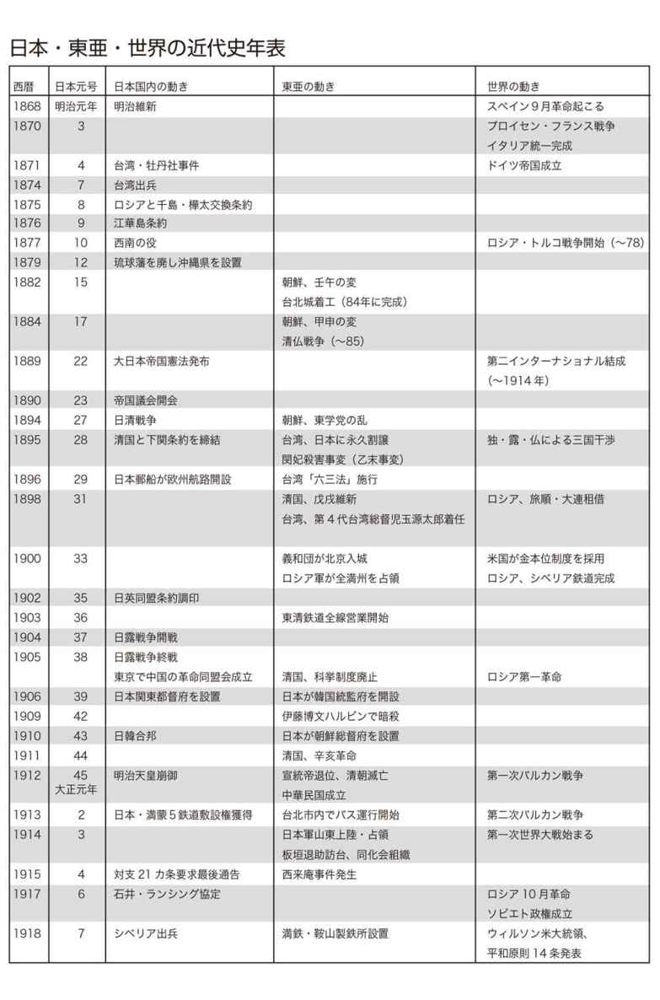
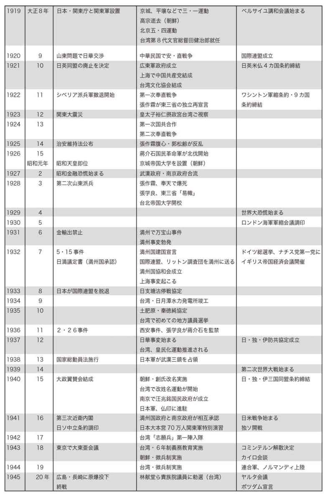
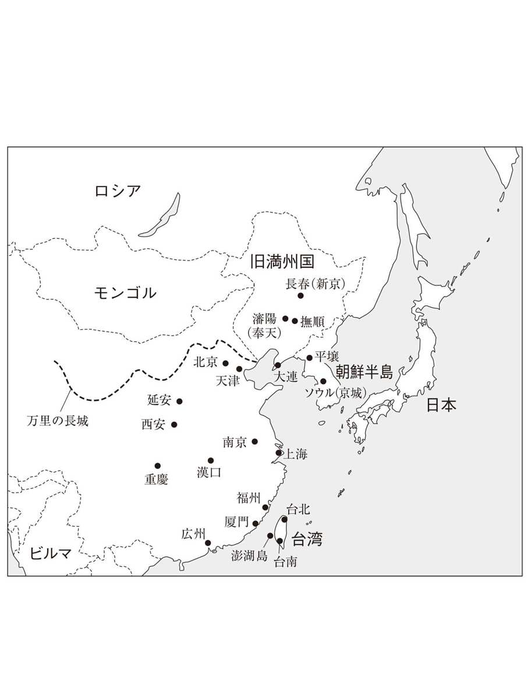
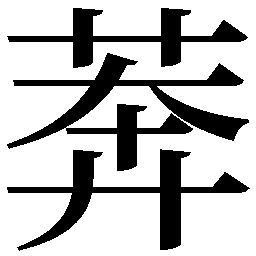

| 黄文雄の近現代史集中講座 大日本帝国編 | |
| 黄文雄 | |
| (2010) | |
黄文雄の近現代史集中講座
大日本帝国編
黄 文雄
この作品は縦書きでレイアウトされています。
また、ご覧になる機種により、表示の差異が認められることがあります。
一部の漢字が簡略字で表示されていることがあります。
まえがき
歴史としての大日本帝国
「大日本帝国」といえば、戦後日本人はたいていマイナス・イメージを抱くことが多い。よく連想するのが軍国主義、侵略、虐殺、搾取などのマイナス・イメージばかりだ。
当然のことながら、戦前の日本では紙幣にも硬貨にも切手にも「大日本帝国」と表記されていたし、憲法は「大日本帝国憲法」であった。国民としてはとくに違和感がなく、むしろ「大日本帝国」の国民としての誇りを感じていた。「非国民」はむしろ「売国奴」の同義語だとされ忌み嫌われていた。
もちろん「大日本帝国」に限らず、「帝国」についてのイメージも同様に、かつては悪いものではなかった。たとえばアメリカ合衆国を「アメリカ帝国」とタイトルをつけた著書も多く見られ、昔から「米帝」がむしろ常用されていた。逆にソ連も「社会主義帝国」と称されることがよくあった。
そもそも、当時は列強が世界に君臨する時代である。大英帝国、ロシア帝国など「帝国」を名乗ることはむしろ誇りであった。「大韓帝国」もその一例である。
日清戦争後、下関条約の第一条第一項に清朝から朝鮮の独立が承認されると、統一新羅朝からずっと中華帝国の千年属国だった李朝朝鮮はたちまち「大韓帝国」と自称し、それまでずっと宗主国から禁止されていた「天」を祀った。
そうした風潮は「大韓帝国」に限らなかった。「立憲維新」に反対し、共和制をめざす革命同盟会の志士、徐錫麟、秋瑾らが安徽起義（蜂起）で掲げた「錦旗」は「新大中華帝国」だった。
では「大日本帝国」についてのイメージの変化はいったいどこからきたのだろうか。東京裁判史観とコミンテルン史観にもとづく戦後教育とマスメディアからのマインドコントロールからきたことは、よく指摘されているが、それ以外に中華史観からもきている。
もっとも代表的なのは独善的な「正しい歴史認識」のおしつけである。絶対無謬の「正しい歴史認識」も「独善」「反省と謝罪」も、すべて中華史観の固有な性格であり、それは大中華の中国も小中華の韓国も変わりはない。
中華世界にとって、「歴史は勝者が書く」との言葉通り、歴史は「政治」そのものである。のみならず、文化芸術もスポーツも、人間の一挙手一投足もすべて政治だ。もちろん戦後日本がおしつけられた「正しい歴史認識」も「日帝の中国侵略」も、すべて中国にとっては「政治」的な観点から主張しているのであり、中国側がよく言う「人民の感情が傷つけられた」といった人道性や、「史実を直視せよ」といった真実性とは関係がない。
同様に、戦後日本人は歴史学者も含めて「大日本帝国」を「政治」として語ることが多い。近隣諸国に配慮して従軍慰安婦や強制連行、虐殺といった噓を認めて、教科書にも書いている。
では「大日本帝国」を「政治」としてではなく、真の「歴史」として語るのには、いったいどういう「歴史の眼」から見るべきだろうか。それは本書が強調したいフォーカスであり、論題の一つでもある。
大日本帝国の世界史的意義と歴史貢献
人類史にはさまざまな文明の盛衰と国家の興亡があった。もちろん大日本帝国の興亡もその一つである。だが、現在では大日本帝国や日本の戦前は「政治」として語られることがほとんどで、「歴史」として語られるのは絶無に近い。その理由は多々あるが、その一つとして、日本人自身の自国史に対する「歴史への省察」にも問題がある。
古代・中世から多くの帝国の興亡があった。ペルシャ帝国、ローマ帝国、ビザンチン帝国、大モンゴル帝国、サラセン帝国、チムール帝国などの興亡があった。近世近代以降にもオスマン・トルコ帝国、ロシア帝国、清帝国、ムガール帝国、ユーラシア大陸以外にもアステカ帝国やインカ帝国などがあった。いかなる帝国であろうと、たいてい「政治」としてではなく、「歴史」として記述されているのが常識である。
もっとも、中国のように高句麗の歴史を「中国の一地方史」と主張して、北朝鮮や韓国との間で「政治摩擦」になった例外もある。
ヨーロッパ東北部に興ったモスクワ公国の東進と南下で発展したロシア帝国と、東亜大陸の東北部の満州人が南下・西進して発展した大清帝国、北米大陸東北部の一三州から西進・南下しながら発展したアメリカ合衆国などの国づくりは、開国維新後の大日本帝国が琉球、台湾、朝鮮、満州へと領土を広げ、影響力を伸ばした国家発展の歴史と、どこが違うのか？ 領土拡張は、列強時代としてはむしろ肯定的な時代精神であった。
近代国民国家の元祖であったイギリスもイングランド、ウエールズ、スコットランド、アイルランドを糾合して連合王国をつくった。フランスもコルシカ、ブルターニュ、バスクを統合して共和制と帝制を繰り返しながら、フランスをつくった。
近代国家はいずれも主力民族が周囲諸民族を糾合、統合あるいは征服してつくった近代国家である。もちろんそれぞれに違いはある。たとえば国体の違いによって、発展や統合の方法、統治方法は各国によって異なる。
そうしたものも含めて、「大日本帝国史」をいかにして「政治」ではなく「歴史」として語るべきか、その観点が、日本国民が自国史を学ぶのには絶対必要である。
いかなる帝国であろうと、それなりの人類史的な意義あるいは文化文明にそれなりの遺産や貢献を残している。だが、大日本帝国だけはその歴史貢献について語るのはタブーのようだ。
西洋近代化は近代西洋文明の所産であることは確かである。一方、非西洋文明圏の近代国家の成立について、日本なしには語れないことは、本書およびこれまで出版した『近現代史集中講座』二篇で明らかにしている。
「もし大日本帝国なかりせば、人類史が変わっていただろう」と断言できる人こそ、真に近代日本の歴史的性格と役割を知る者といえるだろう。
複眼的に歴史を見る
私は「人口が七〇億人いれば七〇億の歴史観がある」とよく口にするが、文化・文明、民族、国家、宗教、言語、そして利害関係などが違えば、歴史観も違うのはごくあたりまえのことだ。全体主義史観ではないかぎり、いかなる人に対しても「正しい歴史認識」を強制すべきではないというのも「自由主義」の精神であり、原則でもある。
人それぞれのものの見方と考え方があり、歴史を見る目もそうである。社会主義国家はマルクスの唯物史観しか許さないが、私が大学院生だった一九六〇年代、史的唯物論で語られている歴史社会発展の図式以外に、歴史社会発展の学説は六〇以上もあった。
前述したように、日本の近現代史は東京裁判史観、コミンテルン史観からだけでなく、中華史観をも加え、「政治的色彩」が強い。戦後最大の反日捏造話のヒット作である「南京大虐殺」がきわめて象徴的だ。
では、いかにして「政治」から「歴史」を奪還すればいいのか、最低限不可欠なのは、少なくとも「政治」と「歴史」との区別を知らなければならない。たとえば他国からの「反省と謝罪」要求などにやすやすと応じてはいけない。そしてもっと多くの歴史の真実を発掘することなども必要であろう。
この『黄文雄の近現代史集中講座 大日本帝国編』では、大日本帝国を主体に、その歴史的性格、意義、役割について述べている。
なお、前二作は、明治から敗戦まで日本が行った外地・領土政策を詳細に述べた『台湾・朝鮮・満州編』、日本が戦った戦争の意義を述べた『日清・日露・大東亜戦争編』である。いわば前者が空間的、後者が時間的に、大日本帝国を支えてきた歴史的な条件とは何かを問う真摯な記述である。是非あわせてご一読をお勧めしたい。
大日本帝国は西風東漸、西力東来後の西洋の優位が確立された列強の時代に開国維新から転生した近代国民国家であった。帝国の性格を知るのには「文明開化、殖産興隆」からだけでなく、帝国までに成長する文化文明的な諸条件、それを支える伝統的な国体、天皇、憲法、そして精神的基礎を理解する必要がある。
また、非西洋諸文明の中で、なぜ日本だけが開国維新、西洋的な近代化を達成できたのか、近代国民国家の潮流の中で大日本帝国の「国のかたち」と性格とはいったいどういうものだったのか。国家と民族の過去を問い、大日本帝国の興亡史に学び、歴史の省察を重ねることは、未来への日本の国是と国家戦略をも問うものである。
本書がそれを考える上での一助となれば幸甚である。
二〇一〇年五月
黄文雄
黄文雄の近現代史集中講座◎目次
第一部 大日本帝国が成し遂げた偉業
第一章 明治維新から生まれた近代化の波
第二章 大日本帝国がもたらした近代化
第三章 大日本帝国が果たした東亜の解放と開化
第四章 世界文明史の中の大日本帝国
第二部 日本を支えた帝国憲法と天皇
第一章 日本人と天皇
第二章 大日本帝国における天皇
第三章 今なお輝く大日本帝国憲法の意義
第四章 大日本帝国の「国のかたち」
第五章 天皇の統帥権
第三部 大日本帝国が列強になれた理由
第一章 「海の時代」に突入した日本
第二章 大日本帝国への基礎を築いた近世日本
第三章 日本の近代化を可能にした封建制
第四章 外圧で開国した日本が飛躍できた理由
第五章 世界を驚かせた明治維新
第四部 大日本帝国が遺した精神
第一章 西洋化と国風との対立
第二章 「漢魂」「和魂」から「和魂洋才」へ
第三章 大日本帝国における興亜と脱亜の思想
第四章 日本精神と大和魂
第五章 近代化を支えた日本人の実力
第五部 今こそ大日本帝国を見直すとき
第一章 再評価すべき大日本帝国の国家経営
第二章 大日本帝国の世界戦略
第三章 世界帝国の解体と大日本帝国
第四章 「維新国家」を志向し続ける日本の使命
第五章 日本人は大日本帝国に学べ
装幀 上田晃郷
編集協力 仲上真之



第一部
大日本帝国が
成し遂げた偉業
第一章 明治維新から生まれた近代化の波
大日本帝国とは何だったのか
「大日本帝国」とは、明治維新以後から太平洋戦争に敗戦するまでの間の日本の国号である。正確には、一八八九（明治二二）年の大日本帝国憲法発布から一九四七（昭和二二）年の日本国憲法施行時までの五八年を指すとされるが、一般的には明治以後から終戦までの時代の日本を意味して使用されている。
現在、「大日本帝国」といえば、それは軍国主義、侵略、搾取といった、悪のイメージで語られることばかりである。中国や韓国で「日帝」といえば、悪魔に近い響きである。日本国内でもいい意味で使われることはほとんどない。
現在でも中国などが「アメリカ帝国主義」と罵倒するように、「帝国主義」とは世界覇権を画策し、軍事力によってそれを成し遂げようとする意味において使用されている。
レーニンは、一九一七（大正六）年に『資本主義の最高段階としての帝国主義』を出版し、帝国とは資本主義の独占段階であり、列強による領土獲得や権益争いを招き、世界大戦へと導くと説いた。
戦後の日本において、進歩的知識人が社会主義にかぶれたこともあり、「帝国」ましてや「大日本帝国」に対しては、否定的にしか語られてこなかった。大日本帝国憲法も、教育勅語も、この時代につくられたものは現在ではすべて「間違ったもの」とされている。
日清、日露戦争を否定的にとらえる向きはまだ少ないものの（それでも中国などでは日本の侵略戦争と教えているが）、それ以降の台湾領有から日韓合邦、さらには日中戦争や大東亜戦争、日米戦争などは、「大日本帝国＝悪」という意見一色である。
だが、私はこれまでの『黄文雄の近現代史集中講座』の「台湾・朝鮮・満州編」と「日清・日露・大東亜戦争編」の二冊で述べてきたように、また本書でも明らかにしていくように、大日本帝国が行った数々の功績は、世界史に燦然と輝くものである。
東亜の解放という理念は、大日本帝国の崩壊後も生き続け、西洋列強の植民地下にあった多くのアジア諸国の独立を促した。大日本帝国の姿は、近隣諸国に対して近代国民国家のお手本となり、その後の国家形成にも多大な影響を及ぼした。
もしも先のレーニンのいうような「帝国主義」の国を探すならば、戦後のソ連や中国のほうがよほど「帝国主義的」だろう。ソ連は東欧諸国に次々と侵攻し勢力下に置いたし、中国はチベット、ウイグルを現在も占領中である。とくに中国は資源獲得のために東シナ海の油田に触手を伸ばし、南沙諸島、尖閣諸島の領有権を主張し、日本を含めた各国と摩擦を引き起こしている。一九七九（昭和五四）年には中越戦争を起こし、台湾を「絶対不可侵の領土」として幾度となく軍事的恫喝を行い続けてきた。軍事費も二一年連続二桁成長である。
このような国が、かつての大日本帝国を非難し、また少なくない日本人がそれに同調しているのは、倒錯以外の何ものでもない。
日本人は、いま一度、「大日本帝国」のほんとうの姿を正視する必要がある。
地球分割時代の日本の登場
では、その大日本帝国はどのような背景から生まれたのか。当時の時代背景を見てみよう。
大航海時代以来、地球規模の変化がはじまった。ユーラシア大陸を中心とする陸の時代から、海の時代への変化である。それまで各地で独自の成長・発展を遂げてきた諸文明が、西洋文明の拡散によって自滅、破壊され、あるいは周辺文明・衛星文明へと転落していったのだった。
七つの海と五大陸は次第に西欧諸国の勢力下に入り、諸地域もその支配下に組み入れられることを余儀なくされたのである。まず新大陸の南北米はポルトガル、スペイン、オランダ、そして後にはイギリスやフランスの新領土となっていった。アフリカや中近東、アジア、太平洋の島々も同様である。
一九世紀中にはアフリカがすでに分割されつくし、後進のドイツやイタリアも植民地争奪戦に参入した。インド亜大陸はフランスの勢力下に置かれたが、やがてイギリスに取って代わられ、オーストラリアもイギリス領となった。小国であるベルギーやデンマークも海外植民地を求めている。
超大国ロシアも凍土のシベリアを東進し、北東アジア、アラスカに至っている。アメリカも独立後は太平洋へと西進して、その過程で黒船が日本に開国を迫ったのだった。かつて西洋の脅威だったオスマン・トルコ帝国は風前の灯となり、インドのムガール帝国も英仏による争奪戦の末、イギリスの植民地に転落している。
東アジア大陸で覇を唱えていた清国も一八四〇年からのアヘン戦争で敗北、弱体化の一途をたどった。露独英仏によって分割が決定、それぞれの勢力範囲が決定される。天朝朝貢秩序（中華帝国への周辺国の朝貢体制）もアヘン戦争後は徐々に崩壊し、万国公法（国際法）による世界秩序に組み込まれていった。
こうした陸の大帝国の凋落こそ「西洋の優位」の証明だった。そして二〇世紀初頭のトルコ革命や辛亥革命といった近代革命は、それを再確認させるものであった。
一九世紀中葉に日本が開国した時点で、西洋諸国による地球分割はほぼ完了していたといってよい。列強の緩衝地帯としてのタイや高原のチベット、エチオピアを除けば、どこも西洋の植民地や保護領、勢力範囲となっていた。やがて凍土や南極大陸すら、列強の「調査」基地となっていく。
当時の世界秩序において、開国以前の日本は未開の国とまでいかなくても、自主独立の国とは見られていなかった。つまり国際法上の主体たり得る主権国家とは見なされなかったのである。同様に、清国は野蛮あるいは半野蛮の国、朝鮮はその属邦、また台湾の一部は清国の属領であっても、残り三分の二は「無主の地」として列強論争の的になっていた。
日本が開国や維新に失敗、または日清・日露戦争で敗れていたら、やはり「無主の地」とされていたはずである。
明治維新が東亜に与えた衝撃
一七～一八世紀にヨーロッパで起こった産業革命と市民革命から生まれたのが、近代国民国家と近代民族である。一方、一九一七年のロシア革命から生まれたのが「世界革命・人類解放」を目指す社会主義体制であった。
社会主義国家は西欧で生まれた国民国家・近代民族を否定する「国家死滅」をスローガンに掲げたものの、二〇世紀における地球規模の東西対立が育まれただけだった。そして二〇世紀末にソ連・東欧の社会主義体制は瓦解する。ソルジェニーツィンによれば、階級をもってしても民族と宗教に勝てなかったのがその原因だという。
ロシア革命がつくったのは「市民」よりも「人民」であったが、自由と平等は両立しがたいとする社会主義の魅力は二〇世紀に限定されるものにすぎず、最後は雲散霧消するに至った。
イギリスの産業革命やフランスの市民革命が近代市民社会の基礎を築き、資本主義を地球規模に拡散させたことは確かだが、それは主に西欧にのみ諸変革をもたらすにとどまった。
一方、植民地化の危機に対応するため行われた明治維新、そして日清・日露戦争後に列強として現れた大日本帝国は、国際的力学だけでなく人類史そのものを変えたのである。では、その影響とはいったいいかなるものであろうか。
明治維新は、中国や朝鮮などアジア諸国に対し、フランス革命やロシア革命以上の社会的影響を及ぼした。それは「日本文明」という衝撃波の波及効果として考えるべきだろう。
まず明治維新は、朝鮮国内で大清帝国に依存しようとする事大党（閔妃一族）打倒など、国家改造を目指す独立党（開化派）に影響を与えた。明治維新に触発された朝鮮知識人たちは、中華の「千年属国」体制を放擲し、近代国民国家としての独立を要求したのである。これは朝鮮史に特筆すべきことだった。
日本の官民も独立党に対し、知的・財政的な支援を行った。独立党のクーデターである甲申事変（一八八四年）で一度は挫折したものの、その後も日本の近代的理念は朝鮮人の国家観を変革していった。戦後の一九六〇年代に朴正熙大統領が推進し、韓国発展の基礎を築いた近代化政策も明治維新をモデルにしたものだった。朴自身が「維新体制」と称している。
また清国で起きた戊戌維新（一八九八年）は、中華帝国史上初めて立憲君主制を導入したもので、これまた明治維新をそっくり模倣したものだった。清国は日清戦争で敗れて以来、日本に近代化を学ぼうとする変法・自強運動の機運が知識人の間で高まり、康有為らが「日本明治政変考案」などの改革案を光緒帝に上書した結果、維新の大号令が発せられたのである。
そして憲法制定、国会開設、科挙・宦官制度の廃止を目指した。伊藤博文を政治顧問として迎え入れることまで試みたほどの「師日」（日本に学ぶ）ぶりだったが、西太后ら守旧派勢力の逆襲に遭い失敗した。
だが一九〇五（明治三八）年に日露戦争で日本が勝利すると、今度は西太后を中心に本格的かつ徹底的な日本化・近代改革が断行される。中国にとって文化・文明大革命というべきこの一連の動きは一九一一（明治四四）年の辛亥革命まで継続し、それを通じて学び取った新知識は中華民国建設の原動力ともなった。辛亥革命もまた「第二の明治維新」を目指したものだったのだ。
いかに西力東来の脅威を受けても、数千年来の中華帝国の殻を破ろうとしなかった清国や朝鮮は、明治維新の衝撃によって初めて近代国家への道を歩むようになったのだった。反日を掲げた蔣介石時代の中華民国政府も、やはり日本人の生活態度や近代的生活上の規律、公徳をモデルとした近代国民国家の建設運動（新生活運動）を行っている。
日本国民意識の形成
国民意識や民族意識は近現代に入ってから生まれたもので、近代資本主義の歴史的産物ともいわれる。
国民意識が法的な概念であるのに対して、民族意識は心理的概念である。歴史において、江戸時代は藩民意識が強かったが、幕末から維新にかけて、日本人、さらに日本国民意識が徐々に形成・熟成されたと思われる。さらに戦後からは「国民」に代わって「市民」意識が強調されるようになった。
一方中国では、自然とともに生きる「生民」はいても「国民」がいなかった。中華人民共和国には「人民」、そして「反人民」もいた。いわゆる「紅五類（労働者・農民・兵士・革命幹部・革命烈士）」が人民で、数％の資本家・反革命分子の「黒五類（地主・富豪・反動分子・悪質分子・右派分子）」が反人民である。反人民は「改造」されてはじめて人民になれる、ということになっていた。
夏目漱石は『現代日本の開化』で「日本の近代化は外発的で、西洋の成果を借用・模倣したものだった」と指摘するが、それはトルコや中国も同様だった。その中で日本だけが近代化に成功したのは、改革以前の江戸時代に原因がある。
ライシャワーは『ライシャワーの日本史』（講談社）でこう書いている。
「（江戸時代の社会は）きわめて高度かつ複雑な経済ならびに社会体制、高水準の政治的有能さを発展させていたのである」
「日本は決して後進国ではなかった。よしんば西欧に遅れをとっていたとしても、それは科学技術の分野においてだけだった。集団としての統制力や協調のための技量などにおいては、西欧のどの国よりも進んでいたものと思われる」
日本に「国民」が誕生する下地がこの頃すでにできあがっていたことも指摘しなければならない。江戸時代から檀家制度がとられ、全国民の存在を把握するに足る実質的な戸籍制度も完成していたのだ。
西欧で主権国家が形成されると「国境内に住む人は皆同じ国民である」という近代国民意識が芽生えた。こうした国家主義、国民主義であるナショナリズムの勃興は、近代化の大きな特徴の一つといえる。
一八世紀末のアメリカ建国やフランス革命以来、ナショナリズムは北米や西欧で高揚しはじめた。ナポレオンの国民軍への抵抗の中、各国で「国民」としての意識が高まっていく。
日本でこのような意識が芽生えたのはいつの頃か。六〇七年、日本は隋の煬帝に対して「日出ずる処の天子、書を日没する処の天子に致す」という国書を送ったが、恐らくこの時代には、日本人としての意識、対等な国と国としての意識が生まれていたのではないだろうか。少なくともそこには属国意識・事大意識は見られない。
西欧諸国がフランスという強国を眼前にしてそれぞれの国民的アイデンティティを確立したのなら、日本は中華帝国という強大な存在によって自分の国家を意識したということができる。平安時代には中華文明に対し、それを受容する主体としての「大和魂」なる理念もできあがっていた。
朝鮮も日本以上に中華帝国の存在を絶えず意識していたが、地続きにあるゆえか自主独立を貫けなかった。そして版図に組み込まれたり、事大主義によって進んで属国となったりと、大帝国への従属に甘んじてきたため、日本と比べてナショナリズムの定着する機会は少なかった。
日本人は単一性の強い民族で、また天皇を中心とする祭礼などを通じて、早くから文化の同質性を確立してきた。日本人という同胞意識が早くからあったからこそ、明治維新という国家統一の大変革をすんなり行うことができたのである。そして日清・日露という二つの「国民戦争」を経て国民意識が熟成された、とはよくいわれるところだ。
国外で事故があるたび、日本のマスメディアはすぐ「日本人の被害者がいるか、いないか」を報道するので、よく顰蹙を買うという。これはやはり日本人の同胞意識の強さからくるのではないだろうか。逆に何人死のうと「われ関せず」どころか「辛災楽禍」（他人の不幸を喜ぶこと）で、他人が死んでも自分だけ生き残ろうとするのが、中国人の国民性である。
ポール・リシャルの日本賛歌
明治維新で誕生し、世界を揺り動かした大日本帝国が、大モンゴルや大清、オスマン・トルコのように客観的な「歴史」として見られることがないのは残念だ。語られるにしても、侵略という「政治」としてであろう。大日本帝国＝軍国主義、という見方は、思考停止以外の何ものでもない。
フランスの哲学・神学者で、高名な詩人でもあったポール・リシャルは、一九一六（大正五）年にたまたま旅行で訪れた日本に魅せられ、四年間滞在した。明治維新からほぼ半世紀、日露戦争から一一年経った大正時代である。
そのときつくった「日本の児童に」と題する詩は、日本の栄誉と使命を七つ挙げている。
①独り自由を失わなかったアジア唯一の民よ。貴国こそ自由をアジアに与えるべきだ。
②かつて他国に隷属しなかった世界唯一の民よ。すべての隷属の民のために立つのは貴国の任務だ。
③かつて滅ぼされたことのない唯一の民よ。すべての人類の幸福の敵を滅ぼすのは貴国の使命だ。
④新しい科学と古い知恵とヨーロッパの思想とアジアの精神とを自己の中で統合している唯一の民よ。これら二つの世界を融合するのは貴国の任務だ。
⑤流血の歴史のない宗教を持つ唯一の民よ。いっさいの神々を統一して、さらに神聖な真理を発揮するのは貴国である。
⑥建国以来、一系の天皇を永遠に奉戴する唯一の民よ。貴国は万国に対して、人がみな天の子であり、天を永遠の君主とする一つの帝国を建設すべきことを教えるために生まれてきた。
⑦万国に優って統一性のある民よ。貴国は未来の統一に貢献するために生まれ、また戦士として人類の平和を促すために生まれてきた。
「日本の児童に」は、東西の文化、文明の習合の完成者である日本、そして次の世代の使命を訴えたものだ。この日本賛歌は、日本と日本人の本質、そして大日本帝国が世界史にどのような役割を果たしてきたかを知る上で、実に示唆に富んでいる。
リシャルは日本に四年しかいなかったものの、日本の歴史・文化についての知識と理解は、当時の西欧の東洋学者を超えるものがある。実際、大正時代の子供たちは、昭和期において「東亜の解放」の先兵となり、大きな歴史的貢献を果たした。
インドネシアの政治学者アリフィン・ベイも次のように語っている。
「日本が戦争に敗れ、日本軍が引き揚げた後、アジア諸国に残っていたのはほかならぬ日本の精神的、技術的遺産であった。この遺産が第二次大戦後に新しく起こった、東南アジアの民族独立運動にとって、どれだけ多くの貢献をしたかを認めねばならない」
敗戦後も吹き続いている「日本の風」
明治維新後から大日本帝国の時代、そして敗戦後もなお、この小国・日本の影響は、海を越えて台湾や韓国・朝鮮、満州、中国、東南アジア、さらに世界へと広がり続けた。その波動の大小は日本とのかかわり方によってさまざまだ。
近代社会はどのように形成されたか、またそれが古代や中近世の社会とどのように異なるかは、いうまでもなく近代化論の一つのテーマである。
近代化の特徴といえば、まず世俗化があげられる。宗教的色彩・宗教心の淡化である。西欧近代社会も、まず宗教改革からはじまった。
さらに西欧の近代化には二つの特徴がある。それは個人主義と合理主義だ。個人主義は自由と民主の思想、合理主義は科学技術をそれぞれもたらした。そこに、十字軍の東征を通じて受けたイスラム文化の刺激と、ルネッサンス実現という背景が加わって達成されたものだった。
宗教改革が文化的、精神的な変化の契機となり、市民革命と産業革命によって社会が生まれ変わった。こうして生まれた新価値体系の一つが近代国民国家である。そして「資本主義」「民主主義」「個人主義」「民族主義」が近代文化を構成する四大要素となった。
経済の近代化には資本主義精神が、政治の近代化には法治主義精神が、文化の近代化には合理主義精神が必要とされた。
ちなみに近代思想の異端として挙げられるのが全体主義である。二〇世紀中葉に崩壊したファシズムやナチズム、世紀末に終焉を迎えた社会主義・共産主義がこれにあたる。
それでは東アジアにおいて、どうして日本だけが開国維新に成功し、近代化の達成に成功したのだろうか。その理由は後述するが、多々ある。江戸時代の超安定社会の存在も欠かせない素地だった。社会の安定がない限り、近代経済は絶対に発展しないからだ。
最大の理由は、日本だけが西洋文明へと改宗ができたことだ。それは「文明開化・殖産興業」の形で行われ、日清、日露戦争でその成功が実証された。当然のことながら、その間には欧化と国風の拮抗があったが、その中で和魂洋才の日本型近代文明が成熟していったのだった。
そして「文明開化」の波動は東アジア世界に拡がった。これは日本が創出した資本や技術の海外移転に成功したからである。日本の台湾経営は西欧植民地と異なり、内地の延長という考え方に基づいていた。だから台湾や朝鮮の近代化は第二・第三の文明開化、日本化でもあったのだ。
このように日本型の近代文明は、東アジアに拡散していった。それは大日本帝国時代にとどまらない。たとえば戦後台湾経済の成功は、アメリカの長期経済援助、ベトナム戦争特需、あるいは一九六〇年代の世界経済拡大の波にうまく乗ったことなど理由は多々あるが、日本時代に築かれたインフラや教育水準の高さ、戦後日本経済との密接な関係によるところが大きい。
この波動が「東亜」から「大東亜」へと拡がって、今日のアジア経済の発展をもたらしたのは、紛れもない事実なのだ。もちろんすべての国が日本に主導されたわけではないものの、常にモデルになっていたのは日本だった。
第二章 大日本帝国がもたらした近代化
大日本帝国の起源
日本が「大日本帝国」と称するようになったのはいつのことだろうか。明治国家成立の時点、あるいは日清・日露戦争後か。日本の国体（国のかたち）・政体（政治の形態）に関する論争はあっても「帝国」についての研究は少ない。
先述したように、現在では「帝国主義」は社会主義者の愛用する語であり、資本主義の大国アメリカを「帝国」と呼ぶことも多い。
中華帝国の千年属国だった朝鮮は、日清戦争後に独立した際、実力もないのに「大韓帝国」と自称した。また中国はそもそも「天下」であって「国家」ではなかった。清の崩壊後、共和制を目指す革命同盟会のメンバー・徐錫麟と秋瑾は、安徽の起義で「新中華帝国」の旗を掲げたが、立憲・革命各派の大論争の末「中華民国」に決定した。
一八八九（明治二二）年二月一一日に大日本帝国憲法が公布されたときに、「大日本帝国」の国号が誕生したという解釈も多い。だが、維新後に発行された紙幣や切手には早くも「大日本帝国」の国名が記載されているのだ。
社会主義者や進歩的文化人が非難する「帝国主義」の性格として、植民地の獲得と住民の弾圧、搾取が挙げられる。
日清戦争後の一八九五（明治二八）年、新たな「植民地」として台湾を獲得してから日本は宗主国家となった、と説く近現代史学者もいるし、歴史教科書にもそう書かれている。
だが帝国憲法は、新領土の編入について明文化していないため、第二一回、二二回の帝国議会を中心に論争をかもした。結局、台湾が植民地だという帝国の法的根拠はなく、日台五〇年の歴史において、新領土経営にも植民地支配・搾取は見られなかった。「台湾は帝国の植民地だった」というのは、一部の学者の説にすぎない。
日露戦争後の日韓合邦についても同様で、天皇の詔書、帝国議会、政府閣僚のいずれも朝鮮を植民地とは規定していない。また満州事変を経て成立した満州国が日本と一蓮托生の関係にあったのは史実でも、大日本帝国の「植民地」とするのは決して正しい歴史認識ではない。
開国維新後の日本は、いかにして西洋植民地への転落を避け、近代国民国家に転生するかを国家の総目標としてきた。それには文明開化・殖産興業という形で近代化を断行せざるをえず、内外の多くの課題への対応が求められた。「脱亜入欧」を志向するにも、国内の大アジア主義や日本主義（ヤマトイズム）の反撃もあり、また同時に、「赤禍」（共産主義）の侵食をも防がなくてはならなかったのだ。
このような近現代史の大きな流れの中で、大日本帝国はどう戦い、かつどのような貢献を世界史に果たしてきたのであろうか。
世界の歴史を変えた大日本帝国の出現
明治維新、日清・日露戦争を経て大日本帝国が列強に参入したことは、文明史的にも一つの大きな事件であり、世界に与えた影響も小さくなかった。開国維新から半世紀後のことである。
日本は世界の王政改革や体制内改革のモデルになり、第二次世界大戦後も新興諸国における近代化推進のモデルであり続けた。韓国の朴大統領、イランのパーレビ政権やシンガポールのリー・クアンユー首相の近代化政策などがその代表だろう。
明治維新から大日本帝国登場までの流れを巨視的に見れば、ユーラシア大陸の民族解放に対する大きな契機となったことも指摘できる。さらに言うなら、日清・日露戦争によって清やロシアの帝国崩壊を加速させ、二大帝国に支配されていた諸民族にも解放を促した。満州人に支配されていた漢人やモンゴル人、チベット人は辛亥革命を機に独立、フィンランドや東欧、中央アジアの諸民族も相次いで独立している。
また「白人対黄色人」「西洋文明対東洋文明」の視点から見ても、日露戦争と大東亜戦争は人類史を変動させるほどの影響を世界に及ぼしたのだ。
日露戦争後には、日本の勝利に刺激された清国の留学生が日本に殺到。一九〇五（明治三八）年には興中会、華興会、光復会の革命団体三派が革命同盟会（のち中国同盟会）を結成したことはよく知られている。インドやベトナム、フィリピン、ビルマなどアジアの独立運動や革命運動も活発になった。
インドではやはり日露戦争の影響で、一九〇五年にインド国民運動が始まり、ガンジーを中心とするインド国民会議派によって独立運動が広がった。初代首相ネールも、日本の戦勝で独立運動に目覚めた一人であり、後年次のように語っている。
「日本が大国ロシアを破ったので、インド全国民は非常に刺激を受け、大英帝国をインドから放逐すべきだとして、独立運動が全インドに広がった」
「インド人は劣等感を持っていた。ヨーロッパ人は、アジアは遅れたところだから自分たちの支配を受けるのだと言っていたが、日本の勝利はアジアの人々の心を救った」
トルコでも、日本の活躍は「近代化の父」ケマル・アタテュルクによるトルコ革命を誘発した。トルコ共和国の初代大統領となったケマルは近代化を成し遂げた日本と明治天皇を尊敬しており、トルコの宿敵ロシアを破った日本は彼の近代化革命の励みになったのだ。以来、トルコは世界一の親日国家とも呼ばれている。
エジプトでは今も「独立に成功したのは明治天皇のおかげ」といわれる。民族運動の指導者ムスタファ・カーミルは「日本人こそ、ヨーロッパに身の程をわきまえさせてやった唯一の東洋人である」との言葉を残した。
こうして大日本帝国の出現は、列強の支配下にあった社会運動家や独立運動家の刺激となった。大東亜戦争で日本は敗退したものの、植民地支配勢力も後退を余儀なくされたため、アジア、アフリカの諸民族は独立を果たしたのだった。
一九五五（昭和三〇）年、タイ紙『サヤーム・ラット』の主幹を務め、後に首相にもなったククリット・プラーモートはこう述べている。
「日本のおかげでアジア諸国はすべて独立した。日本というお母さんは難産して母体を損なったが、生まれた子供たちはすくすくと育っている」
「今日、東南アジアの諸国民が米国と対等に話ができるのは誰のおかげか。それは、身を殺して仁をなした日本というお母さんがあったためである」
アメリカの左翼系評論家オーエン・ラティモアも「日本が立派にやり遂げたことは、アジアにおける植民地帝国の一九世紀的構造を破壊したことだ」と断言している。
大日本帝国が世界に及ぼした衝撃は、世界地図を大きく塗り替えた。第二次大戦直後は約六〇だった主権独立国家が今ではその三倍、約二〇〇になっていることからもそれがわかる。
東亜の安定社会を築いた日本
中国では一八世紀末の白蓮教の乱から文革まで、一世紀半以上にわたって内戦・内乱・内訌（うちわもめ）が続き、匪賊（集団で略奪・殺人などを行う賊）が跋扈していた。台湾では清朝時代の二一二年間に「三年一小反、五年一乱」を繰り返し、満州では有名な馬賊（馬に乗った略奪集団）が跳梁した。朝鮮でも李朝以来、草賊（小賊）や火賊（放火強奪の盗賊）が暗躍し、朋党の争い（官僚の党争）も今日の南北対立に至るまで続いている。
このように、日本以外の東アジアは内乱と匪賊の社会だった。王権も無力に等しく、兵士までが兵匪となって匪賊以上の略奪を働く有様だった。それをも上回る略奪者が政府であり、役人だったのである。
軍隊と官僚による苛斂誅求（年貢・税金などの厳しい取り立て）が略奪以上に過酷な社会状況で、貧困や飢饉、伝染病に苦しむ民衆はほとんど救済されないままだった。
ヘーゲルの「アジア停滞論」もここには言及していないが、東アジアの近代史を論じるには、まずここに着眼しなければ、アジア的停滞社会を理解できない。
このような現状を打破し、安定社会と殖産興業によって東亜諸国の近代化の基盤を築き上げたのが、日本によるインフラ建設だったのである。
日本人は各地でインフラを建設するにあたり、まず治安を維持し社会を安定させることに努めた。台湾の土匪（土着の武装集団）を討伐・平定し、朝鮮では草賊の跳梁と両班（貴族階級）の苛斂誅求を撲滅した。満州でも軍閥や馬賊を追放し、これらの地域に安定社会を実現させている。
こうした軍事行動、警察活動が戦後「植民地支配の罪過」として糾弾される一方、討伐された民衆の敵が「抗日英雄」として賞賛されている。このような中韓の学者、あるいは日本の進歩的学者の歴史観がいかに事実をゆがめているかがわかるだろう。
一九四〇年代になって台湾・朝鮮・満州も次第に産業社会に入り、世界の注目を集めたが、中国だけが立ち遅れたままだった。内戦や内乱が止まなかった上、匪賊の出現しない年も地方もなかった。当時の匪賊は正規軍の一〇倍に当たる二〇〇〇万人と推定され、まさに匪賊と兵匪の競合社会だったのだ。
だからこそ満州国が成立すると、この桃源郷──王道楽土を求めて、毎年一〇〇万人以上の流民が万里の長城を越えてなだれ込んでいる。そして支那事変が勃発、日本軍が進むところからは匪賊が姿を消した。後述するが、社会秩序が回復してインフラが築かれ、経済も安定していった。
改善された東アジアの生存環境
禊祓の国・日本を別として、東アジアは歴史的に疫病の流行しやすい、不衛生極まりない地域だった。ことに中国は有史以来、ペストをはじめインフルエンザ系の伝染病発生・拡散の地であり、今日でもそれは変わっていない。
台湾と朝鮮が、日本の衛生環境改善で人口が倍増している事実は、戦後あまり知られていない。
日本領有以前の台湾は「瘴癘の地」（伝染性の熱病の風土）と呼ばれていた。あらゆる種類の伝染病が蔓延しており、とくにマラリアが深刻だった。漢医や巫医（祈禱師）はいても西洋医はおらず、医薬品もなかったため、平均寿命は三〇歳前後とされていた。
海外からの渡航者が「人至れば即病、病になれば即死」と恐れるほどで、定住など不可能だった。台湾の開祖と呼ばれる鄭成功も、足を踏み入れて半年後に病死している。
この地を領有した日本人にとっても、最大の敵は伝染病だった。領有に先立つ台湾出兵（一八七四年）の際、日本軍三六〇〇人のうち戦死者はわずか二人だったのに対し、台湾熱（マラリア）にかかったのは二八〇〇人で、うち五二五人が死亡している。
一八九五（明治二八）年四月一七日に下関条約が締結され、五月三一日には日本軍が台湾北部に上陸した。六月七日に台北城に入って二日後には基隆病院、二〇日には城外に大日本台湾病院（現在の台湾大学附属病院）を設立している。そして医療衛生の知識を広め、医療機関の充実、医師の養成、医療制度の近代化、生活環境の改善を行った結果、寿命も人口も倍増したのである。
朝鮮でも疫病は最大の脅威だった。なぜならこの半島はあまりにも不衛生だったからである。一九〇八（明治四一）年に控訴院判事として韓国政府に招聘された山口真昌は、当時の漢城について次のように説明している。
「道路は狭隘で、而も糞尿は至る処道端に満ちて居るという有様でした。井戸水は混濁していて、風呂に入れば茶色の湯で、却って体が汚れる様な感を催し、飲料水は石油の空罐一杯を何銭で買って使用する状態」（『朝鮮における司法近代化の足跡』）
細井肇の『漢城の風雲と名士』によるとこうだ。
「韓国内地を旅行すれば、路傍や街路中に累々たる黄金の花（糞のこと・著者注）が場所も嫌わず狼藉と咲き乱れて居て、足の踏み場もなく、潔癖者は一見其不潔と臭気に驚く」
「毎年夏期になると伝染病が流行し、其の伝染病に罹る患者の多くは韓人」
疫病が大流行する最大の原因は、こうした極悪な衛生状態だった。李朝時代は「民乱」「倭乱」（日本の朝鮮出兵）「胡乱」（満蒙八旗軍の侵入）以上に、疫病が人々の命を奪っていたのだ。
趙珠の『一九世紀韓国伝統社会の変貌と民衆意識』によれば、一七世紀から一九世紀にかけて、年間一〇万人以上の死者を出す疫病が六回も流行した。一七四九年の大疫では五〇万人の死者が出たという。
朝鮮に近代医学・医療制度を導入し、この悪循環の根源を断ち切ったのも日本だった。総督府が設立した大韓医院はやがて京城帝大附属病院として、朝鮮半島における近代医学・医療発展の中心的存在となった。
一九一〇（明治四三）年には各開港都市と国境都市で厳しい防疫・検疫が実施され、三〇年代に入ると近代医療制度の確立・普及によって疫病の流行が完全に食い止められるようになる。地方まで医療制度が広まり、衛生環境の改善と食料の増産によって寿命が延び、人口も統治三〇年間で九八〇万人から二四〇〇万人へと倍増した。
中国や台湾も、日本からもたらされた医療・衛生制度によって生活環境が大きく変わり、「日本軍が進むところ疫病が消えていく」という伝説まで生まれたのだった。
東アジアを変えた日本の教育事業
日本領有前の台湾にも教育機関はあった。だがそれは儒学や書院など科挙対策の教育施設でしかない。有力者が一族の子供のために教師を招く書房もあり、これは日本の寺子屋に近い。それでも一八九八（明治三一）年の時点で書房数は一七七〇、一校の生徒は平均一四・五人で、全人口の〇・五六八％にすぎず、しかも専門技術の教育などない。普通教育など夢のまた夢という有様だった。
一八九五（明治二八）年に施政を開始した日本は、教育整備に着手した。初等教育機関としての国語伝習所、台湾語伝習所、公学校、蕃人（台湾先住民）公学校、小学校が各地に設けられ、一九〇〇（明治三三）年には国語学校に中等教育機関にあたる鉄道科、電信科をも設立する。
一九〇七（明治四〇）年には国語学校の中学部が分離し、それ以後も高等女学校や専門学校、実業学校、盲啞学校がつくられていった。台北帝国大学が創設されたのは一九二八（昭和三）年で、大阪帝大や名古屋帝大より早い。
義務教育がスタートしたのは戦時中の一九四三（昭和一八）年である。翌年三月時点において、初等学校の就学率は台湾人七一・一五％、先住民八三・三八％と、日本についでアジア第二位の水準になっていた。
戦後日本が撤退した後台湾を支配したのは中国の国民党軍だったが、彼らの識字率は台湾人よりはるかに低かった。工場の休憩時間に女工が読書しているのを見て、工場長の中国人が驚いたという話もあるほどだ。
朝鮮の状況も台湾と同様で、書堂で習字と漢籍の素読を教える程度の教育しかなかった。一九一〇（明治四三）年の日韓合邦当時、書堂は一万六〇〇〇あったが、生徒数は人口の約一％にあたる一四万人にとどまっていた。
一九一六（大正五）年に長谷川好道総督が就任し、三面一校（三村に一つの学校を設立）という教育普及策を推進して、一九二一（大正一〇）年には目標を達成した。一九二九（昭和四）年からは目標を一面一校に引き上げ、一九三六（昭和一一）年に達成。小学校にあたる公立普通学校は二五〇〇校に達した。京城帝国大学の設立は一九二四（大正一三）年で、台北帝大よりも早かった。
戦時中には内地の名称変更に伴い、普通学校が国民学校と改名される（一九四一年）。一九四四（昭和一九）年には朝鮮の国民学校は五二一三校、生徒数は二三九万八〇〇〇人だった。就学率も一九四三（昭和一八）年には六一％に達しており、それから四年かけて義務教育を実施する予定だったが、終戦により挫折した。
「韓国の経済発展は、日本の統治時代の教育のおかげである。教育制度、官僚制度、軍事制度は日本が残した三つの功績である。韓国経済の成長を主導したのは、日本の教育を受けた人々であった」
桜田武は、日経連会長だった一九七六（昭和五一）年にこのように発言し、韓国側から猛烈な反発を受けた。
だがこれは紛れもない真実なのだ。搾取するべき植民地に、自国に先駆けて大学をつくるなどありえないという単純な事実から、目を背けたままでいる人が、韓国はおろか日本にも多いのは実に嘆かわしいことである。
民衆を飢餓から救った日帝時代
台湾・朝鮮の食糧事情が劇的に改善したのも日帝時代である。
台湾では当時宗主国だったオランダが、中国に輸出するために米作をはじめた。だが清朝時代の一八世紀末には、土地開発は飽和状態となり、新田を開墾することは難しくなっていた。
土地は耕作すればするほど地力が消耗するもので、二倍働けば二倍の収穫が上がる、というわけにはいかない。それでも人口は増加し、中国からの輸入に頼ったものの、飢饉が頻繁に起こるようになった。それに伴い「羅漢脚仔」（ルンペン）と呼ばれる家を失った人々があふれ、土地をめぐる村同士の争いも激化した。それらが匪賊跳梁の下地となっていたのはいうまでもない。
日本時代は、その悪循環を一変させた。土地制度や農業政策の近代化をはじめ、米の品種改良、病害虫の駆除、肥料や農具の改良が進んだ。その結果、一九三八（昭和一三）年の米穀生産量は一九〇〇（明治三三）年の四・五七倍、単位面積の生産量も一・八九倍に伸び、台湾は飢餓国から農産物輸出国へと成長する。人口増加率も、世界の平均〇・五％を大幅に上回る二・五％に達した。
李朝朝鮮では人口の八割が農民だったが、やはり食糧難は深刻だった。やせた土地では稲作は三年一作が限界で、毎年のように旱魃、水害や虫害に悩まされる上、両班や役人からさらに収奪される。秋の蓄えを食いつくし、収穫のまだない「春窮期」には、人口の六割が飢餓に遭う状態だった。
朝鮮総督府は土地改良や低利融資、米穀生産奨励などを打ち出していった。一九一〇（明治四三）年の朝鮮産米の対日移出は一一万石だったが、一九一九（大正八）年には二八〇万石、一九二八（昭和三）年には七〇六万石に伸びている。これによって逆に国内の農家が圧迫され、朝鮮総督府と日本政府が調整協議したほどだった。
価格の面でも朝鮮は優遇された。一九四一（昭和一六）年の米価設定において、生産者の手取りは一石あたり五〇円で、消費者価格は四三円だった。一九四三（昭和一八）年の標準買入価格は生産奨励金なども含めると一石六二円五〇銭だったが、消費者価格はやはり四三円に据え置かれ、逆ざやは政府が負担していた。
結果として、朝鮮の人口は飛躍的に上昇する。一七五三年の人口は七三〇万人、一八五〇年には七五〇万人で、統監政治（一九〇六～一九一〇年）直後の一九〇六（明治三九）年には九八〇万人だった。それが一九一二（大正元）年で一四〇〇万人、一九二六（昭和元）年には一八六六万人、一九三八（昭和一三）年に二四〇〇万人と、合邦後わずか三〇年で二・四倍に達しているのだ。
韓国では「七奪」として、国王・主権・土地・資源・国語・人命・姓名を日本帝国主義に奪われたという説があるが、それがまったくでたらめなのは数字を見ても明らかだろう。
農業生産と人口の増加は社会を活性化させる。余剰は投資や消費に流れ、商工業が発達して都市生活者が増える。前項で触れた教育の普及も加わって、近代市民社会が急速に形を整えていった。日帝時代は、台湾と朝鮮の未来を大きく切り拓いたといって過言ではないだろう。
満州にもたらされた文明社会と産業革命
次は満州に目を向けてみよう。
北東アジアに位置し、金や清を開国した満州族の故郷でもある満州は、総面積一一〇万平方キロで、日本の約三倍、ドイツとフランスを合わせた広さがある。
しかし一九三二（昭和七）年に満州国が成立するまで、インフラ整備はまったく行われていなかった。軍閥に支配されていた満州ではほとんどの予算が軍備などに消えており、張作霖の子・張学良が建設したのはダンスホール数軒だけだった、ともいわれるほどだ。
日本と満州国政府は満州の国土開発にあたり、交通網や上下水道、電力開発など都市計画まで視野に入れた。
関東軍特務部、満鉄経済調査部、満州国民政部土木司の三者協議によって大都市建設計画の標準案が作成される。第一期計画は首都である新京・奉天・ハルビン、第二期は吉林・チチハル・承徳・営口・錦州・牡丹江・北安鎮・四平街で実施され、一九四二（昭和一七）年末には一〇九の都市を建設する計画が立てられていた。
満州は一躍大産業国家となり、自動車や飛行機まで製造するようになった。また各新興都市の公園や緑地の開発など緑化も進められ、近代都市へと成長していく（詳しくは、『黄文雄の近現代集中講座 台湾・朝鮮・満州編』徳間書店）。
「ひとり主導的地位に立った日本人のみならず、ひろく東亜諸民族が力を合わせて開発・発展せしめ、その恵福を、ひろく等しく各民族の間に分かち、ここに新たなる楽天地をつくりあげようと、日本の若き人々は進んで満州国に集まってきた」と、満州国総務長官を務めた星野直樹は『見果てぬ夢──満州国外史』で書いている。
日本によるインフラ整備の象徴といえるのが、洪水防止・灌漑・飲用水供給・発電など多目的に応じた東洋最大級の豊満ダムである。ここを訪れたフィリピン外相は次のように語ったという。
「フィリピンはスペイン植民地として三五〇年、アメリカの支配下で四〇年を経過している。だが、住民の生活向上に大きく役立つものは一つもつくっていない。満洲は建国わずか一〇年にしてこのような建設をしたのか」（松井仁夫『語り部の満洲』銀河書房）
満州国は日本の敗戦によって一三年半で消滅、中国に併吞される。一大工業国家、超先進地帯になった満州は、国民党にとっても共産党にとっても垂涎の的だった。毛沢東は「東北さえ確保すれば中国革命の基礎を築ける」とその重要性に注目し、ソ連の侵攻翌日には満州占領を指令。国共内戦を経て、満州は中国共産党の支配下に入る。
日本が残した各種インフラは、工業基地・資源供給基地として建国当初の中華人民共和国の生命線となる。大慶油田は純益の九〇％を上納、売上高も六〇％を税金として徴収された。内戦や革命に巻き込まれた上、収奪される一方の満州は衰退し、やがて「東北現象」と呼ばれる没落の道をたどった。
さらに大躍進や文化大革命を経て、満州の遺産を食い尽くした中国が取ったのが、鄧小平の打ち出した改革開放政策である。それまで満州に依存していたのが、今度は外国に依存するようになったのだ。
日本がつくった非西洋近代化のモデル
二〇〇〇年来、東アジアの主役は漢人だけではなかった。歴史上、匈奴、鮮卑、突厥、契丹、女真、モンゴル、満州などの諸民族の存在があったし、満州人の後は日本人が新たな主役として登場してきた。
正確には日清戦争の勝利で、満州人に代わって主役になったというべきだろう。日本は「化外の地」（文明・教化が及ばないところ）「荒蕪の地」（荒れはてた土地）だった台湾を近代社会にし、朝鮮を中華の属国から解放して合邦した。
さらに日露戦争によってロシアの南下を防ぎ、満州を王道楽土に変えた。支那事変以降は大東亜共栄圏の理念を掲げて、東アジア全域を桃源郷にすることを国策とした。その夢は日本の敗戦とともに消え去ったが、理念だけは残っていた。
そして戦後は世界を左右するほどの経済成長を遂げた。今日では、日本のハイテク技術なしに世界経済の継続的発展は難しい、とも考えられている。そして日本を中心としたアジアのＡＳＥＡＮ、ＮＩＥＳ諸国にも驚異的な経済発展が見られた。これは日本が主役となってアメリカ西海岸をも内包した、環太平洋の新たな大東亜共栄圏である。
戦後日本の成功の要因は何か。まず戦災で旧設備が破壊されたことで新技術・新設備の導入に成功し、「植民地」と呼ばれた海外領土の喪失によって対外負担が軽減された。さらに世界経済の好況、自由貿易体制の恩恵にあずかり、日米安保体制に依存することで国防費も節約できた。また安価で良質な労働力、優秀な官僚の存在などが挙げられよう。
しかし巨視的に見れば、やはり明治維新から営々と築いてきたシステムが機能したことこそ基本的な成功の要因ではないだろうか。「持たざる国」として乏しい資源と狭い国土を生かしつつ経済成長するという大日本帝国の遺産を受け継いで、戦後の再生システムがつくられた。
それは単に産業・技術を中心とした経済システムではなく、政治や社会、文化も含んだ文明システムであり、鎖国時代から育まれてきた近代日本の時代産物でもある。これこそ二〇世紀の人類史上最大の発明というべきだろう。
軍国主義と呼ばれた戦前と、戦後の経済主義のノウハウはそれほど変わっていない。実は皇国主義時代の合理的な組織や技術、戦略は、経済主義の原理としても通用するのである。だから戦前のシステムがそのまま経済成長の原動力ともなったのだ。
そのノウハウは、江戸時代からの人的・物的・技術的な蓄積によって支えられてきた。つまり今日の日本の経済システムは、一世紀以上にわたる知識や知恵に基づいて生まれた、民族の叡智の結晶でもあるのだ。
宗教的な色彩の強いイスラム文明、文化的色彩の強い中華文明のように、極めて一元的な文明が栄えた時代もあった。しかしそれらはいずれも排他的で自己完結した、いわば閉ざされた文明システムだった。
それに対して「日本文明」は開かれた文明である。総合的で融合性が強く、積極的に外来の文化・文明を受容して独自の文明を築き上げる、世界にも類を見ないシステムだ。その原型は縄文・弥生時代からすでに現れており、やがて漢文化（隋唐文明）を取り入れて天平・平安文化を開花させた。後世には西洋文明を導入して近代日本をつくり、さらに戦後はアメリカイズムを完全に吸収して、経済大国を築き上げたのである。
第三章 大日本帝国が果たした東亜の解放と開化
維新前の西洋人が見た日本人
開国維新前の日本人と日本社会は、他の非西洋文明圏とはまったく違っていたことは、大航海時代に日本にやってきた西洋人の記録からうかがい知ることができる。
マルコ・ポーロの『東方見聞録』は「黄金の国ジパング」で知られるが、彼は日本にやってきたわけではなく、伝聞を書いたにすぎない。そして大航海時代に世界中を見てきた西洋人からすれば、どこも愚民・乱民の国でしかなかった。古い文明を持つインドや中国も例外ではなかったが、日本はかなり違った目で見られていたようだ。
日本に初めてキリスト教を伝えた宣教師として有名なフランシスコ・ザビエルは「黄金の国」ではなく、民の民度の高さに目を留めた。
「（日本人は）とても気品がよくて、驚くほど理性的で慎み深く、また才能があり、知識欲が旺盛で、道理に従い、その他さまざまな優れた資質」を持ち、また本国のスペイン人、インド人や中国人より程度が高いと驚いている。
明末に江戸時代の日本に亡命した朱舜水は、目を疑うような真の「君民共治」、理想的な封建社会を見つけたと語っている。
時代が下って、明治時代に来日したドイツの考古学者ハインリッヒ・シュリーマンは、神話を現実にしている日本に惹かれ、そして品格高潔な日本人を賞賛している。
「この国には平和、行きわたった満足度、豊かさ、完璧な秩序、そして世界のどの国にもましてよく耕された土地が見られる」「日本人が世界でいちばん清潔な国民であることに異論の余地はない」、また、役人に対する最大の侮辱は現金を贈ることであり、たとえ感謝の気持ちからさえも「彼らは現金を受け取るくらいなら切腹を選ぶのだ」（『シュリーマン旅行記 清国・日本』講談社）と述べている。
アメリカの動物学者で、大森貝塚の発見者でもあるエドワード・シルヴェスター・モースは、日本人が「礼儀正しく清潔、正直、節倹、丁寧」であるとともに、その道徳心について「一冊の本では書くこともできない」ほどだと絶賛する。
世界的な女性旅行家として知られるイギリスのイザベラ・バードは、明治維新からわずか一〇年後の一八七八（明治一一）年、日本を一人旅した。三等車に乗って「平民」に接し「礼儀正しく親切な日本人にはただただ感心するばかりであった」（『イザベラ・バードの日本紀行』講談社）と記している。
日本のお巡りさんはどこでも親切で、困ったときはいつも頼りにされている。馬に乗るとき馬子が背中を踏み台にしてくれ、夜にもかかわらず、紛失した物を一里も戻って探し届けて、謝礼も受け取らなかった。人力車夫は服から塵を叩いてくれたり、花を持ってきてくれたりした。
彼女はこの誠実さと奉仕の精神に感動し、「世界中で日本ほど、婦人が危険にも無作法な目にもあわず、まったく安全に旅行できる国はない」と書いている。
しかも日光の田舎では、夕方にはどの家からも、予習で読書する子供の声が聞こえ、従者の青年も一〇冊ほどの本を携えていた、という。
私自身も、『奥の細道』を読んで感動した記憶がある。俳句はもちろんだが、松尾芭蕉が山賊や土賊に遭わず旅ができるところに惹かれたのだ。
中華民国をつくった日本
拙著『台湾は日本人がつくった』『韓国は日本人がつくった』（ともに徳間書店）を読んだ方からは、「戦後教えられた『侵略』『搾取』の歴史観とはまったく違っていた」という感想をよくいただく。この二著が歴史と矛盾しているのではなく、史実に基づいているのはいうまでもない。
中国人や韓国人には「日本人の祖先は中国人」「日本をつくったのは韓国人」などと好んで主張する人が多い。だが中華民国もまた日本がつくったのだ。
中華民国は辛亥革命によって生まれた。それ以降は二一カ条の要求、袁世凱の帝政、五・四運動、満州事変、八年抗戦、国共内戦などが続くが「これは明らかに日本の中国侵略ではないか」という反論もあるだろう。
中国が反省と謝罪を要求してくる「正しい歴史認識」は近現代史観として定着している。しかしそれは歴史から完全に乖離した独断といわざるをえない。
もともと日清の間には、朝鮮半島問題をめぐる衝突が多かった。だが日清戦争を経て北清事変、日露戦争、辛亥革命から袁世凱時代に至る約二〇年の間は、戊戌維新や立憲運動など、日本に学んだ内政改革が続いている。日本ブームのこの時期は「黄金の一〇年」といわれ、清帝国が瓦解したのもむしろこの経済繁栄ゆえであった。
戊戌維新に失敗した康有為、梁啓超は日本に亡命、革命三派が革命同盟会を結成する。伊藤博文や犬養毅、頭山満、内山良平らが各派をそれぞれ支援した。アジア主義者たちは「支那覚醒」「支那保全」を真剣に夢見ていたのだ。
欧米に見捨てられた孫文一派は、梅屋庄吉らから巨額の革命資金を援助されていた。支那革命支援の浪人・宮崎滔天をはじめ、池亨吉、萱野長知、山田純三郎、北一輝など、支那革命に献身的な人物は数多い。津軽藩士の遺児・山田良政のように、最初の支那革命・恵州蜂起で戦死した日本人志士もいる。
支那革命の発端・武昌蜂起（一九一一年）の黒幕は、漢口武備学堂に教官として招聘された大原武慶陸軍中佐であり、革命軍の作戦を指揮したのは湖北陸軍顧問の寺西秀武中佐だった。
清国からの日本陸軍士官学校への留学生は一八九九（明治三二）年にはじまり、一九三五（昭和一〇）年までに一三三六人の日本陸士出身者が誕生した。その多くが清・中華民国・国民党の指導者や幹部になっている。
清国の近代式陸軍の中核、また辛亥革命の主力となった革命同盟会の革命家たちも日本の民間から支援を受けていた。新軍（近代西洋式軍隊）も日本陸軍の軍人が手塩にかけて育成したのだ。
こうして清国は、日本で教育を受けて近代国家建設を目指した留学生たちによって打ち倒されたのだった。革命後に樹立された中華民国の国づくりを指導したのも、日本で近代知識を学んだ留学生が中心だった。
熊達雲の『近代中国官民の日本視察』によると、政府や政党で重要ポストについた元留学生の割合は次の通りである。
一九一一（明治四四）年一一月、中華民国南京臨時政府樹立のための会議における一七省代表四五名のうち大半。
一九一二（大正元）年一月、同政府の総長次長を含む内閣メンバー一八名のうち九名。
一九一二～二八年（大正元～昭和三）、北京政府時代に任命された内閣メンバー一四四七名のうち五五六名。
一九二五～二六年（大正一四～昭和元）、広州国民政府の委員二四名のうち一四名。
一九二一（大正一〇）年七月、中国共産党の創立大会で、出席代表一二名のうち六名。
一九二四（大正一三）年、国共合作下の国民党一中全会で選出された大会主席団五名全員、中央執行委員二四名のうち一七名。
中華民国の政界だけでなく、軍部はほとんど日本陸士の出身者で占められていたのだ。
アジアの独立に命をかけた日本人志士たち
倭寇の時代から鎖国までの間に、はるかな南洋にわたって日本人町をつくった日本人は、呂宋助左衛門、山田長政、荒木宗太郎など一〇万人に上ると推定される。また大戦後に引き揚げた日本人は台湾だけで民間人四〇万人および軍人二〇万人、満州・支那大陸・南洋をあわせて八八〇万人いたという。戦前の日本人の一〇人に一人が、海の彼方で夢に生きたのだ。
幕末・開国維新の志士たちの革命精神は、二世代、三世代と引き継がれた。朝鮮、中国、東南アジアにとどまらず、南米にまで革命や独立運動に加わるなど、大乗仏教や小乗仏教、またヒンズー教徒にも見られないことである。しかも彼らは大アジア主義者や超国家主義者ばかりではなかった。
この利他的で、思いやりを超えた人類愛と献身的な行動を「軍国主義の先兵」と非難するのが、中国人学者ならまだしも、日本人にまでいるのは、特定の目的で歴史を捏造する確信犯と見るべきだろう。
フィリピン独立への支援運動は一九世紀末、台湾総督府の軍司令部参謀・原禎元大尉が率いる義勇軍と、川上操六大将により行われていた。ほかにもインドやビルマ、マレー、仏印（仏領インドシナ）、蘭印（オランダ領インドシナ）における、白人植民地支配からの独立を支援する動きは盛んだったのだ。
インド独立支援には、頭山満、内田良平、大川周明、葛生能久、宮崎滔天、下中弥三郎、中谷武世ら大アジア主義者や、犬養毅、床次竹二郎、岡崎邦輔、花井卓蔵ら政界の大物がかかわっていた。
日本に縁の深いインド独立運動家としては、詩聖タゴールの来日に便乗、彼の甥と偽って亡命し日本人と結婚したラス・ビハリ・ボース、日本の支援でインド国民軍（ＩＮＡ）を組織した「独立建国の英雄」チャンドラ・ボース、東京裁判で日本を弁護したラダ・ビノード・パール判事などが知られている。
インドの独立運動を現地で支援したのが、「マレーの虎」山下奉文大将率いる第二五軍、そして参謀本部第八課の藤原岩市少佐がつくったＦ機関である。
マレー作戦終了後、Ｆ機関は岩畔豪雄陸軍大佐（後に中将）率いる岩畔機関に改編され、さらに山本敏大佐の光機関となった。藤原は中佐まで昇進したが、インドの独立をめぐって参謀本部と衝突、終戦を迎える。
ビルマや越南への独立支援も、日露戦争後からすでに民間人にまで拡がっていた。ビルマ独立支援の組織・南機関は、陸軍大佐である鈴木敬司を機関長に、退役した海軍大尉・国分正三、満鉄調査部の水谷伊那雄、上海興亜院の杉井満らによって構成されていた。独立運動家のバー・モウは、ビルマの真の解放者は東条大将と大日本帝国政府であったと、『ビルマの夜明け』（太陽出版）の序文で述べている。
蘭印の独立の恩人とされる日本人には、第一六軍を率いた今村均中将、郷土防衛義勇軍（ＰＥＴＡ）の育ての親・柳川宗成陸軍大尉、ＰＥＴＡの指揮・訓練にあたった丸崎義男大尉らがいる。
また敗戦後も、多くの将校や退役軍人が「共生共死」を掲げて独立運動に参加、四〇〇人以上が戦死した。前田精海軍少将、稲嶺一郎軍政官、清水斉、金子智一、高杉晋一ら七名は、独立への貢献によって国家最高勲章「ナラリア勲章」を授与されている。
マレーシアのマハティール首相は、一九九二（平成四）年に香港で次のように述べている。
「日本の成功が東南アジア諸国に自信を与えた。もし日本の支援がなければ、欧米の世界支配は永久に続いていたはずだ」
アジア諸国の文字・言語に対する貢献
日本による文明開化の波は、近代科学技術や文化だけではない。もっとも伝統的かつ個性的な、言語や文字に至るまでその貢献は及んでいる。
漢字もその一つである。秦の始皇帝が六国を統一し、各国の文字を統一して交信のメディアとしたのがその始まりだ。だがその後、漢が儒教を独尊してから、経典の暗誦と注釈に代表される尚古主義の性格が災いして、漢字・漢語の造語力は失われたまま二〇〇〇年が過ぎた。
日本では幕末維新期に西洋文化を摂取するため、明治時代前半の二〇年間に二〇万もの新単語を、英語や独語、仏語の訳語としてつくったとされる。そして近代化の伝播に伴い、それらの新語が中国に輸出されて、現代中国語の形成に大きな役割を果たしたのだった。
梁啓超は日本語の習得を同胞に訴え続けた。近代の新思想を吸収するのに中国語だけでは間に合わず、日本語に頼らざるをえなかったのである。梁が横浜で発行していた『清議報』『新民叢報』も、日本語の単語を多用している。
一九一一（明治四四）年に発行された『普通百科新大詞典』の凡例には「わが国の新詞の大半は日本から輸入されたものだ」とある。支那事変中に書かれた池崎忠孝の『新支那論』にもこう書かれているほどだ。
「支那のインテリ階級が争うて日本の本を読み、これによって知識と思想を得ている結果、勢い支那に日本語というものが輸入され、それが全然支那語化されて終っている。殊に、学術上の術語乃至用語に於いては、百パーセント日本語の逆輸入」
今日の中国語も、日常生活用語から政治、制度、経済、法律、自然科学、医学、教育、文化まで、日本語からの借用語であふれている。中国の近代的生活は日本語の上に成り立ち、営まれているといっていい。
「中華人民共和国」の「人民」「共和国」、「社会主義」の「社会」「主義」などもすべて日本の新造語だ。これなくしては人民共和国憲法の条文を書くこともできないのである。
「日帝三六年で自国の言語を奪われた」と主張する韓国も中国とあまり変わらない。ハングル文字は李朝の世宗の代に創出されていたが、宗主国である中国に「謀反」と受け取られることへの恐れもあって、両班（貴族階級）・士林（知識階級・李朝朝鮮の新興科挙官僚からなる党派）はハングルを婦女子の文字と蔑視していた。
一九世紀末から、福沢諭吉の提案で漢字・ハングルの混ざった文章が使用されはじめ、日本で鋳造したハングル活字が用いられた。これが一八八六（明治一九）年の「漢城旬報」である。文体を創出したのは、同紙の創刊者である井上角五郎だった。
そして日本との合邦後、金沢庄三郎と小倉進平を中心とする日本人学者たちが、近代朝鮮語の表記を科学的に体系化し、言語として完成させたのだ。
多言語社会の台湾ではじめて確立された共通語こそ日本語であり、戦後も日本発の新造語は輸入され続けている。
台湾語と高砂族の研究で有名なのが、台北帝大の言語学者・小川尚義である。一九〇七（明治四〇）年の『日台大辞典』には、彼の考案した表記法が採用された。また一九三一（昭和六）年から翌年にかけて発行された『台日大辞典』は渾身の大作であり、今日でもこれを超えるものはない。
ほかにも台湾原住民語の『パイワン語集』『アタヤル語集』『アミ語集』、平埔族の原住民言語研究など、台湾言語学に関する貴重な研究がある。
日本軍政研究家ジョージ・Ｓ・カナヘレは『日本軍政とインドネシア独立』で次のように記している。
「日本はインドネシア語の公用化を徹底して推進し、インドネシア国民としての連帯感を人々に植え付け、広域の大衆をインドネシアという国家の国民として組織した。特に若者に民族意識を植え付け、革命の戦闘的情緒と雰囲気を盛り上げた。またＰＥＴＡの革命における意義は大きく、これなくしてインドネシア革命はありえなかった」
変わっていく日本人の心
時が変われば世も変わるのは、むしろ当然だろう。主義や思想、物の見方や考え方が変わるのも当たり前のことだ。
戦前と戦後で日本人がずいぶん変わったことを生活の中で実感し、それを嘆く人も少なくない。とくに変わったのは国家・民族観、そして道徳観ではないだろうか。
「愛国心」を教育基本法に記載するか否かで大論争し、国旗や国歌をめぐっていざこざが起こるなど、戦後日本以外の国家ではありえないことだ。
「日本人であることが恥ずかしい、地球人になりたい」と公言する社民党の代議士が国会議員として選出されたことなど、本人はおろか投票者も正常とは言いがたい。日本人であることが国会議員の条件であり、それを恥と思う人間が議員になるというのは、人間としての品格が問われることではないだろうか。
親殺しや子殺し、いじめ、学校の荒廃など「道徳」の危機に直面する今、教育勅語（第二部で詳述）の復活が提唱されているほどだ。
私は年に数度、講演の際に「日本人が忘れた美徳と品格」についてアンケートを配っている。戦前日本人の性格的特徴を戦後の人間がどのくらい持っているかを調査するためだ。そのアンケートには次のような日本人の特徴的な性格を表す言葉を記載している。
①日本人としての誇り ②進取の精神 ③強い冒険心 ④旺盛な知的探究心 ⑤強い信仰心
⑥好奇心が強い ⑦勤勉 ⑧誠実 ⑨勇気 ⑩責任感 ⑪自然を愛する心 ⑫創造の精神
⑬思いやり ⑭規律を守る ⑮明るさ ⑯美意識 ⑰歴史への誇り ⑱差別意識がない
これらは戦前に台湾や朝鮮、中国、満州、モンゴル、西域、チベット、南洋など世界各地で活躍した日本人探険家、博物学者、医者、言語学者、軍人、経済人などの伝記から選び出した、戦前の日本人に共通した国民性である。
いまの日本人は、かつての日本人が日本人であることに誇りを持ち、品格が高く、勤勉で優秀だったことを忘れているのではないか。
内村鑑三は『代表的日本人』において、西郷隆盛、上杉鷹山、二宮尊徳、日蓮上人、中江藤樹の五人を取り上げているが、それ以外にも戦前の軍人や警官など、各界各業の日本人の生き方には感嘆を禁じえない人物が数限りなくいる。
黒船が出現する以前、国後に上陸して捕虜となり、箱館と松前で抑留されたロシアの海軍士官（後に中将）ゴロヴニンの『日本幽囚記』（岩波文庫）にはこうある。
「もしこの人口多く聡明で抜け目のない、模倣の上手な、思慮深く勤勉でどんなことでもできる国民の上に、我がピョートル大帝ほどの偉大な王者が君臨すれば、日本人が内蔵している能力と財宝によって、その王者は多年を要せずして、日本を全東洋に君臨する国家に仕上げるであろう」
「日本人や中国人がヨーロッパ人に変身して、今日明日のうちに危険な存在になると主張するつもりはない。しかし、そんなことは絶対ありえないとはいいきれない。遅かれ早かれ、そういう日が来ることだろう」
これは外交官でも旅行者でもない一捕虜が、二年間の抑留生活で見た日本人の姿である。明治維新にさかのぼること半世紀、すでに「大日本帝国」の出現を予測したのは慧眼といえよう。
また一八八三（明治一六）年東京帝大法科大学に招聘されたパリ大学の歴史学者ミッシェル・ルヴォンは、帰国後に『日本文明史』を著した。彼は「芸術の上では日本人は実に天才だ」と驚嘆し、「日本人は自然を愛しながら不幸にして自然界を制覇することを考慮していないが、これを除けば素養はゆうにヨーロッパ人に拮抗するに足る」と説く。
同時期に日本に移住したポルトガル初代副領事のモラエスは『日本精神』（講談社）で、日本人の特性として、没個性・親孝行・天皇崇拝・祖国愛などを挙げて「全文明世界でもっとも愛国的な国民」と位置づける。
大日本帝国を支えたのも、恐らくこの世界一の愛国心に違いない。だがそれさえもタブー視する戦後日本は、いったいどこに向かっているのだろうか。
「正しい歴史認識」の正体
日韓や日中の間で、共通の歴史認識による歴史教科書をつくる動きがある。だがこれは絶対不可能だ。
というのも中国や韓国が主張する「正しい歴史認識」「共通の歴史認識」とは、全体主義的歴史観として思想を強制することを前提とした「歴史の眼」だからだ。それはすでに歴史ではなく「政治」である。
従来の史観からの解放を前提とするなら、七〇億人の人間が七〇億の歴史観を持ってよいということになる。それはさすがに極端だが、儒教国家である中国の中華史観と、仏教国家たる日本の非中華史観が異なるのは当たり前だ。しかも中国では歴史は「政治」にされるが、日本にとって歴史は歴史そのものである。
儒教の開祖・孔子は人間を「君子」と「小人」の二種類に分ける。
「養いがたし」とされる女性は当然「小人」だ。「君子」は読書人や士大夫、士人に限られる。朝鮮の両班や士林も同様だ。「民は由らしむべし、知らしむべからず」というが、そもそも「民」の字源は目を針でつぶされた奴隷であって、無学な愚民こそが理想だった。
大中華も小中華も、経典の暗誦と注釈である「学」は知識人の特権だったため、国民教育には否定的だった。「苦力や人力車夫まで読み書きするようになれば、文の権威は地に落ちる」というのがその主張である。
また中華世界にとって歴史を記すのは、「宮刑（去勢）」を受けた司馬遷のように失脚した三流人である。一流・二流の士人とは科挙に及第し、経典の注釈をする人のことだった。
もちろん歴史を創作するのは勝者の権利であり、敗者は「正しい歴史認識」を学ばされるだけだ。歴史を創作するにも経典に依拠するのが原則だが、その時々の「政治」の必要に応じざるをえない。この文化伝統に従えば、大中華でも小中華でも、歴史は三流学者の創作物ということになる。
近世・近代において、儒者は新儒教である宋学の朱子学に依拠していたが、朱子学はもっとも不寛容かつ排他的な教学である。また「革命の哲学」と見なされる陽明学は、夷狄虐殺を天命とする「虐殺の哲学」でもあった。この二つが近世近代中華世界における、儒教の二大潮流だったのだ。
中国の近現代史において、三流の歴史学者たちが創作したのが、中国史の伝統文化である「三光（殺しつくし、焼きつくし、奪いつくす）」と「京観（万人坑──敵の死体を積み上げて記念碑とし戦功を誇ること）」を日本軍が行った、というものである。
南京大虐殺のような歴史捏造のヒット作もあるが、黄河決壊（一九三八年六月に起きた堤防決壊。水死者一〇〇万人ともいわれる。当初は日本軍のしわざとされたが、後に中国軍が引き起こしたことが判明した）や田中上奏文（田中義一首相が昭和天皇に行ったとされる上奏文。中国、世界征服の野望が記されているが、偽書とされている）などで日本の戦争犯罪を捏造するのには失敗した。
また小中華である朝鮮では、大中華の王朝が交代するたび、唐やモンゴル、満蒙八旗軍の手で多くの民衆が強制連行されていった。また宗主国に貢女（宮廷慰安婦）や軍妓、辺妓（従軍慰安婦）を献上・売却する歴史のある「売春立国」でもあり、その伝統を「従軍慰安婦」という名称で日本の犯罪にすり替えて「政治利用」してきたのだ。これこそが「正しい歴史認識」の正体である。
第四章 世界文明史の中の大日本帝国
語られはじめた日本文明
日本人が「文明」に強い関心を抱くようになったのは、文明開化の時代からである。福沢諭吉の『文明論之概略』はその象徴といえよう。
中国では従来「文明」より「文化」「文物」、中華文明よりは古代文明としての黄河文明に対する関心が高く、文明史もその「大歴史」として見るのが一般的だ。今でも「文明」は中国語で、エチケット・礼儀・品格の意味で用いる場合が多い。
ハンチントンは『文明の衝突』で、それまで中華の衛星文明とされていた日本文明を世界文明の一つに数えている。しかしそれ以前は「日本文明」という語の使用をためらう文明論者や研究者も日本には多かった。
日本は島国であり、古代文明に比べれば歴史も古くないから、文明と証するに足るものがあるのか、ということであろう。日本に独自の文化があるかどうか疑う見方があるほどだから、それもやむをえない。縄文文化や縄文文明なら一万年以上も古く人類最古のものだ、ということもできるが、論外とされることも多い。
イギリスの歴史学者であるアーノルド・Ｊ・トインビーははじめ日本文明・朝鮮文明を隋唐文明の姉妹文明と位置づけていたが、日本・朝鮮や越南の文明を中国の周辺文明とするバグビーの説を受け入れ「衛星文明」と言い換えた。
ロシア文明なども、大文明に依存する「衛星文明」とされ、さらに日本は明治維新以降に東洋文明から西洋文明に鞍替えした「改宗者」「背教者」と定義された。
現在の文明論者は、たいていシュペングラーやトインビーの影響を受けている。そのため「文明」とは古代の中国・インドのような大文明でなければならず、日本のような外海の小さな島国はせいぜい「周辺文明」「衛星文明」としか見なされない。
だが衛星＝日本文明、惑星＝中華文明というのはずいぶんいい加減な見方だ。日中関係史を見ると、日本文明は中華文明の変動に影響されてなどいない独自の存在であり、宗属関係にあるわけでもない。必要なときにだけ遣唐使を送り、必要がなくなれば中止するといったように、日本はあくまでも自主的に中華文明を導入している。
最盛期を過ぎた唐は衰退の一途をたどり、中華文明も没落していった。その中で周辺諸民族が勃興、宮崎市定のいう「中世東アジア民族主義」が興り、列強の時代を迎える。中華文明のシンボルだった漢字も魅力を失い、契丹文字や女真文字、西夏文字、ベトナムの字喃、日本の仮名文字など、周辺諸国は競って自分たちの文字をつくった。
唐文化に心酔していた日本人にとって、唐の衰退と滅亡は反省の契機ともなった。そして独自の文化を育みつつ、大きな成長を遂げている。外来文化はすでに思想や生活に溶け込んでおり、律令制度も実情に応じて改廃された。
日本文明の源流と成長
森の文明である縄文文明は、田の文明である弥生文明と合流し、海の文明も加えて、日本文明の母胎となった。
大和・飛鳥・奈良・平安時代には、仏教をコアとした隋唐文明が流入した。平安時代は貴族が文化の担い手となった。寝殿造り、大和絵、和様彫刻、仮名文字、和歌、国文学といった国風文化が生まれる一方、修験道や観音信仰、阿弥陀信仰、地蔵信仰、浄土信仰などの土着仏教が登場している。
仏教は土着の原始神道と習合、中世には鎌倉仏教という形で国風化する。日本の神は仏法の擁護者であり、仏は神の姿をとって現れたと考えられるようになり、神と仏を一体とする本地垂迹説が生まれた。この思想は中世に発展し、明治時代に神仏分離されるまで日本人の信仰の主流となった。
中華文明の特色としてよく取り上げられるのが、漢字、儒教、道教、漢方、律令制などだろう。政治制度としての皇帝制、それを支えた官僚組織も外せない。そして宦官、貢女、外戚の跋扈、硬直した科挙制度、纏足、統一と分裂を繰り返す易姓革命、絶え間ない農民の反乱、匪賊の跳梁、戦乱や虐殺も、この政治文化の所産である。
日本は隋唐文化を受容し、その影響を強く受けてきたため「月光文明」とも呼ばれる。だが漢字や儒教、仏教、律令制は受け入れても、宦官や科挙などは取り入れなかった。その一方で独自の仮名を創出し、現在でも使用される漢字仮名混じりの文章体系を確立させた。他国との交流を制限した江戸時代の鎖国体制下で、日本独自の文明はますます熟成されていく。
宗教に関しては独自の鎌倉仏教を発展させており、江戸時代に隆盛した儒教についても完全に根づいたかどうかは日本史学者・津田左右吉（一八七三～一九六一）が否定的な見方をしている。日本は基本的に仏教国家だったのに対し、中国は儒教国家である。
トインビーは「文明のコアは宗教である」と説いたが、それなら日本と中国の文明はまったく異なるということだ。律令制も一時は導入されたが、日本の風土と時代の変化に合わなくなって、やがて消滅した。
このように日本文明と中華文明とは互いに異質の存在であり、その意味では朝鮮文明・ベトナム文明ともまったく異なる。日本とヨーロッパの文化はまったく違うが、文明的には統合原理が近く、多くの並行現象が見られる。
日本文明は中華文明の周辺的存在ではなく、縄文時代以来ずっと中華文明と並存してきたのだ。文化要素に共通するものはあっても、梅棹忠夫が指摘するように、文明の仕組みやシステムは対照的といっていいほど異なる。
トインビーが「日本文明は中華文明から西洋文明に『置換』した」と提唱したのに対し、梅棹は外来文化要素を積極的に取り入れたところに注目した。まさにその特質を的確にとらえた見方である。
日本文明の原理
古代のエジプト文明・メソポタミア文明・インダス文明・黄河文明を「世界四大文明」ととらえる見方がある。大河文明とも呼ばれるように、ナイル川、チグリス川・ユーフラテス川、インダス川、黄河の存在を文明と関連づけたところが特徴だ。
もっとも、長江文明などそれ以外の文明の存在が知られるようになった現在、この説は否定的に見られることが多い。いわゆる四大文明も、大河から少し離れたステップ地帯で生まれ、大河流域で量的に拡大したという見方が有力視されている。
いずれにせよ、これらの文明はやがて没落し、辺境に移って新しい文明として再生するなど、栄枯盛衰を繰り返してきた。それが人類史の歩みだ。
日本は島国で、文明を育てるほどの大河はなく、文明の交流・対話・衝突も少なかった。日本文明の発展空間を追ってみると、それは日本列島という一つの定量空間に限定される。日本文化の生理もそれに従うものとなった。つまり自然を食いつぶしながら移動するパターンとは異なり、有限の資源を合理的に活用する形を取ったのである。
そこでは自然を大事にしながら共生していく思想が生まれ、仏教の衆生思想を受け入れる土台となった。
縄文文明は森の文明であり、狩猟採取が主だったため、そこからアニミズムが生じる。農耕文明である弥生文明では自然の一部を開発したものの、自然を食いつぶすのではなく水田耕作が主流だった。
水と木に恵まれた日本列島では、人間は自然の主宰者ではなくその一環、一部分と考えられた。自然が人間に奉仕するとする人間中心の考え方にはならなかったのだ。だから仏教や儒教が入ってきてもすぐ原始神道と習合し、定量空間の法則に従って土着の思想と化した。そして最澄の天台本覚論による「山川草木悉皆成仏」、あるいは敵味方を超越した「死者悉皆成仏」の思想が生まれたのだった。
日本列島では、複雑な山脈、丘陵、水系、盆地、沖積平野などによって多くの閉鎖的で独立した空間が形成された。その小宇宙にさまざまなクニがつくられ、日本の原型となったが、この空間こそ自然との共生の思想を育むものだった。
そこでは大文明のような資源争奪、大飢饉、大戦乱による流民の発生、民族の大移動は起こらず、そのため文明の盛衰も見られなかった。
ギリシャ文明は典型的な都市文明で、多様性に富むものではなかった。彫刻はあっても絵画がなく、ドラマはあっても小説はなく、巨大な神殿はあっても美しい庭園はなかった。
それに対し日本には、世界に称賛される彫刻や絵画、寺院、庭園がある。優れた小説や詩歌、ドラマはもちろん、書道、花道、茶道なども発達しており、文化と称するものはなんでもあるといってよい。これほど多様性に富んだ文化がある国は、日本以外に存在しないだろう。一民族一文明多文化国家、それが日本なのではないだろうか。
哲学者の九鬼周造は『「いき」の構造』（岩波文庫）で、「日本人の同化力量に基づいて、外来文化を受容し、集大成して文化が複雑性または重厚性を手にしている」と指摘する。
日本文明は外来文明の受容を他者から強制されたことはない。それは外来勢力に支配されなかったためだが、そのためほとんど自主的に外来文化を摂取することができ、理想的な思想、また芸術や科学・文化の選定が可能だった。
中華文明には幻惑されたものの、宦官や纏足などはまったく受け入れなかった。西洋文明にしても、政治制度はイギリス、芸術はフランス、法律・軍事はドイツからというふうに選別している。
明治維新や大東亜戦争敗戦などで一夜にして文化・風習を大転換することもあったが、そのために内戦が勃発した歴史はない。これも文化の強制がなかった証であろう。
日本人のこの性格こそ、日本文化が本家本元をもしのいできた理由である。それによって栄枯盛衰がないまま、絶えず新しい発展を遂げてきた。世界最古の祭礼文化を維持する一方、ハイテク時代にも淘汰されるどころか一歩リードしているのは、実に驚くべきことだ。
大日本帝国はまさしく、このような習合の原理によってつくられた近代日本文明の産物であった。そしてその拡散によって、東アジアの近代をも生み出し、歴史の流れを変えていったのである。
古代からの原理が日本近代化を生んだ
神道も仏教も多神教ではあるが、神代から日本人のアイデンティティになってきたのは神道である。
戦後日本人には「国家神道」に拒否反応を示す人も少なくないが、それは東京裁判史観に毒されているのだ。神道は古来、日常生活の原理、生活上の理想や道徳ともなっている。神道に批判的な人でも、生活の原理ばかりは拒否しようがあるまい。
それこそ「習合」の原理である。一個人の「思いやり」が「和」の社会をつくり、さらに外来の思想や文化を受け入れる、「神仏習合」に象徴される共生の文明をつくり出しているのだ。
神道は農業社会から生まれたものだが、近代工業社会や今日のハイテク社会をも否定しない。殖産興業や戦後復興はもちろん、今でも原子力発電所や宇宙ロケット発射台を建設する際、地鎮祭や竣工祭などで神道は重要な役割を担っている。そもそも日本が稲作農耕社会から工業社会・産業社会に急変身できたのは、基本的に神道の発想によるものなのだ。
稲作とともに誕生した神道は、自然崇拝であるとともに「産霊」信仰の宗教でもある。産霊とは「結び」の信仰であり、生殖の神秘的な力と稲の生育、収穫を結び付けて生まれたと考えられる。創造、生成、生殖、人間の成長などは、生命や自然の摂理であるムスビとしてとらえられていた。タカミムスビ、カミムスビ、ホムスビ、ワカムスビといった神を崇めるのもそのためだ。
ムスビ信仰は日本人の創造生成の源となっただけではない。人と人の結び付き、物と物との結合を通じた創造的発想をもたらし、殖産興業の力となった。そしてイエとムラの意識を強化し、共同体の生命力を高めた。人と自然が結び合うことによって、自然との調和・共棲の思想も生まれたのだ。
神道はムスビ思想に基づいて仏教や儒教とも習合し、その内容をいっそう多様多彩なものにしていったのである。大アジア主義や大東亜共栄圏構想といった超国家的・超民族的な発想や理念を生み、それを世界に伝播できたのも、こうした日本民族の感性あってこそなのだ。
この深層心理に裏打ちされた発想や信念、信仰を母体に、日本人の感性、思想、観念、叡智、文化、文明が育てられたのである。
一神教的な神は、万物を創造したとされる万能の存在である。そのような「創る」神に対し、日本の神は「産む」神だ。神が神を産み、自然や人間も産んだと日本人は考えている。江戸時代の国学者・平田篤胤は西洋宗教を意識して、『古事記』で最初に出現した神天之御中主神をエホバのような存在と解釈したが、これも高天原で生まれた神であって、超越的な創造神ではない。
一九世紀後半の洋務（自強）運動以来、中国人が近代化に失敗し続けたのは、ムスビを母体とする「産む」思想が欠如していたからである。
稲の豊穣を祈ることから生まれたムスビの信仰は、日本人の生産・結合の力を存分に発揮させ、大日本帝国における産業社会の形成と発展の原動力となった。今日でも日本社会に生命力と活力をもたらしているのだ。
大日本帝国の文明史的な性格と意味
大航海時代から産業革命を経て、西洋文明の優位が確立し、非西洋文明がその植民地に転落していったのが、近現代の一つの大きな流れであった。それとともに近代西洋の価値体系、すなわち西洋文明が拡散していく。
その過程にどう対応するかが、イスラム、インド、中華文明圏の国にとっては大きな課題となった。トルコでは維新や革命があり、中国でも「中体西用」（制度や価値観は中国のものを使い、技術は西洋のものを使う）の自強（洋務）運動で対処したが、開国維新に成功したのは日本だけであった。
その理由は過去一〇〇年来、近代化論をはじめとする近現代史の一大課題であり、現在でも議論されるところだ。
トインビーに言わせれば「東洋文明から西洋文明に改宗した」、もっと簡潔に表現するなら文明開化・殖産興業の成就、そして徹底的な脱亜入欧によるのであろう。中でも見逃してはならないのが、西洋社会との構造的な類似性と発展の並行性である。
江戸時代の三〇〇年近くにわたる社会・経済制度の基礎の上に、近代西欧の価値体系の一つである国民国家という「国のかたち」を取り入れて成立し、躍進を遂げたのが大日本帝国だった。地方を統一してから秦の始皇帝の「廃藩置郡」のように「廃藩置県」を行い、中央集権を確立しているが、世界的に見れば英仏に続いて成立した近代国家である。独伊はその後だった。そして日清・日露戦争を通じて大日本帝国が完成する。
しかし果たして大日本帝国は、東洋文明から西洋文明への「改宗者」なのだろうか。脱亜入欧・欧化欧風の時代はあっても、大アジア主義やヤマトイズムの興隆もあった。完全に欧化された帝国というより、日本文明の完成者、集大成者だったのだ。一方で西洋文明への挑戦者でもあったことは、ドイツ皇帝ヴィルヘルム二世による日露戦争前の「黄禍の図」（黄色人種の脅威を描いた図）、石原莞爾の『世界最終戦争論』（日本を中心とする東亜とアメリカの決戦を予言した書）からもうかがえる。
縄文・弥生の昔から、日本文明は性格的に「文明習合」の原理に基づいていた。隋唐やインドからあらゆる外来文明を取り入れ、西洋文明からも政治・経済・社会諸制度・宗教・イデオロギーなどを吸収したが、文明を「改宗」したわけではなく、独自の文化や文明も放棄しなかった。
むしろ独自の文明を堅持することで外来文明を受容し、消化して自己をさらに豊かなものにしていった。だからこそ、中華文明にも西洋文明にも編入されなかったのだ。
近代日本文明の拡散力
儒教をコアとする中華文明は、漢末にはすでに絶滅状態にあった。それは漢字を用いて経典を教える儒者が天下大乱によって逃散してしまったからだ。その間隙に魂の救済を謳う仏教思想が流れ込んだため、六朝時代（二二二～五八九年）の四〇〇年間は高句麗など、東亜世界全域が仏教国化した。
その後の隋唐文明は、トインビーがいう秦漢文明の「子文明」として、仏教文明から生まれたのだった。儒教が再興したのは、朱子学が生まれた宋（九六〇年成立）以後である。
安史の乱、黄巣の乱などによって唐は崩壊。文明の拡散力を失った中華世界は、周辺諸民族（夷狄）の草刈り場となり、世俗化が進んだ。唐文明は新興のイスラム文明に比べ、魅力も影響力もとぼしく、インド世界へさえ入り込めなかった。中華文明を変質させた仏教文明も、広く根を下ろすことはできなかった。
そして一九世紀の中華世界は、海からやってきた欧米列強、北から南下するロシア、東方海上に興起した日本に脅かされるようになったのだった。これら新たな危機は、かつての夷狄やイスラム勢力とはまったく質が異なっていた。ことに「西力」には、軍事面だけでなく物質的・精神的にも中華文明は抗しようがなかった。
その後一世紀半にわたり、中華文明は西洋文明への抵抗を繰り返しながらも、結局は再興のために自文明を否定し、自らの手で洋化を進めてきたことは近代史が物語っている。にもかかわらず欧米日の列強による「侵略」「植民地化」を非難しても、まったく無意味ではないだろうか。
こうした中国の近代化を指導、奨励、あるいは援助する役割を果たしたのが、大日本帝国の進出だった。それは決して時代の偶然ではない。東アジア史における王朝交代がめまぐるしく続き、自力でカオス状態から立ち直れなくなったとき、北魏、遼、金、西夏、元、清といった北方民族が中華世界の秩序の回復という時代の要請に応じたように、日本が歴史の表舞台に登場しただけのことである。
東亜世界に対する日本の役割と、これら諸民族・諸王朝の果たした役割には類似点が多いが、大きな違いは、北方諸民族は中華世界を征服しても、中華文明を質的に変えることはできなかったということである。
それに対し、日本は日本化した西洋文明を中華世界にもたらした。近代化に欠かせない資本や技術だけでなく、殖産興業・文明開化といった物質的、精神的な文明をも移植したのだ。中国だけでなく、東アジア全域の近代化に対する貢献度は絶大だった。
大日本帝国は中華文明との摩擦や衝突を繰り返しながらも、モンゴルの元や満州の清以上に中華文明を根底から変質させ、中華世界に再生・転生の契機をもたらしたのである。
文明の改宗とまでいわれた日本の開国維新は、東洋文明の否定・放棄であり、同時に伝統的な天朝朝貢冊封秩序の否定であった。その日本が東洋文明変動の主力・主導となったことは、東亜諸文明の中での日本新文明の優位を何よりも物語っている。そして東亜世界は、近代日本文明から押し寄せてきた波動によって、地域経済の躍進を実現したのだった。
第二部
日本を支えた
帝国憲法と天皇
第一章 日本人と天皇
万世一系と易姓革命
一八八九（明治二二）年に発布された大日本帝国憲法により、天皇を国家元首とする立憲君主制が確立した。陸海軍の統帥権は天皇が有すると定めていたため、戦後、天皇の戦争責任を問う声も少なくなかった。
では、歴史上、日本人と天皇のかかわりはどのようなものであったのか。
天皇という、神代の時代から今日に至るまで続く存在は世界唯一である。人類史上、いかなる文明圏、国家、民族にも存在しない。文明の栄枯盛衰、国家の興亡、主力民族の交替のたびに最高の権力者も権威も変わるのが鉄則の歴史にあって、日本だけが例外だ。
同じ東亜の国を見るだけでも、中華帝国はもちろん、ずっとその属邦だった朝鮮も易姓革命（天命による王朝交替）の国だった。そこには「易姓」だけでなく、異民族に征服される「易族」革命も含まれる。たとえばモンゴル人の元や満州人の清に征服されたときに中国は「易姓」ではなく、「易族」と称するのが正しい。
歴史の伝承では、すでに古代の「三代」といわれる夏・殷・周の時代には、王朝の交替が「易姓革命」として伝えられている。だが、夏人も殷（商）人も周人も決して同一の民族や文化集団ではない。主役あるいは主力種族集団の交替、盟主の交替であったから、「易姓」よりも「易族」革命と称するのが正確に近い。
いかなる王朝であろうと、「万世一系」を望まないものはない。そして、それができないのが中国史の「掟」であり、たいていの「末代皇帝」（ラスト・エンペラー）は王朝の交替を「天命」として諦めてきた。たとえば、六国を滅ぼして中国で初めて統一王朝をつくった中華帝国の父・秦の始皇帝は、史上初めて「王」ではなく「皇帝」を名乗って「始皇帝」と称し、「万世一系」を目指した。だが、三世で滅びる短命の王朝に終わっている。
中国人最大の願望の一つに、「不老長寿」の「神仙」になることがある。彼らにとっては、上古の時代から「蓬萊仙島」である日本こそ「桃源郷」のユートピア世界であった。そして、もう一つの日本への憧れが「万世一系」の「天皇」である。
たとえば、入宋僧である東大寺僧の奝然は宋の太宗に謁見し、一〇種あまりの銅器とともに『職員令』『王年代記』を献上した。そこに記された神代から六四代目の円融天皇までの天皇の系譜に、「（太宗は）『その国王は、一姓継を伝え、臣下も皆官を世々にする』と聞き、因って嘆息して宋相について曰く、『これ島夷のみ、乃ち世祚遐久にしてその臣もまた継襲して絶えず。これけだし、古の道なり』」と『宋史』に記録されている。
太宗は、日本国の万世一系の世襲制を「古の道」、つまり古代聖王の道として羨ましがっているのだ。それは「島夷」の日本しかできないことで、すでに中国では考えられないことだった。宋の太宗は五代の乱世に兄の太祖とともに天下を取った名君だが、兄を弑殺した疑いもあるとして、いわゆる「兄殺しの疑案」で今でもそれが中国史の「謎」として論じられている。
「万世一系」は人類の夢また夢である。易姓革命の国・中国では、皇帝の三人に一人は天寿を全うできなかった。だから、よけい「万世一系」を羨ましがるのだろう。
天皇と皇帝はどこが違うのか
易姓革命の国・中国をはじめ、古代ローマもビザンチンの千年帝国も大モンゴル帝国も、日本の天皇と違うのは「万世一系」だけではない。君主としての権威と権力の所有の仕方も異なっている。
たとえばオスマン・トルコの皇帝はイスラムのカリフ教権をも所有し、権威としての教権と権力としての俗権をともに所有した。バチカンとチベットのラマ法王は今でも双方を所有している。一方、ロシア帝国のツァーリはビザンチン帝国の後継国家として絶対君主権を所有していたが、中世・近世の絶対君主とほぼ同じく、教権を上回る絶対権力を持っていただけのことである。
中国の皇帝制度はどうかといえば、建前としては「天命」を受けた「有徳者」が天子としての皇帝となって万民を統率するが、始皇帝以後の皇帝に「有徳者」は絶無である。世俗的国家としての中国では宗教に代わって「道徳」が強調されたが、教権としての権威は存在しなかった。
始皇帝以来二〇〇〇余年、時代とともに皇帝の権力は集中・強化されてきたものの、絶対的君主制を確立したのは宋の時代からである。その後、明・清の時代から皇帝の権力は一層強化されていく。とはいえ、皇帝の権力は実際には側近の宦官や権臣に牛耳られるのが一般的で、名君はむしろ例外的な存在といえる。
中国の六朝時代は貴族社会の時代で、仏教の盛期でもあった。梁の武帝は最高権力者ではあっても聖徳太子と同じく「三宝の奴」（仏・法・僧を尊ぶ仏教の敬虔な信者）であり、唐の時代の皇帝は単に有力な貴族の代表の一人であり、権力は中書省（詔勅の起草）、門下省（審議）、尚書省（執行）に分散していた。皇帝の政策が貴族全体の利益に背反する場合には、これを拒否する権限を門下省、尚書省が持っていた。
これに類似しているのはローマ帝国の皇帝（アウグストゥス、インペラトル、カエサル）である。ローマ帝国の皇帝は護民官の一人として元老院筆頭議員であったにすぎず、最有力者ではあっても絶対権力者ではなかった。
唐の太宗は、中華の皇帝であるとともに中華以外の夷狄から「天可汗」と称され、華夷双方の最高権力者というよりも華夷双方の君主とされていた。また、モンゴル系をはじめとする遊牧民族のリーダーは選挙によって選出されており、チンギス・ハーンも同様だ。中国を征服したフビライ・ハーンは大元の皇帝であるが、選挙にも参入した。大モンゴル帝国はハーンを選出するクリルタイ会議で紛糾が続出し、瓦解の道をたどっている。
こうした権力関係の中で盛衰する世界の皇帝に対して、唯一日本の天皇だけが連綿と続いている。この日本史的、あるいは人類史的な意義を知るには、万世一系の伝統や権威と権力の優れた分業システムなどから説明するだけではまったく不十分である。戦後の象徴天皇制とは政治制度としての象徴にとどまらない。むしろ、日本文化としての象徴である。
神代の時代から、あるいは紀元前六六〇年の「神武紀元」から、律令、摂関、院政、武家、あるいは幕藩国家としての封建制、戦後の議会主義民主制と、どう政体が変わろうと、あるいは世界史がどう変わろうと、ほとんど歴史を超越する存在としてあることは、日本はもとより、人類にとっても極めて貴重である。
天皇制が存続できた理由
神代の時代から今日に至るまで、いかなる世界潮流の変化があろうと、国内の政体がどう変わろうと、日本の天皇は万世一系をずっと保ち続けてきた。これを可能とした理由がどこにあるのかをめぐっては、常にさまざまな角度、立場から研究が行われ、学説も出されている。
そもそも日本にほかの国々のような「易姓革命」も「易族革命」も、いっさいなかったことについては、その一因として地政学的な理由を挙げることができる。というのも、大陸との間に「一衣帯水」といわれる日本海が存在するだけでも、中国のように「万里の長城」をつくらなくてもすむ地理・地政的条件となっているからだ。
たとえば元寇が失敗したのは、確かに日本に「神風」の天祐（天のたすけ）もあっただろうが、陸を隔てる「水」の存在は大きい。海を渡るモンゴルが襲来したのは日本に限ったことではない。「神風」の天祐のない南洋を強襲したときもモンゴル軍が成功することはなかった。
水は、石や土以上に強い。これは別に、老荘思想を援用しなくても明白な事実である。実際、中国の北方騎馬民族は万里の長城は越えられても、揚子江までが一つの限界だった。五胡十六国の時代から南北朝の時代にかけてそうであったように、漢人の南宋と女真人の金の抗争もこの「水」を境にしていた。
同じことは台湾についてもいえる。中国大陸との距離は、もっとも狭いところではたったの一三〇キロにすぎない。オランダ人とスペイン人が台湾に入ったのは大航海時代以後になってからのことであるが、大陸のボート・ピープルや季節労働者が入ってきたのは、さらにその後である。清王朝も、倭寇の最後の頭目・鄭成功一族を台湾から追放したのは一七世紀末で、それ以後は台湾を「化外の地」として海禁（渡海禁止）を敷いていた。
大陸に目を向けてみると、いくら「万里の長城」があっても、数十万の大軍を率いて草原の遊牧民に向けて遠征しても、「砂漠の暴力」には勝てなかった。漢の高祖や明の英宗のように、囚われて屈服せざるをえなかった。農耕民が何百万人かかっても少数の騎馬民族には勝てず、四〇〇余州が北方の夷狄に征服されたのはそのためだった。中国史数千年の中で唯一「砂漠の暴力」に勝ったのはたった一人、漢の武帝のみだった。
一方、朝鮮半島では、「一〇〇〇回侵入されてもすべて撃退した」と愚民に歴史を教えてきたが、それは真っ赤な噓である。ほとんど撃退できなかったどころか、北方の胡人が侵入してくると、北部の役人がすぐ土地を献上し、胡人の先頭に立って南部を叩いて恨（うらみ）をはらすばかりであった。さらには属国となることを誓い、民衆は北方の胡人に強制連行されていく。
つまり、現在に至るまで万世一系が続くためには、島という地政学的条件が対外的には絶対不可欠だったということである。
日本文化は天皇を核とする文化である。
天皇とは、神代の時代から存在し続ける超越した権威である。だからこそ、逆に権力を保証する存在であり、関白であろうと将軍であろうと、権力者が公権性を獲得するためには天皇の権威が必要となる。天皇あっての地位と権力なのである。古代からほぼ同一民族であることに加えて、実は天皇不親政も、万世一系が続く理由の一つなのである。
近代日本を支える天皇の神聖観
中国人の龍であろうと、ローマ人やモンゴル人の狼であろうと、朝鮮人の熊であろうと、「祖先」はその「後裔」に神話の時代から伝えられ、親しまれている。だから、天照大神からの万世一系の天皇を尊崇することには、反日日本人以外なら、誰であろうと違和感を持つ者はいない。
戦後の多くの学者は、大日本帝国憲法の第一条「大日本帝国ハ万世一系ノ天皇之ヲ統治ス」、第三条「天皇ハ神聖ニシテ侵スヘカラス」をもって旧時代的であり天皇絶対主義であると批判する。だが、旧時代であろうと新時代であろうと、かつて「天皇親政」といわれた時代を含めても、一二五代の天皇が絶対的権力を握って国家を支配したことはない。
帝国憲法が制定された当時、西にはドイツ帝国やオーストリア・ハンガリー帝国、ロシア帝国、東にはオスマン帝国、大清帝国といった帝制国家があったが、日本の天皇ほど権力が控えめで、今日的に言えば「先進的」で「民主的」な皇帝はいなかった。日清、北清、日露戦争のような国家存亡の大事でさえ、議会、閣議の決定を尊重し、終戦の決定も御前会議を招集して独断は決してしなかった。
また、君主の君主たるべき権力の正当性の根拠とはたいてい実力で権力を握り、建国に成功した開祖からくるものだったが、日本の天皇だけは、初代の神武天皇の開国そのものが、武力や実力によるというよりも、さらにそれ以前の神代時代の天照大神からの血統であった。
『聖書』の「創世記」では、人間は天の父から「創られたもの」であるとされているのに対し、日本人の精神史にあっては日本人は神から「生まれた」もので、神と直接血のつながるものである。もちろん天皇もその例外ではなく、天照大神からの血のつながりがある。だから戦前、天皇が「現実に現れた神」としての「現人神」「現御神」と呼ばれたのはごく自然な感情であって、「造神運動」からくるものではない。といって「人間ではない」と考えられていたわけではまったくない。
終戦後、ＧＨＱは現人神の「神」を「ＧＯＤ」と翻訳し、それを独断、迷信だとして天皇の「神格化」否定を日本政府に強要した。だが、それは日本の伝統文化に通じない外国人の誤解に基づく無意味な行為だった。
天皇は祭られる神などではなく、「神を祭る人間だ」というのが日本人古来の感覚だろう。皇祖神天照大神を中心に祭り、民の進言も求めつつ、皇祖神と一体となるべく努力するというのが天皇という存在であって、祭神ではなく祭主なのだ。天皇の真の使命が祭祀であることは、即位のあとの大嘗祭や、進退をつねに三種の神器とともにしていることからも明らかである。
和辻哲郎も、天皇は「現御神」であっても「ヤーヴェやゼウスのように超自然的、超人間的な力を振るう神ではない」とし、「御自らも神仏に祈願せられる」という祭司としての神だと指摘している（『尊王思想とその伝統』）。
日本人は古来、この神と通じ、神の心を体現する天皇を目に見える神として「現人神」と呼んできた。天皇は決して宗教上の「神」ではなかった。戦後の昭和天皇の「人間宣言」とは、ＧＨＱの天皇観に対して、マスコミが勝手につけて定着したものであり、正確には「新日本建設に関する詔書」である。確かにそこでは、「現人神」が架空の概念であるとされてはいるが、この詔書の眼目は、冒頭に掲げられている明治天皇の五箇条の御誓文である。つまり、明治維新の精神に立ち戻り、新日本を建設すべきことを国民に訴えた詔勅にほかならないのだ。
明治天皇がつくった近代国家
大日本帝国の母体は明治国家である。日本があれほど万国から、ことに列強からまでも瞠目され、刮目されたのは、明治国家の時代からである。西力東来後も日本は西洋の植民地に転落することなく、むしろ日清、日露戦争後はますます世界史の主役となり、もっとも万国公法を守る道義的国家としての存在感を高め、そして非西洋文明諸民族の期待を一身に集めた。
「万世一系」「万邦無比」の国体思想が社会意識の主流となり、不動の理念となったのもこの時代からで、大正、昭和へと続いていった。
もちろん、明治天皇自身がひとりの英邁な指導者であったということも、日本近代化が成功した大きな要因であり、大日本帝国の基礎となった。明治の卓越した政治家、軍人たちがその下で結集し、団結し、それぞれが思う存分能力を発揮できたのも、明治天皇の優れた指導力があったからだ。
世界史の上でも日本の天皇は極めて高潔な国家元首だった。これを日本人の精神史から見れば、国家元首という世俗的存在をはるかに超越した神聖な存在だった。明治憲法の「神聖不可侵」との規定は、天皇に直接責任を問わないという意味ではあるが、この「神聖」こそ日本人のごく自然な天皇観だった。
明治の日本国民は貴賎を問わず、この神聖な存在の「赤子」であることの喜びを味わい、国家との一体感を持ってこの国のために働いたのだった。皇軍の強さもこの天皇観からくるものだった。
一九一二（明治四五）年七月三〇日、明治天皇が崩御すると、各国のメディアは次のような評論を掲載、その事績を称えている。
「日本は神のように尊敬された君主を失い、世界はもっとも卓越した俊傑を失った」（イギリス紙「タイム」七月三〇日）
「かの時代の教育を受けた陛下が、西洋文明の道を行く大改革を発意した責任者だったということはほとんど想像を絶することだ」（同「クロニクル」七月三〇日）
「陛下の治世は日本史上最大の治世であるとともに、世界史上最大の治世の一つ」（フランス紙「ラ・ルビュー」八月一五日）
「明治天皇は日本の有名な天皇のひとりであるばかりでなく、世界現今の大帝王のひとりであった」（同一一月一日）
「崩御された日本の天皇陛下は、世界における最大偉人のひとりだった」（オーストリア紙「ノイエ・フライエ・ブレッセ」七月三〇日）
「いかなる君主でも、わずか三、四〇年の間で中古時代の国家を隆盛させ、一転して直ちに近代国家へと変造したものはいない。日本国民という誘導しやすい民衆の上に君臨したから、あるいは陛下が一四歳のときすでに民業啓発の大業に当たっていたからという理由はあっても、その功績は変わらない。経験に富む輔弼の臣下の意見に必ず従っていたのだが、その四五年間の事績を見ることで、陛下が輔弼の人選を誤らない眼識を備えていることに注目するべきだ。そもそも君主の大徳というものは、人を見る眼があるということなのだ」（オーストリア紙「ノイエス・ウインナー・シュルノール」七月三〇日）
「日本のような偉大な目的を有する大改革が、先帝陛下の鼓舞の下で行われたという単純な事実を見ることで、世界は陛下が非凡な叡明存在の君主であったと考えるのである」「実に陛下の治世は世界史上においてほとんど比類のないものだった」（アメリカ紙「ニューヨーク・タイムス」七月三〇日）
「ニューヨーク・トリビューン」も「先帝陛下は近代世界大帝のひとりと見なされるだろう。その経世策の深厚な知識や高い知的性質を伝来の権威に基づいて発揮したまれに見る帝王だった」とし、その結果、「世界から知られもしなかった古代野蛮主義の国を、世界の一大国にしてしまった」（七月三〇日）と論じた。
かつて交戦相手だったロシアでも「オケアンスキー・ベストニク」が「名高い陛下の治世は我が国にとっては有利なものではなかったが、陛下に対して崇敬の念を抱かざるをえない」「そもそも陛下は国民を啓発し、憲法を与え、戦勝国として名声を上げ、聡明なる内治、外交で国民を固め、そして活躍の場を与えた。小国で世界ではあまり知られていなかった日本は、天皇の幸運な治世下で発展し、その名を世界に轟かせ、世界的一等強国の間にその位置を占めるに至った」（七月三一日）との追悼の一文を掲載している。
今日でも世界史や近代改革の名指導者として名を留める明治天皇を敬愛し、明治神宮を参詣する外国人は後を絶たない。
明治天皇の時代は、日清、北清、日露戦争を戦ってきた敵国である清帝国とロシア帝国との皇室外交を続け、戦争中でさえ中断しなかった。清末の戊戌維新も立憲運動もすべて明治国家を範にしていた。清末の「黄金の一〇年」（二〇世紀初頭の北清事変後から一九一一年の辛亥革命まで、「日本に学ぶ」近代化運動で起こった文明開化・繁栄の黄金時代）も明治大帝から大きな国づくりの協力支援があってのことだった。日本の名を世界に轟かせ、誇りを得たのも、大日本帝国の国づくりの成功が、世界から刮目されたからである。
近現代の天皇が果たしてきた役割
戦前は、維新以来の明治国家の近代化、隆昌、躍進が明治天皇の下で達成されたとの見方は常識だった。戦後になってあまり語られなくなったのは、天皇制対民衆の対立構図で歴史を無理矢理書き変えようとする革命史観の横行からくるものであろう。
日本では内戦のような事態があっても、互いが憎悪や不信感に駆られて徹底的な殺戮を行うことがなかったのは、天皇という一人の「家長」の下で、日本人同士が「兄弟意識」を持っているからだろう。これは日本史の一大特色として注目したいところだ。
たとえば明治維新が革命であるとすれば、革命政権が反革命派の幕臣を多数登用し、政権の中枢に据えるというようなことは、日本以外では考えにくい。反革命派の首領だった徳川慶喜など、大政奉還したその時点で粛清を受けるのが世界の常識だ。フランス革命もロシア革命も、高麗朝の新羅に対する滅族も、李朝朝鮮の高麗朝に対する血の粛清もそうだった。だが、慶喜は維新後、公爵にまで列せられている。
徳川将軍家の後嗣（徳川家達）は貴族院議長を務めたし、五稜郭で最後まで官軍に抵抗した榎本武揚は海軍卿に、同じく大鳥圭介は清国公使になっている。徳川慶喜の孫は高松宮妃となり、京都守護職の松平容保の孫も秩父宮妃になった。そして、徳川家臣たちは官僚機構の中枢を担い、引き続き国政を支えたのである。
薩長土肥の官軍が奉じた錦旗の前で「朝敵」とされた佐幕派にも、尊皇でない者は存在しなかった。だから官軍に帰順したことで、敵も味方もなくなったのだ。その象徴が死者の霊を共祀する靖国神社である。日本はフランス革命のように、革命の殺戮の後で自由、平等、博愛を掲げるまでの必要もなかった。
日本人の精神史から見れば天皇は、世俗的な革命の血から生まれた国家元首とは違って、はるかに超越した神聖な存在だった。明治憲法の「神聖不可侵」との規定は政治的ではなく文化的なもので、日本人のごくごく自然な天皇観だった。日本国民は貴賤を問わず、この神聖なる天皇という存在の「赤子」であることに喜びを味わい、国家との一体感を持って国のために働いたのだった。
天皇は、日本人にとって超越的な存在であり国家としての祭主である以上、祈りの心を持つ「無私」の存在であることは古来から変わらない。
洋の東西を問わず皇帝、国王、貴族の象徴はその富だが、天皇は違う。福沢諭吉は、『帝室論』で「帝室は政治社会の外のものなり。苟くも日本国に居て政治を談じ政治に関する者は、其の主義に於いて帝室の尊厳と其神聖とを濫用する可らずとの事は我輩の持論」としている。
道義を掲げない国家はなく、国政とは必ず崇高な理念を掲げて行われるものの、政策をめぐる対立、対決は不可避である。もちろん、クーデター、革命、内戦も避けられない。近代政治も一定ルールの下で、政府対議会、政党対政党の対決が泥沼の闘争にまで陥っていくことが多い。
そのような世俗的世界で策定される国是をいかに神聖で道義的なものにするのか、あるいは政治対立にともなって分裂する国民をいかに統合すべきか、敗戦に至るまでの日本をいかにして再起するか。歴史の中で、日本統合の象徴としての天皇が果たしてきた歴史的役割は実に大きい。
第二章 大日本帝国における天皇
天皇をめぐる論議と日本人の天皇観
山本七平（一九二一～九一）によれば、奴隷制度がないのは世界で日本人とユダヤ人だけだという。だが、中国の日本人研究者には、日本の天皇を「古代からの奴隷主」と決めつける者が少なくない。
というのも、社会主義革命後の中国政府は、マルクス・スターリンの史的唯物論を唯一の国定・党定史観としており、そこでは人類の発展は原始共産社会から封建主義、資本主義社会を経て社会主義社会となる、とされているからだ。日本に限らず、世界中のどこでも古代は奴隷制であると国と党が決めているので、それをオウム返しにしないと学者の生命にもかかわるのだ。
実際、中国文化人の代表ともいえる郭沫若の『中国古代社会研究』や『十批判書』では、古代中国社会は奴隷社会であると説いている。
日本の天皇は神代の時代からのもので「万邦無比」（世界唯一）の国体である。だが、とくに戦後の日本では、これに挑む天皇論と天皇史が多く出て、一つの潮流にさえなっている。天皇にさまざまな顔があるのは確かである。
現在は、日本国及び日本国民統合の象徴と、戦後の日本国憲法にも明記されている。昔なら、日本の国土を統一した大和朝廷の後継者としての政治的・権力的天皇と、国の祭主としての日本伝統文化の集約者という顔もあった。はっきりしているのは、天皇は国を代表して国家・国土の祭祀をする祭司王だということだ。大嘗祭、新嘗祭、践祚（天皇の位を継ぐこと）などは、その王権の権威と正統性を伝えるものである。
「万邦無比」の論拠の一つとなっているのが「万世一系」だが、これに対する批判は戦前にもあり、早大教授・津田左右吉の『古事記及日本書紀の研究』『神代史の研究』などの文献学的批判はよく知られるところだ。
戦後は、水野祐早大名誉教授が一九五二（昭和二七）年、『日本古代王朝史論序説』で「万世一系」思想を否定する仮説を発表している。いわゆる「三王朝交替説」で、古代日本では、互いに血縁の異なる三つの王朝が交替していたとするものだ。江上波夫東大名誉教授も、一九四八（昭和二三）年に「騎馬民族征服国家説」を発表している。こうした万世一系の否定説には考古学、民俗学、神話学、国文学など、さまざまな角度や論点から批判が出ていることは言うまでもない。
一方、天皇は政権から超越的な存在であるとする「天皇不親政論」については、津田左右吉が、「王朝交替説」とは異なる不親政論「建国の事情と万世一系の思想」（一九四六年、雑誌『世界』四月号『津田左右吉全集３』所収、岩波書店）で、「国民的結合の中心であり、国民的精神の生きた象徴であられる皇室の永久性」を説いている。
実際、政権を握った蘇我、藤原、平、源、足利、豊臣、徳川などには、文官もあれば武官もあったにしても、天皇不親政が伝統となっている。ただし、天皇不親政説についても批判は少なくなく、古代では天武天皇前後、中世では後醍醐天皇がおり、戦前の明治憲法では、天皇は国家元首として統治権の総攬者であるとの規定があって大権を持っていたから、戦後の「象徴天皇」とは異なるとするなど、天皇論は続いていく。
大政奉還は世界史の奇跡
フランス革命以来の「市民革命」は、産業革命とともに世界史を中世から近代へ変える手段として知られている。それはたいてい「物理力」、つまり暴力的な革命によっている。二〇世紀の初頭に見られるロシア革命もトルコ革命も、中国の辛亥革命もすべてそうだった。一九七九（昭和五四）年末のイランのホメイニ革命も同様である。
中国史においても、伝説の時代には堯舜の「禅譲政治」といわれる、賢能な人に政治を譲ったとする「美談」があるが、現実はこれすべて暴力である。三国時代からいわゆる「六朝時代」の約四〇〇年近くの間にあったという「禅譲」は、魏の曹丕（曹操の子）が創出した譲位劇で、漢王朝を簒奪した王が建国した新をマネしただけの話だ。実際には、末代皇帝に譲位を強いる儀式が行われただけの「易姓革命」という「放伐」（討伐して追放すること）であった。
唯一の例外が、「大政奉還」後の明治維新である。よく上からの革命とか平和革命、無血革命などと、「革命」の文字をつけて論じられるが、それは「革命」ではありえない。その理由はすでに述べたように、旧体制派が数多く重用されたからだ。この成功は「マネ」だけでできるものではない。
清国の「戊戌維新」もその一例で、明治維新からほぼ三〇年後、日清戦争敗北後の「支那の覚醒」もあって、やる気満々の青年皇帝・光緒帝は、維新か、さもなければ退位かとの覚悟を持って実行したが、結局、一〇〇日だけで潰された。日本でできたことが、大きな支那ではもっと早く、もっと素晴らしくできるなどというようにはならなかった。
では、なぜ日本だけが「維新」に成功したのか。「大政奉還」からの一連の奇跡についてはさまざまな見方が可能だろうが、やはり天皇という日本の伝統的な、一切の対立を超越した存在なしには不可能だった。
戦後日本人学者の天皇観、ことに「進歩的」といわれる日本人学者はマルクス主義の進歩的史観から歴史を語るのがほとんどで、階級闘争の革命史観一本槍である。その革命観は、前政権の支配体制を徹底的に破壊すればするほどよいとされている。もっとも象徴的なのは中国文革の時代に見られる紅衛兵の「破四旧運動」で、古いものならなんでもかんでも破壊するのが正しいという単純にして暴力的な発想である。
だから、暴力をともなわない明治維新については、反動的な改革とか、ブルジョア革命だ、いや、絶対主義王制の改革だといった論争まであった。そして、薩長連合によって天皇を絶対的主権者に祭り上げたとか、天皇は傀儡にすぎなかったと「学術的」に説いてきた。それは日本人の天皇に対する信仰心、尊敬心を否定したいがための希望的想像か、そうでなければ史実の捏造である。実際には、天皇の権威は「神武建国以来」といわれるほど古代から一貫して保たれてきたものだったのである。
上智大学名誉教授・渡部昇一は、明治維新の成功について、「それは神話の時代以来連綿と続いている天皇という超伝統的な要素がまず先端を切って近代化したためである」と述べている。すなわち、明治天皇という超越した伝統的存在自らが率先し、徹底的な改革を推し進めたから成功したというもので、この見方は実に正鵠を射ているといえよう。
なぜ、開国後に大政奉還せざるをえなかったのか
古代日本には天皇親政の時代もあったが、武家政治の時代になってから八〇〇年、不親政を続けてきた。それがなぜ、開国とともに「大政奉還」によって天皇親政にならなければならなかったのだろうか。
明治国家の誕生とは、天皇の権威の下で国民の統合をはかった結果である。すでに幕末には、討幕派であれ佐幕派であれ、国難を打開するには天皇を中心とした挙国体制を構築しなければならないとの考えで一致していた。国内の対立、紛糾を収拾するには天皇に第一線に立ってもらう以外に道がないことは、日本人は皆知っていたのである。
源平の時代以後、天皇が源頼朝を征夷大将軍に任命して初めて幕府が開かれたのは一一九二年のことである。その後江戸時代に至るまで、幕府は天皇直属の機関であり、決して天皇と対立する二元的な存在ではなかった。天皇の権力を代行する存在、いわば社会秩序を守るための朝廷の外局だった。
頼朝はあくまでも皇室を尊崇し、大事はすべて宣旨や院宣によって行った。戦国時代も、戦国大名は天下統一を目指しはしても天皇の地位を奪おうとする者は一人もいない。織田信長は皇居造営や伊勢神宮修築などを行ったし、豊臣秀吉も九州征伐に先だって勅使の前にひれ伏して勅諚を拝し、諸大名を集めて皇室に忠誠を誓わせている。
そもそも戦国大名にとって「天下を統一する」とは、天皇の下にある京の都に上ることだ。自らが統治者になるのではなく、統治者である天皇の承認を受けて、統治権の行使者の地位を得ることだった。江戸幕府にしても、征夷大将軍である徳川家の家康以降、歴代将軍の権威は、天皇からの「将軍宣下の御沙汰」が根拠になっていた。
そして幕末、その徳川幕府が国際的危機に瀕して自らの対応力の不足を痛感したときに、第一五代将軍徳川慶喜が行ったのが大政奉還である。
一八六七年一一月、慶喜は政権返上の決意をし、在京の一〇万石以上の諸藩の重臣を二条城に集めて賛同を得た後、朝廷にその旨を申し出た。その奏聞書には、幕府の失政を陳謝した上で、列強と対峙するためには政権を朝廷に奉還し、「天下の公議に基づいて挙国一致の実を挙げ、国体を擁護し、皇威を輝かせたい」と書かれていた。
この時点でなお、慶喜は、いわゆる旗本八万の親兵や幕府を支持する諸藩の兵力を擁しており、実力は確固たるものがあった。しかし、薩長には恨みを抱きながらも、大局を重んじて朝廷に恭順の意志を示したのだった。
もともと前代将軍・家茂のときに大政奉還、王政復古を行わせようと考えていた慶喜は、その死後も将軍職の継承は固辞していたが、天皇の希望を受け、その大役を引き受ける決意をしたのである。慶喜は、倒幕内戦の機運が頂点に達しようとするや、天皇に大政を奉還する以外に両勢力に矛を納めさせる方法はないと確信した。天皇の存在がなければ、将軍慶喜がいかに政権を放棄したくても、幕臣や一部の諸藩はそれに納得しなかったに違いない。
天下分け目の死闘をして敗れない限り、薩長に政権を譲渡することは絶対にありえなかっただろう。確かに、鳥羽伏見のような戦いはあった。だが、これは幕府がなくなった後、官制改革上の紛争がもとで起こったものであり、明治維新は基本的には無血だったのである。
明治以前の日本人は天皇の存在を知らなかった？
かつて、明の皇帝が室町時代の足利義満を「日本国王」に冊封（勅書で位を授ける）したことがあった。明治維新後、それを明治天皇が徳川から政権を奪った「易姓革命」だと見なした清朝の実務官僚・文化人が、天朝から兵を出して倭都を攻め、「天に代わりて不義を討つ」と唱えたこともあった。果たして、天朝の朝廷は日本に「天皇」が存在していることを知らなかったのだろうか。
それよりも疑問なのは、戦後日本の進歩的学者の多くが強調する、江戸時代の日本人は天皇の存在を知らなかったとの説である。これに対して、私と同じ疑問を抱いた何人もの研究者が、実証的に反論している。
たとえば、里見岸雄（一八九七～一九七四）は著書『万世一系の天皇』において、戦後論者の常套手段は、「天皇を知らなかった」という二、三の例を拾って国民の大部分が「知らなかった」とするものだが、逆に、国民の大部分は「知っていた」と推定させる文献は数限りなくあり、このような独断は「天皇を少しでも損傷したいというねじけた精神」から生まれたものだといっている。また、國学院大学教授の大原康男も著書『現御神考試論』（暁書房）で、「知らなかった」とはっきり示す資料はほとんど提示されていないことを指摘している。
それが「空気」のような存在なら、昔の人間は知らないかもしれない。あるいは、「神様」のような存在であるなら、いちいち口にすることもなかろう。だが、もし日本人が天皇の存在を知らなかったとすれば、幕末のあの強烈な勤皇思想が、庶民の間にすら盛んな勢いでわき起こったことは説明できないし、明治以降の国民の天皇崇拝意識もありえないことになる。薩長閥によってとってつけられたような天皇の権威であるなら、決して君民一体の大日本帝国は生まれなかっただろう。
江戸時代の民間文化・伝統の多くは、京の王朝の雅に対する憧れによって生まれたもので、たとえば雛祭りはもともと宮中の伝統行事で、江戸中期以降に流行した雛人形は天皇の人形にほかならない。庶民の間に流行した歌舞伎の戯曲でも、俳句や短歌でも、よく日本は「神国」と表現されたが、それは天照大神の子孫である天皇が統治する国という意味である。庶民に人気の「お伊勢参り」も、「皇祖参り」以外の何ものでもなかった。
当時、人口の数割は東海道沿道地区に集中していたから、これらの人々が江戸へ東下する勅使が天皇の使いであると知らなかったわけがない。明治初年、奥羽の住民は古来の注連縄を門前に張って天皇の行幸を仰いだが、これも天皇が天照大神の子孫であることを知っていたからだ。日本人の祭祀における最高の祭主が天皇であることを民衆が知らなかったとは、どうしても考えにくいといわざるをえない。
また、一人として知らぬ者のいなかった征夷大将軍・徳川の権力の根拠はどこにあるかといえば、天皇から付与されているという一言に尽きた。江戸中期に来日したオランダ商館長ティッチングなど外国人の日本見聞の手記を見ても、日本の元首は天皇であり、将軍はそれの武官であると記されている。
こうして見てくると、徳川将軍の上に天皇の存在があることは、当時の日本人の間では常識となっていたといえる。外国人の日本見聞録でさえ知っているぐらいのことを、日本人が知らないことがあろうか。武士にしてもほとんどが源氏か平氏の末裔と名乗っていたのだから、自らの先祖は皇族だと意識していたのはいうまでもない。
日本の伝統文化を守った教育勅語
戦前の教育と戦後教育はまったく対照的である。戦前の教育が、「教育勅語」に象徴されるような日本の国体・伝統文化を守る教育であるのに対し、戦後教育は、日本の伝統的な精神、価値、文化を否定し、国家までをも否定する「反日教育」である。
維新後、鹿鳴館時代に象徴される怒濤の洋風洋化は、伝統文化が失われる危機感を少しずつ生みだしていた。そして、国民教育における日本固有文化に基づいた徳育振興政策が行われるようになったのは一八八〇年代に入ってからのことで、ようやく、それまでの海外の翻訳教科書に代わり、日本人の手になる修身教科書が続々と刊行されはじめた。
これを封建的教学であるとして真っ向から反対したのは、欧化主義者たちである。一八八五（明治一八）年、英語を国語にすると主張し、「今の世には孔孟の教えを唱えるのは迂闊だ」との持論を持つ森有礼が文部大臣に就任すると、文教政策は一層大きく揺らいだ。宮中の侍講も務めた元田永孚は森に、「孔子の教えは我が国にあっては、我が君を愛し我が父を愛することであって、孔子を愛することではない」として、日本は日本の道を立て、日本の教育を行うべきだと訴えている。
この頃教育界で話題になったのが、加藤弘之の『徳育方法案』だ。加藤はここで、欧米の教育が宗教を基礎としていることを範として、神道、仏教、儒教、キリスト教に基づいた修身科を取り入れ、各宗教の布教師に授業を行わせることを提唱した。一方、杉浦重剛は『日本教育原論』を著し、日本では宗教を道徳の大本とすることは極めて困難だと主張した。
混乱する徳育論争の中では、西村茂樹が『日本道徳論』を書き、日本の急務は国民が力を合わせて独立を全うすることであり、そのためには道義の高揚を図ることがもっとも大切であるにもかかわらず、明治初年以来道徳の基準が見失われていると指摘した。その上で、「速やかに我が国の伝統に基づき、支那の儒教と西洋の哲学とを参考にして国民道徳の基礎を確立し、それに依って国民の品性を形成すべき」と述べ、強調すべき徳目として勤勉、節倹、剛毅、忍耐、信義、進取、愛国心、天皇奉戴を挙げたのだった。
こうした風潮の中で、井上毅と元田永孚らを中心に教育勅語が起草され、帝国憲法発布の翌年、一八九〇（明治二三）年に発布される。
日本人の「祖先の遺風」である孝行、友愛、夫婦の和、朋友の信、謙遜、博愛、修学習字、知能啓発、徳器成就、公益世務、遵法、義勇という一二の徳目を挙げ、天皇以下国民すべてがこれらを守るように諭すものである。
①親に孝養をつくそう（孝行）
②兄弟・姉妹は仲良くしよう（友愛）
③夫婦はいつも仲むつまじくしよう（夫婦の和）
④友だちはお互いに信じあって付き合おう（朋友の信）
⑤自分の言動をつつしもう（謙遜）
⑥広くすべての人に愛の手をさしのべよう（博愛）
⑦勉学に励み職業を身につけよう（修業習学）
⑧知識を養い才能を伸ばそう（知能啓発）
⑨人格の向上につとめよう（徳器成就）
⑩広く世の人々や社会のためになる仕事に励もう（公益世務）
⑪法律や規則を守り社会の秩序に従おう（遵法）
⑫正しい勇気をもって国のため真心を尽くそう（義勇）
天皇が直接全国民に求める道徳の指針として発布されると、全国民は熱狂的に喜んだという。東京日日新聞も「社説」で、維新後に教育の大本は崩れ、外国の風に偏るなどで軸となる主義がなかったが、この勅語こそ日本の教育主義だと興奮気味に論じていた。
一般に、途上国がひとたび西洋文明を受容すると、伝統文化は抵抗できずに衰退していくものだ。
だが、この教育勅語は戦前の国民の精神的支柱となり、日本固有文化が西洋文明に吞み込まれることを防ぐのに絶大な力を発揮すると同時に、日本の主体性を確立し、むしろ西洋文明の摂取をより有効なものとした。教育勅語を中心とした教育によって、国家の下で一つに結集できるようになり、それが日清、日露戦争を勝利へと導いたのであった。
当時、欧米各国には、日本の近代化の成功原因としてこの教育勅語を挙げる識者が多かった。一九〇八（明治四一）年にロンドンで開かれた国際道徳会議では、国民道徳運動の成功モデルだと認められている。
世界は日本人の「和魂洋才」（日本古来の精神を大切にしながら、西洋の技術を取り入れ調和させ発展させていくという意味）を驚きの目で眺めていたのだった。
第三章 今なお輝く大日本帝国憲法の意義
「天皇独裁」という噓
明治時代には国体・政体や憲法をめぐる議論はさまざまに行われても、専制君主制を唱える日本人はほとんどいなかったようだ。それは日本に神代の時代からずっと続いてきていた天皇観がすでに定着していたからだろう。
一方で、アメリカやフランスのような共和制を主張する者も、政府部内はもとより、在野の知識人や自由民権論者の間でも極めて少数だった。在野の人々の多数意見は、イギリス型の立憲君主制と議院内閣制の導入だったから、大日本帝国憲法は在野勢力にも大歓迎された。
戦後、一部の左翼勢力は戦前の天皇を独裁者として非難してきたが、そもそも大日本帝国憲法には、天皇絶対主義など存在しうる余地などまったくなかった。たとえば第五条「天皇ハ帝国議会ノ協賛ヲ以テ立法権ヲ行フ」、第六条「天皇ハ法律ヲ裁可シ其ノ公布及執行ヲ命ス」は、議会が議決した法案は天皇の裁可によって公布、執行されるというものだが、これは同時に、天皇が議会の同意を経ることなく法律を公布することは許されないということでもある。
また、第五五条では「国務各大臣ハ天皇ヲ輔弼シ其ノ責ニ任ス②凡テ法律勅令其ノ他国務ニ関スル詔勅ハ国務大臣ノ副署ヲ要ス」と、天皇は国務大臣の同意を経ずに勅令を発することはできないことを謳っている。
言うまでもないことだが、天皇は、憲法の規定によって初めて国民を統合する役目を担うことになったわけではない。古来、皇祖神の子孫であり、皇祖神の体現者として崇められてきた天皇の国民に対する権威、あるいはその国民の心理に及ぼす影響力は、諸侯の出身で貴族の代表者である西欧の国王に比べてはるかに大きいものだった。
急進的な民権論者である中江兆民ですら、イギリス皇帝などはわが国の天皇に「較ぶ可きに非ず」といっている。それは同じ「エンペラー」であっても、実質はまったく異なっているとの意味だろう。
兆民はまた、官尊民卑の風習を非難し、民尊官卑であることを説いた『平民の目さまし』（一八八七年）の中で、国会、人民、政府のいずれが尊くいずれが卑しいかは論ずることはできても、天皇だけはこの上なく尊く、比較できるものはないとしている。そして「畢竟天子様は政府方でもなく、国会や我々人民方でもなく、一国家民の頭上に在て、別に御位を占させ給うて、神様も同様なり」と天皇の超越性を明言した。
これが当時の日本人の、ごくごく自然な見方であり、感性である。もちろん、異論を唱える者は政府内にも人民の間にもほとんど存在しなかった。
大日本帝国憲法の思想
戦後、大日本帝国憲法はドイツ憲法の模倣で、ビスマルクの指導下でプロシア憲法を学んで起草したものだとしばしば言われてきた。だが、これは誤りである。
憲法制定にかかわった伊藤博文がビスマルクかぶれだったのは確かだが、当時の日本がプロシア憲法を手本にしたのは、それなりの時代背景があった。清国の戊戌維新が明治維新をモデルにし、立憲君主制の国体変更も明治憲法を手本に「欽定憲法」を起草したからといって、中国の立憲運動派のすべてが親日派や媚日派を意味するわけではないことと同じである。
「時代背景」とは、制定にあたって深く関与したロエスラーというドイツ人学者が大のプロシア嫌いだったとか、あるいは、英語のできる伊藤がイギリス式の議院内閣制を志向しながらも、イギリスは議会中心主義で成文憲法がなかったから、といったエピソード的なことではない。
もっとも注目すべきは、帝国憲法起草に際して多くの外国人学者の助言を受けた伊藤が、日本の国体、文化、伝統に適さないものは断固として拒否したことだ。ドイツ法学だけでなくイギリス法学にも深く影響されてはいても、その基礎は明らかに日本の国体であり、当時の和魂洋才の叡智の集大成で、日本独自のものである。
一八八二（明治一五）年、憲法調査のためヨーロッパへ渡った伊藤は、ベルリン大学のグナイストとウィーン大学のシュタインに憲法を学び、「憲法は自国の歴史と文化に根ざした民族精神を体現したものでなくてはならない」と説く彼らに大きく影響を受けた。だから逆に、シュタインの「国教を制定し、国家と国民の一体化を図るよう」との進言は受け入れなかった。国教ゆえのヨーロッパ宗教戦争の歴史を知っていた伊藤は、国教の制定よりも、日本の自由でおおらかな宗教風土に基づく信仰の自由の道を選んだのである。
もう一人の憲法起草者である井上毅は『古事記』『日本書紀』以降の典籍で日本の古法、固有文化を研究し、『古事記』にある「治す」「領く」という統治概念に着目したのだった。「領く」とは統治者による国家の私物化を意味するが、「治す」は「知らす」で、「知る」の尊敬語である。それは、天皇が国民の心を知り、まとめ上げて国を安らかにすることを意味しており、皇室の思想的な伝統でもあった。
井上は当初、憲法草案第一条で「大日本帝国ハ万世一系ノ天皇之ヲ治ス」と書いている。だが、「治ス」という古語ではわかりにくいことから、最終的に「統治ス」となったのだった。
ちなみにこの憲法は第一条が「天皇」からはじまるが、プロシアなどヨーロッパの憲法学では、「君主」の前に、君主と人民を包含する「国家」が規定されるとしている。政府側の試案では、当初はそのようなスタイルもとられたが、最終的には日本古来の思想により、政府や議会の対立という構造を含む「国家」を超越した形で、まず「天皇」が前面に置かれたのだった。
ビスマルクに私淑していた伊藤は、この井上草案に強権主義のビスマルク流に従って修正を加えようとしたが、井上は「ビスマルク主義に従えば内乱になる」と激怒した。
憲法発布後、井上はその私著において、「我国の憲法は欧羅巴の写しにあらずして、不文憲法の今日に発達したものなり」と断言している。伊藤もまた、「いかなる点においても、他国の憲法の単なる模倣ではなく、徹頭徹尾日本的なものになった」と、シュタインに伝達した。また、イギリスの進化論者・スペンサーやアメリカ連邦最高裁判所長官で法社会学の始祖であるホームズなどがもっとも評価したのも、憲法の規定が日本の伝統文化に立脚していることだった。
国の祭主として神聖視される天皇
大日本帝国憲法には天皇の祭祀大権に関する条文はないが、憲法前文に相当する告文がある。これこそ、天皇が国家の祭主として皇祖皇宗に対して奉告したものである。
そこでは、「顧ミルニ世局ノ進運ニ膺リ人文ノ発達ニ随ヒ宜ク 皇祖 皇宗ノ遺訓ヲ明徵ニシ典憲ヲ成立シ条章ヲ昭示シ」と憲法制定の奉告が行われている。
また、この憲法と並ぶ最高法律として同時に制定された「皇室典範」には、天皇は、皇嗣が皇位を継ぐ践祚に際しては「祖宗ノ神器ヲ承ク」とあり、祭主としての相続のあり方が明記されている。
和辻哲郎は著書『尊王思想とその伝統』において、「天皇の神聖な権威は国民的統一が祭祀国体としての性格に於いて成り立ち来るところにすでに存するのであって、政治的統一の形成よりも遥かに古いのである」と、「天皇の神聖」を述べている。北欧諸国の憲法にも「国王の神聖」が規定されているが、それは、イギリスや北欧諸国の国王がプロテスタント信仰の防御を任務としているからにほかならない。だが、天皇の祭主たる地位は、一宗派の信仰を擁護するという次元をはるかに超えており、日本人の天皇への神聖視も極めて深いものであるようだ。
もっとも象徴的なのは、日本人の祭祀の根本思想の一つである禊祓だろう。禊祓は、世俗的な過ちを洗い流して神聖なるものに近づきたいとの思いから生まれたものといえる。
もちろん、罪穢れを好む人間など基本的にはいない。穢れなき神聖さを求める心は、何も日本人に限ったことではなく、世界の人々に共通するものだ。だから、諸民族は神や皇帝、国王に神聖を求め、安らぎを得ようとしてきた。日本人が異なるのは、たとえばキリスト教のように過ちを原罪とはとらえず、洗えばきれいに取り払えるものと考えていることであり、その清めを天皇の存在に求めたことである。
それゆえ、日本人が天皇を通じて感得する神聖さは、他国の国王の神聖さより高く、他民族の神の神聖さより身近なものだった。
日本人の祭祀は全国各地の、その土地その土地の神社を中心に行われてきた。それぞれの神社の祭祀に異なりはあるが、基本的には、「国安かれ民安かれ」と日常の罪穢れを祈りによって洗い流し、五穀豊穣を祈る天皇の祭祀にならったものだ。また天皇は全国の主要神社に幣帛（神への供え物）も供進している。
つまり天皇とは、全国の祭祀の中心的祭主にほかならない。天皇は全国の禊祓を統合して天下の禊祓を行う存在であり、この祭主を天下の統治者と仰いできたのが日本人である。
このようにして天皇と国民の紐帯（かたい結びつき）は形成され、それが国体の中核となった。福沢諭吉はその『帝室論』（一八八二年）において、「古来の史上に徴するに、日本国の人民が此尊厳神聖を用いて直に日本の人民に敵したることなく、又日本の人民が結合して直に帝室に敵したることもなし」と書いている。つまり日本の天皇は他国の国王と違って国民と対立したことがないということだが、それは日本がそのような国柄だからだ。そして明治時代に、日本の法学は「天皇の祭祀大権」という独自の言葉を生みだしたのである。
憲法遵守の精神
非西洋文明圏の国々の中で憲法が制定されたのは、決して日本が最初ではない。たとえばトルコは一八七六（明治九）年に制定して議会制立憲政治を開始したが、わずか二年後に停止された。
憲法は制定すれば事足りるものではない。国民としての民智、民性も必要である。いかに高い理念や理想を掲げても、その民族が憲法を遵守できなければ意味がない。第二次大戦後に多くの国が独立し、欧米先進国を模倣して立派な憲法が制定されたが、国民が憲法を遵守せず、さらに政府が憲法を空文と見なしていれば、先進諸国並みの憲政は行われない。国民だけでなく国家の品格も問われるのである。
明治憲法の制定は日本初の試みである。言うまでもなく、当初は多くの試行錯誤があった。元老院でつくられた草案や、盛んに提示された民間の草案も、西洋諸国の憲法の切り貼り、焼き直しのようなものだった。そうした中で、伊藤らは日本の文化、民権を徹底的に研究して大日本帝国憲法をつくり上げた（一八八九年発布）。シュタインが「周緻精確なることは欧州憲法の右に出ること数等なり」と絶賛し、世界でももっとも優れた憲法と称賛されたことは特筆に値する。
帝国憲法は、冒頭において万世一系の天皇が統治権の総攬者であることを明らかにするとともに、天皇の大権として文武官の任命、緊急勅令、宣戦・講和、条約の締結、陸海軍の統帥などを規定した。貴族院と衆議院の二院制、三権分立体制も採用し、国民には議会を通しての参政権を認め、法律の範囲内での契約の自由、所有権の不可侵、信教、言論、出版、集会・結社の自由も保障した。
この具現化は、憲政未経験の当時の日本で見事なまでに行われた。その権威たるやまさに信仰の対象ともいうべきで、政府も政治家も憲法の規定に沿うことを第一義としていた。権威の淵源（根源）は欽定、つまり天皇が定めたという一点に尽きる。
だからこそ、当時の日本人は憲法を絶対的に支持し遵守した。ホームズは「欧州各国の憲法が人民の腕力で創定されたものだったのに対し、帝国憲法は天皇の恩賜であり、国民もまたその恩賜に感拝している」と称賛した。
西欧の君主国は欽定憲法はあってもたいていは君民協約憲法であり、精神的権威の面では日本の憲法に劣っていた。日本は欽定といっても、諸外国で見られたような皇帝の恣意に委ねるものではなく、「告文」にもあるように、天皇が国民に率先して履行すると誓った上で制定されている。国民が憲法に頭が上がらなかったのも、上下を問わず護憲精神にあふれていたのも、そのためだ。日本国憲法の施行までの五八年間、一度も改定されなかったことも世界憲政史上に稀有なことである。
果たして戦後の日本国憲法に、帝国憲法時代に育まれた憲法遵守、擁護の精神が根づいているだろうか。現行憲法が、アメリカ憲法の模倣どころかアメリカ製憲法であることは、その制定過程からも明らかだ。だから権威は希薄であり、国民の精神風土にも適さない。いたずらに伝統文化を破壊し、混乱をもたらすだけであって、決して護憲に値するものではない。
戦後の左翼政党の護憲運動とは、第九条を盾に日米安保に反対するものであって、ＧＨＱに強いられた憲法を逆に守るという逆転・倒錯現象を引き起こしている。
大日本帝国憲法と日本国憲法
各国における近代憲法は、フランスかアメリカ憲法をモデルに制定されたものが多い。では、その特質は何かというと、フランス革命の後に制定されたフランス憲法は絶対王政に対する人民の自然な権利を強調することを理念としている。アメリカはイギリスからの独立から生まれた新しい政体で、合衆国としての連邦契約が憲法の精神的なベースとなっている。
維新国家である日本の憲法の精神的支柱は、これらとはまったく異なる。明治憲法は、確かにプロシア憲法をモデルとしたが、日本の伝統文化としての万世一系の天皇を中心とする立憲君主制の憲法である。
大日本帝国憲法には、日本の伝統風土に基づく国体への意志がみなぎっている。維新後の明治政府は、薩長土肥という辺境の下級武士が江戸三〇〇年近くの政権に取って代わった新政権だから、その権威と権力の正当性を確立するためには、天皇の権威と権力の基盤を安定拡大しなければならない。だから、「権威」が「国体」、「権力」が「憲政」として確立されたのだともいわれる。
木戸孝允は、岩倉遣欧米使節団に随行しての帰途、ポーランドで亡国の民の悲劇を目撃して、憲法制定の必要性を痛感した。そして、一八七八（明治一一）年の大久保利通暗殺後、モッセやピゴットなどの外国人顧問の意見に従い、伊藤博文参議を中心に伊東巳代治、金子堅太郎が立案し、井上毅の慎重な検討を経て多少の修正を加えたものが明治憲法となった。
そうして、一八八九（明治二二）年に発布してから半世紀以上にわたって存在し続けたこの「不磨（不朽）の大典」も、第二次大戦の敗戦により、連合国占領軍に改憲を迫られざるをえなくなったのである。
戦後、日本政府の改憲案は、当時の国務大臣・松本烝治（一八七七～一九五四、元東大教授）が起草した。だが、「天皇の統治権を残すもの」として占領軍司令部に拒否され、彼らの手になる原案を日本政府の名で発布させたのが、戦後の日本国憲法である。この強制された「新憲法」は拒否もできなければ抵抗する力もなかったので、「暗黙の容認」ともいわれる。
現行憲法については批判が多く、たとえば『こんな憲法にいつまで我慢できますか』（小田村四郎・大原康男監修、明成社）では「虚構だらけの憲法」「欠陥だらけの憲法」「矛盾だらけの憲法」「呪縛だらけの憲法」「乖離だらけの憲法」「弊害だらけの憲法」「不便だらけの憲法」などとされ、英語の直訳、誤訳ゆえに、日本語にはない意味不明の語句も多いと指摘もされている。
それでも発布されてからすでに半世紀以上も経ち、大日本帝国憲法以上の「不磨の大典」になっている。日本国憲法制定当時はこれに反対していた左翼政党が、国民の過半数を超える改憲論議の中で、逆に憲法九条を守るために「死守」に転向した怪奇現象が起こったからだ。強制された日本国憲法が、逆に「不磨の大典」となったのだ。
第四章 大日本帝国の「国のかたち」
国体についての関心と論議
大日本帝国憲法は、政体を主権の帰属により「立憲君主」制とし、国体を「天皇が統治するもの」と明記している。そこから生まれたのが万世一系の天皇制を説く国体思想で、この国体思想は、広義には国風文化全般を指す場合も多い。
国体思想は、すでに南北朝時代には北畠親房の『神皇正統記』などの神国思想に基づく皇国論があった。また、江戸儒学では、古代中国の聖人の道を賛美する徂徠学に対して、「日本こそ古来から放伐のない天壌無窮（天壌は天と地。天地とともに永遠に続くこと）の神勅以来君臣の道を守ってきた優れた国柄である」というヤマトイズムが生まれている。さらにこれは、君臣の大義が神代から行われていたと日本の国体を説く水戸学と平田篤胤の平田国学という二大の潮流となり、幕末の西洋列強到来後の危機に際し、尊皇論と攘夷論を結びつけた国体思想となった。
大政奉還後に政権が朝廷に帰して明治維新となったものの、維新後の欧化、洋風にともなって、西洋思想も流入し、自由民権思想としての契約国家論、国教憲法論だけでなく、「脱亜入欧」を説く福沢諭吉まで「君臨すれども統治せず」の『帝室論』を刊行するなど、「国体・国政」をめぐってまさに百家争鳴であった。
最終的には立憲政治が決められたが、政体は変わっても国体は不変である。これは、伊藤博文公認の憲法解釈書『憲法義解』と『教育勅語』によって、「天皇統治」の正統性が万世一系、国体が万邦無比であると明示されている。以後、国体思想はヤマトイズム・ナショナリズムとして高揚していく。
日本の国体をめぐって、思想対立が表面化したのが大正デモクラシー時代の「天皇機関説」（後述）であり、昭和期に入ってからの「国体の明徴（はっきりと証明する）」問題である。
一般的に「国体」とは国家の状態、特色、国柄という広い意味に用いられているが、国家学、憲法学では主権の所在によって定まる国家形態を意味しており、主権の行使の態様によって定まる政体と区別して用いられている。たとえば主権が君主にあるものは「君主国体」、国民にあるのは「共和国体」として「二重区分説」によって区分され、政体は立憲政体と専制政体とに区分けされる。
日本で最初に「国体」と「政体」を区別したのは加藤弘之（一八三六～一九一六）の『国体新論』（一八七四年）である。憲法学者・穂積八束（一八六〇～一九一二）は大日本帝国憲法下で国家体制を説明するにあたって、国体と政体を区別して用いている。また、欧州の国家学者イェリネックは国家形態を国家意思の形成方法により区別し、レーム（H.Rehm）はそれを権力の所有者と行使者という二つの基準によって区別した。
国体とは何か、政体とは何かについて、東洋学者・白鳥庫吉（一八六五～一九四二）などの説を引用しながら、以下、もっと詳しく解説していきたい。
比較国体論議から見た日本の国体
日本国体思想の中で、戦後もっとも批判されているのは「日本は神国なり」の「神国思想」と「天壌無窮」や「八紘一宇」の思想である。二〇〇〇（平成一二）年には当時の森喜朗首相の「神国発言」が大騒ぎになった。
国体思想の高潮期には、日本は「万邦無比」の国として日本人の誇りとなっていた。明治期の著名な東洋学者・白鳥庫吉は「支那の国体と中華民国の現状」と「国体と儒教」という、二つの国体論を展開している。昭和期ではなく、あの時代の東洋学者の比較国体観に耳を傾けてみよう。
前者の国体論で白鳥は、中華帝国が、清王朝という君主政体から民主政体、すなわち中華民国という共和制に変わったのは、支那一国のみならず、東洋の国としても未曾有なことであったとする。支那国が君主体制を捨てて中華民国という民主制度を取るというような歴史は、東洋の国には例がなかった。それが東洋と西洋との根本的に違うところで、なればこそ、果たして成功するかどうか「大いに攻究すべき所」であるという。氏は未来については語らなかったが、日本の皇室がなくなり、代わりに共和政体になるなどということは「到底有り得べからざることである」と断じている。
白鳥はまた、支那が君主制から民主制に転じる素地を与えたのは儒教ではないかと分析する。「儒教の国体論とは、有徳者が天命を受けて万民を統率し万国に君臨するというもので、支那は君主制といえども一種の神裁政治である。支那儒教にあっては君主たる者は絶えず交替するのが正当であって、世襲というようなことはむしろ、儒教の欲しないところだ。もう一つ上古へさかのぼれば、堯舜の禅譲政治が理想とされていた。この易姓・禅譲は日本の国体と違うところだ」という。
日本では国体は天照大神までさかのぼるので、天皇は神様である。だから、古来天皇以外の外戚や武家が権力を持つことはあっても、天皇に代わるものはおらず、天地とともにある万世一系の国体以外ではありえない。白鳥は「支那の覚醒」を期待し、もし支那が分裂して倒れれば、その禍は必ず日本に及ぶと憂慮している。
この論文は支那革命直後の一九一三（大正二）年八月『東洋時報』第一七九号に出たもので、やがて支那は袁世凱の「帝制」、宣統帝の「復辟」を経て内戦へ突入したのである。
もう一つの国体論「国家と儒教」は、一九一二（大正元）年の立太子礼記念第一回講演会の講題である。ここで白鳥は、日本が万国に卓越する「国体」を持つことを強調した（『国学院雑誌』第二十三巻第一号）。
それによれば、エジプトやアッシリア、バビロニアなど日本民族以上に古い民族がいても、すでに歴史上に名を残すのみになっている。ローマ人やギリシャ人もそうであり、西洋のイギリス、フランス、ドイツ、ロシアなど日本より歴史が古く、今日強国となっている各国においても、一度も支配されなかった国は存在しない。
日本だけが、インドの仏教、中国の儒教、西洋の文化を取り入れ、しかし決してその奴隷にならない唯一の国である。さらに日本には、「敬神崇祖の国民性」という儒教にないものがある。国家に非常に功績のあった人を神として祀っており、こうしたところにも、神国の神国たる精神が表れている。日本にはおのずから日本の本領があると説いたのである。
天皇機関説をめぐる論争
日清戦争、北清事変、日英同盟、日露戦争の後、日本は列強の一つとして認知され、「半主の国」から「自主の国」、そして「一等国」としての国際的地位に上りつめた。
開国・維新してから約半世紀後、明治国家体制下で、万世一系の皇国史観をめぐって正統と異端をめぐる争点が論議の争点として表面化した。それが天皇機関説論争である。
天皇機関説をひと言で説明すれば、国家とは統治権を有する法人であるとし、天皇を統治権行使の最高権力を持つ「機関」と位置づけるものである。そして、「国体」は社会心理的な概念であるとして、法の議論から排除する立場をとる。
論争は一九一二（明治四五）年にはじまった。上杉慎吉（一八七八～一九二九）がその前年に刊行した『国民教育帝国憲法論議』に対して、美濃部達吉（一八七三～一九四八）が著書『憲法講話』や『国家学会雑誌』など一連の評論で批判したことから二人の論争が起こり、やがて学者から国民へと論議が広がった。
美濃部の主張を要約すると、主権は法人としての国家が有し、天皇はその国家が有する主権を行使する機関である、だから天皇は国家意志に従って主権を行使せざるをえず、その国家意志は議会によって表されるから、天皇は議会政治を行わなければならない、というものである。
それは当時、Ｏ・ギールケ、ゲオルグ・イェリネックなど、ドイツ、オーストリアの国家学の学者たちが主張した国家論、「国家は法人、欧州の君主は法律で定められた国家機関の代表理事」と同様の国家法人説である。彼らは、古代ローマの皇帝も護民官の筆頭代表のようなものだと考えていた。つまり、「天皇機関説」とは議会政治の論拠になるものである。
これに対して、上杉の主張は「絶対主義的天皇主権説」とも見なされ、穂積八束をはじめとする正統派学者の学説を汲むものである。大日本帝国憲法施行から二〇年経って出てきた美濃部の主張とは、実は、こうした正統派に対する批判、挑戦であったといえる。
論争の背後には、憲政擁護運動と大正デモクラシーがあった。大正時代に入ると、明治天皇という超然とした存在がなくなり、内政が多元化していく。二個師団増設を要求していた上原勇作陸軍大臣が財政難を理由に拒否され、それを不満に陸軍が後任を推挙しないという事態により、一九一二年一二月に第二次西園寺内閣は倒壊した。その後、桂太郎が三度目の組閣を命じられたが、求心力を持つことができなかった。
第一次憲政擁護運動は、議院内閣制度を守るとして、政友会の尾崎行雄や国民党の犬養毅らが先頭に立ち、交詢社に集まる資本家たちも運動を支持した。「憲政擁護・閥族打破」というスローガンは天皇機関説を暗黙の前提にしていたとも見られる。政情の抗争が激化し、桂内閣も組閣五〇日で総辞職、続いて山本権兵衛内閣、大隈重信内閣と走馬灯のように変わっていく。
憲政擁護運動の激化に危機感を持った徳富蘇峰（一八六三～一九五七）は、その『時務一家言』（一九一三年）において、「世界のあらゆる危険思想の貯蔵所」と化した混乱は忠君愛国思想の欠如ゆえと説き、天皇・皇室中心主義を提唱した。
国体明徴をめぐる問題
一九三〇年代に入ると、日本精神と国体思想論議は高潮期を迎え、その思想的影響は終戦に至るまで続いた。
一九三五（昭和一〇）年には美濃部の『憲法講話』での「天皇機関説」が貴族院にまで取り上げられ、国体に背く学説で明らかな反逆であるとされた。四月九日には著書（『憲法撮要』『逐条憲法精義』『日本国憲法ノ基本主義』）は発禁とされ、美濃部は九月一八日に貴族院議員を辞職するに至った。
国会は八月三日と一〇月一五日の二度にわたって、天皇主権を明確化する「国体明徴」の決議案を可決。内閣も「国体明徴に関する声明」を発表し、天皇機関説を完全に否定した。政府は国体明徴声明を出し、一九三七（昭和一二）年、国体明徴運動を進めるために『国体の本義』を刊行して国体思想の指針とし全国学校などに配布した。
これを政治的に解釈すれば、日本軍国主義による思想弾圧と異端狩りとなろう。だが、哲学者の井上哲次郎（一八五六～一九四四）は『我国体と世界の趨勢』で、君主主義と民主主義の調和にこそ国体の安全があると説き、大正デモクラシーの中心人物である吉野作造（一八七八～一九三三）でさえ、日本国体の優秀性は特別な君臣情誼関係という民族精神の問題であるとして政治学の対象から除外し、デモクラシーと国体は矛盾しないとしている。
こうした流れは、実際には、思想弾圧というよりも、欧風と国風の摩擦と考えるほうが正しい。
日本の国体思想とその運動の潮流は、さかのぼってすでに幕末、あるいはさらにそれ以前から「記紀」神話に基づいた、万世一系の天皇をいただく神国思想として存在していた。
そして明治期には、忠孝の道を「国体の精華」とし、天皇尊崇を国民道徳の根幹とする「教育勅語」（一八九〇年）と、日本の国体を立憲君主制とし統治権を天皇にあると規定する大日本帝国憲法（一八八九年）が制定された。
こうして明治初期に完成した国体観が第一次大戦後に直面した危機は、コミンテルンの指導下に流行った世界的規模の社会主義革命運動である。日本もまた、この革命思想により国内社会秩序が混乱の兆しを見せはじめており、迫りくる危機を国体意識の強化によって克服せんとする国民運動が一九二三（大正一二）年の「国民精神作興詔書」を受けて開始された。ここで掲げられたのが、「国体観念を明徴にする」というスローガンである。
天皇機関説の排除も、神代以来の伝統を否定する西欧思想から、日本の伝統文明と天皇制度を守るために起こったものだ。それは、個人主義や自由主義、民主主義と立憲君主制の対立というよりも、国体護持をめぐる欧化と国風との対立であった。
国体明徴運動とは、それを国民運動の次元で展開するもので、赤禍の侵蝕に対する国民的反対運動でもあった。だからこそ、敗戦によって国体明徴運動が終結した結果、社会主義革命を目指す社会党や共産党を中心とする左翼勢力が台頭したのである。彼らがソ連・中国・朝鮮と手を組んで、平和運動や市民運動に形を変えて運動を展開したことが、何よりもそれを証明している。
こうして、伝統的な文化、精神、価値を否定し、国家までを否定する反日日本人が再び跳梁跋扈しはじめたのだ。
第五章 天皇の統帥権
統帥権と統帥権干犯
戦後日本の文化人には、昭和に限らず明治以後の日本を軍国主義、ファシズム国家と称する者が多い。また、中国は現在もなお「日本軍国主義の復活」を繰り返し説いている。だが、中国こそは「易姓革命」の国、「馬上天下を取る」「銃口から政権が生まれる」国で、私兵あるいは党の軍隊が国家を支配する国、有史以来もっとも典型的な軍国主義国家である。また、軍国主義でなければ絶対存在しえない国であることはいうまでもない。
国家の本質から考えれば、日本は天皇の国である。その性格はすでに述べた通りである。武家政権の時代であっても、足利義満や織田信長ほどの権力と実力を持つ者でも、軍国主義国家として確立するのは不可能だった。明治維新以後の近代国家になってからも、たとえば軍人出身の田中義一内閣に張作霖爆殺に対する疑惑が出たときに、天皇の不興・不信を買っただけで自ら辞めざるをえなかったなど、天皇が超越的な存在であることを示す事実を挙げれば限りがない。だから「皇国」と称されることはあっても、日本に「軍国」はありえないことなのだ。
通常、近代国家における軍の指揮統率の権限は、国家元首である君主や大統領、または議会が持つ。一般的には、軍隊は国家の直接機関であり、立法府のチェックを受け、行政府の最高責任者の監督下に統帥権が行使され、軍事行動の基本方針は政府が決定する。
明治憲法では統帥権は天皇の大権とされ、国務大臣の関与は許されず、一般国政から完全に分離されていた。陸海軍の統帥権と国務一般はそれぞれ独立しつつ天皇に直属するが、実質的には、ドイツにならって一八七八（明治一一）年に参謀本部を設置、参謀本部長が直接に天皇に統帥事項を奏上する帷握上奏を認めていた。それは帝国憲法制定後も慣例となっており、憲法においても、軍人の特殊的地位を定めた第三十二条によって規定されている。自衛の最高指揮監督権を内閣総理大臣が有する（自衛隊法七条）戦後日本とは異なり、戦前の軍隊は天皇に属する「皇軍」であった。
明治初期には、実質的に陸海軍を統率するのは参謀本部だったが、憲法制定後は行政府と議会からの影響を受けるようになった。そして一九三〇（昭和五）年、ロンドン海軍軍縮条約で海軍軍令部の主張を政府が容認せず、海軍の要望額を削る予算で受諾したことから統帥権問題が起こる。軍令部は、軍令部の承認なしに常備兵量を決定するのは、憲法一二条に規定する天皇の編制大権を侵犯する統帥権干犯であると主張し、対英米比六〇％を受け入れたロンドン軍縮条約批准に反対した。政友会と枢密院の一部も同調したが、浜口雄幸内閣は加藤寛治軍令部長、末次信正同次長らを更迭して強行採決した。
これを契機に政友会、海軍などが政府攻撃を強め、深刻な統帥権論争が続き、批准数日後の同年一一月一四日、浜口首相暗殺事件が起きたのだった。
国家元首の兵権掌握が国際常識
兵政分離、統帥権独立は、一部の人間の独裁を防ぐための叡智だったといってよい。大東亜戦争中に東条英機首相が陸軍大臣兼参謀総長を務めた際には、統帥権の独立を謳った憲法に反するものだとの批判が起きたほどだ。
軍隊の総指揮権が国王や大統領などの国家元首に帰属することは、現代に至るまでの世界の常識であり、大東亜戦争当時の西欧各国でも君主が議会などに制約されない軍の統帥権を持っていた。だが、大日本帝国憲法では第五五条に「国務各大臣ハ天皇ヲ輔弼シ其ノ責ニ任ス」とあり、天皇は政治を国務大臣に「輔弼」（補佐）させることを明確に規定している。
憲法学者、美濃部達吉は一九三五（昭和一〇）年に天皇機関説で発禁となった『憲法撮要』の中で、兵政分離の根拠として、統帥の大権と国務上の大権とを区別すること、すなわち、軍の行動と国家の行動を区別することの重要性を述べている。軍の行動は、完全な自由と作戦の秘密を要し、局外者による制約は、軍の戦闘力を弱体化するから許されないというものだが、美濃部説における「統帥権の及ぶ範囲」とは、軍隊を指揮し、その戦闘力を発揮するだけにとどまるというものだった。
これに対して公法学者の権威とされた佐々木惣一は憲法上、国務大臣が統帥権の輔弼を行えないなどとは規定していないことを指摘し、また、国務大臣の輔弼で機密が侵されることはないと、反論した。
佐々木に言わせれば、天皇の統帥行為とは、技術的行為によって軍を指揮することではなく、意思行為によって軍隊の最高指揮を行うことであって、国務大臣であっても統帥権の補佐は可能だと断定した。一方で佐々木は、なぜ国務大臣が統帥権の輔弼から除外されているかについては、そのような慣習法が成立しているからだと論じた。
実際、統帥権独立によって政府がまったく軍への関与が許されなかったかといえば、そうではない。軍を動かす統帥権は天皇直属であっても、軍政は陸海軍大臣の所管であり、政府の責任に属していた。
天皇の最大の統帥権行使は対外的な武力発動であるが、開戦の詔書には政府の国務大臣の副署が必要であり、それがなければ、参謀本部も軍令部も武力行使はできなかった。統帥部は宣戦と講和に関して技術的な進言は行えても、その決定作業には関与することはなかったのだ。
軍事予算に関し、予算の増加を求める軍政当局に対し、議会が反対をして朝野が大混乱に陥ることも、日清戦争以前から大正時代に至るまで、数々見られてきたことである。
このように、憲法制度上では政府は明らかに統帥部よりも強い位置にあった。政府の統帥部に対する強みは予算権を持っていることで、それを盾とした統帥部軽視の姿勢はしばしば野党側の政府攻撃の口実になっていたほどだった。だが、大正時代に入ると、軍縮の風潮の中で軍は自信と権威を失っていった。
軍の政治中立を守った統帥権の独立
戦後の帝国憲法批判でしばしば取り上げられるのが、天皇の陸海軍統帥権独立の問題である。「軍人は政治に干渉してはならない」「軍はシビリアン・コントロール下で監視されなければならない」などというのが、その内容だ。
統帥権とは軍隊の最高指揮権のことで、帝国憲法では第一一条で「天皇ハ陸海軍ヲ統帥ス」とだけ規定された。これをもって、天皇の統帥権は、政府から独立した陸軍の参謀本部と海軍の軍令部が輔弼する形で執行され、政府、議会といえどもまったく介入できない、それが軍部の暴走を生み、軍国主義が台頭し、戦争で日本を破壊させたとする見方が一般的だ。
統帥権独立こそが、戦前の憲政の最大欠陥だったという主張も実に多い。いわゆる「天皇絶対主義」のシンボルもこの統帥権である。
だが実際には、「軍人の政治不干渉」は大日本帝国憲法施行以前から、朝野に共通する主流意見だった。それは西郷隆盛陸軍大将に反政府の戦争を許したことなどへの反省でもあり、武力に圧迫されれば政府や議会の存立もままならないと考えられたからだ。そうした主流意見を前提として確立されたのが統帥権の独立で、帝国憲法制定以前から実現されていた。早くも戊辰戦争（一八六八年）で、官軍は皇族（有栖川宮熾仁親王）が東征大総督に任命され、天皇から統帥権を委任されていた。
西南戦争後の一八七八（明治一一）年にはドイツの軍制をモデルに参謀本部と監軍本部が設置され、陸軍軍令は太政官政府から離れて天皇直隷となった。それまでは、有事になってから将帥を選定し部隊を編成するものだったから、これは有事即応体制の確立を意味する。
天皇は大元帥として軍服を着用し、軍事研究を行い、観兵式、大演習に臨むこととされ、侍従武官制度も設けられた。明治政府が懸念したのは、もっとも強大な武力を擁する者が政権、軍権を握るという幕府政治の再来である。それを防ぐためには、天皇による陸海軍の親率が必要であり、軍隊は天皇が統率する国民軍であることが強調されたのだった。
それを明確に示したのが一八八二（明治一五）年に出された『陸海軍軍人に賜はりたる勅諭』、いわゆる「軍人勅諭」である。日本軍隊は建国以来天皇に統率されるべきものであり、その後兵馬の権が武士の棟梁の手に帰したことは祖宗の制度に背くものであったとし、軍人は天皇と心を一つにせよと訴えるものだ。
また、軍人の守るべき徳目として忠節、礼儀、武勇、信義、質素が挙げられ、「世論に惑わず、政治に拘らず、只只一途に己が本分の忠節を守り」とも記されている。他の詔勅とは異なり、この諭しを徹底的に将兵に叩きこむために、天皇が直接兵士に語りかける形の平易な文体であるのが特色だ。
その後、一八八五（明治一八）年の内閣制への移行において、統帥権の独立は法的にも明確化された。
だから、大日本帝国憲法制定時には、すでに軍人勅諭によって将兵は大元帥である天皇への忠節心で固められていた。憲法第一一条「兵政分離」（軍人の政治中立）は、その上に立って規定されたものだ。つまり、軍を天皇の直属にすることによって党利党略の闘争に明け暮れる政党とは無関係な、中立、公正なものとしたのである。
もし、この時点で軍を政党政治のコントロール下に置いたとしたら、政変のたびごとに軍は振りまわされ、あるいは政党の政治的都合によって動かされ、軍は国軍ではなく党軍になり、私兵になる。あるいは軍がそれに反発してクーデターを引き起こしていたかもしれない。
「軍部独立」をつくった政党政治
「統帥権の範囲」が初めて問題化したのは、一九三〇（昭和五）年のロンドン海軍軍縮条約の批准をめぐってのことである。すでに述べたように、政府が海軍軍令部の要望を無視して、それを下回る兵力数で妥結したことから軍令部、ことに青年将校と海軍省が対立して、いわゆる「統帥権干犯」が問題になったのだ。そして、軍令部、政友会をはじめとする野党と民間勢力が、条約の調印を決めた浜口内閣を総攻撃し、浜口雄幸首相は殺害された。
傲慢な政府への反発はさらに高まり、一九三二（昭和七）年には一部青年将校らによる五・一五事件も起こされ、国民の間でも愛国のテロに共感の声が高まった。その前年に起きた満州事変では、政府や政治家が、日露戦争以降いかに国際情勢に無知無関心であり、国防の危機に無頓着であったかが暴露された形となり、急速に国民の支持を失った。
そうした中で驚くべき事態が起こる。政府や議会がそれまでの態度を急変させ、統帥権に無批判に従うようになってしまったのである。当然ながら、政府と軍部という職業上異なった意思、意識を持つ二つの集団の均衡は失われていく。
政府と軍部の関係で、よく批判されるのが「軍部の暴走」である。一九三七（昭和一二）年に支那事変がはじまると、作戦の意図は「統帥上の機密」であるとして、参謀総長が首相に報告しない事態が起きた。首相には参謀総長の独断と越権を許さない権限はあったし義務もあったわけで、それをしなかったのは首相の勇気の問題である。決して統帥権自体の問題ではない。
統帥権独立の悪影響として、陸海軍相の現役将官制もよく語られるところだ。軍部が好まない内閣では、軍部が大臣を出さずに非協力的になる。すると内閣倒壊につながってしまうために、軍部主導の内閣がつくられ、政府に多大な影響力を持つようになるというものだ。
戦後、この現役将官制によって国が滅ぼされたかのように批判されているが、これも統帥権の問題ではなく、官制の問題である。「暴走」を阻止しなかった政府、議会の無責任である。むしろ目を向けるべきは、敗戦前までの軍人は、天皇に直接統率されたからこそ、皇軍としての栄誉を心から感じ、生命をも顧みず、国防の任務に就き、世界を瞠目させたという事実である。
にもかかわらず、戦後は統帥権が諸悪の根源であるかのように語られ、シビリアン・コントロールが盛んに持ち上げられてきた。そもそもは、戦後日本に進駐したアメリカ占領軍が、「軍部の日本支配」「軍部の暴走」を徹底排除するため、日本国憲法で内閣総理大臣はじめ国務大臣は文民でなければならないと規定させたことが始まりで、その後発足した自衛隊もシビリアン・コントロール下に置かれるものとされた。
シビリアン・コントロールを最初に理論化したのはクラウゼヴィッツだとされている。彼はその『戦争論』（一八三二年）の中で、政治は社会全体すべての利益を代表するものであり、軍事は政治に従うべきだと説いた。これは戦争目的と軍事費用の均衡を訴えたものだった。大日本帝国においては、「社会全体の利益」を代表したのは、政府、議会以上に天皇だったのであり、おそらく当時の国民の中で、それに異論を唱える者はいなかった。つまり、クラウゼヴィッツの理念自体はすでに大日本帝国憲法下で実現されていたのである。
二・二六事件と天皇
二・二六事件は近代日本史上最大の軍部クーデターとしてよく知られる。
一九三六（昭和一一）年二月二六日、皇道派青年将校たちが歩兵連隊の一部一四七三人を率いて首相官邸、警視庁、重臣宅を襲い、斎藤実内大臣、高橋是清蔵相、渡辺錠太郎教育総監らを殺害し、鈴木貫太郎侍従長に重傷を負わせた。岡田啓介首相は難を逃れたが、首相と誤認された松尾伝蔵秘書官が殺害された。
万世一系の国体論を否定し、天皇と国民はともに国家の機関であることを主張した北一輝（一八八三～一九三二）の「国家改造」思想の影響を受けた青年将校たちは、ロンドン軍縮条約における統帥権干犯問題、真崎甚三郎教育総監更迭問題などを不満とし、国体破壊の元凶である元老、重臣、統制派、軍閥という「君側の奸」の打倒を叫んだ。「尊皇討奸」の旗を掲げる彼らは、政党政治を排除して天皇親政を実現する「昭和維新」を目指していたのである。
クーデターの背景には、世界金融恐慌以来貧困にあえぎ続ける民衆を救い、ことに農村の惨状を打開しようとの使命感と、財界、政党政治への不信があった。また、陸軍内部の皇道派と統制派の対立もあった。
国家改造を目指す皇道派の中心人物は、荒木貞夫大将と真崎甚三郎大将である。一九三四（昭和九）年に荒木陸相が辞任して林銑十郎が陸相になるや、永田鉄山大佐を中心とする統制派が台頭しはじめた。林陸相と永田軍務局長らは皇道派勢力を一掃するために真崎教育総監を更迭し、渡辺錠太郎大将を後任に据えた。翌年、皇道派の「天誅」にあって永田が刺殺された。クーデターの導火線となったのは、一九三五（昭和一〇）年一二月の、皇道派の拠点である第一師団を翌春満州へ移駐するとの発表であった。
蜂起部隊はわずか四日間で解散されたが、その理由はいくつかある。海軍はクーデターを支持しないどころか、陸軍大臣が「蜂起部隊」を「蹶起部隊」と告示したことに抗議して、連合艦隊を東京湾に集結させて示威の態勢を取ったこと、政財界も、真相を知るにつれて批判的になっていったこと、そもそも皇道派の維新運動は大衆的基盤を得ていなかったこともある。
だが、最大の敗因は天皇による平定要求である。鈴木貫太郎侍従長が瀕死の重傷を負ったことは、昭和天皇の乳母でもあったたか夫人から、宮城内にいた甘露寺受長侍従に伝えられた。甘露寺からこの知らせを受けた天皇は愕然とし、大元帥としてすぐ本庄繁侍従武官長を呼び、「事件を早く抑えろ」と命じた。
侍従武官長・本庄繁の『本庄日記』には「朕が股肱の志臣を殺戮す、此の如きに凶暴の将校等、其精神に於いても何の恕すべきものありや」「朕自ら近衛師団を率い、此が鎮定に当たらん」などと記されている。天皇は二〇～三〇分おきに本庄侍従武官長を呼んで平定を促した。
二八日朝に「占拠部隊」撤兵の奉勅命令が発布せられ、香椎浩平戒厳司令官も二九日払暁、「反乱軍」と規定して鎮定を開始した。帰順勧告のビラを空から撒布し、ラジオ放送でも帰順を呼び掛けた。熱狂的な天皇主義者であった青年将校たちは、勅命で投降する。
終結後には北一輝、西田税をはじめ、首謀の将校たちが特設軍法会議で処刑され、皇道派は一掃され、統制派が陸軍の主導権を牛耳った。岡田内閣に代わって広田弘毅内閣ができたのである。
二・二六事件により皇道派勢力は軍内部から後退、軍内部の統制が強化されるとともに軍の政治的発言力も強められた。高橋是清蔵相、斉藤実大臣など多くの有能な人材が殺害されたことについては、以後、日本の進路にとって大きな損失として悔やまれている。
第三部
大日本帝国が
列強になれた理由
第一章 「海の時代」に突入した日本
元寇が日本に告げた近世の海開き
大日本帝国が誕生したのは、言うまでもなく明治維新後である。正確には、一八八九（明治二二）年の大日本帝国憲法発布からともされるが、その特色としては、強大な海軍力を持ったことである。
江戸二〇〇余年の鎖国を止め、国を開いてわずか四〇年で日清戦争に勝利し、その後、日露戦争にも勝った。それにともない領土や勢力を拡大していったが、その大きな要因は海軍力だった。
とはいえ、明治維新でいきなり海軍力を得たわけではない。そこに至るまでに海洋国家として脈々と実力をたくわえてきたということが大きかった。
日本は八九四年に遣唐使を中止して以来、鎌倉時代の中期に至るまで、日宋、日元貿易はあったものの、基本的には鎖国の時代であった。その間に大陸では唐が滅び、五代、宋、元の時代と数度にわたって王朝が変わる一方で、北方諸民族の興起という大きな国際環境の変化も起こっていた。契丹人、タングート人、女真人、そしてモンゴル人の民族と国家の盛衰である。
近世日本の海開きは一三世紀後半、日本史で「文永の役」（一二七四年）、「弘安の役」（一二八一年）と呼ばれる、二度にわたる元寇の襲来からである。もちろん、大陸から列島への襲来は、元寇以前にも新羅の海賊、刀伊などがあったが、これほど大規模なものではなく、一〇万余りもの大軍が日本に押し寄せたのは、日本史上初めてのことだった。
日本から見れば、元寇の襲来と大航海時代の始まりには共通の動機がある。というのも、元の世祖フビライ・ハーンが高麗と南宋を征服した後、その矛先を日本に向けたのは、マルコ・ポーロの『東方見聞録』で語られた「黄金の島ジパング」を目指したからだ。コロンブスが『東方見聞録』に引かれて西回りの大航海をしたのも、この「黄金の島」探しが目的であったともいわれる。
大モンゴル帝国は極めて典型的な陸の帝国であった。ただし、歴代の中華王朝のような農耕帝国ではなく通商国家であり、中華世界の征服後には農地を全廃して牧場にするという国土改造構想もあったほどだ。中国人をはじめとする大陸諸民族にとって、海とは未知の世界であり、中華文明の一つの限界でもあった。
では、なぜ元寇は海を越えたのだろうか。
砂漠の民であるモンゴル人は、オアシスを拠点に砂漠を縦横無尽に移動する。騎馬民族にとって砂漠とは「海」であり、オアシスとは「島」であった。森の民が「Look through」（窺視・透き見＝のぞきこむ思考）であるのに対して、砂漠の民も海の民も「Look around」（四望周覧＝周囲環視の思考）と、物の見方や考え方も似ており、彼らにとっては、島への侵略もオアシスへの進出もたいした変わりがない。だから、日本列島だけでなく、南洋侵攻や台湾海峡の澎湖群島などへも進出して、交易基地をつくることができたのだ。
ユーラシア大陸の物流は古代から陸のシルク・ロードがあったが、もちろん、海のシルク・ロードの主役も、唐以後からイスラム教徒の商人であった。砂漠の民を中心とするイスラム教徒は、陸だけでなく海のシルク・ロードまでの主役となっており、それは、中国人が誇りにしている鄭和（一三七一～一四三四）の大航海よりも一世紀早かった。その鄭和が南海遠航ができたのも、鄭和がイスラム教徒で、航海の案内人がメッカ巡礼の経験者だったからというだけではない。イスラム教徒の海のシルク・ロードがなければ考えられないことだった。
歴史に「もし」はありえないが、それでも、もし元寇が日本も南洋も征服していたら、果たしてオスマン・トルコの興起や大航海の時代があっただろうか。近代資本主義の萌芽は、モンゴル帝国の紙幣流通の成功が草分けだという説もある。もし、砂漠も海洋も大モンゴル帝国に治められていたら、近現代史は、いったいどうなったのだろうか。
海洋国家への萌芽となった倭寇
だが、元は一四世紀になると次第にその力が衰え、一三六八年には朱元璋により都を追われた。朱元璋は明を建国した。
この頃から東アジアで倭寇が活発化するようになった。倭寇は、中世から近世を切り拓いた「海の時代」の開拓者であり、陸から海へ襲来した「元寇」に対して、海から陸への逆襲を先導した時代の先兵だった。
有史以来、中華世界の脅威はずっと北方からやってきた。「万里の長城」とは、その脅威を防ぐ壁であり、脅威と恐怖のシンボルでもある。その中華世界にとって明の時代の倭寇は、初めての海からの脅威であった。いわゆる「北虜南倭」（北のタタール人と南の倭寇）であり、豊臣秀吉の「征明」（一五九二～九八年の文禄・慶長の役）は最大の倭寇とも見なされている。
もちろん、元寇以前も倭寇がなかったわけではなく、『高麗史』や『吾妻鏡』にもその存在が記録されている。
だが、活動を本格化させるのは一四世紀の中葉頃で、一三五〇年二月には高麗の慶尚道の固城、竹林、巨済を襲っている。『高麗史』はこれを「倭寇侵略の開始」と書き記している。その数は多いときには一〇〇〇人以上のグループにも達し、たとえば、一三七九年の慶尚南道・晋州の襲撃は、騎兵七〇〇、歩兵二〇〇〇にも上ったほどだ。
倭寇についての研究論文はさまざまあるが、ほとんどがマイナスイメージで、そのメンバーも瀬戸内海の海賊集団だとか、名主荘官、地頭を中心とする農民、漁民集団、日本人武士に引率された朝鮮人、中国人海賊など、諸説紛々である。いずれにしても、倭寇は現実にはかなり低い評価しか受けておらず、一三世紀から一六世紀にかけて、朝鮮半島から中国大陸の遼東半島、東南沿海地方、さらにルソン島にかけて活躍した日本人中心の「海賊的集団」と見られるのが一般的である。
「南方との密貿易」を目的とする集団などともいわれ、よくても「南蛮文化の水先案内人」との評価がせいぜいだ。
一四世紀の主力は日本人と朝鮮人の連合集団であり、後期になると、日本人のほか、中国東南沿岸地方の海賊や、仏郎機人（ポルトガル、スペイン人など）までが参加していた。
日本人倭寇以外は「仮倭」とも称され、『世宗実記』では、真の倭寇は「一、二に過ぎず」とされている。仮倭は下層賤民集団で、彼らは山谷に集まり、「倭寇」と偽っては州郡を襲った。また、『明史』の「日本伝」には、「真の倭寇は十の三のみ」で、「甚だしきは生死を別たる。戦うごとに赤体、三尺の剣をひっさげて舞い進み、これを能く防ぐ者がない」とある。その強さが恐怖となっていたのだろう。
倭寇の強さはどこから来るかというと、その集中攻撃力と機敏性である。死を恐れず、武士として戦闘に長じる日本人、狡猾にして機敏、略奪も巧みな中国人。この二つの民族が組めば、まさに虎に翼、怖いものはない。だから、倭寇は海を舞台に自由に飛び回り、一大海上勢力となったのだ。
たとえば、後期倭寇で有名なものに、「徽王」と称した王直（五峰とも呼ばれる）がいる。一五四〇年に日本に渡り、肥前（長崎県）松浦、五島地方を拠点に活動した頭目で、一五四三年、種子島に漂着して鉄砲を伝えたポルトガル人の通訳を務めたことでも知られている。
とはいえ倭寇の重要性は、アグレッシブな海上活動よりもその航海力と海上勢力にある。どこに財貨が集中しているか、どんな品物なら高く売れるかなど、独自の情報網を持ち、得意な航海力と独自の貿易ルートで迅速に行動したのである。
この倭寇の存在が、明治維新後に日本が海洋国家として列強の仲間入りを果たせた一つの大きな要因となっている。
南蛮文化との遭遇
倭寇は一三世紀から数百年にわたる活躍で、東シナ海から南シナ海にかけての経済地図と貿易ルートを把握し、情報ネットワークを持って情報を管理し、海上に情報網を張り巡らせた。東アジア大陸東南沿海住民の海外流出の手配師であり、運び屋であり、重商主義の時代を創出した先兵であったといっていい。
そして大航海時代以後、西洋近代で確立された文化や技術は地球規模で拡がっていった。それを象徴するのが、種子島に漂着したポルトガル人によって初めて伝来した鉄砲だろう（一五四三年）。
『鉄炮記』（一六〇六年）によれば、当時の島主・種子島時堯は鉄砲の威力に驚き、すぐにそれを買い入れ、日夜射撃練習をし、ついに百発百中の腕前となった。さらに家臣に火薬の製法を学ばせ、鉄砲製作を研究させ、国産化を実現したという。
この鉄砲の技術は翌一五四四年には島津義久を経て、将軍・足利義晴のもとへ伝えられ、近江（滋賀県）の国友などで本格的な生産がはじまっている。それから十数年後の一五五六年に明からの使節として日本に来た鄭舜功の見聞記『日本一鑑』によれば、鉄砲生産地は種子島以外に坊津、平戸、豊後、和泉などに拡がっている。足利将軍家は当時の最先端技術集積センターであり、また堺などは大国際貿易港としての地位を確立し、「堺筒」というブランドとしての大量生産に入ったのである。
織田信長は鉄砲伝来後わずか六年目の一五四九年、近江の国友鉄砲鍛冶に五〇〇挺を発注した。一五七五年の「長篠の戦い」で無敵の武田騎兵隊を三〇〇〇人の鉄砲隊で撃破したことは、最新兵器を軍事技術的に体系化した点で特筆される「伝説」として知られている。
その後、日本人銃士は東南アジア各地に傭兵として雇われている。ちなみに、一六世紀の倭寇風俗を描いた絵画として知られる「倭寇図巻」には、鉄砲などの兵器類の描写があり、当時の倭寇の軍事力を知る上で貴重なものとなっている。
大航海時代後日本に伝来した鉄砲は、日本人にとっては南蛮文化の衝撃波であったはずだが、それを冷静に兵器技術として国産化し、さらに改良を加えて大量生産し、商品として輸出、東シナ海、南シナ海経済圏に活気をつけていった。「通商国家日本」の雛形はすでに江戸鎖国以前に形づくられており、その潜在力を見せていたといえよう。
鉄砲だけではない。信長は同じ国友鉄砲鍛冶に大砲を製造させ、一五七〇年の三好勢力との戦い、七二年の浅井攻め、七四年の長島一向一揆殲滅戦に大砲を投入している。また、ヨーロッパが初めて鉄板を船舶用に使用したのが一七世紀になってからのことだが、織田水軍は一五七八年、船首に大砲各三門を装備した巨大鉄船六隻で、無敵を誇る毛利水軍を木津川沖で打ち破っている。
海外雄飛時代の日本の実力
イベリア半島からスタートした大航海の時代は、ほぼ日本の戦国時代にあたる。倭寇の時代以後の南蛮人の主役はポルトガル人、スペイン人、オランダ人であった。一方の陸では、モンゴル人に代わって女真系の満州人が興起し清王朝を建国、支那だけでなく東亜大陸を征服して天下を睥睨し、天朝朝貢・冊封秩序を確立して、江戸幕府とほぼ同時代に鎖国に入り海を拒否した。
江戸時代の日本人は「東海の粟散国」（粟つぶを散らしたような小国）という「小日本」意識が強く、織田信長、豊臣秀吉時代の日本観とはかなり変わっていた。
ちなみに「小日本」は超大国の中国人が日本に対して用いる蔑称だ。一九世紀末の日清戦争時代の人口比も日本は清国の一〇分の一以下。二一世紀になっても、それに変わりはないどころか、中国が一人っ子政策をとっても人口は増え続け、日本は少子化をいくら止めようとも半減の恐れがひそんでいる。
国土面積から見ても中国は日本の二十数倍、それでも中国は現有領土に不満だらけで「喪われた固有領土」を奪還する中華振興の吶喊（ときの声を上げること）は絶えなかった。
もちろん「小日本」は、ただ日本人の謙遜語だけではなく、日本人の国家観・国家意識として昔からあった。たとえば、江戸儒学の開祖的存在の林羅山は「我が国、海隅日出と雖も、そもそも諺にいわゆる蕞爾国（小さな国）なり」と考えていた。
だが実際には、国土面積を除けば、人口をはじめ、あらゆる分野から見て決して小日本ではなかった。
教皇クレメンス一世の任命で支那派遣団に同行し、一七〇八年マニラから九州南端の屋久島に潜入し、薩摩藩に捕らえられたシドッチには、新井白石が訊問にあたった。その記録は『采覧異言』（五巻）と『西洋紀聞』（三巻）にまとめられ、「蘭学」としての祖伝になっている。
白石は「わが国、東に僻りて（片寄って）最小さき也」と言い、「小日本」のことを口にすると、シドッチはすかさず反論した。
「まず、この国が東に片寄っていて、その上小さいなどと仰ってはいけません。万国のうち国土が広大と言えば、トルコを凌駕するものはありません。しかし、その国人は禽獣にも劣っているのです」
「わがローマのごときは一八里四方に過ぎませんが、わが道のあるところですから、西南諸国からみな尊敬をうけているのです」
シドッチの主張は孟子とそっくりで、孟子にいわせれば、湯王や周王は土地が狭くても「徳」で天下に服させているのだという。
現在のバチカン市国は、ローマ市内にある世界最小の主権国家であるが、統治者のローマ教皇は世界の一〇億人を超えるカソリック教徒を統率し、世界最大の宗教集団の一つである。教皇は権力と権威だけでなく司法も独占し、その影響力は世界に及ぶ。
また、江戸時代の日本は決して「蕞爾の小国」ではなかった。一七〇〇年代世界各国の人口を比べてみると日本が二九〇〇万人、フランス二二〇〇万人、ロシア二〇〇〇万人、イタリア一三〇〇万人、ドイツ一三〇〇万人、スペイン・ポルトガル一〇〇〇万人、イギリス連合王国九二五万人、オランダ二〇〇万人（C. McEvedy and Jones のデータによる）となっている。
中国の人口は清の時代に入って急に増え続け、一七四九年に一億七〇〇〇万人、一七八三年に二億八〇〇〇万人という人口超大国となり、三億を超えた一九世紀に入ると、戦乱と飢饉の悪循環に突入した悲劇の人口超大国になってしまったのだった。
日本はつねに中国・インドに次ぐ人口大国であった。日本の人口増加は江戸時代後期になると横ばいを続け、幕末の一八五〇年にはフランスとロシアに追い越された。当時ロシア六〇〇〇万人、フランス三六〇〇万人、ドイツ二六〇〇万人、イギリス二八〇〇万人になっていた。それは西欧産業革命の結果、国力が増大したからだといえる。日本の人口は明治維新後やっと増加し、一九二五（大正一四）年には六〇〇〇万人に達した。
民勢学、言い換えれば人口数から見た日本国勢と国力は決して小国ではなく、世界史上つねに人口大国であり、江戸幕藩国家も明治維新後の大日本帝国も現在の日本国とはあまり変わらない世界的な政治・軍事・経済大国であった。
世界最強の軍事大国であるだけでなく、金、銀、銅の資源輸出大国でもあった。当時は化石エネルギー時代以前の、木炭エネルギー時代である。日本列島は今でも七〇％ほどの森林に覆われ、木材資源が最大資源となっているが、近世社会においては、日本はあらゆる面で豊かな資源大国だったのだ。
地中海時代のカルタゴやベネチアがそうであったように、大航海時代以後のポルトガル、スペイン、オランダの国富が陸ではなく海のネットワークにあったことから考えれば、日本も覇権国家としての潜在力と可能性を秘めていたといっていい。
「征明」からインドに至るまでの一大世界国家を築きあげるという秀吉の野望はただの思い上がりではなく、それなりの時代背景と時代認識があった。
一七世紀前後にかけての東亜・南亜海上では倭寇、ポルトガル人に続いてスペイン人、オランダ人、そして織豊時代以後の日本人も活躍していた。ポルトガル船やスペイン船などの来航により先進的な航海術、天文学や地理学、さらには世界の新知識を学んだ日本は貿易活動を活発化させており、南方雄飛の時代を迎えていたのである。
北は台湾の北部淡水、南部安平をはじめ、ルソンから東南アジア各地の海港には日本人町ができ、推定人口約一〇万人の日本人が活躍していた（詳細は、拙著『命がけの夢に生きた日本人』青春出版社）。そのうち比較的名を知られているのは、ＮＨＫの大河ドラマ『黄金の日々』（一九七八年）の主人公、呂宋助左衛門、パウロ原田喜衛門、その手代で、台湾のオランダ長官ノイツを急襲して日本まで強制連行した浜田弥兵衛、『山田長政 王者の剣』の映画で描かれているアユタヤの山田長政、安南王女を妻にした朱印船主・荒木宗太郎などだろう。
とくにルソンには、一五七一年にスペイン人がマニラを占領したときには、すでに日本人が居住しており、スペインの東亜征服の野望に警戒心を強めた秀吉はスペインのマニラ総督に降伏勧告文を送っているほどだ。また、アユタヤの日本人は国王の近衛になって活躍した。山田長政がシャム兵と日本兵を指揮して反乱軍を制圧したことは有名である。
大航海時代の到来は、騎馬民族の歴史的役割の終焉と航海民族時代の幕開けを意味する。というのは、海上ルートの強さはその輸送力にあるからだ。隊商が使う駱駝の積載量はせいぜい二〇〇キロ、馬車でも、その数倍にとどまる。しかし、インドのダウ船にせよ、中国のジャンクにせよ、船舶はその当時でも一〇〇〇倍の二〇〇トンは積むことができた。西洋帆船の輸送力はさらに大きく、とうてい陸の民族の及ぶところではなかった。
そして近世の日本は、そこでしっかりと存在感を示していたのである。そのことが、やがて迎える帝国時代において、海洋国家・大日本帝国が飛躍する一方、陸の国家・中華帝国が没落をたどる一因となった。
なぜ日本は陸と海への進出を止めたのか
元寇・倭寇の時代から大航海の時代にかけて、日本はロシアや清のように陸の世界帝国をつくる機会も、あるいはスペインや大英帝国のように海の世界帝国をつくる可能性もあった。
日本史でいえば織豊の時代から徳川の初期にかけてのことである。とくに秀吉は、後陽成天皇を北京に移し、自ら寧波にあって、インドに至るまでの一大世界国家を経営するという、新たな東亜新秩序の建設構想を抱いていたほどだ。戦国から天下布武の時代にかけて、日本人には進取の気概と外へのエネルギーがみなぎっており、日本史から見ても世界史から見ても、大日本帝国との類似性が少なくなかったのである。
にもかかわらず、江戸時代に鎖国した理由は多々ある。ただし、鎖国は日本だけの話ではなかった。一六〇〇年にスペインから独立したオランダが海上貿易を独占したことで東洋貿易は衰退しはじめ、明清や朝鮮だけでなく、南亜も東亜も東洋の国々が鎖国の時代へ入っていった。その結果、かつて日本人町で栄えていた南洋の通商国家も衰退し、農業国家へと戻っていった。
では、日本が陸の、あるいは海の世界帝国建設に挫折した理由は何かといえば、二つある。
その一つが、秀吉の征明の挫折だ。一五九二年にはじまった文禄・慶長の役は、九六年に一度は講和が図られたが、明国側が秀吉を「日本国王」に封ずるとの国書を提示したために成立せず、その後の九八年、秀吉の死去によって征明は中止となった。
一方の明国は、この戦いで十数万の兵力と一〇〇〇万両の費用を使ったために弱体化し、やがて満州森林からアイシンカクラ・ヌルハチ、そして次代のホンタイジがつくった清帝国が、中国をはじめ東亜大陸を征服することとなる。スペインによる東亜征服を阻止しようという秀吉の考えからいえば、その遺志の一部を完成させたともいえる。
もう一つが、東亜における争いからの撤退だ。そもそもスペイン人が台湾の存在を知ったのはマニラに拠点を構えたときのことで、彼らはこの島が明国や日本に進出する橋頭堡（拠点）たりうることに着目した。そこへ起こったのが一五九六年のサン・フェリペ号事件である。土佐に漂着した同号の積荷を秀吉が没収したのだが、このとき日本側はスペイン人から、「スペインは宣教師を派遣し、その後で軍隊を派遣して植民地をつくる」と聞かされる。
激怒した秀吉はキリスト教の禁令を発し、両国間の緊張が高まった。一五九八年、スペイン側は台湾へ向けて二隻の兵船をマニラから送りだそうとしていたが、結局この作戦は秀吉の急死で見送られた。その後、徳川時代に入って対外通商が奨励され、征台は中止された。
一方、一六二四年から台湾統治を開始したのがオランダである。以後、日本とオランダは日台貿易をめぐり一二年にわたって係争を続けるが、オランダ側が譲歩を重ねたこともあり、三六年に日本は領有権をオランダに移譲した。それだけではない。日蘭は鎖国後も通商関係を維持することになる。
もちろん、日本とスペインの「征明」経略および日本、オランダ、スペイン三国の台湾領有権をめぐるこうした日本の対応には、あの時代の日本人の国家観と世界観ともかなり緊切な関係があった。
第二章 大日本帝国への基礎を築いた近世日本
移り変わる日本の国のかたち
明治維新後の日本が目覚ましい近代化を成し遂げたことはいうまでもない。西洋の科学や近代合理主義を学び、取り入れていった。だが、またたく間に世界の「一等国」と目されるようになったのは、西洋に教えを請うたからだけではない。その素地として、日本人が営々と築いてきた歴史的背景があったことを見逃しては、本質に迫ることはできない。
日本は、奈良時代から平安朝時代にかけて律令制を導入し、必死に中国式国家を建設しようとした。だが、儒教体制の中核である科挙制度は門閥貴族の圧力に負けて成功せず、鎌倉体制の成立とともに有名無実となった。
中世の日本は、公家、寺社などの権門と武士団を統括する室町幕府の連合体であった。山城国一揆（一四八五年）に代表される戦国時代の各地の一揆は、惣（村落の運営機構）の自治の広がりを意味した。
しかし、織豊時代の新しい国家体制は、中国的律令国家もインド的仏教国家も排除し、さらにすべての農民一揆を鎮圧して、独自の日本的国家を樹立したものだった。一五四七年の勘合貿易の遣明船を最後に中華文明の影響を断った結果、地方の惣村の氏族、部族から独自の日本的な文化が自生的に生まれ、日本民族を形成していくのである。
秀吉の天下思想は、日本を中心とする「大東亜新秩序」から、さらに「世界新秩序」的な支配秩序であった。だがそれは、たとえば大英帝国のパックス・ブリタニカ（英国の圧倒的な軍事力・経済力・政治力によって世界の平和が維持されている状態をいう）のような西欧の絶対的君主たちが描いた「近代植民地帝国」の建設ではなく、神国イデオロギーに基づく「封建帝国」の建設であったという指摘もある。
そして、徳川幕藩国家とは、秀吉の世界国家型から一歩後退して、保守的な日本列島・本土型国家の建設であった。明と対等意識を持つ代わりに、琉球、アイヌ、南蛮人の服属を内容とする、いわゆる日本型華夷秩序の確立が目指され、徳川家康の「大君」外交が国家認識の基礎になっていったという指摘もある。
だが実際には、江戸幕府は日本全土の四分の一ほどの直轄領地、親藩、譜代、外様の三層構造によって成立した諸国連合の政治体制である。
鎖国体制とは、対外的には日本人の海外渡航禁止やキリシタン禁止、外国船貿易の制限などの海禁政策に基づく幕藩国家による対外関係の独占であり、封建制の確立を図ることであった。その結果、世界の近世史上、特異な存在として三〇〇年近くの平和と超安定的な社会が築かれたことを見逃してはならない。
高麗王朝の仏教国家から李朝朝鮮王朝の儒教国家に代わっても、相変わらず中華の冊封体制に組み込まれた朝鮮半島と違って、信長、秀吉時代から徳川時代への変化は、日本的な独自の国家を建設し、日本の民族性を育てたというべきである。
つまり、江戸幕藩体制の特色は、中央集権と地方分権のバランスがほどよく取れ、天皇の権威と将軍の権力がスムーズに分かれていたのだが、このような近世国家は、日本を除いて世界にはほとんどなかった。
信長が目指した絶対主義君主
明治国家は江戸幕藩国家から転生した近代国家であったが、幕藩国家以前の日本にはさまざまな国家構想があった。
群雄割拠の戦国時代から日本を統一して近世幕藩国家をつくったのは、ちょうど共和制ローマ時代からローマ帝国時代を建てたカエサル、アントニウス、オクタヴィアヌスのように、織田信長、豊臣秀吉、徳川家康の三雄である。
彼らの人物像および国家戦略、国家経営の手腕などについては、近世以来、頼山陽（一七八〇～一八三二）などの江戸儒学者をはじめ、史学者、作家、戦国武将ファンの経営者に至るまで、すでに多くの論者によって微に入り論じられ、今でも続いている。
戦国時代は下剋上の時代である。言い換えれば、伝統社会崩壊の時代である。それは単に、中世以来の伝統的価値観の束縛から解放された時代であるというだけでなく、日本史上かつてない個性的時代であり、日本人のすべての英知と勇気が発揮された自由競争、実力競争の時代でもある。今日的な表現をすれば高度成長時代や日本列島改造時代を連想させる、社会・経済の大変革時代ということになろう。
この天下争奪ゲームの時代から抜け出したのが、織田信長だった。
信長は伝統因習にこだわらず、鬼神をも信じない。旧体制への徹底的な挑戦者、徹底的な変革者でもあった。合理主義者であり、時代感覚、経済感覚、さらにはテクノロジー感覚さえも備えていた。世界観についても、戦国武将の中では天下無双であったのはもちろん、日本人として世界史的に見ても大変に異色な存在である。とくに「楽市・楽座」と「兵農分離」は、「天下布武」の新時代を開くとともに幕藩国家体制の基礎ともなった特筆すべき政策、戦略である。
信長は他の有力な戦国武将らに先駆けて入洛に成功し、一五七三年には足利将軍義昭を追放した。入洛三カ月後には「殿中御掟」を制定して、将軍とその周りの関係を規定している。
彼が目指した国家構想とは、単に室町幕府を滅亡させるというだけではない。既成の天皇公家、寺社と武家によって構成されている社会のすべての権威・権力を解体して、義満型の将軍・天皇二元合体王制でも、天皇制国家でも武家政治でもない、既成の価値と体制のすべてを否定して「天下布武」による独自の国家体制を築き上げるというものだった。それはイスラム教国家のカリフに近い絶対主義君主といえる。
信長は独自の国家観を持ち、正確な世界観を持つ史上稀有の人物であり、フランスのナポレオンとルイ一四世の二人をあわせた以上の人物といっても決して過言ではない。
これに対して足利義満三代将軍は、明から「日本国王」に封じられても、国内的には世襲的職能としての天皇の権威を否定せず、儒教的な「放伐」思想（徳を失った君主を討伐して追放すること）のように、天皇制を排除しなかった。というよりも、天皇制否定ができなかった。仏教徒としての義満は法皇の真似をして出家したが、天皇家の職能否定は、寺院勢力にとってとうてい容認しがたいことだった。だから、義満は最高権力者・実力者という地位だけにとどまったのだ。
豊臣秀吉が目指す世界国家構想
秀吉は信長の遺志を継いで天下統一を実現した。秀吉はまた、信長が蹴った関白と太政大臣になった。関白は天皇の代理人として天下に君臨する「公武一統」の地位で、公家の筆頭であるとともに武家の頂点である。名実ともに天下人、つまり、最高権力者兼実力者である。
秀吉が展開した太閤検地は、中世社会末期に見られる大農地経営を最終的に解体させた。農民は土地所有者として貢租負担の義務を負わせられ、兵農分離によって武装解除された。さらに農工商人階級も分離して、都市と農村間の分業体制を確立する。
一方で、警察権、裁判権を持った自治都市を解体して新たな商工業組織をつくり、楽市・楽座の令を盛んに発して自由な商売を奨励し、急ピッチでインフラ整備を進め、武士・農民・町人の三つの身分を成立させた。新たに創出した近世土地所有石高制では石高知行の売買・譲渡を不可としたため、中世のような土地所有者の移動は起こらず、整然たる階級秩序が確立されることになった。
秀吉が目指したのは日本史上初めての世界国家建設計画で、いわゆる「征明」、つまり「明帝国征服統治計画」である。戦後の日本史ではよく史上最大の愚行、暴挙だといわれるが、これは私見とかなり違う。
世界史的な視点でとらえるならば、当時「明帝国征服統治計画」を立てたのは、秀吉だけではなかった。たとえばフィリピンにいたバテレン・サンチョス（スペイン人）は、ポルトガル併合後のフェリーペ二世に、スペイン軍と日本のキリシタンたちを含むアジアの兵力を糾合する「明帝国征服統治計画」を提案している。秀吉と同時代人で、満州地方の森林地帯の女真人・ヌルハチも「明遠征」を志し、孫の順治帝の代に明帝国を征服しただけでなく、世界帝国・清王朝を実際に樹立したのである。
そうした世界的な潮流の中で、戦国時代から信長時代を経て天下統一に向かい、秀吉時代になって新しい統一国家になると、中世以来の伝統的日本人の「本朝（日本）、震旦（シナ）、天竺（インド）」という世界観は大きく修正されることになった。
当時、日本には南蛮文化が伝えられ、キリシタンの国々が出現し、地球儀がもたらされ、「南蛮地図屛風」もあった。実際、当時の日本は決して「東海の粟散国」などではなかった。中国・インドにつぎ、世界第三の人口大国というだけでなく、当時世界最強の軍事大国でもあった。
一方の明帝国は「北虜南倭」に悩まされ国家崩壊の危機に直面していた。「征明」は、このような時代的背景下に生まれた構想だ。日本人の民族としての自覚であり、唐土（明）の優位意識の否定につながる一つの（近世）民族主義の高揚である。
実際、一五八七年に秀吉がバテレンを追放した後、日本「神国」意識が高揚し、インド仏教、中国儒教に対して、神仏習合した国教が育ち、日本固有の文化意識、民族意識、国家意識が台頭しはじめていた。秀吉が、日本による「大東亜新秩序」を確立するために、唐土だけでなく、高山国（台湾）、ルソンのイスパニア政府にも、ゴア（インド）のポルトガル政府にも入貢の国書を送ったのは決して幻想でも妄想でもなく、「倭寇」ルートからの的確な情報を把握していたからである。
秀吉は朝鮮国王・宣祖に道を借りて、「征明」の二五カ条計画をまとめている。秀次を明国の関白とし、大唐（北京）を秀次に与え、皇居を北京に置き、自らは日明貿易の拠点寧波に移るという構想であった。
江戸幕藩国家の成立
徳川家康は、長い隠忍生活から秀吉の「公儀」による統治のノウハウを見てきたので、関ヶ原の合戦を経て「征夷大将軍」となるや、鎌倉幕府の前例にならって、京都ではなく江戸で幕府を開いた。
徳川幕府は、基本的には秀吉の天下統一にはじまった諸制度を受け継いだが、とくに「石高制」は、世界には類例を見ない日本独自の制度である。それは太閤検地からくるもので、史上稀有な「国力調査」でもあった。
幕藩体制は、秀吉時代にすでにできていた。家康は戦後処理を断行、豊臣政権下の体制から改易、転封で没収した大名家は九三、没収総高は六〇〇万石以上にも達した。
また、信長、秀吉時代の遺産を継承する以外に、新たに参勤交代制度を導入し、豊臣氏滅亡後には一国一城制を制定、さらにその前後には、公家諸法度、武家諸法度、諸宗本山諸法度を公布して、宮廷、公家、武家、社寺の秩序システムを固めている。
ことに天皇、公家の行動から私事までを規制する「禁中並公家諸法度」は、天皇の職能を幕藩国家内の一政治機関として利用しながら、天皇家に秀吉時代の一〇倍にあたる三万石を与えて、武家政治システムの中に収めるものであった。とはいえ、それは全国三〇〇〇万石の一〇〇〇分の一にすぎず、「天領」と称された将軍家の年貢は七〇〇万石で、天皇家の二百数十倍もあった。
家康はまた、最初からキリスト教の布教を認めなかった。家康が一六一六年に亡くなると、彼の対外平和外交も終止符が打たれ、三代将軍家光の時代に、外交政策は大転換をとげて、鎖国主義が取り入れられた。
江戸鎖国の理由には諸説がある。国の「かたち」も、その欠かせない理由ではあろう。織田信長は重商主義者で、エコノミスト型国家指導者であった。本能寺の変がなければ、西欧重商主義国家と海外進出競争のゲームに参入したに違いない。その強い影響を受けた秀吉も信長に似て、商業重視型であった。だが家康は、どちらかというと重農主義者の国家指導者で、エコノミストとしての発想は貧困だった。
始終、鎖国政策を取り続けた明王朝の開国君主・太祖も「重農抑商」主義者で、家康タイプの政治家であった。江戸幕藩国家と異なるのは、三〇〇年間の平和を保てなかったことだけである。
そもそも中華帝国は本質的には農耕帝国であった。だから、統一王朝以来、海禁と陸禁を厳しく敷いてきた完全密閉に近い鎖国主義帝国であった。中国の海禁が緩んだのは南宋の時代で、それは陸の通商はすべて北方の雄邦遼、金、夏に押さえられてしまったからにほかならない。元の時代になると、遊牧帝国の典型的な通商国家として、中国史上もっともオープンな時代となった。そして元が滅び、明初の鄭和の南洋遠航を最後に、また鎖国の時代に戻ったのだ。
鎖国主義と膨張主義の比較文明史
日本の国家誕生は「倭国」であろうと「日本国」であろうと、ロシア帝国の雛形であるモスクワ公国（建国一二六三年）に比べてはるかに早い。
しかし、国家発展と領土拡大のスピードはかなり緩慢で、一〇世紀から一二世紀にかけて、北境の陸奥、外ヶ浜（青森県）、蝦夷が島（北海道）へ北進した程度だ。鎖国時代には辺境の蝦夷、琉球、さらに小笠原諸島を領有していたが、北は千島、樺太、アリューシャン、南は台湾、ルソン獲得の好機を逃した。日本の「固有領土」が決定したのも、この時期である。
日本が鎖国主義に没したころ、ロシアは拡張主義の絶頂期にあった。ロシアは千島列島を一つ一つ南下し、納沙布岬に来て松前藩に通商を要求し、さらに一七九二年と一八〇四年の二度にわたって江戸幕府に開港を要求した。まさしく拡張主義と鎖国主義との衝突であった。
ロシアの拡張主義は、その生存空間をどんどん拡大していくにつれて、多くの異民族を抱え、文化の異質性を加速的に増大させることになった。その文化の異質性をツァーリズムやコミュニズムで克服しようとしたものの、ずっと解決できなかった。ソ連邦崩壊のもっとも根源的な原因は「宗教と民族」であると説明されるが、かつてのローマ帝国もモンゴル帝国も、また、今日の中国のチベット人やウイグル人に対する「文化的虐殺」もそうであるように、拡張主義が帝国崩壊をもたらしたことは確かである。
一方の日本の鎖国主義が、近代日本民族の発展と成長に自ら大きな空間的制限をつくったことは事実である。だが同時に、西洋諸勢力からの侵入を防ぎ外来文明や文化の流入を阻止して、独自文化を育てて近代国家の国民として日本人を成長させたことに注目する必要がある。
日本が、大日本帝国の時代にも、今日の日本国の時代にも、大きな民族問題を引きずっていないのは、江戸幕藩国家の鎖国主義が、独自に日本文化を成熟させて、世界でもっとも均質な日本民族を育成したからだ。
確かに、蝦夷の松前藩は、領内に潜入した宣教師・アンジェリスに対して藩主・松前公広が「松前は日本ではないので心配するな」と保護するなど、独立王国のようであった。「琉球処分」では大久保利通が、琉球国王は他国人だから「国内の人類に付したる等級」である「華族」に列するわけにはいかないと主張したこともあった。
だが、今日、アイヌ人も沖縄人も、フランスのコルシカ人やスペインのバスク人のように独立を求めてテロ活動を続けているわけではない。スコットランド人、アイルランド人、イングランド人が大英帝国の恩恵を受けていたのと同じように、大日本帝国の恩恵を受けていたので、民族運動や社会運動は絶無ではなかったとはいえ、北アイルランド人のような武力による反体制運動はそれほどなかった。
日本史では普通、戦国動乱時代を経て、織田信長、豊臣秀吉、徳川家康の統一政権が出現し、近世日本社会が成立したとしている。それは、日本近世幕藩国家成立の経済的、社会的、文化的基礎である。
幕藩国家については、今日まで純粋封建国家、集権的封建国家、あるいは石高制国家、農奴国家、連邦制国家などと、さまざまな角度から論じられている。「鎖国」の得失をめぐっても同様だが、これにより封建社会からの離脱と日本ブルジョアの発展が遅れ、西力東漸（西洋列強の東洋進出）後の列強諸国の植民地化から逃れる安全弁ともなったという見方も多い。
江戸鎖国の真の理由
「鎖国」の利害得失をめぐる論議は、ケンペルの『日本誌』から『鎖国論』を訳出してから、賛否両論が今日まで続いてきているが、もちろんそれ以前もあった。
よく知られているのは、和辻哲郎の『鎖国──日本の悲劇』（岩波文庫）、そして徳富蘇峰の『近世日本国民史』（講談社）の「後悔」であろう。戦国から織豊の時代、あるいは江戸の時代にも日本人は進取・冒険の精神、海外雄飛に活気あふれていた。もし江戸時代の鎖国がなかったら、近現代の日本はいったいどうなったのだろうか。想像するだけでも歴史への関心が高まるに違いない。
もちろん、近世近代以来、二五〇年間にわたる鎖国でも、決して冬眠し続けていたのではない。ケンペルは「民族相互間の交通遮断は天道に反する」といいながらも、鎖国下の日本内政は、ヨーロッパ以上に安定し平和で繁栄していると、むしろ鎖国に対して肯定的にそのメリットを評価しているところも少なくない。
「鎖国」といえば、江戸鎖国に限らず、万里の長城、中国歴代王朝の海禁・陸禁から近現代のソ連の鉄のカーテン、中国の竹のカーテン、ベルリンの壁、そしてアメリカのモンロー主義も北朝鮮も連想される。
もちろん、国是、国策としての鎖国、あるいは開国は古今東西よく見られるもので、貿易・経済から宗教・民族、さらに文化文明に至る歴史問題、人類共通の課題として、より広く、深く、文化・文明的な戦略として再考せざるをえない問題だろう。
具体的に取り上げれば、今現在でも生命賭けで日本へ密入国してくる者の数はもっとも反日、侮日、仇日的な中国人・韓国人がずっとトップを独占している。もし「出入国が自由」という「開国策」一つだけでも「公言」したら、数年で億を超える中国からの国際的な人の波が日本列島に殺到するだろう。そのときは誰もが日本鎖国への声を上げるに違いない。
秀吉のバテレン追放の理由は多々あるが、国外権力が支配者を超えることへの危惧、危機感を指摘されている。それは権力よりも宗教的権威である。
秀吉はローマ法王直属の精鋭部隊・イエズス会が一糸乱れぬ規律に服し、法王の勢力拡張のために手段を選ばないことの危険性を看破したといえるだろう。国家の目的に反するから、宗教活動を禁止する「バテレン追放令」は日本人としての国家主権の発動として重要であった。
日本史では見落とされているが、イエズス会は、長崎から日本人の少年少女を奴隷としてヨーロッパへ送り出している。鎖につながれた少年少女は、南アジア、ヨーロッパ、南米へ売りとばされ、天正少年遣欧使節（一五八二年、九州の大友宗麟、大村純忠、有馬晴信ら三人のキリシタン大名がローマへ派遣した使節団）が日本人奴隷を目撃している。
バテレンは神を説き、ビオラ、フルート、ハープなどの楽器で崇高な美しさを日本へ伝えたが、その裏にある暗い影は日本にも及んでいたのだった。実際イギリスは、エリザベス王朝時代（一五五八～一六〇三）にイエズス会を厳禁し何百人ものバテレンを残酷に処刑して、ローマ法王の宗教的勢力から、国家の独立を確保したのだった。もちろんイギリスだけでなく、カソリック系国家のポルトガル、スペイン、フランスなども、イエズス会を禁止している。
あの時代の背景から見て、秀吉の国際感覚は、むしろ「アジア主義」の先覚者であったと見ることもできるだろう。日本の鎖国とキリシタン追放と同じように、紀元四世紀に誕生したアフリカのキリスト教国エチオピア（アビシニア）も一六三〇年代、ほぼ日本と同時期にポルトガル人、スペイン人を追放、鎖国を行った。日本文明の個性はこの鎖国によって守られていたのだった。
第三章 日本の近代化を可能にした封建制
江戸とはどのような時代だったのか
「江戸時代」と聞いて連想するのは鎖国、幕藩体制の三〇〇余侯と三〇〇年近くの超安定社会、そしてますます研究が盛んになる江戸学である。
江戸以前は戦国時代で、世界史的には大航海時代の前期にあたり、ポルトガル人、スペイン人、オランダ人が海上覇権をめぐる争奪の時代であった。イギリス人もフランス人もまだまだ時代の主役ではなく、ロシア人やドイツ人となればなおさらである。
そして、大航海時代以後にやってきたのは「変化」の時代である。それは、「世界」という舞台の発見であり、地球における一つの空間革命でもあった。陸の時代から海の時代に変わりつつあった時代であり、海洋的な色彩を持つ西洋文明が徐々に優位に立っていく時代であった。もちろん、国の「かたち」も変わり、万国競争から万国対峙の列強の時代へ移っていく。
日本もまた、こうした世界史にさっそうと参加し、近世から江戸幕藩国家へ、大日本帝国へ、そして敗戦から経済大国日本へと、何回も国の「かたち」を変えつつ、「世界」という舞台の激動に対応しながら、独自の道を闊歩してきた。
近世・近代日本国家の成立は江戸幕藩国家に端を発するが、それは近代ヨーロッパの重商主義国家をはじめ、ユーラシア大陸のロシア帝国や清帝国もほぼ同時代である。ここで注目したいのは、露清は一大帝国となるまでの発展過程についても類似していることである。
ヨーロッパの東北辺境に興ったモスクワ大公国は、東ローマ・ビザンチン帝国の後継国家として膨張政策を取り、巨大なロシア帝国を築き上げた。一方、東亜世界の東北辺境に台頭した満州人の後金国は中華道統（道徳的正統主義）の相続人として征服戦争を繰り返し、二〇〇年で巨大な中華帝国を築き上げた。
米州東北部のアメリカ一三州もイギリスから独立した後、西進しながら大西洋と太平洋にまたがる巨大なアメリカ合衆国をつくっている。もちろん、露・清・米だけではなく、産業革命と市民革命後から国民国家として生まれ変わった英仏も、陸ではなく海外へと膨張を続け、巨大な植民帝国を成立させた。
このように、世界帝国型の露清も、近代国民国家型の英仏もほぼ同時代に陸や海へと拡張しながら外向けの国家となったが、日本だけは江戸鎖国にとどまった。
一六世紀に入ると、オランダ、フランス、イギリスがスペインに代わって台頭した。そして英蘭、英仏争覇の結果、イギリスというユーラシア大陸西側の島国が日の没しない海洋帝国として世界に覇を唱えたことは、陸の時代が終焉し、海の時代を迎えたことを象徴する出来事だった。
一九世紀に入ると、西力東漸後の植民地化への危機感を受け、江戸幕藩国家が開国維新を通じて転生したのが大日本帝国だった。
徳川幕藩国家の国の「かたち」
徳川幕藩国家の成立は、ほぼ西欧絶対主義王朝の成立期と同時期である。そのため、果たして、この国家は絶対主義国家だったのか封建制国家だったのかをめぐっての論争が、明治時代にはすでにはじまり、今も形を変えて続いているようだ。
たとえば経済史家の福岡徳三（一八七四～一九三〇）は、この時代を絶対主義時代とし、幕藩国家を「専制的警察国家」と定義している。頼山陽は『日本外史』の中で、源頼朝による守護・地頭の設置をもって「封建の制はじまる」と論じ、江戸時代までの武家政権を完成したと見る。儒学者の太宰春台（一六八〇～一七四七）は『経済録』の中で、徳川政権の実現を「天下遂に真の封建となりて、中華の周の代と略相似たり」と述べている。
山陽と春台が論じた日本封建制度の成立とは、郡県制の崩壊による郡国の私物化と、源頼朝によって設けられた守護権力の公権化が結合したものという。徳川幕藩体制を、中国の周代に行われた理想政治である「封建制度の実現」と見るのは、江戸儒学の大家たちのほぼ共通した見解のようだ。もちろん、それは孔子以来の理念型理想主義的政治論からの影響だろう。
明末清初のころ、国破れて日本へ亡命した朱舜水（儒学者、一六〇〇～一六八二）は徳川光圀の水戸藩に招かれ師と仰がれた。朱舜水は徳川の封建制を「三大聖人の法」と讃え、明国から日本に来て、やっと時空を超えた儒家理想の世をこの目で確かに見たと、感嘆していたそうだ（『たはれ草』雨森芳洲）。
中国の封建制度は、周から春秋時代まででほぼ消滅、戦国時代に入ると封建制を若干遺しながらも郡県制が広がり、都市（城邑）国家から領域国家へと発展していく。そして、秦の始皇帝が六国を滅ぼして中国を統一し、「廃藩置郡」を行って中央集権化をはかった。だが、漢、晋、明は中央集権制だけではなく封建制をも持つ「一国両制」王朝であった。朱舜水の時代には、すでに一国両制下の封建制は有名無実となっていた。だからこそ、儒者として江戸の封建制を絶賛したのだろう。
もちろん、徳川幕藩国家を封建制度と見るのは儒学者だけではない。明治時代以降の史家、たとえば京都帝大の西田直二郎（一八八六～一九六四）教授も「封建制度の完成」と見ている。ただ、もともと封建制の概念は多義的で、法制史的には君臣の主従制と主君が臣下の領土を保障する知行制とが結合した体制、経済史的には農奴制と、異なる二つの意味を持ちつつ、今日も広く使われている。そして封建制はほとんどの場合、地方的、分権的であるのに対し、幕藩体制は都市や城下町に根拠を置き、強力な中央集権体制の下に成立しているという一面を持っている。
徳川幕藩国家は、各藩が軍隊を持ち、内政を営み、年貢を徴収して、独自の裁判権を持ち、各城下町は政治、経済、文化の中心として実質的に独立を保ち、国家機能をも備えていた。つまり、連邦制国家というよりも諸国連合といえる。そして、諸藩の国力が時代とともに強くなり、幕末には薩長連合なるものが登場した。江戸幕府の国力を上回っていたこの薩長連合が、徳川幕藩体制を崩壊に追いやったというのが、日本近代史の史実であろう。
集団精神を育んだ封建制度
内田銀蔵は『日本近世史』（一九〇三年）で、近世を鎖国の時代とし、封建秩序が確立する期間としてとらえても、この平和な時代の「人道の進歩と人々の発展」に注目すれば、むしろ、日本史の全過程をはるかに超越するところがあると説いている。
さらに、日本平民史をその一生の仕事とした平民史家の山路愛山は、かつて『支那思想史・日漢文明異同論』（一九〇七年）という論文の中で、日中両国の「封建と郡県」制度について比較している。そして、日本人に共同生活と社会団結の精神的訓練を与え、わが身のことを顧みずに奉仕する精神を育てたのは「封建制度」だとしている。
一方で、中国については、「封建時代」からすでに二〇〇〇年以上経っていて、長年にわたる「郡県政治」は「封建」の遺風を破壊しつくし、中国人民を極端に個人主義にしてしまったと主張した。つまり、「封建主義」は集団精神を育てるというわけだ。
彼はまた、日本が日清・日露両戦争に勝って興隆を続けた理由について、日本が「封建時代」が終わって短期間なのに対し、中国はあまりにも長期間にわたっての封建離れがあったからだとも指摘している。
現在の日本人の「封建」に対するイメージは、開国維新後の「進歩思想」とマルクス主義の「進歩史観」からの影響がかなり強い。マルクスが「封建制」を資本主義制以前の発展段階と定義づけ、進歩史観による社会発展論を展開して以来、どうやら「封建」と「前近代的」とは同じ概念になったようだ。
何らかの理由で一六世紀以降の日本に来た西洋人は、ほかのアジア諸国とは違って日本には、西洋と多くの共通点があることに気づいている。とくに、中世封建制の崩壊から近代市民社会の成立に至る西欧と、日本の近代化の発展過程が一致している点に注目して、日本近代化の成功には、西欧社会と類似した封建社会の土台があったのではないかということがよく論じられる。
今日、封建制度はヨーロッパと日本だけに発達した社会制度だという説がほぼ学界で認められている。そして、日本以外の非西欧社会、たとえば中国、インド、中近東のイスラム社会や東南アジアでははっきりした「封建制度」がなかったために、近代化が日本ほどの成功を収めなかったということが定説となっているようだ。
では、日本的封建制度と西欧的封建制度は、どこまで似ているのか。
これについて、日本法制史学者の中田薫は、両者の源を「土地恩給制」と「家人制」に見出した。また、外村直彦岡山大学教授の説では、日欧封建制の共通項は、武家支配、私的主従制、知行制、身分階層制、公権力の地方分散、荘園制、自然、経済などだという。それ以外にも、武士の死生観や倫理規範、封建制後期の貨幣経済の普及、商工業者を中心とする都市市民層の勢力伸長といった共通項も指摘されている。もちろん、経済的基礎や制度の変化、契約制の強弱の違いについても指摘している（『比較封建制論』勁草書房）。
近代日本の精神的基礎
日清・日露戦争以来、アジアの人々だけでなく、欧米知識人の間でもっとも問い続けられてきた疑問は「非西洋文明」の中で、なぜ日本だけが近代化を達成できたかということだろう。
近代化に失敗した非西洋諸国の指導者や知識人は、日本の成功例こそ、これからの国家建設の良きモデルとして非常に参考になると考えていた。
言うまでもなく、西洋の近代化は産業革命と市民革命によって達成されたが、その土台をルネッサンスまでさかのぼって探ろうという議論も多い。しかし、日本の近代化の歴史的背景については、ルネッサンスや、それに相当するものを探し出すのは、なかなか難しいのである。
では、中国はどうかといえば、新儒学ともいわれる朱子学がある。これは、宋の時代になっていわゆる理・気の学が流行って、ほとんど衰亡に近かった孔子孟子の儒学（孔孟の学）が仏教哲学から再註釈されて集大成されたもので、後に「宋学」とも呼ばれ、儒学のルネッサンスとも称されている。だが、朱子学を国教としてきた大中華も小中華も、近代化には成功しなかった。
日本においては、江戸時代には朱子学は、いわゆる江戸儒学として国教的地位を獲得したものの、学としての独占的地位は獲得していなかった。そこは大中華や小中華とは違う。というのも、日本には神代以来の神道があり、奈良、平安、鎌倉時代以来の伝統的仏教もあった。
それ以外にも国学が台頭し、江戸末期には陽明学も蘭学も広がっていた。江戸時代には、「儒家独尊」はなかったし、思想・精神の面では極めて多元的な価値観を持っていて、実にダイナミックであった。それも日本近代化の精神的土台の一つとなっているといっていいだろう。
近代化精神とは科学的な合理的実証精神であり、その科学的精神による科学的革命によって物質文明が発展し、近代社会はつくり上げられてきた。
そして、日本がその他の非西洋諸国に先んじて近代化を達成したのは、実は、いち早く科学技術を導入したことによる。それを受け入れた背景にあるのが、世俗化された町人社会である。
江戸時代の平和にして安定した社会は、高度の国民文化を創造した。その質の高い国民の存在が西洋の科学技術を摂取、模倣する素地となり、近代化を成功させた人的要因になったのだ。
近代経済の基礎となった三〇〇年の超安定社会
社会が安定しない限り、近代経済の確立は絶対不可能である。非西洋諸文明の中で日本が唯一近代化に成功したのは、独自に科学技術を受容していっただけでなく、開発能力もあり、産業資本の蓄積もあったからだ。もちろん、その背後には三〇〇年近くも続いた平和にして超安定社会、徳川幕藩国家という土台があったからにほかならない。
かつて東洋学の大家、内藤湖南（一八六六～一九三四）は、「だいたい今日の日本を知ることや、その歴史を研究するためには、古代の歴史を研究する必要はほとんどありません。応仁の乱以後の歴史を知っておったらそれでたくさんです」（『日本文化史研究』講談社）とアドバイスしている。
「応仁の乱以降」とは、日本社会の大変革期であり、下剋上の時代であるとともに伝統社会の崩壊期でもある。そして、「社会の大変革」とは、衣食住生活の大変動期でもある。たとえば、それまで麻や、地域ごとにさまざまな植物繊維で織られていた布が、一六世紀に入ると、紅花や藍で染められた色鮮やかな木綿物に変わっている。
また、織豊時代の日本人の食生活は、当時のヨーロッパと同じく一日二食が普通であった。米と雑穀、野菜を炊きこんだ粗食だったという。それが一五世紀ごろには、朝廷に仕える公家たちと僧侶が一日三食になり、江戸時代には三食が主流となっていった。
庶民の住居についても、一七世紀まで東日本では竪穴住居が多く残り、畿内、西日本でも掘建て小屋同然の家が多かった。山谷や台地から降りて、低地の沖積平野に住居を構えたのは、戦国時代末期からであり、現在の木造平屋住宅が一般化したのは江戸時代に入ってからだという。
つまり、社会構造と日常生活環境の変化が町人社会をつくり、近代化につながったのだろう。今日では、ヨーロッパ封建社会と同質性があり、また、ほぼ並行現象であるとの考えから、必然的に江戸時代の再評価となり、日本の江戸時代には独自の近代化が見られるという主張となった。
非西洋諸国の中では、イスラム文明のトルコも儒教文明の中国も競って西洋を模倣した。だが、成功したのは日本だけだった。この不思議な結果は、ただ単に明治維新があったからだというだけでは説明がつかない。かくて、江戸時代の歴史背景に視線が注がれるようになったわけで、これは当然の帰結といっていいだろう。
江戸の町人社会は、西欧の市民社会と多少違ってはいても、十分に近代化の土台となった。城下町の商品経済の発達が幕藩体制の崩壊をもたらし、近代の資本主義の成長につながったことも否定できない。というのも、徳川幕藩体制下の諸藩は、生き延びるために否応なしに殖産興業に励んだからだ。同時に商品経済の浸透によって、産物が市場に流れ、町人社会が栄え、江戸町人文化が生まれ、近代資本主義が発展していったのである。
第四章 外圧で開国した日本が飛躍できた理由
開国を迫る西欧列強
西風東漸（西洋文化のアジア到来）に続く西力東来（西欧列強のアジア進出）後の東亜世界は、日本に限らず中華帝国も朝鮮、台湾も、さらにチベット高原であろうと、南極大陸であろうと、西欧文明の拡散を阻止することはできなかった。
そもそも中華帝国は、有史以来ずっと一つの自己完結する世界（天下）であった。天朝朝貢・冊封秩序を保ち、自給自足ができ、開国の必要もなかった。それは、乾隆帝が英国王ジョージ三世の使節マッカートニーの通商要求をきっぱり断ったとき、「天朝にないものはない。もし夷狄に必要なものがあれば恵んでやろう」と豪語したことにも象徴される。
もちろん、その後もイギリスに限らず、西欧諸国の開国要求、通商要求が続いたが、アヘン戦争の敗戦に至って、ようやく限定的な開国、つまり五つの港のみの開港に至ったのだった。
朝鮮へ開国を迫る西洋の要求がいわゆる「洋擾」（朝鮮に対する西洋の侵犯・騒乱）である。度重なる西洋列強の「洋擾」が続いた朝鮮は、「江華島」の「倭擾」（一八七五年の日本による開国要求）によって、ついに東洋最後の秘境を守り続けることができなかった。一九世紀末に起こった半島の「衛正斥邪」（正統を尊び、邪道を撃退する）運動は、実質的には中華を守り、倭夷（日本）・西夷（西洋）を斥ける「斥倭」「斥夷」運動であった。小中華主義に基づく君臣の義とは、中華帝国（清）を君、朝鮮を臣とする義でもある。
このような一九世紀の時代潮流と国際力学は同時に、日本が開国せざるをえなかった歴史背景にほかならない。一九世紀以前の織田・豊臣の時代にも、徳川の時代にも、ポルトガル・スペイン・オランダは「南蛮文化」を伝える西風東来の役割を果たすのみで、日本の鎖国を阻止する力はまだ持っていなかった。
かつて秀吉が、バテレンたちの日本来訪について「日本統治、日本征服の野心を持っている」と信長に伝えたところ、信長は、「彼らの母国があれだけ遠いのだから、日本を征服するのに必要な軍事力を派遣してくることは不可能だ」と、その見方を退けている。イエズス会司祭フランチェスコ・パシオが伝えたエピソードだが、実に鋭い情報分析力と情勢洞察力というべきだろう。
当時、明はポルトガル人の通商要求に対しては、海賊退治の報酬としてマカオを与え、オランダ人には澎湖島争奪の結果、台湾島の領有を勧めて通商を許した。日本もまた、オランダ人に長崎の出島居住と通商を許しただけにとどまった。
だが、一八世紀末以降、北方のロシアからラクスマンの根室来訪、レザノフの蝦夷探査、さらにプチャーチンなどが通商開国を迫ったのをはじめ、イギリスもフランスも開国を迫り、最終的にはアメリカのペリーの「黒船」による開国に至ったのだった。
アヘン戦争後の南京条約（一八四二年）による清国の開港からわずか十数年の一八五八年に開国せざるをえなかったことは、日本にとっては大きな決断であった。
東亜世界の鎖国と開国
中国・韓国が日本に対して「文化を教えてやった」という話はしばしば語られ、「常識」にもなっているが、それは「歴史を知らない」人に限っての常識、いや俗論であり、真実は逆だ。
中国・朝鮮・日本の東亜三国は、ともに鎖国という歴史的伝統があったが、中国と朝鮮の鎖国政策は極端で、一方の日本は鎖国と開国を繰り返しながら国際の時流に対応してきた。
中国は南宋から元、明初までは比較的開放的な時代であったが、戦国時代、あるいはさらに前の時代からずっと厳しい陸禁と海禁を敷いてきた。「もっとも国際色豊かな時代」といわれる唐の時代を見ても、僧侶に対してさえ出入国に厳しい管制を敷いていた。たとえば、三蔵法師の天竺取経、鑑真和尚の日本渡海などはすべて厳しい陸禁と海禁を犯してのことであった。日本からの留学僧に対しても、寺での修行以外は厳しい監視の下で行われていた。
大中華も小中華も文化至上主義の国で、その理想は、「文化を教える」どころか「完全情報密閉」国家として、文化を「絶対教えてあげない」ことが史実であり、外来文化の流入も拒否する。今でさえ、北朝鮮はもちろん、韓国の「倭色文化」（日本文化）拒否や中国の情報鎖国という現実がある。
中国歴代王朝の文物流出厳禁については、たとえば日本の遣隋使・遣唐使の時代には、彼らは隋・唐帝国から積極的に学ぶのが原則であったが、隋唐はなるべく「教えない」のが原則だった。また、唐律の関市令の規定（『唐令拾遺』関市令四）によれば、錦、綾、羅、殻、紬、絹、絲、犛牛の尾、真珠、金、銀、鉄などの品物は朝貢使の下賜品として持ち出す場合を除いて輸出禁止とされていた。
ことに経書については、古代から夷狄が学ぶのを警戒した。剣術や医術は子弟にさえ教えない。もちろん、免許皆伝など死んでもしなかった。後漢では、「諸子」と『史記』の下賜を禁じられ、南朝の斉では『五経集註』と『論語』の持ち出しが禁止された。中華帝国の文物大量流出は唐末天下大乱の時代以降、ことに日宋貿易が盛んになってからのことで、日本各地の大名は密貿易を通じて、法外な値段で中国から書物を手に入れたのだ。「教えられた」のではなく、「金で買った」ものだ。
日本が大中華と小中華と異なるのは、完全な「密閉国家」を目指すのではなく、国内環境の変化に、鎖国と開国を繰り返しながら対応してきたことだ。たとえば遣隋使・遣唐使の時代や信長・秀吉の時代は開放的な時代で、明治以降からは再び開放を国家原理にしている。一方で、鎖国の時代には、自らの民族的エネルギーを内側で燃焼させ、飛鳥、奈良、平安文化、安土・桃山文化、江戸文化というような成熟社会をつくり出してきたのである。
フランスの文化人類学者クロード・レヴィ＝ストロースは、それを「日本の二重の規格」と指摘し、「日本の偉大な力は二重の規格と呼ばれるものだ。外国の影響に対して自国を定期的に開放すると同時に、独自の価値や伝統的精神に対して忠実な点だ。この均衡性は西欧にはない。われわれはこの偉大な教訓を日本から学ぶべきだ」（一九九三年五月一八日付産経新聞）と言っている。そして「日本は驚異的豊かさの文明を代表している」と語り、また、「歴史は過去を理解することによって、現在を証明する」とも指摘している。傾聴すべき日本文明観である。
「開国による平和」論
一八五三年七月、アメリカの海軍提督ペリー率いる四隻の「黒船」が浦賀に現れ、日本に通商を要求した。狼狽した幕府は翌年の返答を約束して立ち退かせた。そして、従来の独断専行のしきたりを自ら破り、朝廷に状況を報告するとともに諸侯に意見を求め、国内では開国か攘夷かの論争が巻き起こった。
幕府は対外的には鎖国維持の姿勢を見せる一方で、国内の攘夷派、保守派を説得したり、排除したりした。改革派は、アメリカのハリス総領事の広範な開国、通商要求に積極的な意義を見出しており、通商を行うことで富国強兵を推進するとのプランが浮上していた。
そして翌年一月、約束の一年を待たずしてペリーが再び浦賀に来航すると、日米間で箱館、神奈川、兵庫、長崎、新潟の開港を定める通商条約の起草がなる。幕府は朝廷にこの勅許を求めたが、攘夷論で沸き立っていた朝廷はそれを拒否した。そこで幕府は井伊直弼を大老として難局にあたらせた。井伊は、アメリカの要求を拒みきれないと判断し、勅許を得ないまま条約を締結したのである。
ペリー来航の時点では、幕府はまだ鎖国維持の方針を取っていた。だが、一八五四年の日米和親条約の段階では、緊急避難的な開国論に移っていく。次いで幕府はイギリス、ロシア、オランダ、フランスとも同様な条約を結んだ。しかし、徳川斉昭をはじめ諸大名の多くは開港に反対だった。
当時の代表的開国論者は、後に日米通商条約締結の当事者となる老中堀田正睦である。当時の世界情勢からして、もはや日本には、外国と和親や同盟を結ぶか、戦争をするかの二者択一しかないとして、鎖国の放棄を訴えた。そして各国と交流しながら、その長所を取り入れて自国の不足を補い、国力、軍事力を養わなければならないとした。
このような富国強兵策は、吉田松陰や島津斉彬らの先覚者がすでに唱えていたものであり、また後の明治政府に国策として継承されたことはいうまでもない。
堀田は、ハリス総領事から国際情勢を説明されたとき、すぐに日本を取り巻く状況がただならぬことを察知し、座して死するより、開国して、その死中に活を求めるべきだとの意見書をしたためたのだった。
当時の国際情勢下では、日本が開国・維新を進めるにあたって、西洋の覇道主義と東洋の王道主義のどちらを求めるかといえば、後者であった。たとえば堀田にしても、この意見書の中で、日本の富国強兵は「宇内（世界）統一」を成し遂げ「世界万国の大盟主」にならなければならないと説いてはいても、決して植民地主義を目指すものではなく、万国対峙を収めるには、「万国を撫育（大切に育てる）強化」するに足る「徳威兼備」の国の出現を待つほかはないとし、それが日本の歴史的な使命であるとしているのだ。
これは世界を征服し、富を独占するといった西洋諸国の競争原理とはまったく異なるものである。日本は鎖国で平和を維持したのと同様、今度は開国して平和を追求しようと考えた。後の大アジア主義も大東亜共栄圏構想も、このような日本人の文明原理の表現以外の何ものでもない。
攘夷から開国へ
開国か攘夷かの国論が二分する中で、大老井伊直弼の独断による違勅の行動は将軍継嗣問題も絡んで世論の反発を呼び、攘夷論、鎖国論が巻き起こった。開国を支持した開明派知識人たちからでさえも、まず攘夷を行い不正な条約を破廃した上で、改めて開国するべきだとの主張が現れた。武士から庶民に至るすべての日本人にとって、脅迫に屈しての開国は我慢のならないことだった。このような反幕世論の高まりの中で、尊皇と攘夷は結びついていく。
井伊は、反幕世論を鎮圧すべく「安政の大獄」を引き起こし、幕府に反対する徳川斉昭をはじめ、尾張、越前などの藩主を隠居、謹慎などの処分に付し、吉田松陰、橋本左内など尊皇攘夷の志士を処刑した。そのため一八六〇年、井伊は水戸浪士らに江戸城の桜田門外で殺される。いわゆる「桜田門外の変」である。
幕府は威信回復のため公武合体の政策を取り、政治の中心は幕府から朝廷へと移ったが、条約反対は鎮静化せず、反幕派はいよいよ勢いを強めていった。京都が浪士たちで騒然となると、これを鎮圧して宮城を守護する目的で薩摩、長州、土佐の藩主が入京し、薩長土三藩の発言力が高まっていく。朝廷は将軍徳川家茂に上京を命じ、幕政の改革に着手させた。
一八六三年、朝廷が幕府に攘夷の実行を命じたため、長州藩は下関海峡を通過するアメリカ船を砲撃した。同藩内では天皇を戴いて攘夷体制を敷き、幕府も倒そうとの計画も持ち上がった。だが、翌一八六四年に英米仏蘭の四国連合軍が長州に報復の攻撃を行い、長州軍は連合軍の圧倒的な火力の前で敗北した。一八六三年には、薩摩藩士によるイギリス人殺害に端を発した薩英戦争も起こったが、鹿児島城はイギリス艦隊の砲撃で大被害を受けた。
この二つの雄藩は戦争を通じて列強の近代兵器の優位を思い知らされ、軍備の近代化の必要を痛感し、攘夷論だけでは国防が不可能であることを知った。その結果、幕府は薩摩藩の支持を取り付けることとなり、朝廷から攘夷急進派の長州勢力などを駆逐する。攘夷派の拠点だった長州でも、急進派指導者たちが攘夷論から開国論に転じた。
薩摩藩では西郷隆盛、大久保利通らが実権を握り、一八六六年には西郷と長州藩の木戸孝允との間で、幕府を倒して強力な統一国家をつくり国家防衛を行う薩長同盟の密約が交わされる。朝廷でも討幕派が優勢となり、幕府はもはや政権を維持する力がなくなり、一八六七年、将軍徳川慶喜は朝廷に大政奉還を行い、この年、朝廷は王政復古の大号令を発したのだった。
開国以来、「鎖国の悲劇」がしきりに論じられてきたことはいうまでもない。だが、一六九〇年から約三年間日本に滞在し、帰国後『日本誌』を書いたオランダ商館のエンゲルベルト・ケンペルは日本の鎖国の歴史的意義について重要な見解を述べている。
第一に、鎖国は異国から何ら得るところのない悪徳、貪欲、欺瞞、暴力など諸悪の流入を防ぎ、日本人がその小世界に閉じ込もり、節制に努めつつ、その幸福を享受した。もし、全人類がこの模範例に従ったならば、人間同士の数々の不幸な争いが避けられるであろうこと。
第二に、日本は四方を海に囲まれていても自給自足ができ、鎖国政策が取れ、その自然と物的な多様性はまさに世界全体の縮図であること。
ケンペルはまた、鎖国の結果を総括して、日本人は習俗、道徳、技量、立ち居振る舞いの点で、世界のどの国民と比べても勝り、国内に平和が続き、世界でも稀に見るほどの幸福な国民であったとも指摘している。
「尊皇」が維新を可能にした
すでに見たように、清国は西力東来の時潮の中でアヘン戦争に敗れ、開港を強いられた。それから一〇年経って、日本もまた開国せざるをえない情勢となった。
ただ、日本においては鎖国か、開国か、倒幕かで国論が分裂する中でも、朝廷にしても幕府にしても諸藩にしても尊皇攘夷の気持ちに変わりはなく、この一点において一致していた。「尊皇」という国論統一があったからこそ、諸勢力の打算や野心が錯綜しながらも、「明治維新」という国家大改造の大業が成し遂げられたといってよい。
「尊皇」はまた、攘夷から開国へ、文明開化へ、殖産興業へと、あのような急速な展開を可能とさせ、また、成功もしえたのだ。
たとえば攘夷思想の先駆者吉田松陰は、黒船来航に怒りをたぎらせ、まずは攘夷を叫び、やがて守るべき日本の国体に思いをめぐらせるに至った。そうして、「攘夷尊皇」ではなく「尊皇攘夷」でなければならないと考えた。この思想遍歴は、倒幕維新に向かった幕末日本人の国家意識の萌芽と考えるのが正しい。
吉田に限らず、強力な外敵を前に国民の力を結集する必要に迫られた日本人は、天皇を中心とする国体の明徴（明らかな証拠）を要求するとともに、天皇の大権を横取りして国内統一のさまたげとなったばかりか、外敵に対してなんらなす術を持たない幕府の打倒を考えたのだった。一方、そもそも列強の来寇を予測すらできなかったことから、国防で指導力の限界を感じ取っていた幕府も、天皇の権威にすがって国内をとりまとめようと考えた。
ペリー来航以前の一八四六年に践祚（即位）した孝明天皇は、その年に「海防を厳重にせよ」との詔勅を下した。以来幕府は朝廷の政治への介入を禁止した「禁中並公家諸法度」を自ら破り、外国船の来航情報を朝廷に奏聞するようになったのもそのためだ。
だが、尊皇攘夷運動の中心的人物が孝明天皇その人であったことは、なぜかあまり語られていない。確かに、孝明天皇は宮中より一歩も外に出られない立場にはあったが、在位中一貫して攘夷に心を砕き、神への祈禱、国民への督励に努めていた。その攘夷に関する詔勅は、孝明天皇が国体が外敵によって汚され、傷つけられることを皇祖皇宗に対してひたすら申し訳なく思うと同時に、国家の安泰、国民の安寧を深く祈念していたことを示してあまりある。
文明論から見れば、日本の攘夷思想は中華の華夷思想とはまったく異なっている。中華のように異民族を禽獣視して深刻な人種（人獣）差別をすることはない。
維新の志士たちがつくった勤皇の志を込めた見事な和歌は、今日まで伝えられている。その多くは攘夷を訴える孝明天皇への奉答歌にほかならなかったことも、当時の尊皇攘夷思想を考える上で重要である。
大東亜戦争の時代にもまた、多くの将兵が遺詠・遺書を残しているが、それらに維新の志士の心に通じるものがあるのは、日本の近代戦争もみな尊皇攘夷の戦いだったということだろう。
日本が、外からの脅威があるたびにこの超時空的な攘夷思想で国家的民族的危機を乗り越えてきたことは間違いない。
第五章 世界を驚かせた明治維新
明治維新とは何かについての論議
近代市民社会の成立は二つの革命によって達成された。イギリスの産業革命とフランスの市民革命である。
だが、それは近代ヨーロッパに諸変革をもたらしたという意味であって、非欧米諸国の政治改革や社会革命に対しては、むしろそれ以上に明治維新（一八六八年）とロシア革命（一九一七年）が、一九世紀末から二〇世紀の中葉に至るまで大きな影響を与え続けてきた、それこそが史実である。革命は多くの場合、上からの変革か下からの革命かという二つの類型として語られる。
ロシア革命後、社会主義思想は二〇世紀人類の主流思想となった。東西冷戦の終結に至るまでは、「世界革命、人類解放」「国家死滅」が人類最大の夢になったことさえあった。毛沢東の思想によれば、社会主義の第一革命がロシア革命、第二革命が中国革命、そして第三革命が日本革命である。やがて日本革命が成功し、日本人民共和国が樹立すれば、世界社会主義革命が完遂するとまで唱えていた。
だが、ソ連・東欧が一九九〇年代に入って解体し、中国までもが「改革開放」と路線変更をしてから、社会主義体制はむしろマイナス価値として定着した。これに対して明治維新は、なお近代化のモデルとして生き続ける超時代的な魅力を持っている。社会主義体制解体後のロシアも、また、後述するが、中国の改革開放すらも明治維新をモデルの一つとしていることは、実に驚きである。
では、明治維新とは何か。それを問う論議は今も続いている。ことに「革命」と称することができるかどうかについては、多くの論議・論争が続けられてきた。ただの「反動的変革」だ、いや、「ブルジョア革命」だ、「絶対主義王制の革命」だという議論が展開された一九三〇年代の「講座派・労農派論争」は有名である。あるいはまた、その国家理想や目標から、政治に国民を参加させない開発独裁の原型などとする見方まであった。
だが、明治政府には独裁者は存在しなかったし、英邁として名高い明治天皇は国家元首ではあっても、政治の実権は多数の藩閥政治家によって入れ替わり立ち替わり握られてきた。国家目標なるものも、坂本龍馬の「船中八策」以来複数あり、英雄豪傑、志士国士、偉才奇才も数多く、実に進取の精神がみなぎる時代であった。
しかも流血はもっとも少なく、改革論争を通じて近代的政治制度を確立し、近代国民国家を熟成させた近代国家であることは、近隣諸国と比べれば一目瞭然だ。
もちろん、明治維新の果たした役割とは、単に「大政奉還」による天皇制の再建、「幕藩国家」から近代国民国家への政権移譲、「体制」の変革だけではない。それはフランスの市民革命、イギリスの産業革命の上に、ルネッサンス以来の宗教、文学などあらゆる政治、社会、文化の諸変革を一挙に行った類例を見ない大変革である。つまり、「文明の改宗」でもあった。
明治維新の東亜への影響
明治維新当時、清国や朝鮮では、これを支持する者もあったが、多くは天皇の幕府に対する「易姓革命」や「造反」と見、西夷に迎合したとして「征日論」まで出た。それが日清・日露戦争後になると、「維新」の衝撃波は朝鮮半島と中国へ、さらに非西洋文明諸国に広がっていく。
当時、露英米など列強勢力の抗争の舞台となっていた朝鮮では、明治維新は清朝に事大（依存）しようとする閔妃一派（事大党）の打倒問題と、国政改革を目指す開化派（独立党）に影響した。一八八二（明治一五）年に来日した開化派は維新後の日本の発展に心酔し、福沢諭吉一門と深く手を結び、朝鮮国内の政治改革と清国からの独立を目指して人的、知的、財政的支援を受けた。
一八八四（明治一七）年、日本側の支援を受けた開化派はクーデター（甲申事変）を起こすが、清国軍隊によってたちまち鎮圧された。福沢諭吉がかの有名な「脱亜論」を『時事新報』に発表したのは、その翌日、三月一八日のことである。
日清戦争に敗れた清朝では、康有為らが『日本明治政変考案』などの政治改革案を光緒皇帝に上書して「変法維新」を進めたが、これは明治維新のマネである。とはいえ、光緒皇帝はなかなか類例を見ない実直にして情熱的な青年皇帝で、改革維新に心酔し、康有為の富国強兵の策に、すぐに西太后に「亡国の君にはなりたくない。もし私に権力を渡さず、維新をやらせないなら、むしろ退位したい」と要求している。
変法派は一八九八（明治三一）年、光緒皇帝を擁して明治維新「五箇条御誓文」発布の儀式にならい、文武百官を招集して、「変法」（戊戌変法）を宣誓し、憲法制定、国会開設、科挙制度、官吏制度の改革を断行した。そして、政治顧問として伊藤博文、ティモシー・リチャード（イギリス人宣教師、漢名は李提摩太）を顧問に迎えようと計画していた。しかし、西太后や栄禄ら保守派のクーデターによって潰された。「戊戌維新」「百日維新」ともいわれる。
清朝が立憲政治の採用を決めたのは日清戦争から一〇年後、日露戦争で日本が勝利してからだ。そして、まずは一九〇五（明治三八）年、岩倉遣欧米使節団にならって戴沢ら五大臣を約八カ月の海外視察に派遣した。翌年帰国した彼らは、立憲政治について日本にならう、中央政府は軍事・財政権を回収する、中央政治組織は日本に学ぶなどの意見をまとめ、一〇年後の施行を決めている。
憲法草案についても伊藤博文の意見を入れ、「大清帝は大清帝国を統治する万世一系、永久として尊戴する」などと大日本帝国憲法を焼き直して、清帝国の憲法草案にした。この「欽定憲法大綱」は一九〇八（明治四一）年八月二七日「大日本帝国憲法」を手本に公布されたものの、三年後の辛亥革命で帝国が倒壊した。
それ以降も、明治維新はこの一〇〇年以上にわたってずっと中国の近代国家の国づくりのモデルとして強い影響を与え続けてきた。たとえば鄧小平は「改革開放」政策のスタートにあたり、「明治維新は日本の新興資産階級が成し遂げた近代化である。しかしわれわれは無産階級であり、現代化は彼らよりもよくできるはずである。また、よりよくできるべきである」と、日本を意識しながら、自信たっぷりに語っている。
なぜ、明治維新は成功したのか
明治維新はなぜ成功したのか。なぜ近代化を達成できたのか。この二つの問いの根本には同じ問題意識が横たわっている。だからこそ、明治維新は、しばしば非西洋文明圏の近代化のモデルとして取り上げられてきたのである。
たとえばロシアにおいては、すでに江戸、清朝の初期と同時代に欧化が進行し、ロシア帝国の近代的基礎は築き上げられていた。また、一九世紀の列強の時代に入ってからの、いわゆる「変法維新」は日本だけでなく、清朝、オスマン・トルコ、イランなど「万国公法」が「半主の国」と定義した国々で試みられた。だが、開国も維新も成功したのは、日本だけであった。
だから、「なぜ日本だけが維新に成功したのか」との問いは、とりもなおさず「なぜ、日本以外の国々は近代化に成功しなかったのか」という問いでもある。そしてそれは、ここ一〇〇余年来、ずっと研究され論議されてきた。たとえば、西洋と日本との社会構造の類似性から、日欧の近代化がパラレル的（共時的）なものであることを論証してきたものには、文明生態史観から説く梅棹忠夫教授の歴史幾何学をはじめ、封建社会論などがある。
もちろん、「維新」あるいは「近代化」を達成するには、社会条件は必要不可欠だ。だが、思想・精神文化の面にも大きく左右されることを見逃してはならないだろう。
そもそも日本は大化改新、明治維新など二度にわたる大きな社会変革を経験しているし、神道においても式年遷宮（ある期間ごとに神殿を建設し、神体を移す祭）などがあり、「改新」を拒否しない。
渡部昇一は『「日本の世紀」の読み方』（ＰＨＰ研究所）において、「それは神話の時代以来連綿と続いている天皇という日本の超伝統的な要素が、まず先端をきって近代化したためである」と論じているが、これは正鵠を射ているだろう。
一方、中国は、「尚古主義」が牢固たる社会の掟であり、「新」を拒否する伝統精神が生き続けている。いわゆる「標新立異」（創造性に富んだ新しい見解を出すこと）を忌避する民族である。それは、中国の「易姓革命」が目指すものが常に「復古」であることが、はっきりと示している。開祖が決めた制度は「祖法」として墨守され、「変法維新」は「背祖」な行為として悪逆無道とされてきた。だから、「変法」が成功したのは、悪評される秦の「商鞅変法」ぐらいのもので、極めて少ない。戊戌維新だけでなく、漢王朝を簒奪し新を建国した王莽や北宋の王安石の変法も成功しなかった。
中国が近代化しえなかった根本には、こうした伝統精神がある。しかも彼らは、中国人は世界で一番頭の良い民族であると自慢し、西洋が数百年かかって達成したことを自分たちは数年でできるという自信を抱いている。それゆえ「師夷」、すなわち夷狄に学ぶことを蔑み、決して西洋に学ぶことをしなかった。
逆に言えば、明治維新の成功は、このような中国における失敗の要素を徹底して避けた結果である。つまり、速成を求めず、実直な実行力を基本とし、「師夷」を恥とせず自ら積極的に「西夷」に学んだからだ。「祖法」に背き、「東洋文明から西洋文明への背教者」といわれるまでの「脱亜入欧」を進めたからにほかならない。
郭沫若は、日本は、列強の中国侵略と分割の陰に隠れてこそこそと明治維新を行ったから成功した、中国のおかげだと説いたが、このような論を展開している限りは、中国の真の近代化は成しえないといっていいだろう。
明治維新後に急速に近代化できた理由
日本史には大化改新と明治維新という、二度にわたる大変革があった。いずれも、外からの文明を受容して根底的な改革が行われた。唯一変えなかったのは、神代時代から万世一系の天皇制だけである。
文明史的に見れば、明治維新は大化改新以上の歴史的大変革である。封建的土地所有制が近代的な土地所有制へと変革され、土地の私有によって資本投資が可能となり、近代資本主義の社会的基礎が築かれた。そして、農業社会から産業社会へと脱皮し、近代国民国家が生まれたのだ。
それは日本が中華文明に心酔し、導入して以来、初めて東洋文明を捨てて西欧文明を受容した「文明開化」としての文化大革命であった。同時に、西洋文明への帰依でもあった。トインビーは「東洋文明から西洋文明への背教者」と評している。
また、ドイツ人医師ベルツは、明治維新の急激な変化を西欧の封建制と比べて、ヨーロッパで五〇〇年を要した文化発展を、日本は中世から一足で達した「途方もない大きな文化大革命だ」と大絶賛した。しかし、実際には中世からではなく、近世・近代の文化大革命であり、文明の改宗である。ベルツが、どのくらい「江戸学」を学んだのか知らないが、日本の近世は、決して幕末に西洋人が見たような「持たざる国」日本ではなかったのだ。
もちろん、文明の改宗が行われたのは日本に限らない。トルコ系諸民族のイスラム教への改宗もあったし、今のパキスタン人でさえそうだった。だが、日本のそれは強いられたものではなく、自ら心酔して選んだ文明改宗への道である。
たとえば明治初期に風潮となった「文明開化」という語意からしても、東洋文明が「野蛮」でないとしても、「文明」を意味しないとの認識があったからだろう。実際、当時の英米をはじめとする列強から見た中国とは、せいぜい「野蛮」か「半文明人」にすぎなかった。
日本とは異なり、中国は契丹人や女真人、モンゴル人、満州人などの北方諸民族に数度にもわたって、その一部や全部を征服されてきた。中国は、征服した側が逆に中華文化に吸収されてきたが、では、北方民族のすべてがそうであったかといえば、決して、そんなことはない。
たとえばモンゴル人は中国を征服する前には、すでにユーラシア大陸の各文明を征服していたため、中華文明にまったく魅力を感じないどころか、漢人と南人を最下級、儒者も妓女、乞食以下と見なした。といってもちろん、モンゴル人は自らの「胡風」という文明への改宗を中国人に強制しなかったし、宗教は人民のアヘンなどと厳禁もしなかったので、極めて自由だった。
その中華文明の特質とは遠古の三代の政治への回帰を「王道」と考えることにある。すべての変法は新文明への志向ではなく、古代への回帰であった。
日本はまさしく逆である。それをもっとも象徴するのは、福沢諭吉の脱亜論だろう。彼は、「支那人は依然として自負心が強く、陰陽五行の妄説に狂信して、真理を探究することを知らない。このありさまは、頑迷な朱子学を独尊する朝鮮と同じだ」と分析し、「我日本の国土は亜細亜の東辺に有りと雖も、其国民の精神は既に亜細亜の固陋を脱して西洋の文明に移りたり」としている（『時事新報』「脱亜論」一八八五年）。
「文明開化・殖産興業」の波
近代化論は今日に至ってもなおも大きなテーマである。私もかつて大学で一年にわたって「日中台韓」四カ国の近代化比較の講義をしたことがあった。なぜ日本は、非西洋文明の中で唯一近代化を達成したのみならず、欧米と肩を並べる列強となり、今も先進国としてＧ７の一員となっているのか。さらに、南北問題だけでなく東西問題において近代化は達成できるのかどうかといった問題がある。
かつて、人類にとって二〇世紀最大の夢の一つだった社会主義社会は、果たして社会主義者や社会主義国家が自賛するような「優越性」を持っていたのだろうか。言うまでもなく、われわれはすでにその答えを、歴史的な実験によって得ている。単にソ連や東欧が崩壊したというだけではない。いやむしろ、文革後の中国が掲げた農業、工業、国防、科学技術の、いわゆる「四つの近代化（現代化）」に加えて、さらに、第五の近代化として「政治の民主化」が要求され続けていることにこそ、答えはある。
明治維新の特質は何かといえば、幕藩国家から王制復古や廃藩置県へという体制の改革や、学制、徴兵制、地租改正などによる社会の改革にとどまらない。それを私は、たいてい「文明開化、殖産興業」というもっとも簡潔な言葉で総括的に表現する。いわば、今なお、あるいはようやく中国が追い求めている「五つの近代化」を、日本はすでに一九世紀に実現したのだ。
もちろん中国も、ほぼ日本の開国維新と同時期に洋務（自強）運動を推進したが、失敗に終わっている。理由は、いわゆる「中体西用」（中国の学問を根本として、西洋の学問を利用すること）にある。なぜ「中体西用」が失敗をもたらしたのかについては、比較近代化論の中での一大テーマだが、明治維新に比較するのが、もっともわかりやすい。
ひと言でいえば、「中体西用」とは「文明開化」抜きの「殖産興業」である。つまり、殖産興業一本やりだから失敗に終わった。だから中国では、二〇世紀後半に至るまでも、どうすれば近代化できるかをめぐって、「全盤（全面）西化」論が唱えられてきた。簡略に言えば、全面西洋化論である。「四つの近代化」だけではだめだというのである。
では、なぜ明治維新だけが「文明開化、殖産興業」に成功したのかといえば、いかなる論議でも絶対欠かせない条件がある。当時の東亜社会は中国、満州、朝鮮、台湾ともに共通する五つの難題を抱えていた。①党争、内乱、内戦、②匪賊、馬賊、草賊の跳梁跋扈、③水害・旱魃の日常化による山河の崩壊と大地の荒廃、厖大な餓死者、流民、④疫病、瘟疫（高熱を発するはやり病）の流行、⑤苛斂誅求（年貢・税金などを厳しく取り立てること）である。これに対して封建体制下の日本だけは、江戸三〇〇年近くの超安定社会を保っていた。
さらに、東亜社会にあって唯一日本が独自技術開発や導入の能力を持っており、原始的産業資本の蓄積も可能であった。カネ、モノ、そして技術と情報という、近代化に必要なすべての能力を備えていたのだ。もちろん、近代化はその長期にわたる連続性と継承性も絶対必要不可欠で、「百日維新」だけで成し遂げられるものではない。
こうして明治維新による「文明開化・殖産興業」の波は、日本文明の拡散につれて、第二、第三、第四の波が台湾、朝鮮、満州へと押し寄せ、さらに東南アジア、中国へと、波及していく。その波動はインド化や華化、イスラム化、西洋化の波に勝るとも劣らないものだった。
近代国民国家の成立
明治維新後、日本はアジアで初めて近代憲法を持つ立憲君主国家となり、議会制民主主義国家となった。これは同時に、封建国家から国民国家への転生を意味する。そしてそのことが、近代化と強国化を押し進める大きな原動力となった。
国民国家とは「国民という共同体が持つ政治機構」と定義できる。自らを防衛したり、内部の秩序を守ったりするための政治機構が国家というわけである。
国民国家は、意外にも歴史的には近代以降のかなり新しい「発明品」である。国民共同体が歴史上長く存在してきたという説もあるが、それは「国民」というものが、あたかもはるか以前から存在してきたかのように言説や表象によって近代以降を通して整えられたからであろう。
近代国家の主流は、現在、国連の二〇〇前後ある加盟国から見ても、民族をもって構成単位とする「民族国家」と、国民を主体とする「国民国家」に大別される。
国民国家の理想としては、一民族一国家であるが、実際にそのような国家は極めて少数である。日本、韓国、ポルトガル、アイスランドなど、一握りの国家を除き、そのほとんどが多民族によって構成される国民国家である。
では、近代国民国家はいったいいつどのようにして生まれたのか。それを説明するのは決して容易ではない。
その歴史背景としては、ルネッサンス、宗教改革後、中世以来の西欧封建社会が徐々に解体し、大航海時代以後の一六世紀から一八世紀の後半に至るまでの、政治面では専制主義王制、経済面では重商主義的集権統一を中心とする絶対主義体制が進み、都市国家が没落して、領域国家が台頭しはじめた時代がある。
やがて産業革命と市民革命によって、政治的には近代民主制、経済的には産業自由主義が拡がる。この民主・自由の風潮の中で、近代西欧の民族主義が生まれ、民族国家、国民国家の基礎となったのである。
ユーラシア大陸の一角である西欧中世封建社会の変化は、ルネッサンス、宗教改革によって、キリスト教的普遍価値が解体しはじめ、世俗的な領域国家が絶対君主制の主権下で形成されたことによる。これは、「主権的君主制（国家）」と呼ばれ、主に一六四八年、三〇年戦争を終結させたウェストファリア条約によって確立された。産業革命と市民革命後、徐々に主権的国民国家が確立されたのである。その代表例がイギリスとフランスである。
また、ウィーン会議（一八一四～一五年）当時の世界を見る限り、ヨーロッパと北米以外には、「民族国家」や「主権国家」はなきに等しかった。その時代、ユーラシア大陸の東方では、清帝国、ムガール帝国、ロシア帝国、オスマン・トルコ帝国がなおも健在だったからである。中南米大陸においても、ポルトガルやスペインの植民地が大多数であった。
ウィーン会議とは、かつて欧州大陸を動転させたナポレオン戦争終結後の戦後処理を決める国際会議であり、ヨーロッパ諸国の国家領域と植民地範囲の再編を総括する戦後処理の国際会議である。世界史の一大転換点といえよう。
当時すべてのヨーロッパの戦勝国だけでなく、敗戦国のフランスまでもが列席した。
ウィーン会議後、成立した世界新秩序の下、ヨーロッパには英、仏、露、普（プロシア王国）、墺（オーストリア）、スペイン、ポルトガル以外に主権国家はまだ存在していなかった。
当時、オーストリア帝国の宰相メッテルニッヒがいみじくも指摘していたように、イタリアはただの地理的な名詞にすぎず、ドイツ連邦は三五の君主と四つの自由都市からなる政治的共同体にすぎなかった。
ワルシャワ国王はポーランド王国として独立を希望していたとはいえ、列強はこれを許さなかった。会議後にはロシア皇帝はワルシャワ国王を兼ね、フィンランドの宗主にもなった。
一八三九年、オランダから分離独立するまで、ベルギーとルクセンブルグはその一部であり、スウェーデンはデンマークからノルウェーを取得した。スイスは永世中立国として承認された。
このように近代国民国家が拡散する以前は、国家主権は決して明確ではなかった。一九世紀の前期までの万国公法では「自主の国」「半主の国」「無主の国」に分けられ、当時のペルシア、清国、日本でさえ「半主の国」と見なされ、列強以外の多くの植民地は、原住民がいてもなお「無主の地」と見なされた。
主権国家の急増は第二次世界大戦以後、植民地が競って独立してからのことである。もちろんそれら植民地の独立は、日本の存在なくして語れない。アジアの小国であっても、国民国家として近代化を遂げ、列強とわたりあえることを証明したのが、日本であり明治維新だった。
ナショナリズムの拡散
大航海時代の初期、ポルトガル、スペイン、オランダが世界の七つの海を股にかけて活躍していた当時は、いわゆる「ナショナリズム」がまさに西欧で生まれつつあった時期であるが、非西洋文明圏ではほとんど、その影響も刺激もなかった。
だが、一九世紀の列強の時代を迎え、ナショナリズムは突如、世界的な一大潮流となったのだ。たとえば、東洋においては、それは「西風東漸」「西力東来」「西洋の衝撃」として受け止められた。
近代国民国家の成立とともに、西欧を中心に世界的規模で拡散しつつあったのは、いわゆる西欧の近代思想である。たとえば民主主義、自由主義、民族主義、資本主義、さらには合理主義や個人主義もそれに含まれる。ことに、国民国家と併せて、その国づくりの基礎、なかんずく精神的基礎となったのが民族主義や国民主義、つまりナショナリズムである。
ナショナリズムが西欧に生まれてから、その拡散力が本領を発揮したのは、列強の時代を迎え、「国民軍」なるものが出現し、その強力な軍隊を持つものが非西洋文明圏の諸民族に知られてからであろう。それを知った日本もさっそく開国維新して近代国民国家に転生せんとした。そして、ナショナリズムの拡散力によって民族の自覚が生まれ、さらには民族自決も唱えられたのである。
だが、ナショナリズムが二〇世紀で遭遇した最大の敵とは、ファシズムというよりもコミュニズムであった。ただ実際、社会主義体制が確立し、東西冷戦で地球を二分したにもかかわらず、結局のところ階級をもってしてもコミュニズムは民族や宗教を克服することはできなかった。
国民国家の拡散
ナショナリズム（民族主義・国民主義）とともに地球規模で拡散したのが国民国家である。
近代史を見る限り、フランス革命とアメリカ独立後から、西欧を中心に、国民国家が拡散し、もう一方ではアメリカを中心に中南米が植民地から独立しはじめ国民国家をつくっていった。
大航海時代以後、世界は「万国競争」の時代に入り、弱国が強国の植民地へと転落していった時代であった。だから西洋諸国に限らず、非西洋文明圏の国々もその刺激を受けて、国民国家づくりに精を出し、列強になりたがったのである。もちろん列強になるには、植民地の一つや二つでは事足りず、植民地争奪競争に参入していった。それゆえに、デンマークやベルギーのような小国でさえ当時は植民地を持っていた。
列強となった国家は、国民国家づくりに精を出すか、あるいは民族統一や「同君合邦」国家をつくって国力を増強していく。イギリスはイングランドとスコットランド、ウェールズ、アイルランドの連合王国となり、デンマークもかつてノルウェーと、スウェーデンもノルウェーと同君合邦となった。他にも、オーストリアとハンガリーがオーストリア・ハンガリー帝国、チェコとスロバキアの合邦、ユーゴの合体があり、日韓合邦もその時代の潮流であった。
西欧国民国家の成立期はだいたいイギリスの産業革命とドイツ帝国の統一までの時期である。列強の出現から西欧諸国の近代的価値体系が確立されたのとほぼ同時期に、日本では開国維新が起こり、その後に出現した大日本帝国も、国民国家時代の歴史的産物といえよう。
西欧国民国家の成立、成熟期はまさに新旧列強の熾烈な植民地獲得競争の時代であるのと同時に、少数民族の自決と独立の時代でもあった。敗退した大帝国の支配下にあった少数民族がその旧体制の解体から自立して民族国家をつくった。
ことに二〇世紀に入って、国民国家の拡散は主に大国の解体とともに増加していった。二〇世紀初頭からはじまった近世以来の世界帝国の解体、中葉の植民地帝国の解体、末期の社会主義体制の崩壊をきっかけにして、近代国家の数は増えていったのである。
繰り返しになるが、多くの非西欧諸国において、その近代国家としての手本となったのが明治維新であり、その後の日本であった。
第四部
大日本帝国が
遺した精神
第一章 西洋化と国風との対立
外来文化と土着文化の抗争
日本史には二回にわたり、大きな文化・文明的変動があった。それが「大化改新」と「明治維新」である。縄文時代や弥生時代までさかのぼれば、「森の文明」と「田の文明」も長期にわたって拮抗してきた。それがいかに融合・習合したのか、古代史研究においては想像の域を出ない。
このような外来文明の受容はもちろん日本だけに限らない。歴史の長い中華文明でも同様だ。トインビーは秦漢文明と隋唐文明を「親子文明」と称したが、そのコア（核心）は性格的にかなり異なるのも事実である。
漢の武帝以後の「儒家独尊」と「陽儒陰法」（表向きは儒家思想、裏では法家思想）に象徴されるように、秦漢文明は儒教が盛んだった。だが漢末からの四〇〇年にわたる天下大乱と、突厥（トルコ）系の貴族が中心となって生み出された隋唐文明のコアは仏教であり、土着的な道教はその対抗勢力だった。漢末の天下大乱から六朝時代に至るまで、儒教は実質的に衰亡状態だった。儒教が再興されるのは、朱子が理・気の学を集大成した宋代以後の元・明である。
トインビーによれば、半島のベトナム文明や朝鮮文明、列島の日本文明も、大陸における隋唐文明と親子関係ではなく、姉妹関係にあたるという。実際日本は、大陸から半島を経て仏教文明を受容している。
文明はどのように拡散し、受容されていくのか。日本における外来文化と土着文化の抗争は、大化の改新でも神仏の抗争と習合という形で見られた。開国維新に際しても、欧化と国風との拮抗が見られた。開国と鎖国の繰り返しも、外来と土着の衝突が生んだ波動ではなかっただろうか。
西洋文明の辺境に当たるイギリスやロシア文明が中央の文明を受容する過程も、日本と似ている。ロシアは東ローマ帝国・ビザンチン帝国の辺境としてギリシャ正教やロシア正教の伝統を受け継ぎ、その保護者として第三ローマ帝国を自称していた。
中華世界は大元帝国に約一〇〇年間支配されたが、ロシアも二〇〇年に及びモンゴルに征服された（タタール人の軛）。そして一七世紀のピョートル大帝の時代、日本に二〇〇年以上先んじて、西洋派と土着のスラヴ派の拮抗が起こる。その「外来」と「土着」の抗争、そして文化文明の断絶の時代は日本以上に長く、ロシア革命後のソ連邦と、ソ連崩壊後のロシア復活はその一形態といえよう。
大日本帝国の精神となった大和魂
「外来」と「土着」を定義するのは極めて難しく、それにはまず時間軸から考えなければならない。
たとえば仏教はインド生まれだが、それが中国仏教・朝鮮仏教となる。中国では六朝時代、朝鮮半島では高句麗時代から敬虔な仏教国家となった。その後、宋代に朱子学が再興したが、朝鮮ではやや遅れて李氏朝鮮時代、「尊儒排仏」によって大中華以上の儒教国家が誕生した。
日本に仏教が流入したのは欽明天皇の時代からである。しかし奈良・平安時代は、東大寺のような巨大な仏堂、また伝教大師（最澄）や弘法大師（空海）のごとき高僧が存在しても、日本の風土に根を下ろしていたとはいえなかった。
日本仏教は、法然・親鸞上人による浄土系仏教や、武家時代に定着した禅宗などが代表する鎌倉仏教の時代に定着した。鈴木大拙はこれを「日本的霊性」、つまり日本的宗教意識の成熟として説いている。
神代からの古神道から両部神道（神仏習合思想）、神道五部書（伊勢神道の根本教典）というふうに、土着思想である神道も外来思想を受容して変貌してきたのは事実だ。では日本文明のコアは土着の神道か、それとも外来から土着化した仏教なのか、あるいは神仏が習合・共生した文化なのかは議論の余地があるところだ。
大中華や小中華と違い、日本が儒教国家ではなかったことについて、確かに江戸時代は朱子学が幕藩体制の学として国教的地位にあり、教化が推進・奨励されてきたが、日本文化のコアになったことはない、と歴史学者の津田左右吉は考察する。
縄文・弥生時代から今日に至るまでの歴史の中で、もっとも日本的な文物は考古学的な出土品ということも可能だろう。いや、それよりも民俗学者の柳田国男（一八七五～一九六二）が説くような目に見えない精神的な文化、精神史に属するものだという見方もある。
トインビーによれば、文明のコアは文化、それも高級宗教とされるが、言うまでもなくこれは一神教的な文明観から来るものだ。多神教的な目で見るなら、たとえば中国では儒教と道教が拮抗し、日本でも仏教と神道が共生している。
物質的といわれるものは別として、精神文化の中でもっとも日本的なのは何だろうか。江戸時代の国学者である本居宣長は「和心」を「漢心（唐心）」と対比しているが（後述）、その後は「大和魂」「日本精神」が大日本帝国の精神的な支えとなった。これこそ欧化と国風の拮抗の中で生まれた日本文化のコアではないだろうか。
西洋文明の脅威と西洋派
よく「西風東漸」といわれるが、この西風とは具体的に大航海時代以降のいわゆる南蛮文化を指すことが多い。その主役はカソリック系の耶蘇会のキリシタン伝道師だった。西洋の文物の中ですぐ日本に受容されたのが、ポルトガル伝来の鉄砲である。そして世界地図をはじめとする地球の知識や、江戸末期には医学などの蘭学も学ばれるようになった。
中国でも外来の文物は「胡」「胡風」と呼ばれた。モンゴル風や満州風も「胡風」である。一九世紀中葉に興ったキリスト教系カルト集団・太平天国は「反胡興漢」を掲げ、二〇世紀初頭に東京で結成された革命同盟会も「駆除韃虜（タタール）、恢復中華」を政治綱領としたのだ。
幕末の攘夷派にも、外来文化に対する危機感があった。インドも同様、ヒンズー教の改革運動では「ヴェーダ（バラモン教の聖典）に帰れ」というスローガンの下、土着派によるルネッサンス運動が起こっている。
またロシアによる侵略の危機にさらされたイスラム文明圏では、トルコを中心に汎イスラム主義を提唱する攘夷派が開国派を圧倒し、イスラムの覚醒運動が台頭した。
もっとも西洋文化が「南蛮文化」と呼ばれた当時、西洋はそれほど脅威ではなかった。鎖国日本のみならず陸の世界帝国にとって大きな脅威となったのは、産業革命と市民革命で生まれた近代国民国家が徐々に列強として成長した、いわゆる「西力東来」後からである。
その脅威とはキリスト教ばかりではなく、近代科学技術を中核とする文明の優位性であった。非西洋文明圏の国々が植民地に転落することはすでに一つの事実となった。同時に西洋文明の「様式」受容を主張する西洋派も誕生する。その背後には、西洋文明の優位性への認識もあった。
それはつまり、近代技術と科学、生産性の高さといった価値体系の優位性を認めたということでもある。そこにはもちろん思想や宗教、芸術、道徳などの精神的領域も含まれる。市民革命後育まれた自由や平等・博愛の思想、近代的自我と合理主義精神、デモクラシー、政治社会・文化諸制度などの「様式」や「価値」、すなわち近代的西洋価値体系は、非西洋諸文明にとってはやはり脅威だった。
自主的な西洋化と和魂の確立
文明の誕生から生成、繁栄、没落、死滅に至る過程でよく見られるのが、中央から辺境への拡散・波及、そしてその受容に対する土着からの抵抗である。これは日本でも確認されることだ。
大化の改新以降の日本は、隋唐文明を全面的・集中的に受容してきた。大乗仏教が国教とされ、土着の神道と並存、そして習合した。また律令制や漢字も導入している。戦国末期には南蛮文化が伝来し、開国維新後は西洋文明を受容したが、縄文・弥生以来の自文明が完全に捨てられたわけではない。鎖国の理由として「国粋」を主張した理由もそこにある。「和魂」の強調は、自分の魂だけは売り渡さないという意思の表れであろう。
攘夷思想が尊皇攘夷に一本化された後に、開国維新が実現する。だが鹿鳴館に象徴される欧風のさなかでも、国風は色濃く残った。欧化が極端に推進されたのは、むしろ大正デモクラシーからのことであろう。
夏目漱石は、一九一一（明治四四）年に和歌山で行われた朝日新聞主催の講演「現代日本の開化」において、日本の近代化は内発ではなく外発的なものであり、他力依存であると指摘している。近代化は西洋の文物や制度の借用であり模倣である、ということだ。
確かに開国も維新も、外圧あるいは外発的な要因によるものだった。だがアヘン戦争で敗北した清国とは違って、日本は西洋の衝撃からくる危機感によって自発的に開国したのであり、またそれを成功させる社会的な条件もあった。言い換えれば、日本の近代化は自主的・主体的・自律的に行われたのだ。
西洋文明の流入によって、西洋に対する憧憬・心酔が高まり、同時に劣等感も生まれた。初代文部大臣である森有礼の唱えた英語の国語化が象徴的で、ローマ字の国字化も盛んに論じられた。
一方、急進的な欧化主義に反対したのが、国粋保存主義（国粋主義）を標榜する人々だ。これは日本主義・ヤマトイズムとも呼ばれ、評論家の三宅雪嶺や志賀重昂が代表的である。
明治のジャーナリストの巨頭というべき三宅は著書『真善美日本人』で、「真」を学術上の国粋主義、「善」を正義、また産業・軍事面での国粋主義、「美」を芸術上の国粋主義と位置づけ、日本固有の価値を明らかにして世界文明に貢献することを訴えた。
地理学者でもある志賀の著書『日本風景論』は、当時のベストセラーになった。彼はそこで日本の山々の美を通じて日本自体の美を謳いあげ、日本人の風景観を一変させるほどの影響をもたらしている。一八八八（明治二一）年には杉浦重剛、陸羯南、井上円了、島地黙雷らとともに政教社をつくり、雑誌『日本人』を創刊して国粋保存を主張した。
ここでいう国粋とは、英語の「nationality」を志賀が訳したものだ。彼らは、欧米諸国もみな国粋という独自性を土台に発展してきたという認識から、日本の独自性の重要性を説いた。
陸も一八八九（明治二二）年の大日本帝国憲法発布の日に、前年に創刊した新聞「東京電報」を「日本」に改称し、第一級の言論機関として社会に大きく影響を及ぼしている。ここで陸は「国民主義」を標榜し、日本人は「国民」になるべきだと主張した。この「国民」とは「君民合同」の意味であって、国民統一を最重視し、政治体制はそのための手段にすぎない、というものである。
日清戦争後に論壇に登場、「日本主義」を唱えた高山樗牛も「国家的道徳を外にして、別に人類的情誼なるものの有らざるなり」と、やはり揺るぎなき「和魂」の確立を訴えている。
欧化と国粋の循環
日本は、遣隋使・遣唐使の時代、遣唐使廃止、南蛮文化伝来、江戸時代の鎖国を経て、維新後は脱亜入欧に狂奔している。このように外来文明（唐風や西風）と国風を周期的に繰り返してきたことは、文明史的にもよく説かれるところだ。それは開国派と土着派の拮抗、あるいは社会風潮の変化から見た文明文化の歴史循環ともいえよう。しかしこれは文明文化の主流・主役が変化したということであって、文明文化の変質ではない。
もちろん、攘夷時代の保守・国粋から見た伝統防衛の風潮、また漱石や三宅、志賀による文明開化への反省や国風強調とは、質的に異なるのは言うまでもない。
日本の開国維新後、清国やペルシア、トルコなど少なくとも一〇を超える諸文明が西洋文明を受容し、欧化と国風の拮抗を繰り返してきた。この現象については、日本文明論の先駆者である山本新が『周辺文明論──欧化と土着』（刀水書房）ですでに指摘している。
有力な外来文明が流入すると、土着文明は「順応」と「抵抗」という二つの反応を示す。近代以前のイスラム化やヘレニズム化の際にも、やはり類似した現象が見られた。
たとえばアラビア半島で興ったイスラム化現象は、西はアフリカやイベリア半島、東はインド・インドネシア、北は中央アジアの奥地、西域（東トルキスタン）の広域に及んだ。かろうじて欧州のイスラム化を阻止したのが十字軍である。
日本でも同様の抗争が見られた。山本によれば維新以来、日本では「欧化」と「国粋」の風潮がほぼ二〇年おきに交代しているという。しかし「国粋」の時期は長続きせず、次の「欧化」の時代は前よりもさらに長く、色濃くなる。振り子の揺れのようにリズミカルでバランスが取れた循環が、ほぼ意識されることなく三回繰り返されたという。
第一回の「欧化」期は、明治二〇年代までの文明開化の時代に当たる。近代西洋の制度・技術・科学・思想の導入、政府による富国強兵、福沢諭吉の文明論、明六社運動、自由民権運動、キリスト教の台頭などが挙げられるだろう。
だが鹿鳴館に象徴される軽薄さへの反省から「国粋」期に移る。三宅雪嶺の政教社運動、大日本帝国の国是や国体への傾倒、保安条例（一八八七年）、憲法公布、国会開設、教育勅語の発布などが代表的だが、この傾向は日露戦争の頃に終わる。
日清・日露戦争後に不平等条約の改正を達成、富国強兵も充実した。西洋との対等な立場という目標も実現した明治四〇年頃からは、再び「欧化」に戻る。第二次「欧化」期は第一次を上回る規模で、昭和初年までの約二〇年間続いた。
日本の近代主義、西洋崇拝、西洋一辺倒はほぼ大正期に成立し、和魂洋才は洋魂洋才にまで転化して、ナショナリズム的なものは自然消滅の道をたどった。昭和に入って再び「国粋」期が到来し、満州事変から大東亜戦争まで続く。そして敗戦後は「脱亜入米」により、第三期の「欧化」と「国粋」期に入っているのだ。
第二章 「漢魂」「和魂」から「和魂洋才」へ
唐心に対抗して生まれた「和魂」
「和魂漢才」という言葉は、菅原道真が好んで用いたという。「やまとごころ」も平安期の「和魂漢才」に対比・対抗する意味で意識されたものだった。日本人は外来の文化を常に「やまと」と対照させながら、独自の心のあり方を探ってきたのである。
江戸時代、荻生徂徠や伊藤仁斎らに代表される儒学者はもっぱら唐風を好み、中国の学問に傾倒して、その模倣と解釈に終始していた。彼らは日本の文化については無知で、むしろそれを誇りにしていたのだ。詩文にせよ書画にせよ、唐風に染まっていないものは「和習」「和臭」として軽蔑された。
このような極端な中国の国風への感化、唐風や唐心（漢心、漢意）への傾倒に対抗して、本居宣長らの国学者が「やまとごころ」「大和魂」を語るのは自然な流れであった。
比較文学者の平川祐弘は『和魂洋才の系譜 内と外からの明治日本』（平凡社）において、一九世紀に入って「和魂」に儒教倫理に基づいた価値が含まれるようになった、と述べている。
津田左右吉や亘理章三郎は、平安期の文芸に「やまとごころ」の胚胎があったと指摘する。「やまとだましひ」なる語は早くも『源氏物語』に出てきており、「なほ才をもととしてこそ、やまとだましひの世にももちひらるる方も強うはべらめ」（乙女巻）のような形で用いられている。
亘理は『日本魂の研究』で、大和魂や大和心に関する先駆者の諸説を解説しながら、外来文化に学ぶことには「尊外卑内」の弊害があると指摘する。平安時代は漢文や漢詩を学ぶことを教養とする「和魂漢才」の時代だった。だが「漢才」に対する「和魂」は、漢学だけでは養えない日本独自の世才や常識を含めたもので、そこにこそ日本国民の特質があるとしている。
和辻哲郎や津田左右吉によれば、平安時代には「やまとごころ」「やまとだましい」が、そして明治二〇年代から「国粋」「日本主義」が盛んに語られるようになったという。「大和魂」という言葉を用いはじめたのは幕末の志士たちであったが、「日本精神」は大正デモクラシーの頃かららしい。
「和魂漢才」が最初に登場するのもやはり『源氏物語』で、平田篤胤や大国隆正ら平田派の国学者たちはこの語によって日本人の心情と思想を表現した。しかし幕末になるとその思想的意味を失い、「和魂洋才」「士魂商才」などという言葉が登場する。
このスローガンの変更は、日本の文明改宗の決意を示すものだろう。西力東来を前に、「和魂」は「日本精神」「日本主義」「ヤマトイズム」などに置き換えられていく。こうして「漢魂」をも含んだ「東洋精神」が誕生したというわけだ。
「和魂洋才」と脱亜入欧
『源氏物語』では、「唐知恵」と「大和魂」を兼ね備えた人物こそ理想と語られている。ここでいう「唐知恵」とはいわゆる漢才＝漢籍や漢文学の才能であり、「大和魂」は物事を処理する日常的な知恵・才覚を意味する。
大化の改新の後、隋唐文化の導入という「文明開化」によって律令国家日本は成立した。だが漢学者であるとともに地方官として実務を行っていた菅原道真は、日本人特有の文化に即した政治の重要性を知っていた。そこで遣唐使の廃止を進言し、その結果日本文化は独自の発展をたどるようになる。
江戸時代に「漢魂漢才」ともいうべき風潮に反発して勃興したのが、賀茂真淵や本居宣長らによる国学である。和魂漢才の意味を追究しているさなかに黒船の来航を受け、和魂洋才という新たな課題が突きつけられたのだ。
本居宣長が「漢意」を排して日本固有の「古意」に学べと訴えたのは、外来文化の排斥を意図したのではないし、この「漢意」も単に中国の文化志向を指してはいない。宣長は『玉勝間』において次のように定義している。
「漢意とは、漢国のふりを好み、かの国をたふとぶのみをいふにあらず、大かた世の人の、万の事の善悪是非を論ひ、物の理をさだめいふたぐひ、すべてみな漢籍の趣なるをいふ也」
つまり盲目的に中国の文化を学ぶのではなく、まず日本文化を知り大和魂を固めた上で、外来文化に学べということなのだ。
宣長はまた「もののあはれ」を提唱する。これは見るものや聞くものに感じて出た嘆きの声からくるものとされ、日本人の情緒を象徴する言葉である。
「もののあはれ」の文学として、有名なのが『源氏物語』だろう。作中には不倫の恋をはじめとする人間の罪が多く描かれ、儒教や仏教の立場からは非難の対象とされる。だが宣長は単に善悪を分けるのではなく、人間のありのままの心、愛情や悲哀などが融合した情緒こそが物語の真髄だと説く。
国学の流れをくみ、廃刀令や断髪令などの欧化政策をとる明治政府に反旗を翻した集団に、熊本の敬神党（神風連）がある。清の義和団と同様、頑迷で神がかった国粋集団のように見られることもあるが、敬神党のリーダーは多くが洋学も修めた優秀な知識人だった。だからこそ「西洋文明の表層にのみ惑わされた政策は国有文化の神聖さを汚す」との合理的洞察・科学的判断に基づいて、盲目的に欧化へと走る政府に反乱を起こした、というのが正確なところだと思う。
明治維新は攘夷エネルギーによる倒幕を経て成し遂げられた。攘夷論とは復古主義と表裏一体で、洋学拒否の情念に動かされていた。王政復古の大号令も、天皇親政の平安朝、あるいは神武建国の昔に帰るというものだった。
そのため太政官や神祇官などの官制は強化されたものの、いざ富国強兵のような近代化を推進するとなると、やはり国学や漢学より、洋学によって政治構想を行わなくてはならなかった。そこで攘夷論者たちは開国主義・文明開化論へと急転向する。
葦津珍彦は「ガンデイは亡国の印度に生まれて、東洋の復興を考えたが、日本の復古主義者は祖国を亡国の危機から守らねばならない立場にあった」とし、当時の日本人が洋式近代化を完全に拒否できなかったことを指摘する（『明治維新と東洋の解放』皇学館大学出版部）。
洋学の摂取に際しての心構えを示す語には、佐久間象山の「東洋道徳、西洋芸術」、あるいは橋本左内の「器械芸術は彼に取り、仁義忠孝は我に存す」などがある。かくして日本では和魂漢才をもじった和魂洋才が、西洋の学問や知識、技術や制度といった文化・文明を受容するための理念となり、植民地化の危機からの脱出を目標として脱亜入欧が試みられたのだった。
「和魂洋才」が築いた大日本帝国
「和魂洋才」から「洋魂和才」へ、という論議が盛んになったのは明治時代からである。そもそもの始まりは江戸末期の佐久間象山による「東洋道徳、西洋芸術」にまでさかのぼるが、維新後はまさに文明開化が叫ばれ、殖産興業による富国強兵論議も高まっていた。その中で欧化か国風かの論議とともに、精神（魂）と技術（才）をめぐって「和魂洋才」のみならず「和魂和才」「洋魂洋才」も提起されるようになった。
なぜ「和魂洋才」が日本の明治維新、そして社会全体の近代化に成功をもたらしたのか。これは二〇世紀最大のテーマの一つでもあった。
西洋が近代化に成功した要因について、社会学者・経済学者であるマックス・ウェーバーは資本主義精神とプロテスタンティズムの倫理の合致を挙げている。
個々が功徳を積むことで救いを得るのがカトリックだが、プロテスタントにとって救いは神意によってしか得られない。神からの使命である職業に尽くすことで救いの確信を得る、というのがその主張だ。しかしウェーバーのいう資本主義の精神には、日本の武士道精神と重なる部分が多い。
「武士は食わねど高楊枝」という言葉があるように、武士道には「忍びがたきを忍ぶ」側面があり、その禁欲性はプロテスタンティズムをもしのぐものがある。福沢諭吉も、三河武士を典型とする武士道精神を「やせ我慢」と称したほどだ。
天職・理念を土台とする合理主義的生活態度という点でいえば、武士は戦士としても生活者としても、極めて高い合理性を持っている。勇気、覚悟、冒険的精神という要素をもっともよく発揮できるのも武士である。
したがって日本における資本主義および近代化の成功は、武士の忍耐力、自己犠牲も辞さない自死の精神が基盤になっているともいえる。それがプロテスタンティズムの倫理をむしろ上回るものであったからこそ、日本は急速な近代化を遂げることができたのではないだろうか。
清国でも西力東来後の対応をめぐって「中体西用」が叫ばれた。「体」とは「本」であり、固有の文化や精神を表す。また「用」とは「末」（枝葉末節）、技術を意味する。アヘン戦争後はこのスローガンとともに、実務官僚による洋務運動が進められた。
中国の伝統的な精神文化や価値観、生活習慣を維持しながら、西洋から技術文明のみを導入する「中学為体、西学為用」の手法で「自強（洋務）運動」を推進した。しかし清仏戦争の挫折に続いて日清戦争でも敗北すると、この富国強兵運動も無残にしぼんでいった。
清の「中体西用」は、ソフトに相当する精神面では中華の伝統に従い、ハードの物質面だけ西洋文明を取り入れるというもので、言葉上は日本の「和魂洋才」と大差ない。
しかし実態としては、近代兵器を与えられても組織や訓練・精神は旧態依然としており、清朝兵士は砲声を聞いただけで逃げまどう有様である。この手法で近代化に取り組んでも、産業は軒並み経営不振に陥った。ハードを使いこなす精神面に対処せず、頑として中華思想を守り抜いたのが失敗の原因であろう。
石田梅岩の商人倫理
プロテスタンティズムを持たない日本が、「洋魂」ではなく「和魂」で近代化を達成したというなら、その「和魂」とはいかなるものだったのか。よく取り上げられるのが、石田梅岩の石門心学をはじめとするさまざまな「和魂」である。
日本の武士道精神は有名だが、それ以外の階級、とくに商人の倫理を重視したところに梅岩の特色がある。梅岩は、士農工商の四民の違いは職分の差異にすぎず、どれ一つ欠けても天下は成り立たないと指摘。商人の利得は武士の俸禄と同様の正当な利だとした。自分の天職を遂行する尊さは武士も商人も変わらないとしたのは、商業を卑しいものとする儒教全盛の当時としては画期的だった。
また儒教の徳目である仁・義・礼・智を商人の倫理に当てはめたのも梅岩である。すなわち「仁＝他人を思いやる心、義＝人としての正しい心、礼＝相手を敬う心、智＝知恵を商品に生かす心」であり、人として正しく生きることこそ商売繁盛の秘訣だと説いたのだ。
儒学者ではない梅岩は、やはり市井の学者であった。文字ではなく口語による伝達を重視した彼は、一七二九年に四五歳で心学塾を開講するが、聴講無料、出入り自由という形式だった。しかも女性にも希望者が多く、別室での聴講が認められたという。「男女七歳にして席を同じうせず」という「儒学思想」からして、女性にも学問を許すのは異例のことだった。
町中の塾から始まった心学塾は、梅岩の死後は弟子の手島堵庵らによって広められた。「心学」の創始者は堵庵であるとして、梅岩学と石門心学を分ける研究者もいる。商人たちを中心に聴衆が集まり、やがて武士、大名の入門者も出てきた。
幕府も庶民教化政策に利用し、最盛期には全国五一藩、一八〇カ所に講舎を広げている。
儒教精神と資本主義の関連を説くものもあるが、基本的に重農軽商で商業を蔑視する儒教が資本主義と結びつくなど、まずありえない。そもそも士農工商の順からも分かるように、農工の産物を回して利を得る商人は、儒教ではひどく蔑まれる存在であった。士農工商における「士」とは本来役人や知識人を指し、働かない人間こそ一番偉いとされたのだ。
和辻哲郎は、梅岩の思想は伊勢の御師（伊勢神宮の下級神職）から得たものであり、根底には神道における清明心があるという。
神仙境で遊び暮らす中国の神仙と異なり、日本の神々は国民とともに働く。皇祖神である天照大御神は高天原で機織りをしているし、田の神や水の神もそれぞれの職分を果たす。勤勉、正直、誠実といった徳目は、儒教ではなくやはり神道を代表とする日本人の特性からくるのではないだろうか。
「洋魂」と「和才」で修正する日本の成功
福沢諭吉は「和魂洋才」ならぬ「洋魂和才」を唱えている。
『文明論之概略』では「日本に政府ありて国民なし」とした上で「一身独立して一国独立」の後、文明が進むにつれて私徳私智は公徳公智へと移行し、太平に至れば脱亜して「西洋の文明（洋魂）」を取り入れることになる、と説いた。実際、日本の独立はこのような道を取らざるをえなかったのだ。
「和魂洋才」は戦後、日本の高度成長がピークになった頃に再び取り上げられた。エズラ・ヴォーゲルの『ジャパン・アズ・ナンバーワン』（日本語版はＴＢＳブリタニカ）である。当時はジャパンバッシングの盛んな時期でもあった。日本に対する嫉妬を燃え上がらせていた華字紙が「日本政府が大金を出してヴォーゲルに日本を持ち上げさせた」と公然と書いたほどだ。
ヴォーゲルは序文で、日本人の美徳として「勤勉、忍耐力、克己心、他を思いやる心」を取り上げ、「しかしながら、日本人の組織、財界、官僚制などを調べれば調べるほど、日本人の成功はそのような伝統的国民性、昔ながらの美徳によるものではなく、むしろ日本独特の組織力、政策、計画によって意図的にもたらされたものであると信じざるをえなくなった」としている。
またヴォーゲルは、日本の成功は「和魂洋才」ではなく、むしろ「和魂和才」によるものとする。一度導入された「洋魂」は「和才」によって修正されたと唱え、それが日本の成功の理由であるとして、アメリカに日本学の研究を促した。
これは中国の「中体西用」とは違って、日本ならではの柔軟性が働いたためであろう。日本には元来、仏教であれ儒教であれ「習合」という原理で外来文化を取り入れるすべがあった。
しかし優越意識ゆえに排他性の強い中華思想の中国では「中体西用」が洋化の限界で、異文明への改宗という発想は存在しなかった。
そのため近代化の課題として「全面西化（西洋化）」か「部分的西洋化」かという論争が、二〇世紀後半まで延々と続いたのである。清朝の末期、日清戦争・北清事変・日露戦争での日本の勝利を知って、西太后は改革開放を実行した。社会改革の結果、一時的に経済は成長して活況を呈したが、清朝が政治の場から引きずりおろされたことで、経済成長は最後の徒花となった。
一九一一（明治四四）年の辛亥革命で清朝が消滅した後も、中華二〇〇〇年の伝統を捨てることは容易でなく、「中体西用」もぎくしゃくと維持されていた。文革で一度は激越にすべての伝統文化を否定し、「中体西用」を捨てたものの、それがまた近代化を遅らせることになる。
その失敗を受けて鄧小平が打ち出したのが改革開放だが、これも従来の思想から抜け出せず、中途半端に終わった。「社会主義市場経済」という発想こそ、まさしく「中体西用」そのものなのだ。
第三章 大日本帝国における興亜と脱亜の思想
大日本帝国を左右した国家思想
大日本帝国の国家思想、あるいは国家戦略といったものにはつねに、「大日本主義か小日本主義か」「欧化主義か国粋主義か」また「脱亜入欧か大アジア主義か」といった思想的な底流がある。それが国家の方向を左右することさえあった。
中でも脱亜入欧論は、基本的に反伝統・反東洋主義であるがゆえに、そのアンチテーゼであるアジア主義を育む思想的土台にもなっている。
アジア主義とは、欧米列強の侵略と植民地化に対するアジア諸民族の危機意識から生まれたもので、大アジア主義・汎アジア主義とも呼ばれる超国家的な思想である。
開国のとき、あるいはその前からさまざまな東亜政略論があった。白人対黄色人、西洋対東洋という形の人種論から、文化論にまで及んでいる。アジア諸国民による民族解放の思想・独立運動と結びつき、大日本帝国の成長につれて、日本を盟主とする思想へと変貌していく。そして多くの思想の系譜を引いて、最終的には「大東亜新秩序」論、「大東亜共栄圏」論として生まれ変わった。
第二次近衛内閣（昭和一五～一六年）の時代、時流が「脱亜」から「入亜」へと大きく変化する中で、大アジア主義運動も日の目を見るようになった。植民地解放を主張するアジアの運動家も堂々と大亜細亜協会の公開活動に参加するようになった。松岡洋右外相が「大東亜共栄圏」という語を公式の場で用いたのは一九四〇（昭和一五）年八月一日である。
しかし白人による植民地支配を抜きにして、この時代のアジアを語ることはできない。少なくともアヘン戦争後の一世紀は、アジアと欧米の対立から生まれたアジア主義が、日本やインド、東南アジアの多くの革命家・独立運動者によって広められていった。
その発展につれて、白黄対立の座標軸は西洋対非西洋という歴史的・文明的対立から、戦後の東西対立・南北対立へと推移していったと見る人も少なくない。
列強時代は日本のみならず、被植民地化、あるいはその危機に立たされたすべての国家が「大国・強国になる」という志向を持っていた。トルコや中国、韓国もしかりである。この大きな流れの中で、大日本帝国が演じた役割は大変大きかったというべきだ。
孫文も大アジア主義の信奉者として知られる。だが中国で民族主義が台頭し、日中両国の利害が複雑に錯綜するにつれて、日本主導の大アジア主義運動は中華思想と対立するようになる。
中国人にとって、西夷も東夷も所詮は夷狄である。東洋の解放云々といっても、自分たちの利害にかかわらない限り興味などない。アジア各地の植民地にもまったく関心がなく、同情もしなかった。中国の朝貢秩序を回復すべし、とでも考えるのがせいぜいだっただろう。
福沢諭吉の脱亜論の意味
明治政府は発足以来、朝鮮が友好的な独立国家になることを願っていた。朝鮮を近代国家として育てようと努力を重ねたものの、それが今日において両国間の不信を深めることになってしまっている。
朝鮮独立という目標が最初にぐらついたのは、一八八四（明治一七）年に「甲申の変」で独立改革派がもろくも敗れ去ったときだった。福沢諭吉は独立への協力をあきらめ、「脱亜論」を展開している。日清戦争における三国干渉後のロシア勢力拡大につれて、井上馨も朝鮮独立に向けた改革指導を中止して帰国した。
もともと福沢は、西欧列強によるアジア侵略に直面して「日本は東洋の盟主として、清国・韓国の文明開化をはかり、列強の侵略を阻止するべきだ」と説き、西郷隆盛らの征韓論にも批判的だった。
彼の「脱亜論」は、「文明」と「独立」という悠久なる世界観に立ち、醒めた目で世界の大勢を見極めた上で、東アジアの悪友との交遊を謝絶すべき、という主張である。
脱亜入欧の道とは、西洋的近代をモデルとして、積極的にその思想、文化、制度、産業、科学技術を導入することによって、自国の文明開化をはかる欧化主義である。今日に至っても日本の文化人に「アジアさようなら論」が出るのは、その系譜を引いているといえよう。
つまり「脱亜入欧」であろうと「脱亜入米」であろうと、ここ百数十年来の日本の国策は「日米欧」か「東亜共同体」かの二者択一なのだ。
福沢の論には、近代化にもたつく中国や朝鮮、その他のアジア諸国と決別して、先進諸国を模範に近代国家を確立する「脱亜」だけでなく、イギリスのような立憲君主制やアメリカの如き主権在民を目指すことを意味する「入欧」も含まれていた。
日本アジア主義の源流
一方、日本におけるアジア主義の流源は豊臣秀吉の時代、あるいは倭寇から南蛮文化伝来の時代までさかのぼれる。やがて江戸時代の本多利明による『西域物語』、幕末・開国期の東亜政略論、明治初期の民権論へと展開していった。
たとえば勝海舟も、神戸から対馬、釜山、天津、上海にまで海軍基地を設け、日本・清国・韓国が列強のアジア進出に対抗する合従連衡策を提案していた。
しばしば指摘されるのが西郷隆盛だ。彼はロシアに対するアジア防衛の立場から、征韓論では道義的外交を主張した。しかし論争に敗れて下野し、西南戦争で自刃する。その志を継承した人々は、朝鮮などと提携する道を求めて行動する。頭山満らによる政治結社・玄洋社はその代表格だろう。『大東合邦論』で知られる樽井藤吉もいる。
内田良平は二〇歳で日本の朝鮮浪人グループ・天佑俠に参加、シベリア鉄道建設を偵察するため単身シベリアを横断、往復する。民間人日韓合邦推進役としての黒龍会を結成した。著書に『露西亜亡国論』（後に『露西亜論』として刊行許可）がある。
近衛文麿総理の父で摂関家の血を引く近衛篤麿は、明治天皇の信任も厚く、若くして国家の要職を歴任した。清仏戦争の際、フランス軍の台湾・澎湖島占領を目撃して以来、列強による支那分割に反対し「支那保全運動」の指導者となった。
「東洋は東洋人の東洋であり、東洋問題の処理は東洋人が行うべきものである。清国は衰えてはいるが、原因は政治であって民族ではないのであり、これを善導していけば、ともに提携して東洋を保全することができる」、これが彼の主張だった。
公家と在野の武家出身者の先頭に立って大アジア主義を実践した近衛は異色の存在だったが、四二歳の若さで死去した。頭山は近衛についてこう記している。
「亜細亜民族が一致結束して起ち、西欧諸国の暴慢と其の侵略的野心を駆逐せんとする大アジア主義を提唱したのは、公が其の第一声である」
「亜細亜モンロー主義の実行と義務は日本と支那の双肩に在りとして、日支提携を説いた。其先見の明と達識雄図は今更ながら敬服に堪えない」
「眠れる獅子」どころか「眠れる豚」だった清国だが、大アジア主義者たちはその亡国を憂い、身を張って「支那保全」「東亜保全」のために立ち上がった。東亜会（一八九七年）、同文会（一八九八年）などがその例だ。
東亜会には陸羯南、三宅雪嶺、志賀重昂、福本日南などの言論界リーダー、また犬養毅、平岡浩太郎、内田良平、平山周、宮崎滔天らの志士たちがいた。一方、同文会には、当時貴族院議長だった近衛を中心に、清浦奎吾、佐々友房、岸田吟香、田鍋安之助など、東亜問題の先駆者だった故・荒尾精のグループが集っていた。
やがて近衛が中心となって東亜同文会が結成される。彼らは「支那保全」の綱領を掲げて国論を喚起、近現代のアジア史において大きな役割を果たした。
白禍論とアジアの連帯思想
明治初期の民権論者には、たとえば植木枝盛のように、アジア諸民族の平等と連帯、世界政府論を唱える者も少なからず存在した。それは欧米列強のアジア侵略に対する抵抗運動、またアジア諸国の民族運動と連動して、アジアの自立と民族解放を訴える運動の基盤にもなった。
そこで頭山満らの玄洋社、福本日南・大井憲太郎らの東邦協会、樽井藤吉の『大東合邦論』が相次いで世に出ている。
アジア主義を語る上で絶対欠かせないのが、美術評論家の岡倉天心による「アジアは一つ」観である。これは黄禍対白禍のような人種的危機の歴史の中で生まれた、アジア共同運命観だ。
黄色人種の脅威を唱える黄禍論は、日露戦争後に大日本帝国が満蒙支に進出したこと、それに伴う米英との対立激化によって一層声高に叫ばれた。それに対し、白人による植民地支配を災いと見るのが白禍論だ。
岡倉の『東洋の思想』には、東洋の文化的伝統の一体性とその価値を強調し、その上でアジア諸民族の自覚と団結の下に新しい文明の創造を志向しようとする主張が見られた。また『東洋の覚醒』ではこう主張する。
「西洋の疚しい良心は、しばしば黄禍の幻影を呼び招いた。それならば東洋の静かな凝視を白禍に向けようではないか」
岡倉の東洋観に対し、津田左右吉は共通の歴史生活様式や歴史を持たないインドと支那を挙げて反論。さらに日本と支那の「同文同種」観まで批判している。
またジャーナリストの徳富蘇峰は、白人支配下に置かれたアジア諸国民の絶望的な状況を見て「亜細亜モンロー主義」を提唱した。モンロー主義とはアメリカのモンロー大統領による相互不干渉主義を指す。
「亜細亜モンロー主義とは、亜細亜人のことは亜細亜人によりこれを処理する主義なり。亜細亜人というも、日本国民以外には差当りこの任務に膺るべき資格なしとせば、亜細亜モンロー主義はすなわち日本人によりて亜細亜を処理する主義なり」（『大正の青年と帝国の前途』）
さらに小寺謙吉は『大亜細亜主義論』を著し、被支配者側であるアジアは誰一人として「白禍論」を唱えていないのに対し、支配者側のヨーロッパで「黄禍論」がかまびすしいのはおかしい、と指摘している。「アジア主義は偏狭な人種主義的感情」という非難に対しては、黄禍が「防御的、消極的、平和的」なのに対し、白禍は「攻撃的、積極的、征服的」と分析して、アジアの連帯を提唱した。
また白禍論の強硬論者としては、行地社・老壮会の設立者である反米の急先鋒・大川周明が挙げられる。彼はアジアの連帯思想、各地の民族意識を超えた超国家主義思想を唱えた。それは日本の近代的ナショナリズム発展とともに、日本を盟主とする大アジア主義へと発展していくことになる。
北一輝と大川周明の大アジア主義
戦前の国家主義運動の思想的指導者としてよく知られる北一輝と大川周明だが、彼らは大アジア主義の思想的・実践的な指導者でもあった。
一八八三（明治一六）年、北は佐渡で生まれた（本名・輝次郎）。二三歳で『国体論及び純正社会主義』を著し「明治維新は民主主義の革命であり、明治天皇は民主主義の国民の一人として、革命を徹底させなければならない」と説いた。この本は発禁処分になったが大きな反響を呼ぶ。これが縁となって、アジア革命を目指す宮崎滔天の革命評論社で同人となり、支那革命を目指す革命同盟会の孫文、黄興、宋教仁らの支援に奔走した。
辛亥革命勃発を知るや、北は黒龍会によって上海に派遣され、武昌・南京などにおいて宋と起居をともにしながら、革命に参加した。中華民国臨時政府が成立後わずか三カ月で崩壊すると、政権は北方の最高実力者・袁世凱の手に移った。宋は上海で暗殺されるが、北は「革命路線をめぐって宋と鋭く対立していた孫文が黒幕だ」と主張している。
一九一四（大正三）年には、有名な『支那革命外史』を執筆、支那革命における孫文路線を徹底非難する一方、日支提携によるアジア防衛を訴えた。しかし支那からの反日・排日・仇日運動を目の当たりにして、日本革命に意を注ぐようになった。このときに上海で書いたのが、『国家改造案原理大綱（後に『日本改造法案大綱』と改題）』である。
ここで彼は、国家改造のため、天皇の大権によって憲法を三年間停止、戒厳令を敷き、革命政府を樹立して私有財産を制限することを訴えた。また国家の権利として、かつインドの独立・支那保全のため、日本には開戦の権利があると主張する。
北の『国家改造案原理大綱』は陸軍の革新的な青年将校たちの心をとらえ、一九三六（昭和一一）年二・二六事件で決起した将校にもその信奉者が多かった。事件後に北も逮捕され、軍法会議で翌年死刑になった。
大川周明は一八八六（明治一九）年に山形県で生まれた。東京帝大で宗教学を学び、インド哲学に大きな影響を受ける。やがてイギリスに媚びる政府を頭山満らとともに糾弾し、インド独立運動を擁護する論陣を張った。
一九一六（大正五）年には『印度に於ける国民的運動の現状及び其の由来』を書き、イギリスによるインド統治の実態を広く知らしめ、大アジア主義の理念を説いた。日本の使命を表すために彼が用いたのが、幕末の儒学者・横井小楠の「何ぞ富国に止まらん、何ぞ強兵に止まらん、大義を四海に布かんのみ」という言葉であった。
大川はアジアの復興を希求して止まなかった。政治的独立だけでなく、精神的独立を果たした上での復興を訴えた。それにはまず日本が復興を遂げ、伝統的な日本の思想・精神に回帰しなければならない。それによりアジアは西欧と対等になり、ともに人類に貢献できると訴えたのだ。
その前提となる国家改造のため、大川は一九一九（大正八）年、外交評論家の満川亀太郎らと共に猶存社を結成した。鹿子木員信、笠木良明、安岡正篤、北一輝もメンバーの一人であった。その綱領は「革命日本の建設」「日本国民の思想的充実」「日本国民の合理的組織」「民族解放運動」「道義的対外策の遂行」「改造運動の連結」「戦闘的同志の精神的鍛錬」を掲げた。機関誌『雄叫』の発刊資金を調達したのは、後に大蔵大臣となる井上準之助である。
しかし後に北は大行社を、大川周明は行地社をつくり、別々の路線で国家改造運動を展開していく。大川はアングロサクソン＝米英を世界幕府に見立て、大東亜戦争・大東亜新秩序建設をアジア規模の第二維新と位置づけた。そしてそれを完遂するためには、日中両国はかつての薩長のように争いをやめなければならない、と訴えている。
日米は争いあうべく運命づけられている、と唱えてベストセラーになったのが、開戦の四年前に書かれた『米英東亜侵略史』がある。戦後、これが戦争の挑発者である証拠とされて、大川は民間人としてはただ一人、Ａ級戦犯として逮捕・起訴される。しかし実刑を免れ、一九五七（昭和三二）年にこの世を去った。
第四章 日本精神と大和魂
日本精神とは何か
「日本精神」については、一九二四（大正一三）年に安岡正篤の『日本精神の研究』が出て以来、終戦に至るまで多くの論著が出された。
「日本精神といふ語は、昭和六年の満州事変前後から特に顕著に行はれたもので、先行的類語としては、大和魂又は大和心、また日本国民性等がある。大和魂は、淵源は源氏物語、今昔物語等の平安朝の文献に求めうるが、やや意義を異にし、その近代的成形を見たのは徳川時代で、即ち日本的儒学者や国学者の徒に唱へられ、続いて明治維新当時の志士の間の標語となった。──吉田松陰はその代表者である」
以上は東北帝国大学教授の村岡典嗣が、終戦の年の九月に学生・市民を相手に行った特別講義の一部である（『新編 日本思想史研究─村岡典嗣論文選』東洋文庫）。
つまり「日本精神」とは、一九三〇年代から盛んに使われだしたということになるが、村岡によればこれは日本民族の心的特性ではなく尊皇愛国心を指す言葉だという。
「日本精神」なる語について、概念規定は必要なのだろうか。たとえば孔子は「仁」を唱えたが、弟子から「仁とは何か」と聞かれて明確に答えたことはない。二〇〇〇年以上にわたって、大儒（すぐれた儒学者）たちが「仁とは何ぞや」と論弁してきたものの、今日に至っても結論は出ていないのだ。イギリス人哲学者・ムーアによれば「善（仁）は定義できない」ものなのだ。
しかし「日本精神」は日本の国民として持つべき理想的な精神なのだから、短所や欠点の類を当てはめるべきでないのは言うまでもない。
先の村岡は「日本精神」について、国体の精華に関する護持・発揚以外に、世界からの文化文明の摂取と新たなる日本文化の創造をもって世界に貢献することを説いた。国体明徴運動が展開され「国民精神」「日本精神」が鼓吹された当時、日本思想史学を専門とする村岡は花形だった。
「日本精神を論じて敗戦の原因に学ぶ」と題された講演では、それへの猛烈な反省として「日本精神に基づいた民主主義の実現こそ我が国が世界に貢献すべき」方法であるとして「新日本の建設」を強く呼びかけた。また『日本精神論』において「神国、惟神の道、国体、大和魂」について論じている。
もちろん世界貢献も必要だが、「日本精神」は決して戦後民主主義とイコールではない。そのコアはやはり日本人独自の大和魂であり、武士道にとどまらない日本人の伝統的精神文化の特性としてのいさぎよさと求道精神であろう。
戦後消された「日本精神」
敗戦のショックゆえであろうか、戦後の日本人は戦前の価値観はおろか、先人・先祖までを拒絶、嫌悪するようになった。伝統的な文化や精神をすべて否定する傾向も強くなる。市民運動家や平和主義者、教育者、司法官まで、いわゆる反日日本人にこの傾向が顕著である。
ことに彼らは言葉狩りに熱心で、タブー語や差別用語が増えていった。「大和魂」「日本精神」も使用禁止になりつつある。
戦後の日本人は、なぜここまで先人や先祖の「魂」を嫌うのだろうか。進歩的な哲学者や文化人などの意見を要約すると次のようになろうか。
「大和魂、日本精神などの言葉は、国旗・国歌とともに日本のアジア侵略につながるものである。また労働者階級弾圧のシンボルであり、日本人民に敵対する概念であって、唯物論とは相容れない」
「理性に背き、盲目的な必勝の信念を支える、反動的・神話的イデオロギーを象徴する言葉で、ファシズム時代の産物である」
「軍国主義や皇国史観のシンボルである日本精神とは、一九三〇年代前後から戦後までに戦意高揚のため国民に植えつけられたものである。狂信的かつ排外的なイデオロギーであり、反社会主義・反共産主義・反民主主義・反自由主義を目的としてつくられた、反人民的なイデオロギーだ」
「侵略的帝国主義による冒険的な戦争のためのスローガンであり、植民地拡大のため戦争を神聖化し、日本民族の比類なき優秀性を強調、さらに日本帝国主義を神がかり的にしたもの」
「大和魂は本質的に、自由民権運動の防波堤として民主主義社会を弾圧し、日本皇道主義・軍国主義による対外侵略のイデオロギーとなった」
そして極め付きは「日本精神や大和魂そのものがそもそも存在せず、あるのは実体なき軍国主義やファシズムのイデオロギーのみである」というものだ。
しかし本当に、日本精神とは反人民的なイデオロギーなのだろうか。
開国維新後、明治維新は独立自尊を保ち列強に対抗するために、「和魂」を強調して富国強兵策をとったのはやむをえなかったことだ。その「和魂」を育てる上で武士道精神を再評価することのどこが悪いというのか。戦後半世紀以上経って、戦後日本人による再認識がこれでよいとは思えない。
台湾では、勇気や責任、尊敬の象徴として「和魂」「日本精神」が語られている。台湾からの留学生が日本でこれらの語を口にして、大学教授や進歩的文化人たちから「迫害」されることすらあるのだ。
宗教に代わる武士道精神
「武士道」という言葉を日本の内外に知らしめたのが、新渡戸稲造の『武士道（Bushido: The Soul of Japan）』である。
新渡戸がこれを書いたきっかけは、アメリカに滞在していたときに「宗教教育のない日本でどうして道徳教育ができるのか」と聞かれたことだった。クリスチャンにとってはキリスト教こそ教育であり道徳である。日本でそれに相当するものは何か、新渡戸がたどり着いた答えが「武士道」という美徳であり、和魂だった。
「私は正邪善悪の観念を形成している各種の要素の分析をはじめてから、これらの観念を私の鼻腔に吹き込んだものは『武士道』であることを見出した」（『武士道』序文）。
もっとも、大政奉還の五年前に生まれ、文明開化のさなかに育ち、二二歳で渡米した新渡戸が、日本の武士やその生き方についてそれほど詳しかったわけではない。
それでも西欧文化絶対優位の中、非西欧文化圏の日本にも高度な精神文化が存在することを英語で世界に紹介した功績はやはり大きいだろう。日本人にとっても、異文化に触れたことで自分のアイデンティティを再認識する機会となった。セオドア・ルーズベルト米大統領に愛読されたというのは有名な話だ。
台湾の李登輝元総統も武士道に魅せられ、『武士道解題』（小学館）を書いている。李登輝はクリスチャンで農学者という点で新渡戸と共通点があり、また学生時代に剣道を学んで精神を鍛えた経験も持っている。
江戸時代の武士道は儒教に重きを置いているが、李登輝は「公義」「滅私奉公」「神との正しい関係」を説くのが特徴である。また台湾には「日本精神」という言葉が今でもあるが、これは勇気、誠実、清潔、法治、美徳などを意味する。
一方「台湾は不可分の領土」と主張する中国だが、「中国精神」「中華精神」などという言葉は存在しない。五〇年間にわたる日本時代の精神は、今でも台湾人の中に根を下ろしているのだ。もちろん台湾に武士の歴史はないが、日本時代に伝えられた武士道の精神は健在である。台湾の原住民と日本の武士のメンタリティに共通点を見出す研究者もいる。
お雇い外国人として工部大学校に招かれたイギリス人ヘンリー・ダイアーは『大日本』で日本の武士、またその他の階級の高度な教育について、それは「ただ試験に合格するとか金儲けに役立つといったことを目的としたものではなく、人格を陶冶することだった」と分析する。
また「〈武士道〉を成り立たせる枠組みは〈智〉と〈仁〉と〈勇〉で構成されている。しかし、この枠組みを組み立てるに当たって、サムライは命じられたいかなる勉学にも取り組む能力を身につけるよう、精神の鍛錬を怠らなかった」と述べる。
日本にはキリスト教のような絶対的な一神教は存在しない。しかし武士道精神こそ、宗教にも劣らない精神的支柱となったと考えることもできる。
武士道精神の源流
武士の起源に関しては諸説があるが、平安時代から天皇や貴族の警備役として次第にその存在を拡大していったと見られる。この時代は側に仕える＝「侍う」ことから「侍」と呼ばれた。そして平安末期の内乱、平氏政権、源平の合戦などを経て、武士の政権である鎌倉幕府が一二世紀末に誕生する。
鎌倉、室町、江戸時代にいたるまで、日本の中枢を担ってきたのが武士である。中国では革命によりたびたび王朝交替がなされてきたものの、その原動力は夷狄、そして流賊や流民であり、当然武士とはまったく違う。
武士の社会を支えたのが「御恩と奉公」、主君と家臣が互いに利益を与え合うシステムである。和辻哲郎はこの「御恩」と「奉公」について、双務契約ではなくそれ自体に価値が求められたことを指摘している。
一人の主君に命をかけて仕える絶対的な忠誠は『平家物語』などにも見られるが、もともと平家の家臣だったのが源氏についた例も多々あるし、時代が下って戦国時代にもなれば、複数の主君の間を渡り歩くのは珍しくなかった。
主君は公正と慈悲を、家臣は忠誠と武勇を捧げるのが「御恩と奉公」の基本である。だが江戸時代の『三河物語』は、座敷の振舞いで出世を図る武士の姿を描いて、「御恩と奉公」の徳が早くも薄れつつあることを嘆いている。
太平の世になって武士の存在の意味が観念化すると、武士道の何たるかが行動でなく書物で示されるようになる。宮本武蔵の『五輪書』、山本常朝の『葉隠』などが名高い。しかし武士の存在が形而上のものとなると、やはり質も変じるのはやむをえないことである。
一例を挙げよう。戦国時代の武将として著名な伊達政宗は「仁を超えれば懦（懦弱）、義を超えれば頑（頑固）、勇を超えれば暴（暴力）」という家訓を残している。形ばかり儒教道徳を追求することの危険性を唱えたものだ。
しかし江戸前期の軍学者で、大石内蔵助の師として有名な山鹿素行は、武士の職分を次のように定義している。
「凡そ士の職と云ふは、其身を顧ふに、主人を得て奉公の忠を尽し、朋輩に交はりて信を篤くし、身の独りを慎んで義を専らとするにあり」（『士鑑用法』）
つまり武勇ではなく、忠・信・義という儒教の徳目を守るのが武士の務めだというのだ。
中江藤樹は『翁問答』で「仁義」を唱え、伝統的な武道を中国の「士道」へと拡大する。熊沢蕃山の『集義和書』も、武士の天職は「人を愛すること」だとしている。だが仁、果ては「人を愛すること」が武士と関係などあるわけはないだろう。
和辻哲郎は、中江が唱えているのは武士道というより君子道だと指摘している。戦士としての武士が存在意義を失った太平の世にあって、君子であることによって士農工商の長たらんとしたのだろう。平和な時代にはやむをえない転身とはいえ、「仁を超えれば懦、義を超えれば頑、勇を超えれば暴」という現実的な視点はまったく失われているのがうかがえる。
今も生きている大和魂
武士道とその精神は、儒教精神と関連して論じられることが多い。儒教の徳である五常（仁、義、礼、智、信）や五倫（父子、君臣、夫婦、長幼、朋友）は武士道の徳として考えられてきたし、山鹿素行の『武教本論』のような儒学者による書はもちろん、『葉隠』や『武士道』も儒教の精神を強調している。
だが、本当に武士道は儒教そのものなのだろうか。
中国でいう「士」とは武士ではなく文士を指す。文士としての道や徳はあっても、武人の徳を称える思想はない。五輪や五常というのもそもそも机上の空論であり、社会や生活の上で機能しているとはいいがたい。そもそも道とは公的なものであって、徳とは私的なものであると区別されていた。今では「道徳」として語られることが多い。
『三国志演義』は多彩な英雄たちが活躍する物語であり、日本でも古くから知られていた。しかしやはり日本の武士に相当する存在ではなく、中国の辞典類にも「武士」「武士道」に当たる言葉はない。
近代中国を代表する文士・梁啓超は『中国之武士道』で古代の武人や孔子、墨子などの思想家を取り扱い、任俠の心の存在を強調している。しかし中国には武人や武夫はいても、武士・武士道は存在しなかったと見るべきだろう。
一方、日本の武士の歴史は古い。儒教、ことに朱子学が国教的位置を占めるはるか以前から、戦場での勇気や名誉心を称える思想は存在していた。
江戸の封建社会の中で、儒教の唱える忠（主君に仕える）、孝（両親に仕える）、悌（年長者に仕える）といった徳目が強調されたことは確かだ。だがそれは武士道の伝える死の覚悟や高潔さ、美意識にどれだけ影響を及ぼしているだろうか。
「敷島の大和心を人問はば 朝日に匂ふ山桜花」という本居宣長の歌があるが、これは和魂の美意識を唱ったものであるとともに、武士道の美意識を的確に言い当てたものである。この美意識は儒教というよりむしろ神道の清明心、仏教の生死一如などを土台に日本人がつくり上げていったものではないか。
事実、明治維新は藩より国家の未来を思う武士たちによって達成された。明治維新に入って四民平等が実現し、武士は姿を消した。代わって生まれたのが国民軍である。
職能集団である武士が「御恩と奉公」のために戦うのではなく、「国民」が自分の国を自分で守る近代国家・近代軍のシステムが生まれたのである。だが命をかけて価値あるものを守る、その精神の根底にはやはり武士道があったと見るべきだろう。忠誠の対象が主君ではなく、国や天皇に変わったのだ。
武士の魂と心は、時代が変わっても生き続ける。少なくとも高潔や誠実、勇気といった日本のすぐれた精神と価値観を否定する必要はまったくない。
第五章 近代化を支えた日本人の実力
大化改新・明治維新に成功した理由
なぜ非西洋文明諸国の中で、日本だけが開国維新、そして近代国民国家づくり・近代化に成功したのか。その理由の探求は、洋の東西を問わず超時代的なテーマであろう。
「日本人は猿真似がうまかっただけ」という俗説は昔からあった。だがただの真似でも、それなりの資質や条件が必要で、それさえできない国が多いのは歴史が証明している。五〇〇〇年の歴史を持つという中国でさえ、猿真似のために「中体西用」や「戊戌維新」を試みたが挫折したことは、本書でも触れた。
日本が近代化に成功した理由として、私は精神史における「求道精神」を提示してきた。日本の「道」は、儒道や老荘の道、また仏道とも異なり、独自の「日本道」があるというのが私の見解だが、近代化に成功した理由は、もちろんそれだけではないだろう。
縄文・弥生時代の風土の上に隋唐文明を取り入れた日本は、大化改新にも成功した。日本には古くから共生の文化があり、外来の文明を受容・消化し、独自の日本的なものを創出することこそ日本文明の特色だと私は考えている。神道でいう「習合」こそ、日本における伝統的な文明受容の原理なのだ。
インド生まれの仏教も、中国・朝鮮を経由して日本に入り、やがて鎌倉仏教のような独自の宗教になっている。一方中国では「三武一宗」という名の廃仏毀釈、またイスラム教徒に対する「洗回」（回教徒皆殺全民運動）、反キリスト教の「義和団の乱」のような異教徒虐殺の歴史がある。李朝朝鮮でも高麗仏教に対して激越な「崇儒排仏」が行われた。神仏習合の日本とは実に対照的だ。
中国で仏教の全盛期だった六朝時代、日本は仏教や漢字、律令制などを取り入れて、大化改新後には仏教国家を築いた。しかし司馬遼太郎の説によれば、中国の物質文明は漢の時代にすでに峠を越えていたという。平安時代に入って日本は遣唐使を中止したが、やがて唐末の大乱を経て、中華の隋唐文明は拡散力を失い、そこに学ぶ理由はなくなっていた。
日本文明の優位は中世に確立し、書籍や工芸品、精巧鋭利な日本刀を宋に輸出していた。入元僧の一人・天源彗法は「我、この国を見て叢林は皆無、唯日本あり」との言葉を残している。また天龍寺の高僧である夢窓疎石も「元の禅学の一部は日本に及ばない」としている。
明代に入ってからは「北虜南倭（北方のモンゴル民族、南方の倭寇）」と恐れられたように、日本の海賊が帝国を脅かすほどだったのだ。
問題は中世だけのことではない。戦後日本がなぜ経済大国になったのか、日本人に秘められた力の根源をもっと冷静に探るべきではないだろうか。
「持たざる国」日本の人的資源
日本は資源がない、とよくいわれるが、近代以前は決して「持たざる国」ではなかった。かつては「黄金の国」と呼ばれたほどの金銀輸出大国だったし、石炭や石油が登場するまで重要だった木炭資源も豊富だった。一九世紀中葉、ロシアやフランスに追い越されるまで、中国・インドに継ぐ人口大国でもあった。
列強の時代には、英仏露と比べて確かに「持たざる国」になってしまったし、「持てる国」と「持たざる国」の対立が世界の軸となっていく。それは列強の時代に資源が地上から地下へ、ことに物的資源の質が変化したからである。
列強の脅威の中、維新後の日本にとって、いかにして近代化を遂げるかが問題だった。文明開化・殖産興業を掲げる一方、脱亜・興亜、また欧化・国粋のいずれをとるか、国家戦略としても課題であった。
日本が生き残るために、開国維新は不可欠な選択肢であった。中国や朝鮮、イラン、トルコなど非西洋文明圏にとってもそれが唯一の道だったのだ。だが結果的に欧米と肩を並べられたのは日本だけであり、それ以外の国はほとんどが挫折した。
開国維新の成功が大日本帝国興起の土台となり、「持たざる国」が大国となるシステムは世界史最大の発明として世界を驚嘆させた。このシステムの創出には、知恵と知識の集積、そして情報を国民や世界に発信することも必要である。
大化改新、また敗戦後の経済大国化にも、やはり同様の原理が働いていた。
「持たざる国」といっても、毛沢東の言う中国の「一窮二白（貧困と無知）」とは違う。物質的貧困よりも、無知という文化的貧困のほうが致命的なのだ。だから殖産興業にもまず文明開化が欠かせない。
「持たざる国」とは主に資源を指すことが多い。しかし私が人類史における資源利用としてよく取り上げるのが「物本主義」「資本主義」「人本主義」への変化発展である。
日本の人的資源、そしてそこから創出される技術的資源は枯渇していない。人間が技術や資本、資源を創出する上で、日本が創出した「持たざる国」が大国となるシステムは、まず文化や文明からその根源を探るべきだろう。
高かった日本の教育普及度
開国維新後の日本は「東洋文明から西洋文明に改宗した」「東洋文明に対する背教者」とまでいわれる。しかし日本の西洋化はそれほど過激なものではない。鹿鳴館時代のように極端なケースもあるが、たちまち国粋主義の勃興によって修正されている。日本文明はそれほど対応力・修正力を有しているのだ。
近代化にはさまざまな側面があり、経済の産業化だけでなく、資本主義化、政治の民主化、自由化など、社会・文化に至るまで各方面での近代化が必要である。維新後の日本のスローガン「富国強兵」は、産業だけでなく軍事の近代化でもある。具体的に言えば、戦国・江戸時代の武士ではない、徴兵制度から生まれた近代国民軍の創出を目指すものであり、それによって日清・日露戦争を勝ち抜いたのだ。
日本の近代化政策の中で、殖産興業以上に高く評価されているのが近代教育の普及である。欧米に比べても遜色がないどころか、突出しているといっていい。
大航海時代に日本を訪れた西洋の伝道師たちは、早くも「インドや中国は言うまでもなく、本国より文明度は高い」と報告している。江戸時代に限っても、一八四〇～六〇年には人口の七～八割に寺子屋での就学経験があったと目される。
イギリスの日本史研究家であるＲ・Ｐ・ドーアの推計によると、その割合は幕末の時点で男子四三％、女子一〇％に及んでいる。当時の最先進国であったイギリスの大工業都市さえ、一八三八年の時点で就学率は三割に満たなかった。儒教国家の中国・朝鮮は二〇世紀に入っても二％未満だった。台湾は〇・六％だった。
幕末から明治初期にかけての寺子屋の数は、控えめに見ても一万五〇〇〇に達していたという。教育内容はいわゆる「読み書き算盤」のほかに、俳諧、華道、茶道、謡曲、裁縫などを取り入れるところが幕末から急速に増えた。
福沢諭吉の『学問のすゝめ』に「賢人と愚人との別は、学ぶと学ばざるとに由てできるものなり」とあるように、日本人には中国人や韓国人の如き「自分こそ世界一聡明」という驕りがなく、ゆえに教育熱心だ。朝鮮のように読書人や両班に限らず、士農工商まで教育が普及していたことが、明治維新、そして近代化の土台となったのである。
一八七二（明治五）年に文部省が学制を公布して義務教育制度が確立されたが、これは五〇〇〇年の歴史を持つ中国より一〇〇年は早い。一八九〇（明治二三）年、教育勅語も発布される。この教育とは四書五経の暗記ではなく、実学教育および国民教育であった。
日本の近代教育が科学・技術面の人材を育て、近代国家としての「国民」を創出した。それが文明開化・殖産興業を支える土台となったのである。
語られてこなかった日本の独創的技術
「日本人は猿真似がすべて」、模倣ばかりで独創的技術がないとされるのも、悲しい誤解である。この通説が払拭されるようになったのは、「技術大国」「経済大国」のイメージが定着した一九八〇年代かららしい。
物理学に、マクロの宇宙物理学とミクロの量子物理学の両極端があるように、日本人は瞑想的・空想空論の大原理より、むしろ精密・具体的な小原理が得意なだけなのだ。ＩＴ技術に強いのも、これと無関係ではないだろう。
明治期のドイツ人宣教師Ｃ・ムンチンガーは、日本人が外国のものを日本化して取り入れる過程について次のように説明している。他国民なら否応なくすべて押し付けられてしまうところだが、日本人は「冷静な判断を失わず、使えるものと使えないものを鋭く区別」すると見ている（『ドイツ人宣教師の見た明治社会』新人物往来社）。盲目的に模倣するのではなく、自分にとって最善のものを選択して吸収しているということだ。
ムンチンガーはまた「自分が独創的な偉大な思想を持たない分だけ、外国の独創性に対して開放的」だという。確かに日本人には、中世のキリスト教のような異教徒への反発や、中華思想のように独善尊大な発想はない。ひとたびは尊皇攘夷を唱えても、すぐに開国・欧化に転じ、幅広く知識や技術を吸収した。
無論、日本に独創的技術がないわけではない。釘一本用いていない法隆寺の五重塔や錦帯橋、築城の石積み、現在でも世界最大の鋳造仏である奈良の大仏など、いずれも日本の風土に合った独自の技である。しかも新技術が流入するたび、極めて短期間でオリジナル以上に性能の高いものをつくる。零式戦闘機やＩＣ、ロボットなどからもそれは明らかだ。
近代国家を目指す明治政府が掲げた国策は「殖産興業」「富国強兵」だった。当時の日本は西洋技術の移転による工業化に取り組んでいたが、外に頼るより独自の資本と技術に頼るのが原則だった。まったくの他力本願だった中国とは正反対である。
遣隋使・遣唐使の時代からすでに、日本は自前の技術で「改新」「維新」を遂げてきた。もっとも代表的なのが鉄砲だろう。種子島に伝来するとすぐその技術を習得し、世界最大の鉄砲製造国になったのだ。
列強時代における西洋の力の象徴であった蒸気船も、幕末には自力で建造している。黒船来航からわずか三年で、宇和島藩の伊達宗城がアジア初の建造に成功したのだ。
幕末の内憂外患のさなか、長州藩は西洋砲術、土佐藩は洋式兵器、佐賀藩は反射炉・大砲製造など、軍備の近代化と技術開発を競い合った。殖産興業も、幕末から幕府と諸藩がこぞって着手し、維新後の文明開化の基礎を築いた。
一八七九（明治一二）年、明治天皇と会見したアメリカのグラント前大統領は「借りた金を返せないと貸主の奴隷になる」と語っている。幸い日本は江戸時代の超安定社会に加え、生糸の輸出で莫大な外貨を貯めて資本を蓄積できた。
日本は列強による植民地化を警戒し、欧米に頼らず自力で殖産興業を完遂した、唯一の非西洋文明国である。主要な鉄道や鉱山だけでなく、関税徴収権まで外債の抵当にした中国とは根本的に違うところだ。その差異については拙著『森から生まれた日本の文明──共生の日本文明と寄生の中国文明』（ワック）で、比較文明論として論述している。
こうして日本経済は欧米の支配を受けることなく近代経済へと移行した。これによって、戦争で敗れない限りは国家の独立を維持することが可能になったのだ。
第五部
今こそ大日本帝国を
見直すとき
第一章 再評価すべき大日本帝国の国家経営
無知から生まれた日台関係の誤解
戦後日本には反日国家中国・韓国、親日国家台湾というイメージがあるが、台湾の歴史と現在について、学者・専門家でさえ誤解が多く、曲解さえ少なくない。その理由は多くあるが、戦後日本の歴史教科書問題とほぼ共通の理由からくるものが多い。ことに政治的な理由から歴史学者がむしろ歴史捏造の主役となっていることを知る人も多かろう。
日台の歴史的関係は長く、超古代史の研究によると、陸橋の時代（日本と台湾が陸橋でつながっていた時代）に台湾と琉球・九州は同一文化圏だったという。豊臣秀吉が髙山国（台湾）に国書を送り、征明の時代に至るまで日本、オランダ、スペインが台湾をめぐる領有を争った。最終的にオランダの手に入った最大の理由は日本の鎖国政策にあった。もっとも、オランダは最後の倭寇のボス鄭成功に台湾を追われ、またその鄭は抗清復明にあたり徳川政府へ「日本乞師」（日本からの救援）を求めたことから当時の国際力学を知ることもできるだろう。
開国維新後の日本は南進の「征台論」と北進の「征韓論」があったものの、日清戦争後の下関条約により、日本は台湾を領有し、独・仏・露の三国干渉によって遼東半島を放棄した。当時日本国内の世論は不満だったが、その「不満」は大日本帝国台頭のテコとなった。当時の列強の力学関係から見ても日本の遼東半島の領有は支那にとっては脅威であった。
日本の対外政策における戦前と戦後の最大の変化は「主導」から「受動・追随」への逆転である。戦後日本が「無為無策」といわれるのも、そこからくるもので、「経済大国」でありながらも「主権国家」としての存在が色褪せていることからくるものであろう。もちろん政治、軍事、外交だけでなく、「歴史教科書」に象徴される教育でさえ、中国や韓国の言いなりになって「自立」性を守れなかった点も大きい。
すでに「下関条約」締結当時から伊藤博文は李鴻章から台湾人は「難治の民」であり、台湾について「瘴癘、土匪、阿片、生蕃」という「四害」の存在を教えられていた。この人間が住めない瘴癘の島を人間が住める島にし「難治の民」をわずか半世紀だけで近代産業国家、法治社会、そして文明開化の社会にした台湾総督府の功績は人類史上、特筆すべき貢献であった。
台湾領有後の日本が台湾に対して行った「文明開化、殖産興業」策は今日に至って、客観的に歴史として研究されているが、その真実があまり知られていないという現状は、外からの理由よりも日本人自身の問題があまりにも多いからではないだろうか。
日韓合邦はなぜ唯一の選択だったのか
日本にとっては、日韓関係はもっとも不即不離、そして「若即若離」（つかず離れず）の関係にあったことはいうまでもない。よく知られる「神功皇后の三韓征伐」や「任那日本府」の話以外にも、「日韓同祖論」は日韓ともに語られるし、両国の言語や歴史関係などについて論議百出していること自体、その関係の深さを物語るものだろう。
日本の対外戦争は、たいてい半島がからんでいたことも、それまた史実である。日（倭）唐白村江の役や、元寇の襲来、秀吉の征明、維新後の半島をめぐる紛糾から日清・日露戦争までに至った歴史から見ても、日韓双方の因縁がいったいどういうものであるか、おしはかることができる。地形から見て、韓国は「乳房のように日本がそれを吸って大きくなった」というが、むしろ「日本の心臓に刺さった剣のようなもの」だ。
韓国人にも、もちろんそれなりに誇りにできる歴史があった。私から見れば、隋の煬帝が中国史上最多の大軍を傾けて征服しようとしてもよく耐えた、そして、あの中国随一の名君である唐の太宗が討伐しても倒れなかった髙句麗の強さは韓人がもっとも誇るべき歴史ではないだろうか。
だが、統一新羅以後、半島は中華帝国の千年属国に転落してしまった。それも実にやむをえないことだった。というのは、あの大中華思想の国、漢人でさえ、五胡十六国の時代以後、繰り返し北方の夷狄に征服され、屈しているからだ。近現代に至るまで、農耕民は遊牧民に勝てなかったことは歴史が証明している。
だから韓国人は意地を張って「半万年の歴史」やら「一〇〇〇回侵入されても、すべて撃退した」という噓まで口にする必要はない。韓民族は地政学から見ても歴史、風土、民族性から見てもそれなりの宿命や限界があるから、決して恥ずかしいことではない。
今現在の韓民族の躍進は、私はかなり評価しているが、国史としての歴史教育だけではなくて、もっと国史以外から見た朝鮮半島史をも知ることがあってよかろう。
戦後韓国の史論・史観は「侵略──被侵略」「搾取──被搾取」など被害者からの、また二元的二分法から歴史を見るのが主流となっているが、それは「政治」であって「歴史」ではない。いくら日本と「歴史の共同研究」をしても成果は見られないだろう。
日本の開国維新の背後には、あの時代の国際環境の変化があり、日本は日本なりの時代感覚と対応法があった。だから江華島事件による開国要求、改革（独立）派への支援につながり、民間でも天佑俠やら合同一進会への合邦運動への支援があったのだろう。あの時代には列強による植民地化やロシア南下の脅威があり、それに対抗するためにアジアが覚醒することを期待、願望したという日本人の民族性からくる「思いやり」もあっただろう。
朝鮮半島をめぐる列強の力関係は、英・仏の後退後には伝統的な宗主国清以外に米・露・日があった。では、いったいどうすれば朝鮮半島問題を解決できるのか、当時としては、ホットな問題であった。よく知られる樽井藤吉の『大東合邦論』や福沢諭吉の『脱亜論』以外には「不干渉政策」「保護政策」「開化政策」「自治育成政策」「統制政策」などがあった。
東洋の永久平和を守るために、万策が尽きた後の最後にして最善の選択策が「日韓合邦」であり、結果的には「併合」となったのだった。もちろん「日韓合邦」については、日韓双方の朝野とも賛否両論があったものの、列強も、これしかないと承認し、もっとも反対すべき露・清まで黙認せざるをえなかったのだ。
だから「日韓併合」については日韓双方の協約だけではなく、万国の賛成に基づくものであった。あの時代として「合邦国家」という「国のかたち」はオーストリア・ハンガリー帝国だけでなくチェコ・スロバキアなど、むしろあの時代としての時流から生まれた「国のかたち」だった。
もちろん、あの時代には朝鮮の両班・士林の中で「大国人」（清国人）になりたがるものは少なくなかったが、近代民族主義・国民主義の潮流からすれば、清の朝鮮省や露の朝鮮州への編入を免れたことは特筆すべきものではないだろうか。
戦後の韓国が日本に対する非難の中で、よく取り上げるのは「日帝三六年」の「七奪」である。それは、まったく歪められた史実である。歴史の真実としては「七布施」と考えるべきだというのが私の持論である（詳しくは、拙著『韓国は日本人がつくった』徳間書店）。
「日韓併合」は日韓双方にとっては最適な歴史選択であり、正確な国是国策であったことについては、その歴史の真実から次の七つの成果を再確認したい。
①朝鮮を中華の千年属国から解放
②植物依存文明から産業社会化による朝鮮半島の生態学的更生、国土改造
③優生学的医療衛生、環境改善および教育の普及による民力と民族の育成
④日本とともに世界へ雄飛、民族生活空間の地球的規模への拡大
⑤伝統的階級制度から奴婢の解放
⑥朝鮮伝統文化の保護と再生
⑦朝鮮半島の民力を超えた近代化社会建設
である。
満州建国の歴史的意義
関外や塞外と称される長城の北方にかつて髙句麗や渤海など多くの国家と民族の興亡があった。もちろん関外と関内（長城以内）は生態圏も植生圏も、そして歴史の歩みも異なる。たしかに歴史から見て、五胡（匈奴、鮮卑、羯、氐、羌）十六国や契丹人の遼、女真人の金、モンゴル人の元、満州人の清など北方の夷狄は中華世界を征服したことがあった。
だが、西洋近代が確立された近代国民国家の国家と民族観は中華史観、思想とはまったく異なる。中国人の世界観は中華を中心とする「華」と「夷」の二つの世界しかなく、「天下王土に非ざるものなし」と世界の土地はすべて中国のものという「王土王民」観である。
確かに一時的に夷狄の軍事力に屈したことがあっても、中国に入った夷狄はすべて中華文化に征服され、同化された。現在の中国ではモンゴル人も満州人もすべて中国人という国族の一支族と見なしており、チンギス・ハーンも中国の英雄とされている。そのため、モンゴル人がかつて征服した中亜や西亜だけでなく、明初の宦官鄭和の船隊が通った、また中華帝国と通商関係にあった国家や民族はすべて「朝貢国」と見なされ、アヘン戦争に至るまでイギリスやバチカンまで中華帝国の朝貢国と見なされた。
かつて手中にない満州を日本に「空売り」したいと考えていた孫文は日本に対して「満州売却交渉」を持ちかけたことがあった。山県有朋に拒まれたのは、満州はすでに日本の手中にあった（日露戦争後）からだった。
満州建国の戦略を語る場合、まず中華史観からくる国家・民族についての「中華の常識」と世界の常識の違いを前提に語らなければならない。もう一つは中華世界というのは「易姓革命」という「強盗の理論」を大義名分とする国だから、「力」がものをいう世界で、「力」でしかものを解決できない国でもある。
だから一八世紀末の白蓮教の乱から文革に至るまで、一八〇年前後も社会も国家も延々と動転し続けてきた。利益や思想の違いからだけで自国民の殺し合いが起き、つねに一国多政府の状態となる。そんな国だから、「満州問題」の解決をめぐって、当時主役の一人である松岡洋右外相は「中国は国家としての体をなしていない」「日本はむしろ被害者」だと主張したが、それは正しい。
「満州」についての歴史と現状は、リットン調査団の報告以上にその歴史背景の真実を知らなければならない。
後金国の二代目ホンタイジが満蒙連合王朝として「清」を号してから大モンゴル帝国の後継国家となり、三代目順治帝が中国を征服すると絶対多数の漢人を統治するために満州人は関内に入った。こうして独仏を合わせるほどの土地面積と同一緯度に近い満州は無人に近い封禁の地となった。この地への漢人の移入を解禁したのは、回乱の後、ロシアをはじめとする列強の勢力が入ってからである。
やがて満州は長城内（関内）からの大量の漢人の流入によって軍閥跋扈、馬賊跳梁の地となった。だが一九〇〇（明治三三）年の義和団の乱を機に日露戦争の一因となり、戦後、南満と北満、東モンゴルと西モンゴルはほぼ日露に二分された。
日露戦争後、日本は米国の鉄道王ハリマンから満鉄の共同経営を要求され、これを拒否したことが米国の反日気運を招いたとされているが、もしこの要求に応じていたら、満州国の歴史が変わったのだろうか。変わるだろうが、うまくいくとは限らない。実際、あの時代は満鉄に限らず列強の鉄路経営の対支投資はほとんど踏み倒され、うまくいかなかった。
満州事変後の日本の満州建国について、いくら「傀儡国家」や「偽満州国」だといわれても、あの時代としては最適な国家戦略と肯定しなければならない。その理由としては以下のことが挙げられる。
①満州事変後、各地の有力者が独立宣言し、民衆の絶対多数の支持を得た新国家づくりだった。
②国の「かたち」をめぐって、合衆国、共和国など多くの構想と提案があったものの、最終的に満州帝国に決定したことは、滅ぼされた満州国家の再建が列強日本としての道義的・人道的責任だったからだ。
③軍閥が追放され、北東亜大陸で史上はじめての法治国家、近代産業国家をわずか一三年半で築き上げたことは、まさしく「王道楽土」そのものである。
④中国から年間平均一〇〇万人の流民が長城を越え、満州国を駆け込み寺として流入した。内乱と戦乱が止まない中国からの避難民を多数受け入れた。
⑤満州国は日本から資本、技術、人材、そして「内面指導」なしでは、とうてい「近代国民国家」としての国づくりは不可能であった。だから日本人は満州国を誇りにすべきだ。
⑥一九四九（昭和二四）年に中華人民共和国になってから改革開放に至るまで、中国にとって満州は、近代的工業基地として、また日本が残した多くの資産を活用できる生命線にほかならなかった。
⑦大日本帝国と一蓮托生の満州国の夭逝は、アジアの人々にとって悲劇であった。中国人にとっても悲劇だった。それは多民族共生を目指す近代合衆国家の喪失であり、戦後アジア新興多民族国家のモデルの喪失であるだけでなく、絶大な権力者が人民を統率し、領土拡大を目指す前近代的な「中華帝国」の復活にもつながった。
中国をめぐる日米ソの代理戦争
終戦直後の国共内戦、朝鮮戦争、ベトナム戦争だけでなく、カンボジア戦争、アフガン戦争も米ソの代理戦争だったことはよく知られている。その後に約四〇年続くのが東西冷戦であった。
アジア各地で内戦が頻発していたにもかかわらず、日本だけが内戦を避けられた理由は多々ある。天皇の存在と近代国民国家としての成熟が大きいが、逆説的に言えば、日米戦争の「おかげである」ともいえる。というのは、日米戦争は同盟関係から見れば、枢軸国対米英を中心とする連合国の戦争であったが、実質的には日米の「世界最終戦争」だった。だからソ連の北海道占領要求に対してアメリカはこれを拒んだ。
一方、一九四三（昭和一八）年のカイロ会談開催の理由については、アメリカが重慶の奥地まで追いつめられた蔣介石政府が日本の軍門に降り、単独講和することを恐れて、蔣介石を決して見捨てはしないと慰めるための会談であった。しかし蔣介石は日本が敗戦後に九州、琉球の占領をルーズベルト大統領に要求した。だが、アメリカはただ蔣の台湾への進駐だけを了承するにとどまった。
アメリカの世界戦略と戦後世界新秩序の再建においてそれは当然な決断だろう。アメリカの政府関係者の誰であろうと、その戦果を名ばかりの同盟諸国に気前よく分与することはなかろう。
あの時代は世界革命、人類解放が勢いづく時代であった。日本の革命勢力も外からの支援を受け、「日本人民共和国の樹立・天皇処刑」などと、ロシア、中国革命に続く第三の世界革命──「日本革命」を目指していた。結果的には中国軍による台湾の二・二八大虐殺だけにとどまり、日本には内戦が起こらなかった。
一九世紀の後半は世界はパックス・ブリタニカを主軸とする列強の時代であったが、その約一〇〇年後には、米ソを主軸とする東西冷戦という多極から二極へ変わっていった。
東アジアをめぐる代理戦争の時代は二〇世紀に入ってからすぐにはじまっている。ことに辛亥革命後の中華民国の時代に入ってから中華民国の政権争奪をめぐる内戦には列強の代理戦争という性格と色彩が極めて強い。
代理戦争の背後には文化・文明から政治、経済に至るまで、あらゆる近代中国としての国家再生と転生の問題もからんでいた。たとえば中華帝国の瓦解後、清国の遺産相続をめぐって、清帝国征服支配下の諸民族の独立解放、国体、国政をめぐる諸政府と諸勢力の奪権競争、新国家、新政府をめぐる万国からの承認・認知の問題、列強の経済権益の再確認を含む国益などなど、実に「中国問題」は多岐にわたっていた。
たとえば中華民国成立以後、中国で内戦がずっと止められなかった一因として、中国では近代兵器の生産能力が不足しており、中国内戦を緩和させるには、兵器禁輸が最善の策だという列強の間で共通認識、協定があったにもかかわらず、国益にからんで各国からの兵器の禁輸はほとんど守れなかったことなどがある。
日本の対支支援は政府、企業、民間は決して一致しているわけではなかったが、すでに革命同盟会の時代から日本の民間と一部の政党人が革命派への支援をはじめており、臨時政府の樹立に至るまで、日本朝野の支援がなければ中華民国の成立はありえなかったと断言しても、中国人はいかなる反論もできないだろう。
革命派のボス孫文は北人諸勢力に対抗するために、漢冶萍公司をはじめ、支配下の鉱山、鉄道、関税などの権益まで日本企業に売却したが、革命派が敗退し、日米欧列強から見捨てられたためソ連・コミンテルンに支援を乞わざるをえなかったのだ。
「支那保全」という誤り
「大陸政策」というのは、日本近現代史の中で東アジア大陸に対する「国是」「国策」あるいは、国家・世界戦略として、よく論議されていた一大論題であった。
だが、この「大陸政策」は一見極めて「常識的」な言葉でも、歴史辞典だけでなく、各社の百科事典にも載っていない。『新編日本史辞典』（東京創元社）には「大陸浪人」だけは出ているが、竹内好編の『アジア主義』（現代日本思想大系）を参考に「総じて日本のアジア侵略の尖兵的役割を演じた」「通訳、諜報活動などを行った。また大言壮語して青年に大陸雄飛の夢をうえつける役割も果たした」と注釈しているが、はたしてそれが正確な「大陸浪人」の姿なのだろうか。
いわゆる「満蒙政策」を含む「大陸政策」とは、日本政府の実行した政策というよりも、むしろ近代中国人が想像した日本の対中政策として「中国、朝鮮などの近隣諸国に侵略、拡張する軍国主義」の「策」や「道」として決めつけられることが多い。
日本は武士の国だからという理由から創作された「田中上奏文」のように「世界を征服せんとすれば、まず支那を」という文面がよく引用される。日本の「大陸政策」は神功皇后の「三韓征伐」や白村江の役や、織田信長が「必ず朝鮮を図り、中華をのぞいて見るべし」と言ったこと、「吾は貴国の道を借りて、山をふみ超え、まっすぐ明に入り込んで、その四百州を皆吾に帰化させ、王政を億万年に施したい。これが吾の宿願なり」という秀吉の「征明」の野望などが、日本人の侵略野心の論拠とされている。
幕末に書かれた佐藤信淵の『支那経略論』をはじめ、維新以後の朝野の国是、国策をめぐる論議がすべて「大陸政策」として、中国侵略の論拠とされるのが、ほとんどである。
もちろん日本は皇国主義国家といえども軍国主義や全体主義国家ではなかった。大日本帝国の時代から見ても、それが伝統的政体であり、国体だった。人口数千万人の国家であり、国是国策への関心から論議百出するのは、ごく当たり前のことであって、国益を考えるのは日本人として、国を思う心を持つ人間としても、当然である。
だが、民間人としての内田良平の「支那論」でも、軍人としての石原莞爾の「満州」から「世界」への経略論でも、はたして、どこまで日本政府の「大陸政策」を左右してきただろうか。大日本帝国の国家戦略史から見ても、むしろ明確になった、あるいは一貫した国家戦略は存在しなかったのではなかろうか。少なくとも英米をはじめとする列強に比べ、そう言えないこともない。
海外雄飛を志向する日本の青年が存在したのは、一つの時代の精神としてそれが必要だと考えたからだ。あの時代は「侵略」を国是とするよりも、西欧列強と対峙するために「支那保全」「支那覚醒」に期待するのがアジア主義の主流思想だったといえる。それも日本が列強時代に生き残る条件の一つだと考えられることが多い。
だが、私の歴史観から見れば「支那の保全」「支那覚醒」は、むしろ日本人の「武士の情」からくるもので、西欧列強によって分割、植民地化されようとしていた支那への同情心から起こったものだった。だが私は、それは逆に中国のためにはならなかったと指摘したい。
近現代の日本人支那学者・東洋学者の「支那学」研究は、確かに中国人学者以上に多くのすぐれた成果を残しているが、中国戦乱の元凶は「統一」思想、つまり天下を無理矢理に一つの国家にすることにあることを、文化・文明論的に、あるいは生態学的研究から解明してはいなかった。
だから「支那の覚醒」は逆に中国共産国家という怪獣を孵化させ、中国人の人権蹂躙をはじめとする中国の悲劇をもたらしたのだ。
天下一国主義がもたらした中国人の悲劇は、以下の歴史原理と法則に基づくものである。
①政治的に独裁専制国家を支えるのは統一の原理による。
②経済的には超植民支配体制を支えるのが統一原理である。
③思想言論統制をしない限り、中国は存在しえない。
④人権弾圧しない限り、中国の存立は不可能である。
なぜ中国は時代とともに独裁専制を強化せざるをえないのか、という原理について、もっと知るべきではないだろうか。
第二章 大日本帝国の世界戦略
中国の本質を見極めよ
国家戦略や世界戦略は近代国民国家の時代になってから成立したもので、「地政学」的論議や経略もその一つである。もちろんそれは古代からもあった。たとえば、マケドニアのアレキサンダーの遠征やローマ帝国とカルタゴの抗争、東方では、万里の長城の構築、匃奴遠征、西域経略、あるいは、天朝朝貢冊封秩序の確立などがそうであった。
『孫子兵法』には「百戦百勝」よりも「戦わずして勝つ」のが最善の策とされ、次善の策としては「伐交」つまり、「外交」戦略である。中国は長い古代戦争の経験から「戦国七雄」つまり列強の時代に熟成した国家戦略が「合従連衡」（そのときどきの利害により互いに協力したり離反したりすること）と「遠交近攻」（遠い国と親交を結び、近い国を攻めること）である。そのエピソードについては、『戦国策』や『韓非子』などの古典には多い。この伝統的な外交戦略は近現代になってもほとんど中国外交の基本路線・マニュアルとして変わってはいない。
「合従連衡」とは、国家間の利害得失に対応するバランス・アンド・パワー策で、「遠交近攻」は古代からの文化・社会構造の拮抗関係から生まれた智恵と思われる。アメリカとカナダは長い国境があっても、万里の長城はなく、幾何学的な線引きだけですみ、国家間の戦争もなかったことは、理由が多くあり（民主共和制度の成熟もその一つである）、それはあくまでも例外である。
中国はすでに伝説の時代から、戦争が起きなかった年はない社会で、二〇世紀の後半にも中印、中ソ、中越の国境をめぐる限定戦争があった。また、村対村の「械闘」（武力闘争）などは現代でも年間数万件起きているが、このように中国がほとんど自国民の内戦に終始してしまう理由は、一家一族を単位とする「家産制国家」にあった。
だから、いくら万里の長城があっても、つねに北方のごく少数の夷狄、たとえば五胡や契丹人、女真人、モンゴル人、満州人に征服された理由は、その文化・社会構造にもある。それだけでなく、征服された後にも、自から進んで、たとえばフビライ・ハーンの祖父チンギス・ハーンや清の順治帝の祖父・ヌルハチまで「太祖」と追諡し、征服者の開祖の子孫になりすますメンタリティもある。それが魯迅がいう「奴隷になりたがる、奴隷に満足する根性」でもある。
日本は遣隋使・遣唐使以来、白村江、征明の役があり、鎖国・海禁の時代にも日宋・日元・日明貿易があったが、一〇〇〇余年来、朱子学者、東洋学者、支那学者でさえも、支那への理解はたいてい「文化」の次元に止まり、「戦略」的次元への域には、なかなか到達できなかった。
だから「大アジア主義者」たちは、「支那の覚醒」や「支那保全」に期待しても、結果的には、排日、侮日、仇日しか得られなかった。孫文ら革命家たちへ支援しても、金の切れ目は縁の切れ目になっただけではなく、対華借款も踏み倒され、個人のポケットに、あるいは内戦で消えてしまった。それが中国である。
日本にとってロシアとは
近現代史の中で、日本に対してもっとも大きな影響を与えた列強は、英・米・露で、少なくともロシアはアメリカ以上に早くから日本に開国を迫り、島国日本にとって、千島、樺太など北方領土問題にもからみ、英米以上に「北方の脅威」となり続けていた。もちろんロシア革命後からは共産主義革命が内なる脅威として、一九九〇年代に入って、ソ連・東欧の社会主義体制崩壊後にも、北方四島問題が残り、日露関係は今現在でも正常ではない。
ロシア帝国の興起はほぼ大航海時代と同時代で、もっと後のアメリカの独立とはまさしく対照的であった。ロシア帝国の前身であるモスクワ公国が二五〇年間にわたるモンゴル人支配、いわゆるタタールの軛から脱したのは一四八〇年であった。
イワン三世は、東ローマ帝国滅亡後の第一一代ビザンツ皇帝の姪を皇后とし双頭の鷲を紋章に、ローマ帝国後継者、ギリシャ正教の保護者としてふるまい、第三ローマ帝国と自負していた。そしてイワン四世（雷帝）は一五三三年に即位、その後の一五四七年、ツァーリ（皇帝）と自称する。それはほぼ織田信長が天下布武を決意した時期にあたる。
ツァーリ以後のロシアは東進と南下を続け、一六三六年にオホーツク海に到達、清の康熙帝に南下を阻止され、ネルチンスク条約を結んだのは、一六八九年である。ロシア帝国が最大の世界帝国へと膨張することは、諸文明にとっては等しく大きな脅威であった。「天下布武」「天下統一」とは違って、「世界征服」であった。
だからロシアの膨張は日本にとってだけではなく、北欧の雄スウェーデンにとっても、南のオスマン・トルコ、モンゴル、清国、朝鮮にとっても大きな脅威であった。
というのはロシア帝国は絶えず膨張を続け、七つの海にまたがる地上最大の帝国になっただけでなく、有史以来のユーラシア大陸のすべての大文明圏と接触し、諸文明と交渉、抗争しながら、一大世界帝国となったからである。
ロシアは千島列島を一つ一つ南下し、アメリカの黒船よりも先に納沙布岬に来て松前藩に通商を要求し、さらに一七九二年と一八〇四年の二度にわたって、江戸幕府に開港を要求した。それは、その後の黒船開港に至るまで、しつこく続くのである。
日英同盟とは何だったのか
あの日英同盟の時代を日本のもっともよき時代として懐かしく思わない人は、歴史を知る人ではないといってもいいだろう。
日清戦争の勝利は、あの時代としては、小人が巨人に勝った予想外のこととして、日本が国際的に注目されることになった。それから五年後、北清戦争の奮戦ぶりをイギリスに刮目視され、騎士だけが武士の真骨頂を知るという慧眼から「日英同盟」の締結までになったのだった。
もし日英同盟がなかったら、北清戦争の五年後に起こった日露戦争に勝つこともなかったろう。もちろん「もし」というのは歴史にはない。日露戦争に興味を持つ人なら、日露双方の陸戦は消耗戦として互角だったことは周知の事実であろう。双方とも長期戦としてはそれぞれの弱みがあり、よくても共倒れとなり、喜ぶのは漁夫の利を待つ列強だった。
実際、日露の決定打は海戦だった。日露戦争の時代はなおもパックス・ブリタニカが日の没していない時代であった。バルチック艦隊の通った海の要衝はすべてイギリスの海軍に押さえられていた。イギリスはただ、遠航のロシア艦隊に非協力的姿勢をとるだけでもロシア艦隊を疲労困憊させ、作戦能力を消耗させることができたのだ。もちろん連合艦隊司令長官の東郷平八郎の才能も好運もあったろうが、日露戦争の勝利は日英同盟の存在があらゆる面で欠かせないことを知るべきだろう。
個人もそうであるように、国家・民族にしても出合った相手によって、その運命を決められることも多かろう。たとえば、戦後アメリカと付き合ってきた国々と中ソと付き合ってきた国々との運命の違いを見れば、自明のことだ。韓国と北朝鮮はそのいい例だし、一〇〇余年前に日本と出合った台湾と二〇〇〇余年前に中国と出合った海南島のその後の発展具合などは、もっとも対照的ではなかろうか。
近現代史にこれほどの歴史的な教訓があったのに、現代日本の政治家が「歴史を鑑にしていない」ことは、「東アジア共同体」やら「日米中正三角形」の主張を見ればよくわかる。
一九〇二（明治三五）年に締結された日英同盟は、今日の日米同盟のように日本の同盟相手としてはどう見ても欠かせない列強時代の生存条件の一つであった。もちろんイギリスにもドイツの台頭とロシアの南下に危機感を抱き、伝統の「名誉ある孤立」を放棄せざるをえない事情もあり、そこで、ユーラシア大陸東西両側の島国の利害関係が一致したのである。もちろん双方ともそれなりに信頼できる相手と認めたからだった。双方の国民にも独仏露とは違って約束を厳守する精神があってこそ日英同盟が成り立つのであって、単なる国益の一致だけではなかった。
欧州大戦中から日英の不協和音はすでに出ていた。欧州大戦後、ロシアが崩壊、ドイツも敗戦、日英共通の脅威が消滅した。イギリスは中国の権益、アジアの植民地を死守するために日本とはますます対立関係に変わっていく。そして英米が接近、ワシントン会議の後、日英米仏の四カ国条約の後、ついに一九二一（大正一〇）年に日英同盟が解消された。そのため日本は「日独伊三国同盟」を選ばざるをえなかった。それが日米戦争への道につながったが、それも歴史の宿命だろうか。
日独伊同盟の岐路と迷走
西洋列強の中で独・伊はともに後進国であった。日本の開国維新後にやっと統一国家になって、植民地分割競争に乗り出したのが、独・伊・米であった。ナポレオン戦争後の戦後体制を決める一八一四年のウィーン会議で、出席したのはドイツ北方の雄邦プロシアであった。イタリアについては、まさしく会議の主役メッテルニッヒがいみじくも言っているように、ただの一地理名詞にすぎなかった。
開国維新後の岩倉遣欧米使節団に対してよく教え、助言してくれたのが、歴史教科書にも出ている「鉄血宰相」と称せられるプロシアのビスマルクだった。日本は陸軍の育成に際しては、はじめは仏に学び、やがて独を師にした。
そもそも日・独の関係は米英に比べ、決して不即不離の関係ではなかった。開国維新後、日独がはじめて対立したのは、日清戦争後の独・仏・露の三国干渉であった。北清事変当時、日独伊とも八カ国連合軍に加わったものの、独・仏・伊よりも日英の連携が強かった。
欧州大戦当時、日本はイギリスの強い要請から、日英同盟下で山東に出兵、ドイツの山東における権益を継承しただけでなく、南太平洋の独の植民地をも取得した。
中華民国以後の初期、中国各派各系の軍主役は、日本陸士の出身者が多かった。一九二〇年代中葉ごろから、広州政府がコミンテルンの指導下で黄埔軍官学校を設立してからは、ロシアが国民党蔣介石系の軍部を指導したが、その後、国共合作から分裂、国共内戦の時代に入って日中戦争が起こった後に国民党軍の戦争を指導したのはドイツ参謀本部の軍事顧問団であった。
たとえば、蔣介石は北伐完成後、南京に中央軍学校を設立したが、ドイツ参謀本部のパウエル大佐の軍事顧問団が新軍設立を指導した。一九三〇（昭和五）年以後はヴェッツェル中将を団長とする約四〇人の軍事顧問団が指導、その後、欧州大戦中随一の名将ゼークト大将、その後任ファルクンハウゼン中将へと指導者が代わった。
これに対し日本がヒトラー総統に抗議し、そして日独伊三国同盟が成立して蔣介石軍の軍事顧問がアメリカに代わるまで、日中戦争の背後にはドイツがいたのである。戦略、戦術的には、日独戦争であったのだ。（詳細は、拙著『日中戦争 知られざる真実』光文社、馬振犢・威如髙著『蔣介石与希特勅』東大図書公司）
ではなぜ、日英同盟解消後に日本は「日独防共協定」（一九三六年）から「日独伊三国同盟」（一九四〇年）までに至ったのだろうか。もちろん、そこには日本外交の合従連衡に対する取捨選択、さらに紆余曲折もあろう。
一九三〇年代から日本は国際連盟の脱退、ワシントン海軍軍縮条約の破棄、ロンドン軍縮会議の脱退と、国際的に孤立していった。こうした中で急浮上したのが、日独あるいは日独伊の枢軸国関係である。日本は列強の力関係から独伊との合従連衡を選ばざるをえなかったのだ。
不即不離の日米同盟は続く
黒船による開国から終戦、そして今日の日米同盟関係に至るまで、近現代史の中で、日本にとってもっとも深い関係を持っているのは、やはりアメリカである。それは反米、親米にかかわらずである。
アヘン戦争後、アメリカだけではなく、日本貿易を独占しているオランダをのぞいて、ほとんどの列強は日本開国を迫っていた。
日本開国維新の時代はなおもパックス・ブリタニカの時代であった。確かにイギリスはボーア戦争をはじめ、大英帝国覇権の死守に忙殺されていた。だが、結果的には日本が屈したのはアメリカの黒船であった。なぜしつこく迫ったロシアやイギリスではなかったのか。もっとも、黒船による開国はイギリスから見れば、英米連合、あるいは列強による開国と同じことになり、結果的には、米のあとを追って、英、仏、普、露、蘭など列強そろいぶみの開国となった。
独立後のアメリカは決して親英ではなく、英米は日英同盟解消まで決して一蓮托生の関係ではなかったが、イギリスは少なくとも太平洋をめぐる覇権はアメリカにゆずっていた。そして一九世紀末、あるいは二〇世紀に入ってからイギリスに代わって、パックス・アメリカーナの時代となり、日独をつぶして、またソ連を崩壊させ、二一世紀に至っている。
開国維新後の日本は欧米をわが師として学び、たまには不協和音があっても、たとえば満鉄経営をめぐるハリマン要求をはじめとする日支問題などの対立があっても、また、互いに仮想敵国としての主張、計画までがあっても、少なくとも日米開戦に至るまで日米関係は決して戦争が不可避の敵対関係ではなかった。
日米戦争終結後、すぐに中国の国共内戦、朝鮮戦争が起こり、日米が敵対関係にあったのは、せいぜい一〇年前後だけだった。
戦後、日本は知らず知らずにいつしか経済大国になった。確かに欧米からのジャパン・バッシングはあったが、東西対立が戦後国際力学の主軸となり、日米欧はむしろ不即不離の関係となった。日本はただアメリカが整備してきた世界新秩序にただ乗りしたにすぎなかったが、アメリカから多少理不尽な主張や圧力があっても、国益を守るためには、「反米」ではやっていかれないことを、みんな知っていた。
そもそも英仏に比べ、アメリカは列強に成長するまで出遅れた国ともいえる。アメリカが日本に開国を迫ったとき、すでに世界は植民地の分割がほぼ完了していた。だからアメリカとしては、東洋では、スペインからフィリピンを取り、中国に対して万国・列強への「門戸開放、機会均等」を要求するのが唯一の世界戦略となったのではないだろうか。
だが、満鉄の共同経営も日本に断られ、米ソの中国支援競争の中で日米決戦には勝利したものの、国共内戦をめぐる代理戦争の中で敗退、中国から追われ、東西冷戦になった。欧米勢力がアジアから撤退したことにより、大東亜戦争の後に社会主義勢力の拡大を迎えざるをえなかったのだ。
目まぐるしく変わる国際情勢に備えよ
本章で述べてきたように、一九世紀末から今日に至るまで、国際情勢は目まぐるしく変わっている。昨日の友は今日の敵であり、各国は他国の戦争や内戦に介入してまでも自国の利益を追求しようとする。それが歴史の冷酷な現実である。
だが、日本はとくに戦後、そうした構造を見ようとせず、単純に「いいこと」「悪いこと」だけで考え、ひたすら自国の戦争の過去を否定することばかり行ってきた。
「台湾総督府」と「朝鮮総督府」にしても、戦後は日本帝国主義の植民地統治機構として、ひとくくりで理解されることが多い。だが、総督の格（地位）から所属機構、天皇との関係、俸給まで異なるもので、台湾は黒字、朝鮮は赤字経営、従順な朝鮮人と剽悍な（すばやく、荒々しく強い）台湾人など、あらゆる面でまったく違うのだ。なぜ台湾人が親日で朝鮮人が反日かという理由の解釈も、間違いだらけである（その両総督府の真実については、拙著『韓国人の「反日」台湾人の「親日」──朝鮮総督府と台湾総督府』光文社）。
敗戦後、大日本帝国はすべての海外領土を放棄せざるをえない運命となった。その遺産相続をめぐって、朝鮮戦争が起こり、北朝鮮と韓国に分かれ、台湾は中国国民党軍が進駐、大陸では国共内戦後、中華人民共和国政府が政権を取り、清帝国のすべての遺産相続を主張した。チベットだけでなく、台湾にまで触手を伸ばそうとしており、台湾問題として二一世紀になっても課題として残している。
二〇世紀は革命と戦争の世紀ともいわれるが、日本は日清戦争から日露、日中、日米戦争など半世紀にもわたって超大国と国民戦争を戦わざるをえない宿命になったが、それは日本に限らず、アメリカも国共内戦、朝鮮戦争、ベトナム戦争をはじめ、二〇世紀の内戦の泥沼にはまった。
近現代史の中で、近代の国民戦争については、「侵略か自存自衛の戦争か」、「帝国主義対帝国主義との戦争かどうか」、「歴史を鑑とせよ」といった論議はあっても、「内戦」をめぐる論議は絶無であった。
近現代史を語るのに際し、あるいは国是国策を提起するのに際し、この歴史の全体像に目を覆っては、本質はつかめない。有為転変は世の常、ことに国際関係はなおさらそうだ。だから合従連衡、遠交近攻も走馬灯のように変わっていく。人類史はそう物語っている。
第三章 世界帝国の解体と大日本帝国
世界国家の解体
オスマン・トルコ帝国はかつてヨーロッパの脅威であったが、西欧の台頭とともに没落し、北のロシアにまで圧迫を受けた。インドのムガール帝国はすでに一八世紀にイギリスの植民地として転落した。清帝国は一九世紀中葉のアヘン戦争でイギリスに敗れ、転落の一途をたどっていく。最後はロシア帝国が日露戦争において弱小と見られていた日本にまで敗れた。
いずれも歴史と伝統ある近世以来の世界帝国であった。国土から見ても人口から見ても、敗れた相手の数十倍の規模を誇る巨大国家である。なぜそれほどの巨人が小人に負けたのであろうか。
国民国家の強さはすでにフランス革命後のナポレオンの国民軍によって証明されていた。西欧の西方海上にあった島国のイギリスでさえ、「日没することなき国」となることもできた。それはただ軍事力や経済力の強さだけでなく、文化的にも西洋文明が優位であることの証明でもあった。
二〇世紀を概観すると、それは革命と崩壊の世紀といえる。革命によって旧体制の崩壊がもたらされてきたのである。二〇世紀初頭に起こった中国の辛亥革命、ロシアの一〇月革命、トルコ革命など、すべての革命が旧体制の崩壊をもたらし、被支配諸民族の解放をもたらした。そして最後に中欧のオーストリア・ハンガリー帝国の崩壊があった。
その二〇世紀を国家類型の発展と変化の面から検証するならば、世界帝国の崩壊、近代国民国家の生成、成熟の時代であるといえよう。
二〇世紀初頭のオスマン・トルコ帝国の崩壊にはじまり、世紀中葉の大英帝国の崩壊、そして世紀末にはソ連社会主義帝国の崩壊である。やがて中華帝国の崩壊が続くのは自明の理であろう。
ハプスブルク王朝のオーストリア・ハンガリー帝国が第一次世界大戦後に崩壊し、オーストリア、チェコ・スロバキア、ハンガリーとしてそれぞれ独立、ブルガリア、アルバニアもオスマン・トルコから独立、北欧のノルウェーがスウェーデンから、フィンランドがロシア帝国から独立、ポーランドやユーゴスラビアも独立した。
そして西欧文明の拡散と東進によって、弱小国家だけでなく、中国、ロシア、トルコまでも、一君万民の独裁専制を放棄して国民国家の樹立を夢見たのだ。
植民地帝国の崩壊
植民地といえば、近代植民地、ことに大航海以後の西欧植民地と日米の植民地を語るものが多い。実際、植民は人類史と同様、その歴史の始まりは早い。古代地中海世界におけるギリシャの海外植民、中世ゲルマン人の東方植民がそれである。
ただ、それ以上に遊牧の民の植民は早かった。モンゴル人はモンゴル高原から次々に多くのウルス（国家）をつくり出していった。それが大モンゴル帝国がユーラシア大陸を拡張していく基礎となったのだ。
世界最大の植民地帝国は中国とロシアである。だが、それはただ両帝国の領土の拡大を「発展」として語られることが多く、植民地の獲得としてはほとんど語られていないのが、戦後の植民地史観である。
植民地主義といえば、ほとんどが大航海時代以後の欧米日の海外進出、そして領土獲得に限定するのが戦後植民地論であり、常識にもなってしまっているようだ。
大航海時代以後の欧米の植民地は、一八世紀末のアメリカの独立にはじまり、大英帝国の移民植民地は、自治領となり、後には独立していく。ラテン・アメリカも一九世紀の初頭から徐々に独立していった。
たとえば、第一次世界大戦後の民族主義風潮の台頭につれて、大英帝国内の植民地であるカナダ、流刑植民地として出発したオーストラリア、ニュージーランド、南アフリカなどの自治領は大戦中の対英協力により、パリ講和会議（一九一九年）にそれぞれ代表を派遣して出席。ベルサイユ平和条約（一九一九年）の締結に際してもそれぞれ独立国の身分で署名した。
二〇世紀の文明史を見る限り、初頭には近世以来の世界国家の国内革命による崩壊から第一次世界大戦後のオーストリア・ハンガリー帝国の崩壊、ドイツ帝国の崩壊を経て民族自決主義が台頭しはじめた。だが、第二次世界大戦後は、ソ連、中国が新領土を獲得した以外には、敗戦国である日本、ドイツが海外領土や植民地を失っただけでなく、戦勝国の英米、そして仏まですべての植民地帝国が崩壊した。
第二次世界大戦後の植民地解放運動と植民地帝国の崩壊は、二〇世紀人類史の潮流であり、太陽が沈まない、と形容された大英帝国の瓦解こそこの世界史の激流の象徴であろう。
アジア植民地では、一九四七年からインド、パキスタンが分離独立、一九四八年にビルマが独立、セイロンは自治領となり、やがて独立、マレーシアも独立を獲得し、マレーシア連邦を結成した。中東地域のオスマン・トルコ帝国の旧領イラク、ヨルダン、エジプトなどが英国の委任統治国から独立し、英、仏、米などのアジア、アフリカ各植民地が独立し、第二次大戦後の世界史の潮流となったのである。
国家の数だけから見てもわかるように、第二次大戦終結直後の世界各地の独立国家の数は当時すでに六四までに増加していた。
それから約半世紀以上が経ち、今日では国連加盟国だけでも二〇〇前後となり、約三倍にまで増えたのだ。これからもますます増え続ける傾向にある。そのうちの大部分は植民地から独立した有色人種の国々である。国家数の絶えざる増加は、近代民族主義の発展と拡散が、まだ休止していないことを表している。
社会主義帝国の解体
一九世紀の社会思想の主流が植民地主義思想だったのに対して、二〇世紀は社会主義思想が主流思想となった世紀であった。
二〇世紀初頭のロシア革命以来、社会主義思想は「世界革命、人類解放」そして「国家の死滅」を掲げて、人類最大の革命思想、解放思想として二〇世紀の人類に夢を与え、影響を与えた。第二革命といわれる中国の辛亥革命は成功したものの、第三革命としての日本革命、日本人民共和国の樹立には成功しなかった。
ソ連邦はレーニン、スターリンなどに率いられたロシア化したマルクス主義の政党、ボルシェヴィキ（ソ連共産党の前身）を軸にロシア帝国の遺産を継承して、社会主義政権を樹立した。
計画経済政策の下で、各加盟共和国とともに単一の政治、経済圏をつくり、さらにその勢力を拡大して東欧およびあらゆる社会主義国家にまで拡げて一大社会主義圏をつくり上げた。そして中国を中心とする儒教圏社会主義世界も加えて、東西冷戦に突入するのである。
ユーラシア大陸のギリシャ正教文明圏と儒教文明圏を中心とする社会主義世界は、ロシア帝国と清帝国の遺産を継承する後継国家と見て差し支えない。
というのは、双方とも多民族、多宗教、国内に植民地同然の加盟共和国や自治区を持つとともに、周辺には属国同然の東欧社会主義衛星国家群とアジア社会主義衛星国家が存在した。ロシア帝国、清帝国双方の継承者として再生された「世界帝国」であった。
二〇世紀は国民国家拡散と世界国家崩壊が時代潮流であったものの、社会主義体制の成立によって、スラブ・ギリシャ正教文明圏と儒教文明圏が「世界国家」の再編、転生に成功したのである。
だが、社会主義型世界国家の再編には成功しなかった。一九九〇年代に入ると、スラブ文明圏の社会主義体制は崩壊し、東方の儒教社会主義文明圏も「改革開放」や「ドイモイ」（一九八六年のベトナム共産党第六回大会で決めた市場原理を導入した新経済政策）の改革で社会主義体制の最終防衛に入らざるをえなかったからだ。
社会主義体制の崩壊にはさまざまな原因があったと考えられる。社会主義建設は実際、社会破壊の結果となり、「国家死滅」の理想も達成できなかった。
たとえば、ロシア帝国から換骨奪胎したソ連が、「社会主義」という共通の目標があったのにもかかわらず克服できなかったのが、「宗教と民族」の問題である。
ソ連の解体によって、十月革命後から一九四〇年の「大祖国戦争」前夜に強制併合されたグルジア、アルメニア、アゼルバイジャン、モルドバ、バルト三国にとどまらず、ウクライナも独立、さらに東欧、ユーゴも解体していった。
そして最後に残っているのは儒教圏の社会主義帝国の解体のみである。
エスニックの分離独立
現在、世界に民族は分類によっては三〇〇〇、五〇〇〇、八〇〇〇もの数が存在しているといわれる。
もし一民族一国家という理想的民族国家の原則を貫くならば、事実上、日本、韓国、デンマーク、アイスランドなどの少数の主権国家以外は、ほとんどが多民族国家というのが現実である。
たとえば、中国、ベトナム、ミャンマーにはそれぞれ五〇以上の民族が存在している。フィリピンは一三四種族、八七の言語がある。一万余りの島々、三〇〇種族、二五〇の言語からなるインドネシアのエスニシティ（共通の出自・慣習・言語・宗教などによって個人が特定の集団に帰属していること）問題はさらに複雑である。日本・韓国・朝鮮を除いて東南アジア全域の国々はほとんどがこういった多民族国家である。
もちろん歴史的には、国家をつくったことがなく、未来においては、独立建国する可能性の薄い民族もある。たとえば、バスク人、クルド人、中国の苗族、チワン族、土家族などが挙げられる。
新興国家を見ると、一国で数十から一〇〇にのぼる部族、種族、民族を抱えているというのは、アフリカではむしろ一般的である。それゆえ、言語、部族、民族の紛争からまぬがれ得る国はアフリカ五〇カ国以上の中でほとんどない。
このような国家構造の中で、権力を握った部族集団は、国家資源を支配するということになり、紛争が絶えない。
イスラム世界におけるエスニシティ問題は国家、さらに部族と宗派が絡んで、紛争の絶え間がない。そして二〇〇一年のアメリカの同時テロ以来、テロ戦争が大きくクローズアップされ、世界的規模に紛争が拡大しているのは周知の通りだ。
多民族国家であるがゆえに、各民族、種族、言語、宗教集団の権益の問題から、同化をまぬがれた少数民族や自立に目覚めた種族など、辺境対中央の対抗から、少数民族の分離独立運動が燎原の火のごとく拡がっている。
たとえば、インドのドラビダ人のトロビタナド共和国樹立運動や、シーク教徒のカリスタン共和国の樹立、スリランカから分離独立をめざすタミール・イーラム共和国、タイ南部四県におけるイスラム教徒のバッターニ共和国、ミャンマーのカレン人、キリスト教徒のコートレー共和国、ミンダナオ島中心のフィリピン・イスラム教徒のモロ共和国樹立運動などがその好例だ。
戦後流行した社会主義というイデオロギーは、民族と宗教を超越する普遍的な価値とされていた。宗教は人民のアヘンで、国家も民族もいずれ超克され、やがて死滅するものだと彼らは信じて疑わなかった。だから彼らにとっては、民族意識も民族主義も排他的で、時代遅れの思想だったのだ。
しかし、二度にわたる世界大戦を経て、国民国家も自由主義もさらに社会主義さえもついに民族問題を解決することはできなかった。結局はエスニシティ問題として残ったのである。
たとえば一五の連邦構成共和国、二〇の自治共和国、八つの自治州、一〇の自治管区から構成されたソ連邦は、瓦解後の一九九一年一二月に独立国家共同体が結成されたものの、各共和国内ではさらに分離独立を求める少数民族対中央政府、民族対民族の紛争が続いている。
もちろん中欧のチェコ、スロバキアやルーマニア、ハンガリー、ブルガリアなどの諸国も国内の少数民族問題を抱え、ユーゴは分裂に次ぐ再分裂が続いているのである。
大日本帝国の夭逝と日本文明の転生
日本は鎖国の時代もあったので、地中海世界と比べても、あるいはユーラシア大陸諸文明圏と比べても確かに比較的孤立した世界であった。もちろん孤立した世界といえば、中華世界も地理学、地政学、地勢学から見ても、あるいは中華帝国の歴代王朝が厳しい陸禁、海禁を断続的に繰り返して敷いてきた歴史から見てもたいした差はない。
日本は東方海上の粟散国であっても、後漢の時代からすでに通交があったことは歴史にある。遣隋・遣唐使が中止された後も、日宋・日元・日明との貿易はあった。白村江の役以前にも日本と朝鮮半島との通交があった。論争になってはいるが、確かに任那日本府もあった。豊臣秀吉時代には、征明計画の朝鮮出兵があった。そして、開国維新以後の海外雄飛である。
江戸鎖国以前の倭寇の時代は日本人の海外進出は極めてダイナミックであった。当時、台湾の北部・淡水、南部の安平、そしてルソン、越南、シャム各地に日本人町が多くつくられ、推定一〇万人もいた。終戦後、海外からの引揚者は統計では八八〇万人もいた。ということからして、日本は地中海世界や大航海時代以後の西欧ほどの海外雄飛がなかったとしても、決して縮思考や列島に閉じこもるばかりではなかった。
私から見た世界史的な大日本帝国の意義とは何かということについては、歴史に関心を持ってからずっと思索し論考してきた。
文明史から見れば、大日本帝国の出現はそれなりに大きな時代の必然があり、それなりに人類史の役割を果たしてきたのだ。
ユーラシア大陸の極西に大英帝国が、極東に大日本帝国が出現したことは決して偶然ではない。もし大航海時代がなかったら、もし近代国民国家が出現しなかったら、日本は東洋文明から西洋文明へ改宗することもなかっただろう。もし開国維新が成功しなかったら、もし日清・日露戦争に負けていたら、もちろん大日本帝国もなかっただろう。
西欧大陸の辺境にあったイングランドは、スコットランド、ウェールズ、アイルランド三国の長い歴史的な民族、宗教の対立を経て、諸エスニック・グループを統合して連合王国をつくり、大英帝国にまで成長し、諸民族もその恩恵を受けた。今日に至っても、英連邦は五二カ国二二億の人口で結束力も大きい。
そう考えれば、日本が開国維新後、台湾、朝鮮、満州を統合して、合邦国家から大日本帝国までに発展したことは、いかなる視点視野から見ても決して異例ではない。
むしろあの時代まではいかなる民族であろうと、合邦国家を目指して列強になりたがっていた。小国でも植民地を一つか二つぐらいは持ちたがった。それはむしろ列強時代の時代的意識であり、主流的価値観だった。
もし日本に悪かった点があるとすれば、それは、ただ戦争に負けたということだけだ。本来なら、戦後日本の一億総懺悔とは、「侵略戦争」などについてではなく、なぜ戦争に負けたかということこそ「反省」すべきだった。
大日本帝国の出現によって、日清・日露戦争に勝ち、それだけでも非西欧文明圏の植民地には大きな自信を与え、民族自立の契機となったのだ。
もし大東亜戦争において日清・日露戦争のように日本が勝利していたならば、いったい東亜世界はどうなっていただろうか。世界はどうなっていただろうか。
中華世界は常に周期的天下大乱によって崩壊を繰り返していた。ではその天下秩序の再建はいったい誰がしたのかというと、東亜史を見るとたいてい中華世界周辺の諸民族であった。たとえばモンゴル人の元や満州人の清が中原に入ってきて天下秩序を再建した。それはあたかも歴史の鉄則のようなものであった。
すでに一八世紀末の白蓮教徒の乱から、延々と一〇〇年以上にわたる中華世界の内乱を鎮定し、東亜の新秩序を再建するという歴史的使命から見て、当時それが可能なのはもっとも強力な近代国民国家だった日本以外にはなかった。それがいわゆる歴史の流れである。
もし日本が大東亜戦争でアメリカに敗れることがなかったら、東亜世界で新秩序を再建し、東亜史も変わっていただろう。かつて中国を征服したフビライの祖父チンギス・ハーンを元の太祖、満州人の順帝の祖父ヌルハチを清の太祖と追諡（死後におくりなを贈ること）したように、中国人は昭和天皇の祖父明治天皇を和太祖と追諡しただろう。歴史とはそんなものだ。
だが、大日本帝国は八〇年足らずで夭逝した。人類史に残したのは明治からの日本人が三代にわたって営々と築いてきた目に見える巨大な帝国の遺産だけでなく、目に見えない遺産も多かったのだ。
日本人は「正しい歴史認識」を持って、いかに「反省」すべきかを考え直す必要がある。その点については、ニーチェの強者の道徳をもっと学ぶべきだろう。
ハンチントンが日本文明も現存する文明の一つとして、西洋・イスラム・インド・中国などと同列にしていることから、日本文明は一国一文明と語られるようになった。
日本文明はもちろん中国文明からの影響があっても、同一文明ではなく、兄弟姉妹ではない。文明論者の中で、日本文明の独自性と優越性を論じる者は少なくないが、それを「大文明」として、世界への影響力と拡散力を論じる者は少ない。
それはユーラシア大陸に生起、継起した古代諸文明に比べ、「大化の改新」も「明治維新」も外からの「文明開化」であって、世界的に「日本文明」の影響力と拡散力について目に見えるものが少ないからではないだろうか。もちろん、それは決して日本文明の魅力や独創力が低いという意味ではない。
文明論はたいてい文明の栄枯盛衰を論ずるのが主テーマであり、ことに隆盛よりも「没落」のほうが関心を誘う。たとえばシュペングラーの『西洋の没落』は西洋の優位を否定し、かつての大文明のように没落を予想した。
たいていあらゆる文明は誕生、成長、繁栄、衰退、そして衰亡を避けられない。シュペングラーやトインビーに限らず、たいていの文明論者はそう論じている。トインビーによれば、「天下国家」も「世界国家」もただ文明の「生成、成長、挫折、解体」の文明発展の末期現象にすぎない。確かに中華帝国は解体と再生を繰り返してきた。二〇世紀はどう見ても「世界国家」解体の時代であった。
文明はやがて没落することは確かだろう。また文明は辺境からさらに辺境へと栄えていくのも事実であろう。
だが、西洋文明、東洋文明の拡散もユーラシアの東方海上にある日本が終点となるであろう。西進しつつある物質文明も、東進しつつある精神文明も日本が終点となる。縄文時代から、弥生時代を経て、大和、飛鳥、そして「大化の改新」「明治維新」から今日に至るまで、日本文明については栄枯盛衰が見られない。外から入ってくる文明はたいてい原始神道の習合と融合の原理によって、日本のものになってしまうからだ。
だからどんどん中心が移転していく四大文明とは異なり、日本列島という定量空間の中に生まれた日本文明は没落を経ずにどんどん再生転生していくのである。
国家の行く末
「国家死滅」は、かつて二〇世紀の社会思想の主流となっていた社会主義の理想であり、夢でもあった。
二〇世紀の世界史を見る限り、世界国家の瓦解あり、植民地帝国の壊滅あり、社会主義帝国の崩壊もあったものの、国家の死滅は「帝国」の死滅にとどまった。その死滅後の空間に多くの国民国家が誕生し、成長、成熟し、現在もその趨勢は続いている。
ひと口に国民国家といっても、その国の置かれた状況によってはかなり政治的、経済的、文化的に大きな落差がある。中には、専制独裁や貧窮国へ転落していく国もあれば、見事に民主化、経済成長を達成する国もあり、悲喜こもごもである。
近代国民国家の歴史を見る限りにおいては、かつての世界帝国が解体を続け、国民国家の数は時代とともに増え続けていく。これからも二〇〇から三〇〇へと増え続けていくのか、あるいは再統合してその数を減らしていくのか興味のあるところだ。
国家の数が増えていく一方でありながらも、ＥＵをはじめ、大英帝国やフランスの旧植民地のように、国家連合、連盟のかたちで再強化していく傾向もある。
もちろん国家体制でも一様ではない。絶対王政から立憲君主制、そして民主制、連邦制など、近代国民国家でもさまざまな体制を変えながら今日に至っている。豊かにして自由を実現した国もあれば、地獄へ転落していく国もある。そこで世界でもっとも住みたい国、もっとも魅力のある国が人類の夢として、国々の人々から憧れられているのである。
サミュエル・Ｐ・ハンチントンの『文明の衝突』で議論されて以来、一民族一国家は理想ではあるが、多民族一国家は近代国民国家の現実である。
「一文明一国家」への志向は、それぞれの文明圏によっては、多少の差があっても決してただの志向や理想だけではない。その中でもっとも一文明一国家というよりも「天下は一つ、中心となる国は一つ」の志向が強いのは、中国である。もちろん、アラブは一つ、イスラムは一つ、ラテン・アメリカは国家ではないが文化は一つという志向も強く、ヨーロッパも現在はＥＵという人類の一つの実験として統合が強化されつつある。
では、経済のグローバル化によって、二一世紀の国家は、その国内の民族的対立を解決するために、国家を再解体して、現在の二〇〇からさらに三〇〇へ、さらに二一世紀末に向かって、国民国家の数が増え続けていくのであろうか。
かつて二〇世紀の初頭の世界国家の解体後から第二次世界大戦の間にかけて、汎ゲルマン主義、汎トルコ主義、汎スラブ主義が気勢を上げた時代があった。だが、現実には第二次大戦後、このような超民族主義はそれ以上に実を結ぶことができなかった。
二一世紀には文明圏を単位とする超国家の出現は果たして可能か、ＥＵも中国も一つの実験である。
第四章 「維新国家」を志向し続ける日本の使命
大化改新と明治維新
日本には「革命」がなかったといわれる。その一方で、大化改新と明治維新を日本史の二大「改命」と見る人も少なくない。だが、「革命」は必ずしも「改新」「維新」の「新」を求めるとは限らない。
確かに中国では、辛亥革命の「革命」は「旧」を否定し、二〇世紀初めにもっとも「新」と思われる「共和制」を目指した政治革命であり、いわゆる「文化大革命」は「破四旧」を掲げ、すべての旧い文化、風習などを徹底的にぶっこわす革命運動だった。
だが、中華帝国二千余年史の王朝交替に見られる「易姓革命」の革命が目指すのは、いわゆる「王政復古」である。もっとも象徴的なのは、王の「易姓革命」だ。「新」とまで号したが、古代の周王朝の封建制度を理想的制度として、儒教の千年王朝の創立を目指した。魏以後の六朝時代の「易姓革命」の儀式も古代伝説上の堯舜の禅譲政治（直系子孫ではなく、国中賢能の人に王位を譲る）である。
大化改新と明治維新が共通するところは、「王政復古」であるが、その「復古」とは神代以来の万世一系の継承であり、皇権の確立である。しかし、実際は「改新」と「維新」は新文明への「改宗」である。大化改新は隋唐の仏教文明、明治維新は西洋の文明である。
この神代時代からの天皇という存在の連続性は、摂関、武家体制であろうと、あるいは大化改新、明治維新という文明の改宗を経てまでも「日本の国体」としての永続性を保つことになった。新儒教の朱子学が日本に入って国教的地位になったのは、江戸時代になってからである。大化改新の時代は、東亜世界全域は仏教の盛期で、半島では三国時代だけでなく、統一新羅以後の髙麗朝まで敬虔な仏教国家だった。
もしこれが室町以後の足利改新（足利氏による大化改新）、あるいは徳川改新であったなら、李朝朝鮮が尊儒斥仏・小中華としての儒教国家となったように、日本社会は中央集権国家となり、李朝のように極端な廃仏毀釈を行い、日本が三〇〇余藩ではなく、郡県制となり、「国体」まで変わる可能性もあっただろう。そして明治維新を可能にさせる土台を失ってしまったことも想像できる。日本は大中華と小中華に類似する「易姓革命」の「国体」となり、明治維新ではなく、開国後から辛亥革命型の国になり、内戦に明け暮れてしまった可能性もありうるのではないだろうか。
もちろんそれは「仮説」であって「歴史」ではない。大化改新は仏教国家をつくり、鎌倉時代になって日本仏教が生まれ、日本型仏教国家、そして日本型封建社会も確立された。外来の仏教文明も日本の大地に根を下ろせば、日本文明として成熟していく。
明治維新後、日本は西洋文明を受容したものの、本書でも既述しているように洋風と国風が二〇年周期に繰り返し、近現代の日本独自の文明として熟成していった。近代国民国家の時代で、日本独自の国の「かたち」として世界史に登場、列強の時代でも東西冷戦の時代でも、瞠目、刮目される存在として今日に至っているのである。
明治維新後からの第二の維新
大化改新から一〇〇〇年以上経って明治維新が断行された。その間、律令制から摂関、武家政治などの変化もあった。日本を脅かすまでの国際環境（力学的）の変化がなかったので、国内環境・社会・経済構造の変化があっても、一〇〇〇年以上にもわたって、「改新」や「維新」までの大変革の必要もなかった。もちろん、「易姓革命」の土台もなかった。
大化改新は隋唐文明の受容、明治維新は西洋文明の受容という国家社会の根底からの大変革だから、「改新」も「維新」も日本にとっては、文明史的次元の国家戦略といえるのではないだろうか。
尚古主義の中華の国とは違って、日本はつねに改新・維新を求める国である。中国のようにそれほど「祖法」を絶対視はしない。一神教のようなドグマ（宗教独自の教理）もない。神道の「習合」の原理も、神宮の式年遷宮も日本の神々が新しいことを理想とする象徴の一つではないだろうか。
もちろん明治維新に対して「否定的」な意見も少なくないが、その理想と精神は今日に至って、評価・憧憬もされ続けている。だから、「第二の維新」「大正維新」「昭和維新」さらに「平成維新」などの声が一〇〇余年来間断なく続いてきたのも、日本人がつねに「新」を求め続けている証左ではなかろうか。
もし幕末の内外環境変化、混乱がなければ、尊皇攘夷・佐幕・倒幕の混乱もなかっただろう。もちろん明治維新の必要もなかっただろう。維新以後に生まれた新生日本が国民国家を目指す過程で、理想と現実との乖離、勝ち組と負け組、そして四民平等下でもその利害関係から、さまざまな社会矛盾が噴出するのも、ごく当たり前のことだ。もっとも象徴的なのは、一八七七（明治一〇）年の西南戦争ではないだろうか。
明治維新からまもなく、吉田松陰、坂本龍馬、あるいは西郷隆盛などの志士たちの夢を実現するため、はやくも「第二の維新」が唱えられている。たとえば自由民権運動家・植木枝盛は、西南戦争中に「明治第二ノ改革ヲ希望スルノ論」（『海南新誌』一八七七年九月）に「政府の独裁」を廃して「君民共治」の主張をはじめ、平民主義の思想家・徳富蘇峰は有名な『吉田松陰』（民友社、一八九三年）で「維新の大業半ば荒廃」と語り、松陰の志を継ぐ「第二の維新」（維新革命）を唱えている。
もちろん、「第二の維新」を唱えるのは、「国権」の伸張には「民権」の拡大が不可欠と主張して、国会開設を要求した自由民権運動家たちだけでなく、天皇制批判、「革命」志向など初期ロマン派の代表的な思想家である北村透谷、ロマン主義的な社会思想家である田岡嶺雲の「第二革命」による「富閥」打倒、さらに幸徳秋水ら明治の社会主義者たちの「第二維新」「維新革命」「第二革命」などもあり、明治維新の夢の実現から反体制運動に至るまで、国是、国策をめぐる論議が拡がっていた。
大正維新の波紋
日露戦争後に日本が列強に仲間入りしたのは、維新から四〇年近く経ってからのことであった。日露戦争中に、ロシア革命を目指す社会主義革命諸勢力が暗躍し、一九一一（明治四四）年に辛亥革命が起こり、清朝が瓦解した。やがてロシア帝国も崩壊した。
幸徳秋水らの「大逆事件」が起きたのは一九一〇（明治四三）年五月、桂太郎内閣の時代で、各地で多数の社会主義者や無政府主義者が検挙された。「大逆事件」後は、明治が終わり、よく知られる「大正デモクラシー」といわれる時代であった。欧州大戦もあって、国権よりも民権思想が主流になりつつある時代で、幸徳秋水の死を西郷隆盛のように同情する気風もあった。たとえば、ロマン主義派の歌人石川啄木、三宅雪嶺、キリスト教人道主義小説家・徳冨蘆花だけでなく、「国家社会主義者」としての北一輝や大川周明などは、幸徳の同調者でなくても同情者であった。
辛亥革命後、隣国清朝が倒壊したのは一九一二（大正元）年である。この年の一二月に起きた憲政擁護運動に端を発して大正維新の運動となって現れる。
隣国の革命に「支那保全、支那覚醒」を支持してきた政界の犬養毅、頭山満ら民間勢力だけでなく、西園寺内閣も新生の中国共和体制を支持、革命運動を支援した。桂内閣から西園寺内閣の交替、大逆事件、南北朝正閏問題、日華通商条約改正など内外問題をかかえ、国内の藩閥政治打倒を目指す大正時代の第一次護憲運動が展開された。
「大正維新論」は、大正改元とともに起こり、「民本主義」が唱えられ、国民が自由と権利の自覚を高め、藩閥官僚政治打倒、そして護憲が唱えられた。これらには辛亥革命（支那革命）からの刺激と影響も見られる。『万朝報』の陰の立役者・山県有朋の政敵、大隈重信は一九一三（大正二）年三月の雑誌『太陽』で「大正維新と風雲」を説いている。大正維新運動は野党の若手政治家やジャーナリスト、文人、産業資本家を中心に広範な人々を巻き込み、展開された。
欧州大戦とロシア革命の影響を受け、一九一九（大正八）年に朝鮮で三・一運動、中国では五・四運動が起こった。日本でも大正デモクラシーの新風が吹き、教祖山口王仁三郎の大本教に代表される階級対立の克服を目指す政教一体化の世界改造を力説する「大正維新」、資本の「奉還」を説く堺利彦、加藤時次郎、与謝野晶子らの「大正維新」、そして北一輝の「日本改造法案大綱」で知られる「国家改造」などがあった。
昭和維新の声は止まず
一九二六年一二月二五日に大正から昭和へ改元した。一九二一（大正一〇）年に日英同盟の廃棄、一九二三（大正一二）年九月一日に予期せぬ関東大震災が起こり、改元の前年に普通選挙法の公布があって、昭和初年に金融恐慌、そして山東出兵、満州事変が続く。厳しい内外情勢変化の中で、一九二八（昭和三）年は明治元年から数えて六〇年（一甲子）目の「戊辰の年」にあたったため、大正末期から続く「幕末維新」のブームは昭和にも及んだ。
昭和天皇即位直後に雑誌『日本及日本人』が一九二七（昭和二）年一月に「昭和維新号」という特集を出している。知識人や政財界著名人五〇人に問いかけた「大正一五年間は如何なる時代なりしか、来たる可き昭和の新時代に対する希望」の特集である。
「昭和維新」を唱えるものとして、たとえば「自由と統一による雄邦日本の建設」「亜細亜の解放と東西文化の融合」を目指す『昭和維新』（一九二七年、世界文庫刊行会）を刊行した北一輝の弟、昤吉、藩閥政府を生み出した明治維新ではなく、中大兄皇子（天智天皇）らのクーデターによる豪族打倒の「大化改新」をモデルとする「昭和維新」を唱える権藤成卿、「大正維新」から「昭和維新」運動を展開した渥美勝の「神政維新」、そして「錦旗革命」を遂行せんとする老壮会の北一輝、大川周明、満川亀太郎ら超国家主義者らがその主役である。
大化改新をなした天智天皇と明治天皇の即位は同じく「戊辰の年」だから一九二八（昭和三）年の「戊辰の年」に「第二維新の声」が盛んに聞かれ、文明協会はこの年の六月に「創立二十周年記念」として『明治昭和 戊辰感想録』を刊行して、会長の大隈重信をはじめ、三宅雪嶺、河合貞一、沼俊郎、市島謙吉などが独自の維新革命観を展開している。
昭和に入ってから明治維新史の研究が本格化され、織田信長からはじまる、徳富蘇峰畢生の大著『近世日本国民史』（全一〇〇巻）が完成した。蘇峰は戊辰の翌年に『日本帝国の一転機』（民友社）を刊行して、「大日本帝国の使命」とは「日本は世界の模範国」となって「世界改造」することだとして、「維新当初の五箇条の御誓文に復帰」することこそ「昭和維新」だと唱えたのである。
満州事変以後、五・一五事件、二・二六事件など内外情勢激動の中で「維新の黎明」を希求する青年将校を中心とする国家主義運動が激化、「昭和維新」が理論から行動へ、日本から「世界維新」への道として外向きの方向へ向かっていく。倒幕運動として「世界幕府」のイギリスを倒して、「世界維新」を断行する論調が高まっていった。
日本から世界への「維新」構想について、もっとも知られるのが、石原莞爾が主宰する東亜連盟が一九三九（昭和一四）年に作成した小冊子『昭和維新論』である。それは「欧米覇道主義の圧迫」を排するために、東亜諸民族の力を結集し、最終戦争に勝利し、世界を改革する王道に基づく新秩序構築の構想である。
明治維新は、明治、大正、昭和に至るまで約八〇年近くも、国是、国策、あるいは国家戦略、世界戦略として受け継がれ、さらに時代の変化に対応しながら明治維新の理想・精神の実現へと、より深く、より広く論議され、尚古、懐古ではなくつねに世直しや国家民族存亡の策として受け継がれていったのである。
人物から見た日本近代の成就
幕末維新以来、吉田松陰、西郷隆盛、坂本龍馬の国民的人気は一〇〇年以上経ってもほとんど衰えないどころか、ますます高まり広がっているのは実に驚くべきことである。ことに英雄豪傑や偉人聖賢の賞味期限がますます短くなる近現代のご時世ではなおさらだ。彼らはともに志半ばで倒れた人物である。大久保利通や伊藤博文などのように功なり名遂げた後で倒れた人物ではない。
もちろん「新撰組」のように「叛臣逆子」とされるものさえ人気があるのは日本人の国民性からくる人物観ではないだろうか。判官贔屓という言葉もあるくらいだ。
中国なら人物はすべて「善悪忠奸」という二分法で分けられる。もちろん時代が変わり、政治的必要があれば、人物評も英雄像も極端に逆転することも多い。たとえば悪逆非道な黄巣や李自成は、人民共和国の時代になると、たちまち農民革命の英雄に祭り上げられ、歴史博物館が建ち祭られている。
誰もが幕末から維新までの志士たちや人物の多さに驚くに違いない。もちろん戦国時代の武士武将などもそうであろう。織田信長、豊臣秀吉、徳川家康は系譜からして同系の人物ではないように吉田、西郷、龍馬をはじめ幕末維新時代の志士たちの出身も諸藩からのものである。
日本に比べ、中国は四億の民に四〇〇余州があり、歴代王朝の「正史」には皇帝を中心に列伝が並べられているが、あれほど長い歴史があり、天下大乱や易姓革命を繰り返してきても、時代の変わり目に志士や人物が案外と少ないことに比べて、日本の多様さは実に驚くべきことだ。その理由は多々あるが、中国では、たとえば孫文や毛沢東などはたいてい「造神運動」で神格化された人物であり、それ以外の人物はほとんど抹殺されてしまう傾向が強いからだ。
日中近代化の成果について、日本人学者からは、日漢社会構造、文化の相違、万世一系などの視野から論じるものも少なくないが、中国では梁啓超のように冷静に日中文化・制度の相違から清国変法の失敗の理由を説く少数意見以外は、たいてい日本開国維新の成功は、孔孟の学など中国のおかげだという恩恵論がほとんどである。もちろんそれは日本に限らず、アメリカの建国も世界が今日あるのも、すべてが中国の文化・文明が伝えたおかげ論が主流である。
日中における近代化の成否の原因は「人物」であるということについて、中国ではその重要性を論証する研究はほとんど見られない。近代化には、モノ、カネ、技術だけでなく、「人物」「人材」はなおさら重要である。
幕末維新期の日本は、吉田の志、西郷の気宇、龍馬の船中八策、薩長連合などをはじめ、実に人物が輩出している。これらの人物は、江戸三〇〇年近くの風土から育てられたものだった。
江戸幕藩体制は三〇〇余藩の国家連合の性格が強く、風土から生まれたそれぞれの強い個性があるだけでなく、思想的にも、たとえば江戸儒学以外には、国学、陽明学、仏教諸宗、蘭学も盛んであり、多元的にしてダイナミックな社会だったからだろう。
第五章 日本人は大日本帝国に学べ
日本国の未来
「有為転変は世の常」「万物は流転する」という変化、因果の考えは、仏教の「無常観」、老荘の「盛者必衰」の観など、洋の東西を問わずどこにもある人類共有の歴史体験からの自然観であり、世界観である。
文明の栄枯盛衰も大国の興亡も、戦後日本の復興、経済大国化、そしてバブル崩壊など、人智で予想できるものもあるが、予想できないことも多かった。これからの日本はまた日が昇るのか、あるいは沈むのか、見解もそれぞれまちまちである。
開国維新後からの、あるいは戦後からの、あるいはこれからの日本が抱えている問題と課題も多い。一〇〇年単位、一〇年単位の時間のスパンでこれからの日本国の未来を分析するのは、それほど容易ではない。
たとえば、少子化による人口の減少によって、これからの日本はいったいどうなるのかという課題があるが、それは日本人だけではなく、ロシア人も同じく、数世紀後には、ロシア人は地球上から消えていく運命にあると予想されている。人口問題は減少の国もあれば、「一人っ子政策」にもかかわらず人口が激増している中国のように逆の悩みを抱えている国家もある。
日本の技術的優位はこれからもいつまで続くか、という問題もある。資源や環境の問題もないわけではない。もちろんそれらは、これからの国家の盛衰と極めて密接な問題だ。
では果たして二一世紀の日本、そして世界はいったいどうなるのだろうか。経済のグローバル化はこの先いったいどこまで突き進むのであろうか。日本の周辺になおも「開発独裁」や「アジア的価値の堅持」「開発途上国の民主化の問題」が存在し、ひょっとしたら経済危機、あるいはかつてのＳＡＲＳのような疫病の流行や拡散もあるかもしれない。もしそのときにはどう対処すべきで、日本への影響はいったいどのようなものになるのか。地球規模の問題は遠い先のことではあっても、先送りだけではすまない。
もちろん、日本に限らず、世界的規模の貧富、格差の拡大や、社会主義体制崩壊後の最後に残った儒教文明圏社会主義の最終防衛の行方も、世界的に巨大な影響を与えることになるだろう。
すでに二一世紀になった今も、戦後日本国の政治・外交は「過去」のことが「陰影」として払拭されていない。中韓朝にとっては「反日」はなおも有効な外交カードの一つである。だから戦後はすでに終わったとはいえない。それをクリアできるのにはまだ時間がかかるだろう。
もしパックス・アメリカーナ、グローバリズムがなお時代の大潮流である場合、これからの日本が選ぶべき道は、自力が無理ならば、大勢順応しかない。栄枯盛衰は流転する。一国の興亡が避けられないとすれば、これからの日本のあるべき姿、国家像はいかなるものであろうか。
普通の国家から強い日本へ
戦後日本人の国家意識は戦前とは違って、国民意識というよりも市民意識が強くなったことはいうまでもない。戦前に「非国民」と言われたら「売国奴」の響きがしたが、戦後の日本は逆に「愛国心」を「教育基本法」に入れるかどうか、政党、学者まで大論争するほどだ。
国家意識が弱くなり、なくなったというならまだいいほうで、私の大学時代、周囲には「日本をぶっ壊さなければ人類には未来はない」とまで思い込み、社会主義革命を夢見て、「国家死滅」を訴えている人が実際に多かったのには驚いた。
確かに東京オリンピック後、日本は徐々に「経済大国」になり、世界から刮目されるようになった。だが、国家としての体をなしているとはいえない。「国家死滅」のほうがよいと考えるおめでたい人々は別として、亡国の民になりたくて叫んでいるのでもなく、地球市民になりたくて身をささげる活動家とは限らない人々の間にも、「国家死滅」の社会的「空気」が長い間存在していたのだ。
この国家は決して正常ではない。異常だからこそ「正常な普通の国になろう」という声は新鮮に聞こえ、多くの国民の関心を得た。実際、普通の国家になることが新鮮と思われるということは、今までいかに異常にして普通ではなかったか、ということだ。
台湾でも最近よく「普通の国」になりたいという声が高まっている。日本は国連加盟国でちゃんとした主権国家であるし、国連調査では、「地上の楽園」にもっとも近い国として、日本は常にカナダと並んで「いちばん住みたい国」の一位、二位を占めている。だが、台湾は世界の孤児として、承認国は二十数カ国という有様、いつも中国から「絶対に武力行使は放棄しない」と恫喝され続けているのだ。それだけを見ても、日本とは国としての存在のあり方が違うのだ。
だが、現在の日本は確かに異常だ。特殊な国から普通の国に戻り、さらに一歩進んで強い日本にならなければならない。もちろん、パックス・ジャポニカにまでなるのは決して容易ではないにしても、せめて強い日本になる必要がある。世界の中での日本、あるいは人類史の中での日本という視点から考えれば、それは普通の国より強い日本のほうがよい。
現実から見ていくべきではないだろうか。というのは、日本が現在もっとも弱いのはどの部分かというと、精神力と国民全体の夢に欠けている点だ。それ以外は実際すべて強い。日本の条件はほぼそろっているのだ。
大略に検討してみれば、日本の経済力は確かに「失われた一〇年」や「二〇年」があり、没落しつつあるとはいっても、腐っても鯛は鯛である。
社会構造と発展性から見ても、日本は世界でもっとも安全にして安定した社会で、超先進国の一つである。アジアの中でも、資本、技術そして情報の移転、発信センターとしてその地位は決して変わってはいない。知識と知恵の蓄積は明治維新以来、実に基礎が整っている。
いくら過去について「侵略」などといわれても、それはあくまでも過去のことであって、「過去のこと」をいうなら、いかなる国でもそれなりの過去がある。少なくとも近い過去と近未来について前向きの見方をすれば、戦後から今日に至るまで日本は周辺諸国に比べ、内戦もなければ対外戦争もなかった。外に対して「文攻武嚇」（口と武力による恫喝）は一度もなかった。つねに理想的で「狂気ではない」国であったことは確かだ。
だからアジアだけでなく、世界的に見ても、日本は安定のためのバランサーとして十分その役割を果たせる。もちろんそれなら普通の国家よりも強い国家のほうが信頼される。
理由を挙げれば、きりがないが、要するに、使命、責任、義務から見れば普通よりも強いほうがよい。これほどの実力を持つ日本が「普通の国になる」ということを聞くと、外から見れば不正直きわまりなく映る。「虚言の国」として誤解される恐れもある。
というのは、普通の国になるだけなら、なぜあれほど「強国仲間」の国連安保理常任理事国に入りたがるのであろうか。この釣り合いの取れない「普通の国」の文言は不信と警戒をもたらし、そのため中国と韓国から反対されたのではなかろうか。
また国際社会では、強い国というのはそれなりにふさわしい義務と貢献を期待され、望まれる。もし日本がただの「普通の国」でいいというのならば、それは日本が世界から甘い汁だけを吸い取って、国際的義務も貢献も果たさないつもりだと見なされ、「食い逃げ」だと誤解されることもあるだろう。
だから、日本は強い国への道を選ぶべきなのだ。
「近代の超克」は近代の何を超克するのか
それほどホットな論題ではないが、過去、現在、これからの日本を考える場合、決して見逃してはならない問題と課題の一つが「近代の超克」である。
一九四二（昭和一七）年七月二三日、二四日に行われた「知的協力会議」主催の座談会のテーマが、この「近代の超克」である。学者知識人一三人がその会議に参加している。参加者が提出した論文は『文学界』の同年九、一〇両月号に掲載された。
『文学界』の同人である亀井勝一郎、林房雄、三好達治、中村光夫、河上徹太郎、小林秀雄、それ以外に音楽の諸井三郎、映画の津村秀夫、神学の吉満義彦、哲学の西谷啓治、科学哲学の下村寅太郎、西洋史の鈴木成高、物理学の菊池正士など、当時の代表的文化人が参加している。
日本は西洋をモデルに思い切って脱亜入欧まで決断して、「文明開化」に邁進して七〇年、日本がついに対英米に開戦を決意したときのような、明治以来の日本人にあった心理的鬱屈をきれいに取り去って、からりと晴れた気持ちで「近代の超克」を語ろうとしたのだろう。
そもそも、日本ロマン派文人は反近代主義的であり、近代批判と古代称讃を核として「日本の伝統への回帰」を唱え、「民族」と「文化」をもって西洋近代を超えることが課題であった。
高山岩男は『世界史の哲学』において、第一次世界大戦の終わりから第二次世界戦の始まりに至る過程をヨーロッパ的世界秩序の解体過程ととらえた。そして満州事変から連盟脱退、支那事変などの一連の事件を貫く日本の意志は、ヨーロッパ近代的原理に立脚する世界秩序への抗議だと、その世界史的意義を説いている。
「東亜新秩序」「大東亜共栄圏」の建設を目指す当時の日本にとっては、英米本位、あるいは西洋近代の原理によって確立された世界秩序の動揺あるいは崩壊を見つめながら、東亜新秩序の再建を日本の課題、あるいは使命として主張するのは、今現在から歴史を振り返ってみても、私としては違和感はない。
「支那事変の世界史的な意義」について、蠟山政道は「東洋の統一」、三木清はこの事変を貫く「歴史の理性」として「東洋の形成」と付与した。確かに日本にとってだけではなく世界にとっても、カオス状態だった中国は「近代の超克」など、論外だったという理由もあろう。
「近代の終焉」から「近代の超克」に至るまで、「近代」とは何かを問うならば、それはもちろん「昭和近代」だけではなく、明治維新以来の日本の近代化から問うべきであり、近代日本が目指した文明開化の「文明」とは明らかに西洋近代文明であった。かりにそれが非日本主義的あるいは反日本主義的であっても、さらに西洋への強い依存性や従属性があったとしても、近代日本が世界史にはたしてきた意義と貢献はやはり肯定すべきだ。
現代の超克で日本は危機を乗り越えよ
「近代の超克」は、戦中、ことに日米開戦後の「近代とは何か」を問い、どう超克するかを探る論題であるが、戦後すでに六〇年以上が経ち、再考、再論するにしても主に過去を問い、歴史の再考の論題になるので、むしろ「近代の超克」より「現代の超克」という今日的な問題の再考のほうがより大切ではないかと考える。
では「近代」と「現代」とはどう区分するかについて、厳密に論議する必要はない。中国の「四つの現代化」について日本では「四つの近代化」と訳している。時は流れ、世は変わるという常識さえあれば、未来でさえやがて現在となり、そして過去となる。私は「近代」よりも「現代」をどう超克すべきかということに、これからの国家戦略として、強い関心を持っている。
戦後の日本人はたいてい「日中戦争は侵略戦争」「対英米の戦争は帝国主義戦争」という歴史観を持っている。それは亀井勝一郎や竹内好に限らず、民族派の代表的な活動家でさえ、そう考えている人物が多い。もちろん明治以後の日本の対外戦争はすべて「侵略戦争であると同時に帝国主義対帝国主義の戦争である」ことは、常識として定着、一億総懺悔まで強いられていた。
確かに西洋の近代は日本的近代とも、中国的近代、アジア的近代とも異なる。日本的近代には復古維新、国粋と欧風、さらに東洋と西洋との拮抗もあった。だから「近世の超克」までが論議され、「近代の悲劇」とまで、極論されたのだ。中国では文革後にやっと「改革開放」へと路線転換し、そして「四つの現代化」がスタートしたばかりだ。だが、それは一〇〇年前のアヘン戦争後の方法としての「中体西用」の自強運動と原則的には変わっていない。
「近代の超克」が語られてすでに七〇年も経ち、大日本帝国崩壊後の日本は敗戦の廃墟から急速に立ち上がり、経済大国にもなった。しかし一九九〇年代に入ってバブル崩壊、「失われた一〇年」いや「一五年」「二〇年」ともいわれ、もちろんパックス・ジャポニカの声も消え、「崩壊」「亡国」とまで予想、喧伝されている。
二〇世紀に入ってから世界帝国の同時崩壊の波はここ一〇〇年来、繰り返し経験してきた。二〇世紀初頭の近世、近代以来の世界帝国、中葉の植民地帝国、世紀末の社会主義帝国の同時崩壊について、本書ですでに取り上げてきた。そして二一世紀初頭のアメリカ発世界同時金融危機は、はたして資本主義体制の同時崩壊となるのだろうか。さまざまな予想、警鐘も鳴らされているが、「当たるも八卦、当たらぬも八卦」という言説ばかりだ。
終戦後、大日本帝国から日本国になり、間もなく七〇年にもなろうとしている。地球はグローバル化が進み、グローバリズムをはじめ、資源、環境など、国内外には問題、難題、課題が山積している。
たとえば、日本国憲法問題、経済の長期停滞、少子高齢化、日本社会の劣化、青少年の凶暴化、道徳退廃、反日教育、国を思う心を失う政治家と国民の急増、総合的国力の喪失がある。それ以上に深刻なのは、伝統的精神、価値観、文化の喪失、それに未来への夢の喪失である。「近代の超克」を問う以上の危機が「現代」と「未来」にある。近代よりも「現代の超克」を問うのが、むしろこれからの課題だろう。
加えて、さらにこれからの日本の国是、国策、そして国家戦略、世界戦略について考えるに際して、一つの国家だけを基点とした政治、経済、軍事、外交では不足である。少なくとも大化改新後と明治維新後の日本の国是、国策を見る限り、文明史的国家戦略、世界戦略を考察しなければならない。
私が日本近現代史を学ぶのに際し、感嘆するのは、開国維新以来、大日本帝国時代の約八〇年間にわたって、日本人が営々として血と涙と汗で築き、大日本帝国が残してきた物質的、精神的遺業である。だが、これらは今現在いったいどうなっているのだろうか、あれほど人類史に多大な貢献をしてきた大日本帝国はむしろマイナス評価が多い。
もちろん失ったものは敗戦によるものだけではない。敗戦の廃墟から這い上がり築いてきた経済大国は、九〇年代のバブル崩壊以降、停滞が続いている。それでも国連の統計では二一世紀に入っても、日本人の平均豊かさはなおも世界トップである（たとえば国連発表の「世界の個人の富の状況」については、日本が世界一で、一人二〇〇〇万円も持っている──朝日新聞二〇〇六年一二月六日夕刊）。とはいえ、個人私産二四〇〇兆円、あるいはそれ以上の国富、民富が、はたして有効に利用、運用されているのか、宝の持ち腐れではなく、少なくとも精神的な豊かさにつながっているのか、など考えさせられることは多い。
戦前よりも戦後のほうが、あらゆる分野にわたって、問題、難題、課題が山積みである。もっとも深刻なのは、総合的国力の減退・喪失である。しかもそれは物質的なものよりも精神的なものがより深刻である。
先述したように、基本的に日本には強い国になる条件がほぼそろっている。だがこの精神的な問題点をこのまま放置していては、致命的になりかねない。たとえば伝統的精神と文化の否定は、日本人の劣化へとつながり、市民意識が国民意識に取って代わると、日本国家解体の危機につながる。だがそれは国是国策のレベルで論議・改善されるものではない。国民一人一人の自覚と覚悟が重要なのである。
文化文明から見た日本人の劣化と国家危機への「杞憂」ははたして私一人だけだろうか。
あとがき
私が歴史の著作を出版したのは一九七〇年代の中葉からだったが、近現代史を著したのは九〇年代からである。そもそも西洋に強い関心を持っていたが、日本や東洋への関心は七〇年代からであり、しかも古代史への関心は主に「好奇心」からくるものであるが、日本の近現代史への関心は戦前の日本人の「生きざま」に対する感動からくるものだ。
台湾では、戦前の日本人は学校教師、医師、技師のみならず、警察官や軍人まで寺廟で祀られていることが多い。このように尊敬・敬愛されているのは、命がけで台湾人のために尽くしたり、大きな魅力があるなど、それなりの理由もあるだろう。
だが、戦後の日本人は変わった。親しまれていても、尊敬される人は皆無ではないが、あまりいない。戦前の日本人のように神として祀られるほどの人は、まず見あたらない。
九〇年代からしばしば近現代史の書を出し、書評も少なくなかったが、大新聞などに掲載されるものは、私の書籍の内容についてではなく、「なぜ、なんのためにこんな通説とは異なる歴史書を書くのか」という疑問や批判ばかりであった。華字紙では二面抜きで「黄文雄の陰謀を暴く」という書評さえあった。
世の中ではなおも「反日」でなければ歴史ではない気風が続いているのかもしれない。だが、私はそれでも持論を放棄してはいないし、したくもない。母の言によれば、幼いころからの性格らしい。「雀の踊りは百まで」だろう。
この『黄文雄の近現代史集中講座』の第一巻「台湾・朝鮮・満州編」、第二巻「日清・日露・大東亜戦争編」、第三巻「大日本帝国編」の計三巻は、二〇〇九年一月から三月まで三回にわたって私が拓殖大学で行った六時間集中講座の講義の記録に大幅な加筆をしたものである。
本来なら、戦前の日本の業績や戦争史、文化、文明、精神史だけでなく、人物や史説史観編など、もっと近現代史を複眼的に取り上げてもいいものだが、それについては割愛した。なるべくわかりやすくするためでもある。
持論は変わらないといっても、この三巻の史説は決して完璧ではない。なおも年数をかけて、新しい歴史真実の発掘につれて、もっと充実させていくべきである。
日本近現代史の史説史観は東京裁判とコミンテルン史観に基づくというより、より政治色彩の強い中韓からの中華史観をベースとしていることが多い。前者はすでに過去のことであるのに対して、後者は現在進行形である。それだけに、数々の懸念がある。
にもかかわらず、日本は、この大中華と小中華との共同歴史研究を行うという愚行の罠にはまった。それは中華史観と史家のことをあまりにも知らないからではないだろうか。これではいつまでたっても、歴史が「政治」として利用されてしまう。
中国では古来から、史家というのは司馬遷のように宮刑に処された者や失脚した敗者の役職であった。むしろ一流の人物は経書の註釈を綴るという大役を任されることが誇りであった。そして科挙の落第者など三流の人物は、「大説」の歴史に比べて卑賤な「小説」を創作する。そして歌手は妓女以下の下流階級だった。
現在でも中国では「歴史」とは党によって決定するもので、日本の歴史学者たるものが中国の三流の党人といくら「共同研究」をしても、「正しい歴史認識」を押しつけられる口実を与えるだけだ。きちんとした成果などは絶対ありえない。
実際、中国側は南京大虐殺のような「反日捏造の歴史」ばかり主張する一方、自分たちの「天安門事件」については研究結果に組み入れることを拒否した。
日本は神代以来「誠」の一字につきる民族で、「詐」しか存在しえない中華の国と「歴史」を語ったところで、何も得るものがないことは必定である。
【著者略歴】
黄 文雄（コウ ブンユウ）
１９３８年、台湾生まれ。１９６４年来日。早稲田大学商学部卒業、明治大学大学院修士課程修了。『中国の没落』（台湾・前衛出版社）が大反響を呼び、評論家活動へ。１９９４年、巫永福文明評論賞、台湾ペンクラブ賞受賞。日本、中国、韓国など東アジア情勢を文明史の視点から分析し、高く評価されている。著書にベストセラーとなった『日本人はなぜ中国人、韓国人とこれほどまで違うのか』、『黄文雄の近現代史集中講座』シリーズ、『韓国人に教えたい日本と韓国の本当の歴史』、『世界から絶賛される日本人』（以上、徳間書店）、『もしもの近現代史』（扶桑社）など多数。
この電子書籍は単行本『黄文雄の近現代史集中講座 大日本帝国編』（２０１０年５月刊）をもとに制作されました。
黄文雄の近現代史集中講座
大日本帝国編
２０１５年９月１日 電子書籍版発行
著 者 黄 文雄
発行所 株式会社 徳間書店
〒１０５－８０５５
東京都港区芝大門２－２－１
ＴＥＬ ０３－５４０３－４３４４（編集）
０３－５４０３－４９８６（デジタル・パブリッシング部）
©KOU Bunyu 2015
●著作権に関して
本作品の内容の全部又は一部の無断複製・複写（コピー）は「個人的に又は家庭内その他これに準ずる限られた範囲内において」のみ法律で認められており、この範囲を超えるコピーは著作権者の許諾が必要です。
本作品の内容を有線・無線を問わず無断で他に配信、送信、転送したりホームページ上に転載する行為も禁止されており、同じく著作権者の許諾が必要です。
また、本作品の内容を無断で改変、変更、改ざん等を行なうこともやはり違法となり、これも著作権者の許諾が必要となりますので、十分ご注意ください。